截至 2026-09-30
本版截止2026-09-30，以仓库393条文献为范围，其中365条的仓库发表日期为2026年。全库目录覆盖与重点论文讲解分别记录；不是393篇全文精读，也不是全球穷尽检索。
正文包括共同基础、九个主题和跨方向学习路线。每章引用使用统一R编号，末尾附全库精简书目。完整路径、逐条覆盖矩阵、阅读缺口与来源核查在 reviews/2026-frontiers/ 的Markdown及data目录。
基础推导为教学整理；实验、反演、作者模拟与条件化理论保留各自边界。本版没有重跑相关物理代码、模型训练或绝对标定。部分早期笔记存在模板公式/参数/日期差异，新综述以重点原文核查为准。
2026-10-01图像补充版：正文包含54幅关键论文原图摘录（来自45篇论文）和10幅教学图。原图保留论文图号和来源，新增教学图明确区分解析示例与论文结果。图像导航、原PDF页及裁框见appendices/figure-guide.md与data/figure-manifest.json。
本章是九个主题的公共入口。先建立一套判断参数、模型和证据的方法，再进入专题章，就不必在每篇论文中从缩写重新开始。以下推导是教学整理；除明确引用的论文发现外，不代表本仓库做了新的实验或计算。
仓库关心的是带电粒子与电磁场怎样交换能量，以及怎样测量、计算和利用这种交换。激光等离子体加速利用激光或束流驱动的集体电场；强场 QED 研究高能粒子与强场作用时的量子辐射；HEDP/ICF 研究压缩、加热和燃烧；磁约束研究长时间保持高温等离子体。PIC、机器学习和诊断穿过这些方向，承担求解、控制与证据建立的工作。
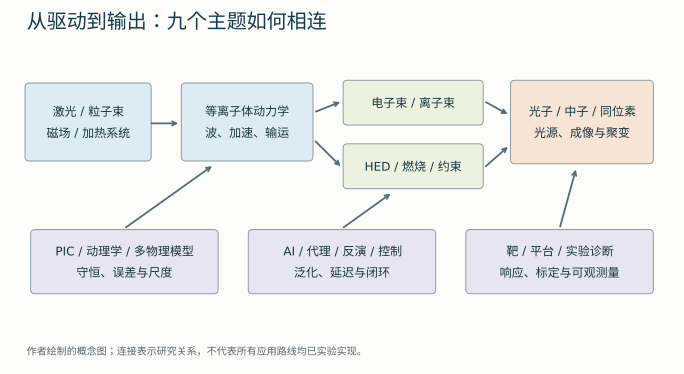
图的读法： 左边是驱动与介质，中间是粒子和场的动力学，右边是束流、辐射、核反应或聚变输出；底部三种方法贯穿整条链。它解释了为什么同一篇文章可能出现在三个分类里。分类篇数不能相加当作独立论文数。也不能从“在模拟分类中出现”推出“这是一篇只有模拟的文章”。
例如，电子束输出之后仍有输运损失、转换靶吸收和探测器响应。完整应用指标应写成
\[ Y_{\mathrm{useful}}=N_{\mathrm{source}}\,\eta_{\mathrm{transport}}\, \eta_{\mathrm{conversion}}\,\eta_{\mathrm{acceptance}}\,\eta_{\mathrm{use}}. \]
这里 \(N_{\mathrm{source}}\) 是每发源粒子数，输运、接受度与使用因子表示相应环节的比例；\(\eta_{\mathrm{conversion}}\) 表示每个初级粒子平均生成的相关次级粒子数，可能大于1，因此它不是能量效率。因子之间常常相关，实际优化需要联合相空间和靶响应，不能总用几个独立常数相乘。这个式子首先是记账框架：源端能量纪录可能没有转化成最终有效信号的增加。应用章详细处理这一问题。
等离子体是含有可运动电荷、能够产生集体电磁响应的物质。它可能是完全电离的高温气体，也可能是部分电离的低温放电，或正在被激光加热的固体。通常在足够大的尺度上近似电中性，即 \(n_e\simeq\sum_i Z_i n_i\)；“准中性”不意味着每处电场都为零，也不意味着鞘层、尾波和电荷分离可以忽略。
用三个问题识别物理状态：粒子在研究时间内是否碰撞很多次？外场能否把粒子轨道明显弯曲？观察尺度与电荷屏蔽尺度相比有多大？不同答案决定流体、动理学、相对论或量子模型是否合适。
考虑一维平板模型：有限厚的冷电子层与均匀离子层初始重合，离子在短时间内不动。将电子层相对离子层位移 \(x\)，两侧界面出现电荷分离；层内恢复场的量级为 \(E=n_e e x/\epsilon_0\)。电子受到反向力：
\[ m_e\frac{d^2x}{dt^2}=-eE=-\frac{n_e e^2}{\epsilon_0}x, \qquad \omega_{pe}=\sqrt{\frac{n_e e^2}{m_e\epsilon_0}}. \]
\(e>0\) 是元电荷，电子电荷是 \(-e\)；\(n_e\) 在 SI 中用 \(\mathrm{m^{-3}}\)，\(\omega_{pe}\) 是角频率，单位 \(\mathrm{rad\,s^{-1}}\)。数值上
\[ \omega_{pe}\simeq5.64\times10^4\sqrt{n_e[\mathrm{cm^{-3}}]}\ \mathrm{s^{-1}}, \qquad \lambda_p=\frac{2\pi c}{\omega_{pe}}. \]
在 \(n_e=10^{18}\,\mathrm{cm^{-3}}\) 时，\(\omega_{pe}\simeq5.64\times10^{13}\,\mathrm{s^{-1}}\)，周期约 \(111\,\mathrm{fs}\)，\(\lambda_p\simeq33.4\,\mu\mathrm m\)。因此几十飞秒激光可以有效激发这一尺度的电子尾波。升高密度会缩短周期并增大特征场，却也常缩短加速长度，不能只看场更大。
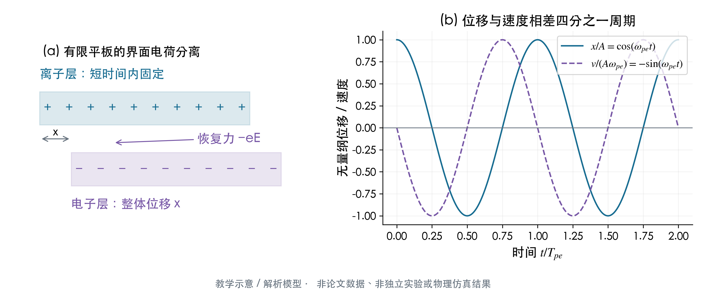
逐图理解。 (a)蓝色离子层固定，紫色电子层沿水平方向右移；图中的上下错开仅为分开标签，并非电子离开了离子平面。真正产生恢复场的是两端的未抵消电荷，因此电子受到向左的力。(b)横轴为经过的电子振荡周期数，纵轴为位移和速度分别除以各自幅值后的无量纲量。位移最大时速度为零，经过平衡位置时速度最大，二者相差四分之一周期。它把“集体电场像弹簧”变成可算的相位关系。曲线是冷、无耗散、小位移方程的解析解，既不是尾波的全部三维结构，也不是一篇论文的实验轨迹。
对热平衡电子，弱静电势满足玻尔兹曼关系
\[ n_e(\phi)=n_0\exp\left(\frac{e\phi}{k_B T_e}\right) \simeq n_0\left(1+\frac{e\phi}{k_B T_e}\right). \]
固定离子背景下，\(\rho=e(n_i-n_e)\simeq-n_0e^2\phi/(k_BT_e)\)。代入泊松方程 \(\nabla^2\phi=-\rho/\epsilon_0\) 得
\[ \nabla^2\phi=\frac{\phi}{\lambda_D^2},\qquad \lambda_D=\sqrt{\frac{\epsilon_0k_BT_e}{n_e e^2}}. \]
点电荷电势随距离呈 \(\exp(-r/\lambda_D)/r\) 衰减。这告诉我们：长于 \(\lambda_D\) 的电荷扰动会被集体屏蔽，但近表面、短时间或非平衡系统不能机械套用热平衡推导。在上述密度、\(T_e=100\,\mathrm{eV}\) 下，\(\lambda_D\simeq74\,\mathrm{nm}\)；计算时 \(k_BT_e=100\,\mathrm{eV}=1.602\times10^{-17}\,\mathrm J\)，不能再把“100 eV 温度”当成开尔文数乘一次 \(k_B\)。
Debye 球粒子数 \(N_D=(4\pi/3)n_e\lambda_D^3\) 很大时，平均场和弱耦合图像通常较好。暖稠密物质可能同时出现强离子关联、电子简并和部分电离，这时必须进入 HEDP 章讨论的 EOS、原子物理和输运模型。
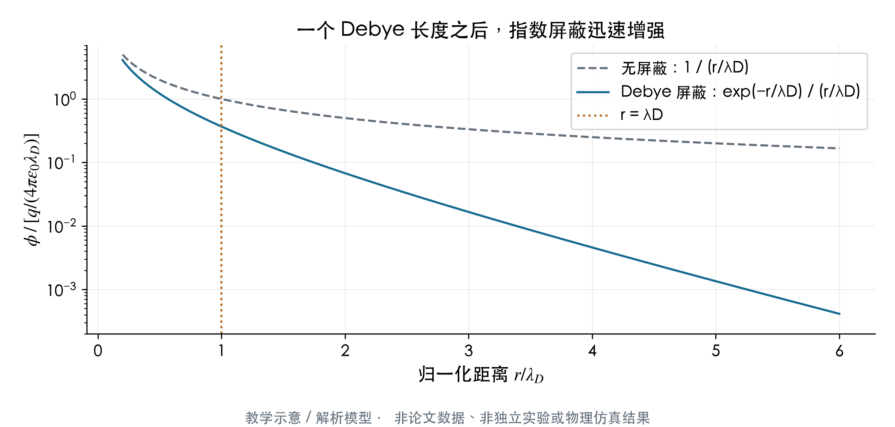
坐标与物理意义。 横轴是距离除以Debye长度；纵轴为电势除以 \(q/(4\pi\epsilon_0\lambda_D)\)，采用对数刻度。灰虚线只包含裸库仑势的 \(1/r\) 几何衰减，蓝线还包含电子重排造成的指数屏蔽。橙虚线处二者相差因子 \(e^{-1}\)，距离增加后相差越来越大。对数轴上相差一个大刻度意味着十倍，不能当作线性差值。此图说明为什么大尺度体区常近似准中性，但不能据此断言激光前沿、非平衡鞘层或暖稠密体系也服从这一静态、弱势、经典热平衡模型。
冷、无碰撞、无磁场等离子体中，令电场随时间为 \(e^{-i\omega t}\)。电子动量方程给出 \(-i\omega m_e\mathbf v=-e\mathbf E\)，电流 \(\mathbf J=-n_ee\mathbf v=i n_ee^2\mathbf E/(m_e\omega)\)。把电流代入 Maxwell 方程得到横电磁波色散：
\[ \omega^2=\omega_{pe}^2+c^2k^2. \]
若固定激光频率 \(\omega_0\) 而 \(\omega_{pe}>\omega_0\)，\(k\) 变为虚数，简单模型中波不能在体内传播。令二者相等得
\[ n_c=\frac{\epsilon_0m_e\omega_0^2}{e^2} \simeq\frac{1.115\times10^{21}}{\lambda_0^2[\mu\mathrm m]}\ \mathrm{cm^{-3}}. \]
对于 \(0.8\,\mu\mathrm m\)，\(n_c\simeq1.74\times10^{21}\,\mathrm{cm^{-3}}\)。低于它称欠密，高于它称过密，接近它称近临界。相对论运动会改变有效惯性和传播条件；密度也会随预脉冲、电离和膨胀变化。论文中的“近临界泡沫”必须问清是初始电子密度、预电离之后密度，还是主脉冲作用时的瞬时密度。
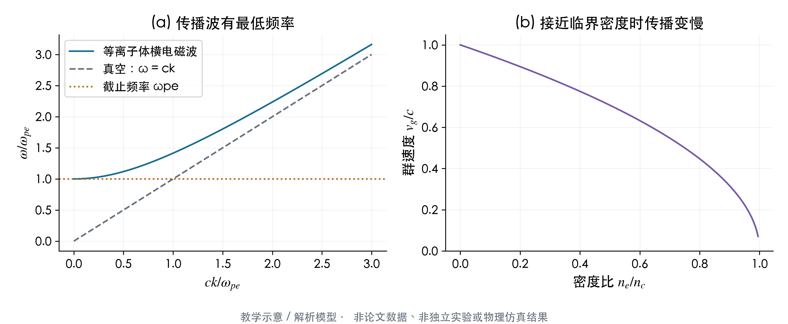
逐子图解读。 (a)横轴为 \(ck/\omega_{pe}\)、纵轴为 \(\omega/\omega_{pe}\)，两者无量纲。真空直线从零开始，等离子体曲线从截止频率1开始；它只画实数波数的传播分支，低于截止频率的倏逝场没有画成传播波。(b)固定激光频率，横轴是 \(n_e/n_c\)，纵轴是 \(v_g/c=\sqrt{1-n_e/n_c}\)，显示接近临界密度时脉冲包络传播变慢。这为尾场去相位和近临界相互作用提供背景，但相速度、群速度、粒子速度是不同量。相对论透明、自聚焦、磁场和碰撞均未包含，不能用此曲线直接判断强脉冲穿透厚靶的结果。
焦点强度大致是功率除有效面积，功率大致是脉冲能量除持续时间。准确数值取决于时间与空间分布；FWHM、\(1/e^2\) 半径、总能量和焦斑内能量需要分别记账。10 J、30 fs 的脉冲平均量级为 \(0.33\,\mathrm{PW}\)，但单靠“PW”不能确定焦点场，因为光学像差、焦斑和包围能量也重要。
线偏振正弦平面波的峰值场 \(E_0\) 满足 \(I=\epsilon_0cE_0^2/2\)。电子非相对论振荡动量幅值为 \(eE_0/\omega_0\)，除以 \(m_ec\) 定义
\[ a_0=\frac{eE_0}{m_ec\omega_0} \simeq0.855\,\lambda_0[\mu\mathrm m] \sqrt{\frac{I}{10^{18}\,\mathrm{W\,cm^{-2}}}}. \]
当 \(a_0\gtrsim1\)，振荡动量达到 \(m_ec\) 量级，需要相对论动力学。\(I=10^{19}\,\mathrm{W\,cm^{-2}}\)、\(\lambda_0=0.8\,\mu\mathrm m\) 时，\(a_0\simeq2.16\)。改变偏振或场幅定义会改变中间系数，比较论文时要保持定义一致。
a₀ 与量子效应并不等价。 \(a_0\) 判断强激光的经典非线性；电子量子参数 \(\chi_e\) 则比较粒子静止系电场与 Schwinger 场。高能电子迎头碰撞可以在并不极端的实验室强度下增大 \(\chi_e\)。强场 QED 章从 Lorentz 变换解释这个区别。
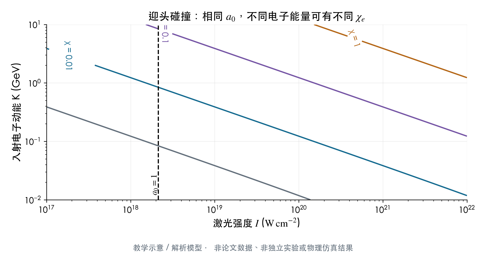
先读两条轴。 横轴为激光峰值强度，单位 \(\mathrm{W/cm^2}\)；纵轴为入射电子动能，单位GeV，两轴均为对数。黑虚线是固定0.8微米、线偏振约定下的 \(a_0=1\)，与入射电子能量无关；彩色线是相同 \(\chi_e\) 的组合。超相对论电子迎头遇到平面波时，有量级关系
\[ \chi_e\simeq2\gamma a_0\frac{\hbar\omega_0}{m_ec^2}, \qquad \gamma=1+\frac{K}{m_ec^2}. \]
在同一强度下，电子能量越高，静止系有效场越强；沿同一彩线提高电子能量则可降低所需强度。图用上述近似计算，没有拟合论文数据。彩线不是某个实验已经达到的边界，更不是“超过便一定可测”的阈值；焦点重叠、辐射导致的能量变化、事件数和本底必须到03/08章一起考虑。
最底层经典动力学是 Lorentz 力：
\[ \frac{d\mathbf p}{dt}=q(\mathbf E+\mathbf v\times\mathbf B),\qquad \mathbf p=\gamma m\mathbf v,\qquad \gamma=(1-v^2/c^2)^{-1/2}. \]
点乘速度，利用 \(\mathbf v\cdot(\mathbf v\times\mathbf B)=0\) 得
\[ \frac{d(\gamma mc^2)}{dt}=q\mathbf E\cdot\mathbf v. \]
磁场本身不直接对粒子做功，但它能改变轨迹，从而改变粒子与电场的相位和相互作用时间。因此 DLA 的通道磁场、磁重联的磁能释放和离子磁喷嘴都不能用“磁场不做功”一句话排除；应该追踪完整的场—粒子能量流。
对宏观系统，分布函数 \(f_s(\mathbf x,\mathbf p,t)\) 描述某物种在相空间中的粒子密度，满足
\[ \partial_tf_s+\mathbf v\cdot\nabla_{\mathbf x}f_s +q_s(\mathbf E+\mathbf v\times\mathbf B)\cdot\nabla_{\mathbf p}f_s =C_s[f]+S_s. \]
右边 \(C_s\) 表示碰撞，\(S_s\) 表示电离、注入等源汇。无碰撞无源就是 Vlasov 方程。对动量积分可得到密度、流速、压强张量；每一阶矩通常依赖下一阶，所以流体方程需要“闭合”。这正是许多 ML 闭合论文的物理问题：网络不是仅拟合一个曲线，而是替代无法负担的高阶动力学信息。模型章解释它为何容易在长期推进时失稳。
场的能量密度 \(u=\epsilon_0E^2/2+B^2/(2\mu_0)\) 与 Poynting 通量 \(\mathbf S=\mathbf E\times\mathbf B/\mu_0\) 满足
\[ \partial_tu+\nabla\cdot\mathbf S=-\mathbf J\cdot\mathbf E. \]
粒子得到的能量对应场失去的能量。若加入辐射、碰撞、边界逃逸或核反应，它们也要有自己的能量项。读一篇“高效率”或“能量守恒算法”论文，先写清它守恒的是哪套方程、哪些边界和哪些离散量，再评价结果。
| 比较量 | 含义 | 常见后果 |
|---|---|---|
| \(\lambda_D/L\) | 屏蔽长度与装置尺度 | 很小时可在体区近似准中性；鞘层仍需单独处理 |
| \(\lambda_{\mathrm{mfp}}/L\) | 碰撞平均自由程与变化尺度 | 接近或大于1时局域输运可能失效 |
| \(\rho_s/L\)、\(\Omega_st\) | 回旋半径、回旋时间与观察尺度 | 控制磁化与漂移近似；电子和离子可能不同 |
| \(\omega_{pe}t\) | 电子响应次数 | 决定是否能忽略快速电荷振荡 |
| \(v/c\)、\(a_0\) | 相对论运动与驱动非线性 | 决定相对论动力学与强驱动效应 |
| \(\chi_e\)、\(\chi_\gamma\) | 量子辐射与对产生参数 | 决定是否需要随机光子发射与强场 QED |
| \(\Gamma\)、\(T/T_F\) | 关联与电子简并 | 决定理想气体 EOS、经典粒子模型是否适用 |
\(L\) 是相关梯度尺度，\(t\) 是观察时间；\(\rho_s=v_\perp/|\Omega_s|\)，\(\Omega_s=q_sB/m_s\) 是非相对论回旋频率，相对论情形须考虑 \(\gamma\)。耦合参数 \(\Gamma=q^2/(4\pi\epsilon_0 a k_BT)\) 中 \(a\) 为粒子间距，\(T_F\) 是电子 Fermi 温度。表中没有一个固定阈值能替代完整模型判断，尤其不能仅凭“密度高”断言碰撞、简并和强耦合全都重要。
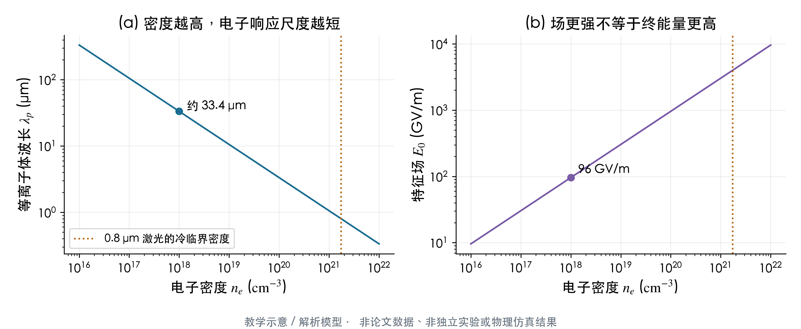
如何做量级判断。 两个子图的横轴都是电子密度，单位 \(\mathrm{cm^{-3}}\)、对数刻度。(a)纵轴是等离子体波长，单位微米，随密度的平方根倒数下降；(b)纵轴是冷电子特征场，单位GV/m，随密度的平方根上升。标出的 \(10^{18}\,\mathrm{cm^{-3}}\) 对应约33.4微米与96 GV/m。橙线是0.8微米激光的冷临界密度，提示传播条件也在变化。该图只比较公式量级，不宣称所有密度都能提供图中梯度；真实能增益还要乘上可持续的长度，并考虑去相位、耗尽、透明条件、碰撞和物性。
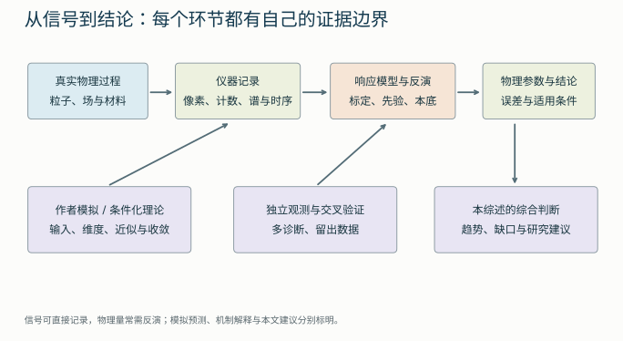
第一种是仪器直接记录的信号。 例如屏上像素、谱峰计数、探针电流、时间序列。它们仍需要本底、饱和、时间响应和标定检查。
第二种是经响应模型推断的物理量。 束荷、温度、能谱、辐射效率和部分中子产额通常经过反演。不能把“实验约束的反演”写成“逐粒子直接测量”，但也不能因此否定其全部实验价值。
第三种是作者模拟。 PIC、Geant4、辐射流体或平衡求解器可以给出实验无法直接看到的过程，也能做设计预测；其证据强度取决于物理模块、输入、维度、收敛和观测对照。
第四种是解析或条件化理论。 推导能解释机制、控制参数和极限；必须保留平面波、单粒子、低反应概率或某种渐近假设，不能把条件下存在的模式直接叫作已经制成的源。
第五种是本综述的跨论文判断。 当这里写“值得优先关注”“可能的瓶颈”时，是根据不同文章提出的综合解释或研究建议，应回到相应论文验证，而不是新增实验事实。
证据链可抽象为
\[ \mathbf y=\mathcal R[\mathbf x]+\mathbf b+\boldsymbol\epsilon, \]
其中 \(\mathbf x\) 为目标物理量，\(\mathcal R\) 为仪器与输运响应，\(\mathbf b\) 为本底，\(\boldsymbol\epsilon\) 为噪声。测到了 \(\mathbf y\) 不等于唯一确定 \(\mathbf x\)。多诊断、先验和校准能改善识别能力，但需要传播它们的不确定度。诊断章与 AI 章会分别讨论物理响应和统计反演。
先比较共同的输入条件：激光到靶能量、脉宽、波长、焦斑、靶密度与预脉冲，或磁约束的装置、磁场、加热与放电状态。再比较输出定义：总电荷还是某能区/角域内的电荷，峰值通量还是平均通量，单发最好值还是多发统计，瞬时能散还是输运后的接受度。
常见数量纲转换值得掌握。\(1\,\mathrm{nC}/e\simeq6.24\times10^9\) 个电子；\(1\,\mathrm{MeV}=1.602\times10^{-13}\,\mathrm J\)；\(1\,\mathrm{Gy}=1\,\mathrm{J\,kg^{-1}}\)。于是15 pC、47 MeV 的窄带束每发能量约 \(0.705\,\mathrm{mJ}\)，100 Hz 时在这个束团能区的平均电子功率约 \(70.5\,\mathrm{mW}\)。这是按代表性束荷/能量估算，忽略谱展宽、漏失和 shot 相关性，不能等同于墙插效率或样品剂量；数据来自100 Hz论文。R374，官方摘要。
数值论文比较“加速40倍”时，问清是否包括数据生成、训练、I/O、GPU通信和在线调用；ML比较“小误差”时，问清是否跨放电、跨装置、跨参数区间以及是否长期滚动推进。实验比较“稳定”时，问清连续 shots 数、成功率和失效发是否被剔除。这些问题往往比某个漂亮的平均数更能判断前沿方向是否走向实际用途。
如果最关心强激光怎样产生粒子与辐射，按本章→01加速→02应用→03强场QED→08诊断阅读。若关心PIC科研计算，按本章→05数值→01或04具体物理→06AI→08验证阅读。若关心聚变，按本章→04惯性约束或07磁约束→05数值→06代理与控制→08诊断。09章帮助识别跨方向的波、输运、重联及低温等离子体方法。
学习中每读一个机制，完成四个动作：用自己的话说清能量从哪里来；指出最重要的无量纲参数；手算一个量级；明确哪个量是直接观测、哪个量依赖模型。这样才会逐渐形成可迁移的理解，而不只是记住论文标题。
尾波加速的历史起点可读 Tajima–Dawson 1979 原论文；完整的波、注入和限制机制参考 Esarey–Schroeder–Leemans 2009 综述。这里用它们作背景路标，基础推导由本文教学整理，没有把早年方案当作今年的实验。1979原始论文，2009综述。强激光与相对论量子过程的背景可参考 Di Piazza 等2012综述，具体2026进展由03章的仓库文章支持。2012综述。
本章联网核对上述三条书目信息，以及R374官方摘要、R035正式论文页和R393官方论文页；详细最新结论由各主题章的本地全文与来源检查记录支持。参数例题、Debye/临界密度/Lorentz能量式推导是独立教学计算，不能被解读为对任何论文的数值复现。
阅读定位：先建立电子、离子在等离子体里如何获得能量的图景，再理解 2026 年论文在解决哪一种瓶颈。时间截止 2026-09-30；“今年”按公开发表/预印本提交日期判断。仓库路由包含 126 条相关记录，其中存在跨类与宽泛匹配，不能把 126 当作这一机制的独立论文总数。本章重点解释 16 组工作，并把其他论文接入共同问题。所有数值沿用论文定义，未开展本地 PIC 复现。
传统射频加速器用金属腔的电场做功，梯度受到击穿和热负荷限制。等离子体已经电离，可以承受很强的电荷分离场：电子被排开，较重离子来不及移动，留下类似弹簧的恢复力。但“大电场”只是起点；粒子必须在正确的相位进入，在传播中保持聚焦，最后完整地离开加速区。
| 路线 | 驱动与主要做功场 | 主要对象 | 常见优势 | 首要困难 |
|---|---|---|---|---|
| LWFA，激光尾场加速 | 激光有质动力驱动电子密度波，纵向尾场做功 | 电子 | 全光学、短束团、较高单级能量 | 注入波动、去相位、激光耗尽 |
| PWFA，束流尾场加速 | 驱动粒子束激发尾场，后随见证束吸能 | 电子，亦研究正电子 | 相速度接近光速、可独立设计驱动束与见证束 | 上游束源、束流加载、横向不稳定性 |
| 等离子体 DLA，直接激光加速 | 激光横向电场对通道内振荡电子做功 | 电子 | 高电荷、宽谱、适合转换靶 | 共振持续性、发散、注入与三维通道 |
| 激光离子加速 | 热电子鞘场、辐射压力、冲击波或透明靶电荷分离场 | 质子、氘及重离子 | 超短源、强瞬时流强、多种靶设计 | 能散、有效电荷、靶补给、输运 |
这里的 DLA 指等离子体通道内的 direct laser acceleration；介质光栅中的 dielectric laser accelerator 也简称 DLA，仓库 R298 属于后者，其相位匹配边界和材料限制不同，应在阅读时拆开。
电子能量 \(K=(\gamma-1)m_ec^2\) 的单位常为 MeV/GeV；电荷 \(Q=Ne\) 衡量有多少电子，\(1\,\mathrm{nC}\) 约为 \(6.24\times10^9\) 个。相对能散 \(\sigma_K/\langle K\rangle\) 区分窄谱与宽谱，须注明 RMS 或 FWHM。发散角是离开源后的角分布；归一化发射度则是位置和动量共同占据的相空间面积，二者不能互换：
\[ \epsilon_{n,x}=\frac{1}{m_ec}\sqrt{\langle x^2\rangle\langle p_x^2\rangle-\langle xp_x\rangle^2}. \]
均已减去质心。单位可写 m·rad；若束流近单能且近轴，\(p_x\simeq\beta\gamma m_ecx'\)，因此 \(\epsilon_n\simeq\beta\gamma\epsilon\)。束团被强透镜聚到很小，未必意味着发射度很小，因为发散可能同时增大。最终还要看重复频率、稳定性和应用接受度；峰值能量最高的少数电子，未必属于可用束团。
取有限厚平板电子层与固定、均匀离子层的界面位移模型（或等价的纵向扰动），密度为 \(n_0\)，电子层偏移小距离 \(x\)；无限均匀介质的刚性整体平移没有这一恢复场。高斯定律给出恢复场量级 \(E=n_0ex/\epsilon_0\)，电子方程是
\[ m_e\ddot x=-eE=-\frac{n_0e^2}{\epsilon_0}x, \qquad \omega_p=\sqrt{\frac{n_0e^2}{\epsilon_0m_e}},\quad \lambda_p=\frac{2\pi c}{\omega_p}. \]
这是冷、无碰撞、小振幅模型，不含热运动、相对论非线性和离子响应。把电子在一个等离子体周期中加速到 \(c\) 作为量级估计，\(eE_0/(m_e\omega_p)\sim c\)，得到
\[ E_0=\frac{m_ec\omega_p}{e} \simeq96\sqrt{\frac{n_0}{10^{18}\,\mathrm{cm^{-3}}}}\ \mathrm{GV/m}. \]
在 \(10^{18}\,\mathrm{cm^{-3}}\) 时，\(\lambda_p\approx33\,\mu\mathrm m\)。这里用了 \(1\,\mathrm{cm^{-3}}=10^6\,\mathrm{m^{-3}}\)；忘记这个换算会导致频率相差千倍。提高密度会让梯度更大，却缩短可用加速长度并改变注入，所以不能只凭 \(E_0\propto\sqrt n\) 判断最终能量。
对角频率 \(\omega_0\) 的激光，电子振荡动量量级 \(p_\perp\sim eE_L/\omega_0\)，用 \(m_ec\) 归一化得到
\[ a_0=\frac{eE_L}{m_ec\omega_0} \simeq0.855\sqrt{I[10^{18}\,\mathrm{W/cm^2}]\,\lambda_0^2[\mu\mathrm m^2]}. \]
后一式采用线偏振峰值强度约定；不同偏振的峰值/RMS 定义要对齐。空间非均匀激光的周期平均力把电子赶离强场区，其相对论量级可写 \(\mathbf F_p\sim-m_ec^2\nabla\sqrt{1+\langle a^2\rangle}\)。当驱动足够强且脉长合适，电子排到外围，形成主要由离子占据的 bubble/blowout。常用匹配估计是
\[ k_pw_0\sim2\sqrt{a_0},\qquad k_p=\omega_p/c. \]
它描述轴对称、非线性空泡的设计量级，不能不加检验地用于极短脉冲、自调制波、非轴对称束或近临界密度。临界密度 \(n_c=\epsilon_0m_e\omega_0^2/e^2\) 对 \(0.8\,\mu\mathrm m\) 约为 \(1.74\times10^{21}\,\mathrm{cm^{-3}}\)；“近临界”通常是相对于激光频率的概念，强场下有效质量增大还会带来相对论透明。
电子接近 \(c\)，激光尾场相速度往往近似激光群速度。冷稀薄等离子体中
\[ v_g\simeq c\sqrt{1-\omega_p^2/\omega_0^2}, \quad 1-v_g/c\simeq\frac{\omega_p^2}{2\omega_0^2}. \]
设电子允许相对尾场滑移的长度为 \(\Delta\xi\)，则 \(L_d\simeq\Delta\xi/(1-v_\phi/c)\)。取 \(\Delta\xi\sim\lambda_p/2\)，得到 \(L_d\sim\lambda_p\omega_0^2/\omega_p^2\propto n_0^{-3/2}\)。因此降低密度虽降低梯度，却可能让积分能增益 \(\Delta K=-e\int E_z\,dz\) 变大。实际 \(v_\phi\) 还受前沿侵蚀、脉冲演化、密度坡和非线性影响，系数不是普适常数。
泵浦耗尽是驱动器把能量转移给等离子体和粒子；即使取消去相位，也没有取消有限激光能量。束流加载是被加速束本身修改尾场：设计合适的纵向电流分布，可把加速场压平以减小能散；装入过多电荷则可能削弱聚焦并激发横向不稳定性。必须区分激光到电子效率、驱动束到见证束效率、尾场到见证束效率，不能横比百分数。
PWFA 的驱动电子接近 \(c\)，通常可减轻光学驱动的去相位；能增益仍受驱动束耗尽、transformer ratio、束型和级长限制。质子驱动器含很大总能量，但长质子束需先自调制成近 \(\lambda_p\) 间距的微束团列，才有效共振激发尾场。长等离子体源的稳定性是这一方案的核心工程问题。R188、R344
在离子通道中，电子受到线性聚焦力 \(F_r\simeq-m_e\omega_p^2r/2\)，近轴且 \(\gamma\) 慢变时，betatron 频率约为 \(\omega_\beta=\omega_p/\sqrt{2\gamma}\)。电子沿激光方向前进，感受到的振荡频率降低为 \(\omega_0-k_0v_z=\omega_0(1-v_z/v_\phi)\)。DLA 共振需要某个整数谐波满足
\[ N\omega_\beta\simeq\omega_0-k_0v_z, \qquad \frac{dK}{dt}=-e\,\mathbf v\cdot\mathbf E. \]
轨道会不断变化，所以共振是持续的相位关系而非一次等式。数值归因应分别积分激光与准静态场做功，并追踪粒子；只见高能尾不足以证明 DLA。R285、R303
TNSA 中激光先加热电子，电子逸向靶后表面形成鞘层。等温 Boltzmann 电子满足 \(n_e\propto\exp(e\phi/k_BT_e)\)，由 \(E_z=-\partial_z\phi\) 得
\[ eE_z=-k_BT_e\,\partial_z\ln n_e. \]
因此鞘场同时取决于温度与密度梯度。德拜长度 \(\lambda_D=\sqrt{\epsilon_0k_BT_e/(n_ee^2)}\) 给出梯度尺度，故 \(E\sim k_BT_e/(e\lambda_D)\)。经典一维等温膨胀模型在晚时 \(\omega_{pi}t\gg1\) 的渐近区产生大致 \(K_{i,\max}\propto Zk_BT_e\ln^2(\omega_{pi}t)\) 的截止能量增长；有限热电子能量、有限横向尺寸和多组分会修改它。
RPA 则以反射辐射压力 \(P_{\rm rad}\simeq2I/c\) 推动靶。薄箔 light-sail 的加速度量级为 \(2I/(\sigma c)\)，其中 \(\sigma\) 是面质量密度，随后需加入相对论多普勒因子与透明条件。库仑爆炸来自电子被移走后离子间排斥；冲击波加速来自运动电势结构对离子反射；近临界透明靶通常是多机制混合。论文给它一个名称，并不证明其他机制不存在。
要进入尾场，电子必须跨过共动系的俘获边界。设场近似只依赖 \(\xi=z-v_\phi t\)，电子电荷为 \(-e\)，定义 \(\psi=e(\phi-v_\phi A_z)/(m_ec^2)\)。由空间—时间的共同平移对称性，近似守恒量可写为
\[ \mathcal H=\gamma-\beta_\phi\frac{p_z}{m_ec}-\psi, \qquad \beta_\phi=v_\phi/c. \]
这里 \(\phi,A_z\) 是 SI 电势与矢势，\(v_\phi A_z\) 和电势有相同单位。没有辐射、碰撞且尾场准静态时，上式沿轨道近似不变。初始慢电子的动能很小；为了追上近光速尾场，它要借助足够的势差降低共动 Hamiltonian 的运动障碍。因此同样的峰值场，电子在不同相位出生，会有完全不同的结果。
自注入利用空泡演化或破波让背景电子进入俘获轨道，装置简单，却容易在整个传播阶段持续注入，造成电荷与能散波动。电离注入把高电离阈值电子延迟到激光最强位置释放，出生位置更集中，但激光沿程变化仍会拉长注入窗口。密度下坡使等离子体波长增大，尾场局部相速度下降，降低追波门槛；外注入则先制备电子束，再匹配其位置、时间、能量与聚焦条件。等离子体光阴极把释放脉冲与主驱动器分开，能进一步缩小出生相空间，但增加多束激光同步要求。R068、R265
这些路线没有统一最优解。要比较它们，应在相同有效能窗内报告电荷、归一化发射度、注入长度和逐发稳定性；仅看束团“更亮”可能混入不同的电荷或脉宽定义。对密度下坡尤其要检查，增强俘获的同一个坡是否在出口削弱聚焦并造成电子脱落。R356
等离子体内的聚焦非常强，出口后突然变成真空漂移。若束在出口的 Twiss 参数与下游透镜不匹配，原来很小的束腰会迅速张开；不同能量又经过不同聚焦强度，产生色差。对于能量近固定、近轴、忽略空间电荷的一小段输运，束包络的简化方程为
\[ \sigma_x''+k_\beta^2\sigma_x- \frac{\epsilon_n^2}{\beta^2\gamma^2\sigma_x^3}=0. \]
三个项依次表示包络变化、外场聚焦、有限发射度造成的扩张。取 \(\beta\simeq1\)、\(\sigma_x''=0\)，匹配尺寸为 \(\sigma_{x,m}^2=\epsilon_n/(\gamma k_\beta)\)。这解释了为什么等离子体密度、电子能量或发射度变化时，原来的匹配光学不再适用。加速段需补入随能量变化的阻尼项；高电荷低能束还要补空间电荷，不能把这条简化式直接套到所有出口。
实践上，低密度渐变出口可缓和强聚焦的突然关闭，紧邻源的透镜可截住发散，但密度坡本身会改变尾场与束流加载。下游能量狭缝得到的窄谱，是接受度筛选的产物；应同时给出筛选前后电荷比。低发射度源的证据需要使用测量模型审计透镜像差、能散和仪器分辨率，这正是 R314 螺线管测量与衍射示范应配套阅读的原因。
仓库早期记录把多级耦合 R001、相关能散补偿 R004、LWFA 电子再驱动 PWFA R011、等离子体恢复时间 R013 放在连续链上。这些标题对应四个长期问题：单级不能无限延长、束质不能只靠源区决定、驱动器可以混合、重复运行必须等待等离子体恢复。此处只作主题脉络，早期模板笔记不足以支持各文精确性能。
离子路线从透明增强混合加速 R005、近临界氢喷流的 80 MeV 结果 R015，发展到传导受限靶的辐射压力与库仑排斥 R019。这里的连续性是“改变靶电子响应来延长有效离子做功”，并不意味着所有 >100 MeV 结果都遵循同一机制。2025 年的两级 LWFA R024 和能量/亮度同时提升的 PWFA R025 是今年讨论级联与束质的直接背景；缺笔记项仅列作待精读入口。
① 工业 Yb:YAG 驱动的多 kHz LPA。 R121 用多通池把皮秒脉冲后压缩到约 50 fs，在近临界等离子体中得到每发 10–12 pC、50–70 mrad 发散、数 MeV 宽谱电子。0.625–6.25 kHz 范围内束参数基本保持；关键限定是 burst mode，不能直接当全年连续 6.25 kHz。模拟归因为自调制加速与相对论自聚焦，区别于窄谱 GeV bubble 加速。它的意义是工业高平均功率激光与靶系统接通，适合平均通量需求，而非同一次刷新能量、发射度和重复率。官方原始提交页，2026-06-05。
② 100 Hz 的约 50 MeV 窄谱束。 R374 的 70 mJ、8.1 fs OPCPA 驱动器产生约 47 MeV、15 pC 电子。10,000 连续发的峰能 RMS 为 1.4%、电荷 RMS 为 12%；“固有能散 <10%”是经仪器响应模型得到的 95% 置信上限，原始测量宽度受磁谱仪分辨率影响。PCA 识别五个可解释波动模态，慢于 1 Hz 的漂移占主导，提示反馈系统不能只盯单发噪声。PIC 支持自聚焦使电离注入局域化，但没有证明每个漂移模式的唯一物理原因。官方页，2026-09-22。
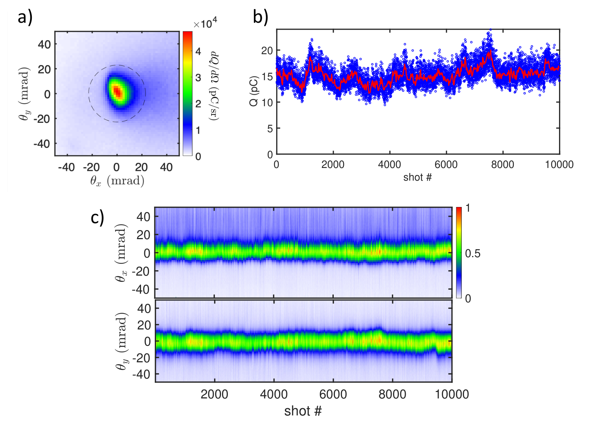
图 01-1｜100 Hz 加速器的连续万发电荷与指向。R374，原图 2，PDF 第 4 页
图 (a) 是一发电子的二维角分布，横纵轴为 \(\theta_x,\theta_y\)，单位 mrad；色标为单位立体角电荷 \(dQ/d\Omega\)，单位 pC/sr，并带 \(10^4\) 标度。黑虚线圈界定计算束电荷的接受区，因而下面的稳定性针对这个区内的束，而非任意远离核心的晕。图 (b) 横轴是 10,000 连续发编号，纵轴电荷 pC；蓝点保留逐发涨落，红线平均每 20 发，显示约 15 pC 周围存在缓慢漂移。图 (c) 两幅瀑布图分别给水平、竖直投影：角度仍用 mrad，颜色归一化到 0–1，狭窄亮带的移动反映指向变化。这类归一化剥离了绝对电荷信息，不能用 (c) 的亮度直接代替 (b)。原文统计电荷 RMS 12%、指向 RMS 约 1.2/1.3 mrad；它们是不同误差轴。该图把“能连续打出束”升级为有时间窗口、接受区和波动结构的实验数据，尚不足以识别每种慢漂移的唯一成因。
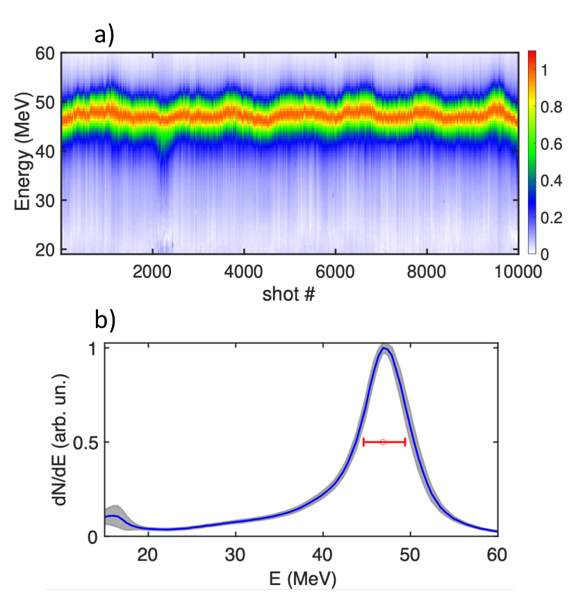
图 01-2｜窄谱稳定性与能散反卷积的边界。R374，原图 3，PDF 第 5 页
图 (a) 横轴为炮次，纵轴电子能量 MeV；每发能谱分别归一化，色标 0–1。约 47 MeV 的峰形成连续亮带，说明峰位置稳定，但这种处理不能证明电荷同样稳定，也不能排除狭缝接受度之外的粒子变化。图 (b) 蓝线是平均 \(dN/dE\)，纵轴任意单位；灰带给逐发 RMS 波动，红色水平误差条给峰值能量处磁谱仪约 4.8 MeV 的分辨率。实测 FWHM 约 6.5 MeV，与仪器宽度相近，所以不能直接把这一宽度认作本征能散。作者用仪器响应卷积 Lorentzian 谱形，最佳本征 FWHM 约 3.8 MeV，profile-\(\chi^2\) 给 95% 上限 4.6 MeV，即相对宽度约 10%。图的作用是把“峰能 RMS 1.4%”与“单束能散上限”拆开：前者描述峰的位置重复性，后者描述束内分布，并含谱形与响应模型条件。
③ 低发射度与衍射应用。 R314 以永磁螺线管扫描测得 2.7 MeV 束的归一化发射度约 124 nm·rad，并获得硅纳米膜多级衍射峰。它说明适合衍射的关键是横向相干性和相空间，而非最高能量。空间电荷、输运中的色差、束长与样品端稳定性仍需分别量化。时间上是 2026-02-13 初次提交、08-27 的 v2 修订，不能称“八月首次发现”。版本记录
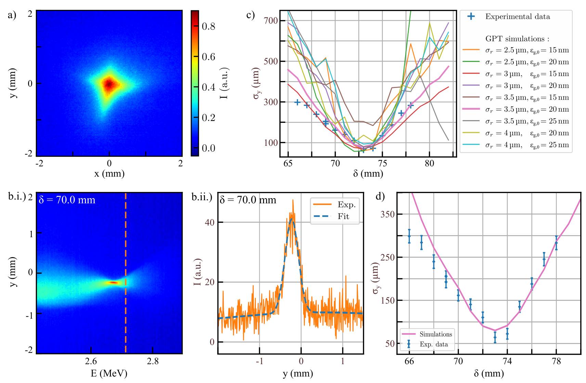
图 01-3｜低发射度来自输运扫描反演。R314，原图 3，PDF 第 4 页
图 (a) 没有色散磁铁时给屏上焦斑，横纵位置单位 mm、颜色是任意单位强度；宽能谱的不同能量聚焦在不同纵向位置，混在一起会扩大焦斑。图 (b.i) 加入偶极后，横轴改为能量 MeV、纵轴仍为 mm，出现“蝴蝶结”；橙虚线选择 2.7 MeV。(b.ii) 在该能量截取竖直线型，橙线为实测，蓝虚线为 Gaussian 拟合，强度任意单位。图 (c) 扫描螺线管位置 \(\delta\)（mm），纵轴是屏上 RMS 宽度 \(\sigma_y\)（μm）；蓝十字与不同初始源尺寸、几何发射度的 GPT 曲线共同确定输运解。图 (d) 最优参数为 \(\sigma_r=3.5\) μm、\(\epsilon_g=20\) nm·rad，误差条同时包含逐发 RMS 与成像分辨率，换算得到约 124 nm·rad 的归一化发射度。图支持选定能量切片的低发射度，并说明单张小焦斑本身不足以测发射度；模型、色差与能量选择必须留在证据链中。
④ 10 m 放电等离子体源。 R344 展示长 noble-gas 放电源在 AWAKE 质子束下产生可解析自调制，并经历 >20,000 次放电。调制频率随密度按 \(f\propto\sqrt n\) 变化，与基础等离子体振荡一致。这是源与自调制实验，没有测量该源中的见证电子能增益。双程干涉仅给线积分，0.63% 的频率事件散布也不是全长密度均匀性；把这两者拆开，才能识别离真正长级 PWFA 还缺什么。
⑤ 波导模式实现无去相位方案。 R144 组合不同等离子体波导模式的频率与相位，使驱动包络峰值与尾场相位接近 \(c\)，同时保持短脉冲和近固定光斑。它改动的是驱动结构，不是简单延长普通高斯束的靶。解析标度与准三维 PIC 支持能增益随参与模式数增长；光学模式生成、模式耦合误差、耗尽和注入容差尚待实验。取消去相位仍需支付驱动能量，不构成无限加速。
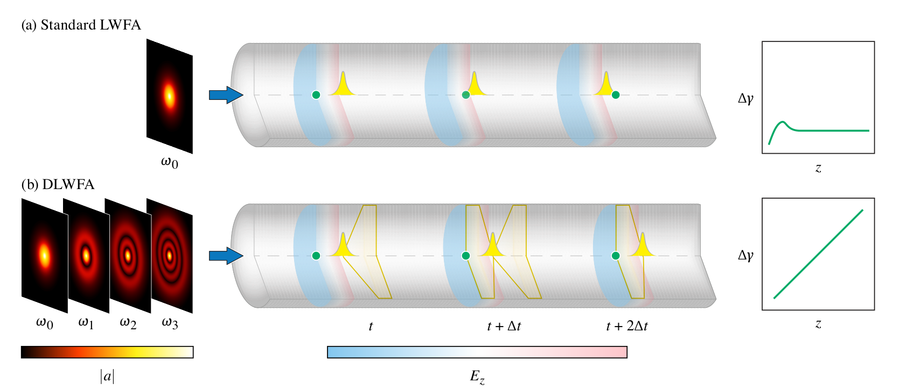
图 01-4｜让强度峰与能量包络具有不同速度。R144，原图 1，PDF 第 3 页
图 (a)、(b) 都按 \(t,t+\Delta t,t+2\Delta t\) 排列传播快照；灰色管是等离子体波导，绿色是相对论电子。图中 \(|a|\) 和 \(E_z\) 色条只示意横向光场与纵向加速/减速区域，未给定量单位；右侧 \(\Delta\gamma\) 对 \(z\) 曲线也用于解释趋势。普通单频驱动的强度峰随亚光速群速度前进，电子从蓝色加速相位滑入红色减速相位，故能增益先升后降。下排将 \(\omega_0,\omega_1,\omega_2,\omega_3\) 等波导模式频率按色散关系配置，干涉峰以 \(c\) 前进，电子保持在加速相位；黄色大包络仍以小于 \(c\) 的群速度移动。关键是强度峰可以由干涉结构形成，并不意味着每一份能量以该峰速度输运。它把去相位限制与耗尽限制分开，是解析/PIC 方案的机制示意；右图的持续增长没有证明无限能量，也没有给出实验已实现的模态纯度、耦合效率或可用加速长度。
⑥ 用适度耗尽反啁啾。 R267 把“效率与能散冲突”重写为纵向相空间旋转问题：离焦注入形成束团，短驱动器耗尽后尾场梯度演化再做一次反啁啾。代表 PIC 的 8 fs 情形约 372 MeV、1.27 nC、3.28% 能散、20% 效率；另一个优化点用 8.3 J、7.2 fs 得约 420 MeV、5.5 nC、约 10% 能散。两组是不同参数点，不应拼成同一束。模拟忽略离子运动、使用横向反射边界；高 \(a_0\) 和电荷下三维/离子效应可能改变最优窗口。
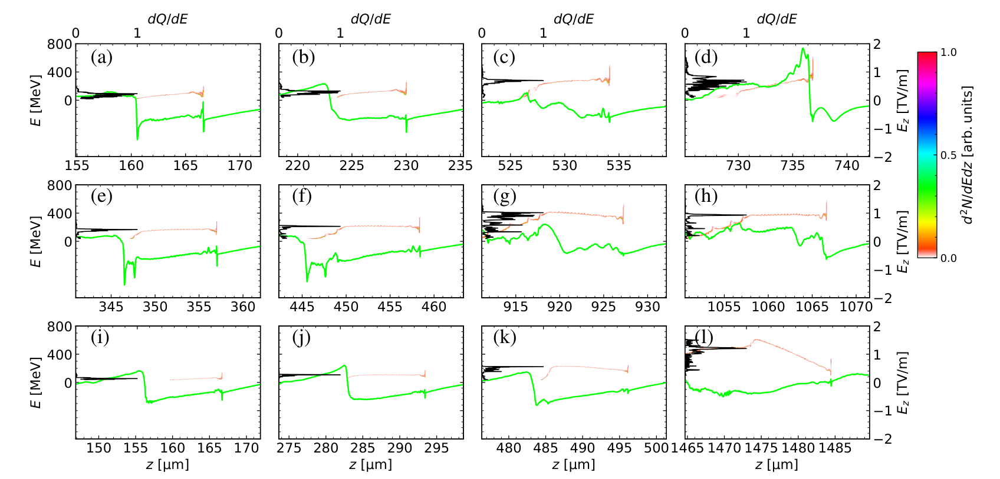
图 01-5｜适度耗尽为什么能够第二次反啁啾。R267，原图 4，PDF 第 4 页
十二幅图依次是 5 fs 的 (a–d)、8 fs 的 (e–h)、15 fs 的 (i–l)，每行从左到右跟随传播演化；各列的 \(z\) 范围不同，不能把它们当同一时刻比较。横轴为纵向位置 μm，左纵轴为电子能量 MeV，彩色分布是归一化 \(d^2N/(dE\,dz)\)、任意单位。黑线给投影能谱 \(dQ/dE\)，读取上方 0–1 归一化轴；绿线给 \(E_z\)，读取右侧 TV/m 轴。最短脉冲过早耗尽，尾场来不及完成所需相空间旋转；8 fs 在 (f)、(h) 先后出现较小纵向倾斜，原文解释为泡收缩和增强束流加载使场梯度反号，第二次抵消正啁啾。15 fs 在 (j) 第一次变窄后继续积累啁啾，去相位时仍没有对应梯度反转。(h) 的约 372 MeV、3.28% FWHM 是这一参数点的模拟结果。该图直接展示“效率—能散”如何由演化过程耦合，但色标不是绝对粒子数，二维投影也不检验离子运动及完整三维稳定性。
⑦ 自引导 LWFA 的能量优化标度。 R276 用 boosted-frame PIC 与贝叶斯搜索寻找“最大电子能量、达到该能量的最短长度”。给定扫描域内激光能量翻倍，最优能量约增 1.5 倍、长度约增 1.8 倍；1 J、1 μm 的设计例约 833 MeV、5.1 mm。最优区是较宽脊线，比单个最佳点更有工程意义。但目标取高能尾前 1% 宏粒子，不能据此推算全束平均能量或应用通量；实验室系复核与 boosted-frame 有约 8–16% 能量差异，应成为标度误差预算的一部分。
⑧ 高效率 PWFA 的横向稳定性窗口。 R200 让横向 wake 模型自洽响应强加载后的空泡形状，设计梯形 trailing bunch。特定 1 m 级 3D PIC 给出最高约 16.5 GeV 增益、接近 80% 的尾场到见证束功率转移与 <1.5% 最终相对能散，同时基本保持发射度。这里的 80% 分母是尾场功率，不能与激光壁插效率或激光到电子效率横比。精细束型抑制不稳定性是可检验机制，真实注入误差和长级累积容差仍未闭合。
⑨ 真空焦点位置也是物理旋钮。 R381 在 CoReLS 用 15.22 J、54 fs 激光，把小于匹配尺寸的焦斑放在气室入口上游约 1.6 mm，实验获得最高约 1.4 GeV。自注入发生在有限焦点窗口。准三维 FBPIC 支持“先离焦、等离子体再聚焦、稳定加速更长”的趋势，却预测约 2.2 GeV 和不同最优位置，还在实验无束的部分位置继续注入。这是机制支持与定量预测失配并存的好例子：设计时应把真空焦点、实际等离子体内焦点分开。
⑩ PETAL 的微库仑宽谱电子。 R285 在 719 J、753 fs 激光下得到 \(>0.9\) MeV 电子总电荷 \(1.1\pm0.13\,\mu\mathrm C\)，高能尾约 500–550 MeV。全角谱平均能量约 15 MeV、束总能量约 17 J；以全激光能量作分母效率约 2.3%，以主焦斑 194 J 作分母才是 8.5%。小接受角谱的平均能量不能代表全束。场做功分解支持 SMLWFA 负责俘获和预加速、DLA 补高能增益；该高通量路线适合宽谱转换源，不能写成微库仑低能散 GeV 束。官方版本页
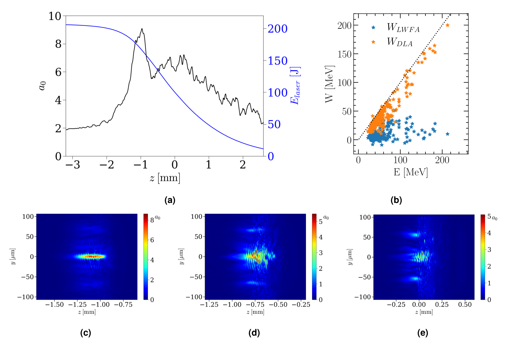
图 01-6｜区分尾场预加速和 DLA 高能增益。R285，原图 6，PDF 第 8 页
图 (a) 横轴是传播坐标 \(z\)（mm），黑线 \(a_0\) 读左轴、蓝线激光能量 J 读右轴；能量持续下降而局部场幅先增大，体现自聚焦与耗尽可以并存。图 (b) 横轴是所追踪电子的末态能量 \(E\)，纵轴是累积做功 \(W\)，均用 MeV；蓝星为纵向尾场贡献，橙星为 DLA 贡献，虚线 \(W=E\) 是比较基准。高能粒子的橙星更接近该线，支持 DLA 给这些粒子的大部分增益；这不是所有电子的平均贡献，更不能把采样点数当实际电荷。图 (c–e) 是三个传播阶段的激光振幅切片，横轴 mm、横向轴 μm，色标为无量纲 \(a_0\)；(c) 与 (d,e) 色标范围不同，必须读数字再比较，不能只按颜色判断峰值。后期空间碎裂说明驱动已显著演化。图 (a,c–e) 来自三维 CALDER，(b) 来自准三维 OSIRIS，属于对实验机制的数值解释；实验电子总能量或转换效率仍应按各自接受角和激光能量分母定义。
⑪ 黑腔预热泡沫的可调 DLA。 R289 以纳秒激光驱动黑腔软 X 光，再由 120 J、0.8 ps 脉冲照射预热泡沫。6–9 ns 延迟给约 13 MeV 有效温度和 80 MeV 截止；更长延迟增加电荷却降低谱温度。流体与三维 PIC 提示更均匀密度形成单一通道，减少冷泡沫多丝化。总电荷约 165 nC 依赖角分布外推，成像板饱和使其带上限估计性质；没有下游 γ/中子应用测量。它把“靶预史”变成设计变量，不能仅输入相互作用时刻的平均密度。
⑫ 直接观察电子脱落。 R356 用飞秒电子显微镜探测高电荷束在出口密度坡的电磁场印迹，约 550 pC、>100 MeV 束在下降区拉长并丢失尾部。FBPIC 解释为激光失焦后向 PWFA 转换，头部给尾部输能，尾部进入弱聚焦区后发散脱落。直接证据是探针印迹，逐粒子能量转移和阈值来自模拟。这说明出口坡不只是“结束靶”，也是一个会重新塑造电荷和相空间的加速/损失级。
⑬ 等离子体光阴极与正电子。 R265 用预极化 HCl、多色激发与弱光局域电离，模拟得到 10.8 pC、约 57 nm 发射度电子，并保留 97% 初偏振；若实际初偏振约 70%，终偏振约 67.9%，不能把保留率当绝对偏振。另一方面 R321 用轴向磁场把被排开的等离子体电子重新组织为轴上柱，扩大正电子聚焦兼加速区；60 mm 数值输运捕获约 85–92%，不同代码/分辨率给 99–150 MeV 能增益。两者都显示“束种、自旋与注入”成为设计自由度，但目前主要是数值方案。
⑭ 固定能量双脉冲与二维误差。 R133 只改变能量分配和延迟，32 次 2D PIC/贝叶斯试验找到前导脉冲约 7%、延迟约 234 fs 的点，截止从 7.7 提高到 17.7 MeV。机制是预等离子体改变吸收与鞘场寿命，不是优化器本身赋予粒子能量。R151 进一步优化双层靶的峰能、窗口电荷和带宽；代表点由 2D 的 67.4 MeV/18.8% 变为 3D 的 34.1 MeV/7.0%。这不是小数值修正，而会改变应用判断，说明必须把 3D 校验放到真正候选点。
⑮ 皮秒近临界靶的持续鞘加热。 R362 提出 extended sheath heating：适量透射场持续加热正在膨胀的后鞘。一维理想模型的效率 \(\eta=T\ln(1/T)\)，这里 \(T\) 是场透射而强度透射为 \(T^2\)。求导 \(d\eta/dT=\ln(1/T)-1\)，极值在 \(T=e^{-1}\)，给 \(\eta=e^{-1}\approx37\%\)。该值是质量受限一维模型上限，不是新测得的质子效率。二维有限焦斑、周期 PIC 和既有实验趋势支持中等透射最优；从解析极值到可用离子束仍需处理谱、角度、靶膨胀和能量定义。
⑯ 后加速的相位门槛与锥导控制。 R283 在零初始横向动量的测试粒子扫描中，近临界 snowplow 前沿可给最优粒子约 2.2 GeV 增益，但它只出现在特定初始位置/能量带，前沿又受群速度和快速耗尽限制，不能代表整束的准单能输出。R371 则用靶后动态锥透镜同时控制横向与纵向相空间：短锥利聚焦，长锥可缩谱但牺牲准直。两篇共同说明，有效性能由“什么时候到达什么场区”决定，最高增益和最佳束形通常不是同一参数点。
注入设计从时间非对称电离注入 R068，延伸到波前引导的 DLA 注入 R303：前者控制电子何时被释放，后者强调前沿磁岛、横向动量和通道入口。结构光的 helical bunch R253、涡旋磁箍缩 R260 对应角动量和通道电流的新控制轴；相关结果需与常规束在相同能量、接受度、发射度定义下比较，不能只用末态图案判断优势。
非理想尾场可用多极语言组织。R140 的 \(m=1\) 通道关联质心漂移，\(m=2\) 关联横向平面耦合；R240 以非轴对称 Lagrangian 框架推进空泡理论，R156 研究空心通道四极 wake。这些论文连接“激光波前/束斑不对称”与“束质退化”，适合用来定义诊断量，而非仅看轴上 \(E_z\)。离子化 hose R135 提醒背景电子的出生机制也会改写稳定性。
离子方案中，纳米结构靶 R198、双脉冲 micronozzle R211 和实验塑料箔中的碳离子 piston 束团化 R224 都在重塑场的空间/时间分布。不能把实验观察的谱峰等同于已达用户束线的窄谱。极化 \(^{3}\)He 的角向不对称证据 R080 又把离子自旋保真度加入验收维度。反向电离前沿 R281 依赖高流强电子束而非普通 TNSA，应按集体离子加速理解。
运转配套是同等重要的前沿：靶制造综述 R067 连接固体、液体、气体和低温补给；差分抽气 catcher R092 处理高频气负载；全反射引导 R094 关注高频光学。DRZ 电荷标定 R219、THz 纵向相空间诊断 R275、重构 AI 能谱 R279 分别回答电荷、束长/啁啾与宽动态谱如何测。漂移归因 R352 目前依赖合成数据，提示“可拟合”与“可归因”之间仍有距离。
第一，先写目标函数，再选机制。FEL/衍射看低发射度和能散；宽谱转换靶看接受度内总能量与反应谱权重；单发 HED 背光看脉宽、源尺寸和光子数；重复成像看可用平均通量。把不同目标的最高数字拼起来，会构造出不存在的装置。
第二，记录完整输入历史。至少包括激光能量的分母、主焦斑 encircled energy、压缩状态、CEP/角啁啾、真空焦点、密度上/下坡、预脉冲和靶预热。残余角啁啾影响离子束 R207，说明“相同 \(a_0\)”并不保证相同驱动器。
第三，模拟要追踪做功和粒子身份。保存 \(\int qv_zE_zdt\)、横向做功、出生位置、注入时间、出口损失；对 LWFA→PWFA 转换和 DLA 尤其必要。二维结果先作机制筛选，重点候选再检查 3D、离子运动、网格与宏粒子统计。用不同代码得到类似趋势是好证据，但不自动消除共同近似。
第四，稳定性必须附时间窗口。100 发、10,000 发、72 小时与七个月支持不同结论；burst kHz 与持续 kHz 支持不同热负载。平均谱、逐发谱、选择后谱以及积分接受角应同时保留，以免稳定的积分信号掩盖逐发相空间变化。
先用本章的弹簧模型亲算 \(\omega_p,\lambda_p,E_0,n_c,a_0\)，形成量纲直觉；再画一个尾场周期，标出加速/减速和聚焦/散焦区，理解“有场”不等于“俘获”。随后比较 R374 与 R285，把窄谱稳定束和宽谱高电荷源分开。第四步读 R267、R200，理解束流加载的好处与代价。最后用 R151、R283 练习判断“模拟最大值”是否能交付给下游用户，接续 第 02 章。
本次读取 corpus.json
的全部相关路由条目；直接查看相关中文笔记，并对
R121、R374、R267、R285、R314 的本地 PDF 重新运行
pdftotext -layout，抽查摘要、方法、量化结果与限制。R374
提取器报告 PDF
字典语法警告，仍产生非空文本且目标段落可读；本次未进行全篇逐页渲染
QA；为新增原图，重新读取 R144、R374、R314、R267、R285
的图注与邻近正文，并逐幅查看 6
幅原图所在整页及最终裁图，核对全部坐标、色标和子图标签。联网复核
R121、R374、R314、R285 的官方 arXiv 标题、版本日期和摘要，记录见 来源核查。
原图页码、PDF 与图像 SHA-256、裁框及视觉核查状态保存在 逐图侧录目录，选择理由见 图选说明。原始坐标、图例和子图完整保留，裁出正文图域并未改动曲线或配色。
其他重点条目与串联引用主要复用已有中文笔记，不代表本次逐篇全文精读。早期模板条目的通用 QED 示例未用于本章推导；R040 等笔记未完成者仅保留在总目录，不据模板扩写精确结论。基础公式是本章在明确冷等离子体/近轴/量级条件下的教学推导，不能当作者的完整非线性模型。本章没有系统追踪库外全部 2026 论文，亦未做引用计量、作者代码运行或实验复现；因此提供的是本库覆盖内的结构化前沿地图。
可继续阅读的本地资产：100 Hz 加速笔记、微库仑电子笔记。精确文件、来源与版本统一以 参考目录 为入口。
本章围绕“粒子源 → 转换/散射 → 输运 → 探测 → 应用目标”组织仓库论文，而非把光子数、最高能量和应用口号并排。仓库
laser-accelerated-beam-applications路由有 90 条记录，也收录常规加速器核数据、聚变中子源与诊断方法；它们为激光应用提供约束，不能都称激光应用实证。重点解释 14 组工作；2026 动态截止 2026-09-30。实验、理论/PIC、粒子输运和应用设计各有独立证据边界。
激光等离子体电子常有飞秒到皮秒时间结构，离子束常有极高瞬时通量；这些优势经过转换靶、漂移、慢化器和探测器后可能被改变。要理解论文，先问要完成哪种测量：
| 应用 | 真正需要的源特性 | 下游会改变什么 | 有效评价量 |
|---|---|---|---|
| 超快衍射、相位衬度成像 | 小发射度、小源尺寸、时间同步 | 色差、空间电荷、样品散射 | 相干长度、时间分辨率、图像对比 |
| 工业厚物体 CT | 穿透谱、平均通量、连续运行 | 转换靶散射、探测器与重建 | 可检测缺陷、MTF、曝光时间 |
| 光核/同位素 | 反应阈值以上的谱权重、靶内通量 | 核截面、吸收、热负载 | 每焦耳/每秒活度、纯度与回收率 |
| 快中子与 TOF | 短源脉冲、可知谱、低背景 | 转换靶尺寸、飞行距离、散射 | 能量分辨率、每能箱可计数事件 |
| 质子照相/材料照射 | 受控能谱、相空间、可追溯剂量 | 能量选择、离子能损、几何放大 | 场反演误差、剂量及均匀性 |
| 缪子成像 | 高能前向缪子、信号/背景可区分 | 厚靶与屏蔽、几何接受度 | 透射/散射对比、粒种鉴别、通量 |
| FEL | 高峰值流强、低发射度、窄能散 | 色差、相位空间匹配 | 增益长度、饱和光子谱、稳定性 |
粒子或光子“每发总数”不是亮度。通量通常为单位时间粒子数；面通量为单位面积、单位时间；fluence 是时间积分后的单位面积总数。光源 brilliance 还除以源面积、角度平方和相对带宽。若文中使用 \(0.1\%\mathrm{BW}\)，不能与全谱 photons/sr 直接比较。高峰值与高平均值也不同：平均率近似 \(fN_{\rm shot}\)，但真实可用率还乘以占空比、合格束发比例和输运效率。
等离子体空泡中的离子背景产生聚焦力，近轴电子以 \(\omega_\beta\simeq\omega_p/\sqrt{2\gamma}\) 振荡。设振幅 \(r_\beta\)，无量纲强度 \(K_\beta=\gamma\omega_\beta r_\beta/c\)。当 \(K_\beta\ll1\) 时更像窄带 undulator，当 \(K_\beta\gg1\) 时更像宽谱 wiggler。后者的临界频率量级是
\[ \omega_c\simeq\frac32 K_\beta\gamma^2\omega_\beta, \qquad E_c=\hbar\omega_c. \]
它来自相对论加速度辐射被压缩到约 \(1/\gamma\) 的前向角内，观测脉冲比轨道周期短得多。增加电子能量和振幅可增硬谱，却也可能增大发射度和光子角散。双脉冲增强 betatron R288 与耗尽长度之后的高通量 X 光 R328 因此应同时检查电子振荡幅度、被加载电荷和辐射积分长度，不能只把光子增强归因于电子最高能量。
能量为 \(\gamma m_ec^2\) 的电子与光子正碰，在电子静止系中入射光子先提高约 \(2\gamma\) 倍；近后向散射的光子变回实验室系又提高约 \(2\gamma\) 倍，经典低强度轴上结果约 \(E_\gamma=4\gamma^2\hbar\omega_0\)。加入反冲、有限观测角和线偏振强场有效质量后，常用第一谐波近似是
\[ E_\gamma(\theta)\simeq \frac{4\gamma^2\hbar\omega_0} {1+a_0^2/2+\gamma^2\theta^2+4\gamma\hbar\omega_0/(m_ec^2)}. \]
这不是全部非线性谐波谱。\(a_0\ll1\)、反冲项很小时称 inverse Thomson 更自然；强场和反冲显著时需 Compton/QED。非正碰会减少增益：相交角 \(\alpha\) 的弱场前向 numerator 约为 \(2\gamma^2(1-\cos\alpha)\hbar\omega_0\)，其中正碰 \(\alpha=\pi\)。在 \(0.8\,\mu\mathrm m\) 光与 200 MeV 电子的量级例中，\(\gamma\approx392\)，正碰得到约 0.95 MeV 光子；该教学估算未包含实际谱、碰撞角和 \(a_0\)。
电子能散经 \(E_\gamma\propto\gamma^2\) 约放大为两倍相对光子能散，角散与非线性也会展宽。因此准单色性需要碰撞与准直设计。独立散射脉冲易调强度、脉宽和位置，但增加同步；等离子体镜让驱动光反射回电子，易于时空自同步，却引入反射率、曲率、靶预等离子体和污染。
电子经过核库仑场时偏转而辐射。辐射长度 \(X_0\) 是高能电子因制动辐射平均能量减少到 \(1/e\) 的尺度；粗略写 \(dE/dx\simeq-E/X_0\)，得 \(E(x)\simeq E(0)e^{-x/X_0}\)。该近似不含低能电离损失、能谱和二次 shower。高 Z 通常缩短 \(X_0\)，提高辐射转换，但厚靶同时增大散射、源尺寸、脉冲拖尾和光子吸收。
对单电子可粗略理解为 \(dN_\gamma/dE_\gamma\propto1/E_\gamma\) 的宽谱，截止不超过电子可用能量；全束光子谱需对电子相空间积分。宽谱源适合厚物体与光核，但谱平均反应截面必须与实际谱卷积。转换靶的最高效率位置未必等于最大样品反应产额，因为后者还受几何接受度、吸收、反应阈值和靶厚影响。R285、R286
电子通过周期磁场，undulator 共振波长为
\[ \lambda_r=\frac{\lambda_u}{2\gamma^2}(1+K_u^2/2), \qquad K_u=\frac{eB_u\lambda_u}{2\pi m_ec}. \]
相近波长的光与电子相互作用，把能量调制转成微束团，微束团再相干辐射形成正反馈。小信号增益宽度由 Pierce 参数 \(\rho\) 的量级控制，常要求相对能散不显著超过 \(\rho\)，发射度和色差也不能破坏共振。这里给的是一维直觉，真实 FEL 需三维增益与输运模型。LWFA 的高峰值流强有利，较大能散和抖动又不利，所以必须端到端优化。R252、R264
反应截面 \(\sigma(E)\) 表示每个靶核对入射粒子的有效反应面积，\(1\,\mathrm b=10^{-28}\,\mathrm{m^2}\)，\(1\,\mathrm{mb}=10^{-31}\,\mathrm{m^2}\)。薄靶近似的单发反应数为
\[ Y=N_T\int\Phi(E)\sigma(E)\,dE, \]
这里 \(N_T\) 是靶核面密度（核/cm²），\(\Phi(E)dE\) 是打到靶上的粒子数谱；若用谱 fluence（粒子/cm²/MeV），则应用总靶核数而非再乘面密度。必须先对齐几何定义，避免多乘一个面积。厚靶还需沿深度积分能损、光子吸收和空间通量。
重核中典型巨偶极共振可理解为质子流体与中子流体反相振荡，光子把能量输入集体模式，随后通过蒸发中子等通道衰变。它在约十到几十 MeV 区间产生大的光核截面；不同核、不同多中子阈值和形变会改峰位与分裂。大多数电子即使很高能，若转换后谱权重没有落在合适反应区，反应数仍可能不高。这是直接以产额作为优化目标的物理理由。
谱平均截面
\[ \langle\sigma\rangle_\Phi= \frac{\int\Phi(E)\sigma(E)dE}{\int\Phi(E)dE} \]
依赖积分下限。用反应阈值以上的通量归一化与用全谱归一化得到不同值；比较核数据库必须统一这一约定。R154
若生产率为 \(R\) 个原子/s、衰变常数 \(\lambda=\ln2/T_{1/2}\)，由 \(dN/dt=R-\lambda N\)，初始无产物时
\[ N(t)=\frac{R}{\lambda}(1-e^{-\lambda t}),\qquad A(t)=\lambda N(t)=R(1-e^{-\lambda t}). \]
活度单位 Bq 是每秒衰变，不是 J/kg 的吸收剂量 Gy。停照后的活度再乘 \(e^{-\lambda t_c}\)，计数时需加入分支比、探测效率、计数时间和死时间。\(^{99}\)Mo 衰变产生 \(^{99m}\)Tc，需解母女核 Bateman 方程；例如初始无女核且母核一次制备后衰变，女核数为
\[ N_D(t)=b\lambda_PN_P(0) \frac{e^{-\lambda_Pt}-e^{-\lambda_Dt}}{\lambda_D-\lambda_P}. \]
其中 \(b\) 是进入所需女核的分支比例。连续照射、反复洗脱和化学回收又要修改方程。因此模拟的单发 \(^{99}\)Mo 原子数，只是生产链的上游输入，不是直接交付药物或患者剂量。R286、R340
热 D–D 融合中 \(D+D\to n+{}^3\mathrm{He}\) 给约 2.45 MeV 中子；靶若近静止且离子热速较低，谱相对窄。束靶反应的质心在移动，谱和方向可明显改变。pitcher 产生氘或质子，catcher 提供反应材料；中子也可由 breakup、光核等通道生成，不能看见中子就断言 D–D。
对厚反应靶，离子能量沿程下降，定义阻止本领 \(S(E)=-dE/dx>0\)。忽略散射和靶状态变化时，在反应稀少、总概率远小于 1、忽略初级粒子因反应被去除时，单个离子的反应概率近似
\[ P(E_0)\simeq\int_0^{E_0}\frac{n_T\sigma(E)}{S(E)}\,dE. \]
这是把 \(dx=-dE/S\) 代入薄层稀有反应增量的结果；厚度有限时积分下限为出射能量。若单一反应通道显著去除初级离子，先计算光学厚度 \(\tau=\int n_T\sigma/S\,dE\)，完整概率为 \(1-e^{-\tau}\)；竞争反应通道须在每个增量中加入沿程生存因子。它说明最大截面处入射未必最优，因为较高能粒子会减速穿过有利能区。温稠密靶与强束流还会使 \(S(E,T_e,n_e)\) 随时间变化，不能只套冷材料 SRIM 曲线。R173、R335
① 稳定、可调的双激光 MeV γ 源。 R138 在 BELLA 让约 122–204 MeV 的 LWFA 电子与独立散射脉冲以约 160° 相交，产生峰能 276 keV–1.2 MeV、最高约 \(2\times10^7\) 光子/发。独立控制散射位置与脉宽，使交互长度与 walk-off 匹配，延长散射脉冲至约 200 fs 能增加产额。这里真正的工程问题是束团与光斑在斜交几何中迅速走离；只提高峰值强度可能压缩有效重合时间。源端 γ 测量是实验，光核或治疗性能仍需另外验收。
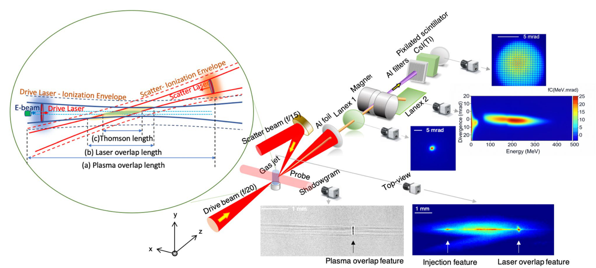
图 02-1｜同时控制两束激光和电子的时空重合。R138，原图 1，PDF 第 2 页
主图连接驱动激光、气体喷流、约 160° 反向散射激光，以及电子和 γ 两条诊断链。左圆图把 (a) 等离子体重合长度、(b) 两激光重合长度、(c) 真正电子—散射光相遇的 Thomson 长度区分开；它是几何示意，没有数值坐标，不能把最长的重合区域直接当辐射区。磁铁把电子导向 LANEX，γ 继续穿过铝滤片到 CsI(Tl)。右上 γ 斑用 5 mrad 标尺；电子谱图横轴 MeV、纵轴发散 mrad，色标 fC/(MeV·mrad)，所以同时保留谱电荷与角分布。下方阴影图和顶视等离子体图均用 1 mm 标尺，分别帮助定位重合和电离注入；它们的亮度未共用同一绝对归一化。该图说明高 γ 产额是重合积分的结果，需要独立定位、延迟与束诊断。装置布局和代表图像属于实验依据，示意图中的光路距离、脉冲轮廓不构成尺度精确的输运或强度测量。
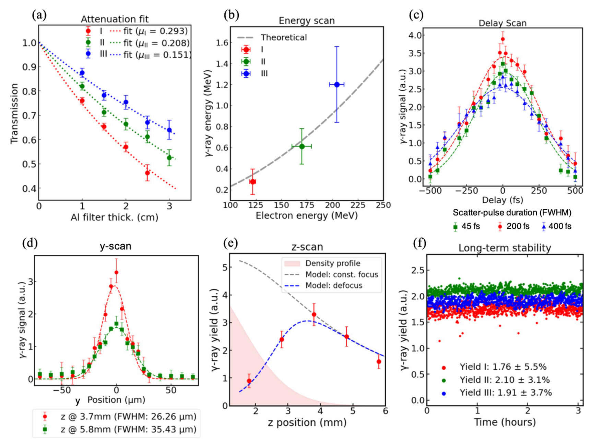
图 02-2｜用多种扫描把源端性能连成证据链。R138，原图 5，PDF 第 7 页
图 (a) 横轴铝厚度 cm，纵轴无量纲透过率；指数拟合的 \(\mu=0.293,0.208,0.151\) cm\(^{-1}\) 经 NIST 衰减系数得到有效光子能量，而非直接逐光子能谱。(b) 两轴均用 MeV，把这些反演值与电子能量及 Thomson 预测比较。(c) 横轴延迟 fs、纵轴任意单位信号，45/200/400 fs 散射脉冲中 200 fs 的峰值较高，体现斜碰走离与峰强度的折中；拟合 503–656 fs 的宽度是互相关宽度。(d) 横轴横向位置 μm，26.3/35.4 μm 是重合扫描 FWHM，需假设 Gaussian 并扣除激光宽度才得电子尺寸。(e) 横轴 \(z\) 位置 mm，含离焦的蓝模型更符合约 3.7 mm 最优点，粉区是密度轮廓。(f) 横轴小时，三个实验运行的信号 RMS 为 3.1–5.5%。除透过率外，信号轴均为任意单位。这组实验扫描支持可调、可稳定运转的源，并清楚保留有效能量、束尺寸与离焦机制的反演条件。
② 涂层等离子体镜增强 ICS。 R230 在代表 100 TW 实验位置，光子数由未涂层约 \(1.3\times10^7\) 提到约 \(7.9\times10^7\)，约六倍。反演的临界能量由约 26 增到 39 MeV，截止由约 100 增到 150 MeV。PIC 与侧视发光支持预等离子体使反射临界面弯成凹面、反射光自聚焦。光子数、临界能量与激光 \(a_i\) 都含探测响应/角分布反演，不能写成所有参数独立直接测量。与双激光相比，它降低同步复杂度，却把靶演化变成关键系统误差。
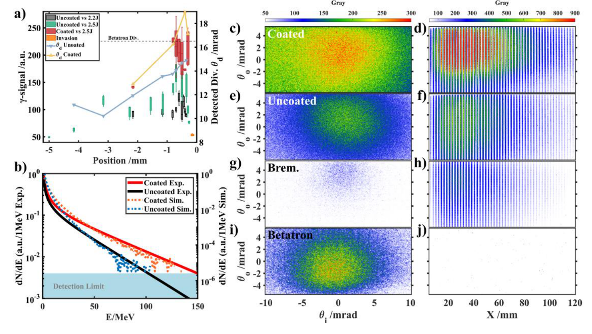
图 02-3｜先辨别 γ 的来源，再评价涂层增益。R230，原图 2，PDF 第 6 页
图 (a) 横轴镜位置 mm，箱形图用左轴任意单位辐射信号，折线用右轴 mrad 发散；黄区是镜侵入气流，不能把这里的变化全归因反射率。虚线给无镜 betatron 的 16.8 mrad 发散。(b) 横轴光子能量 MeV，纵轴对数 \(dN/dE\)；实验和模拟分别用左右任意单位/MeV 标度，实线是反演实验谱，虚线是模拟，蓝区标识检测下限，不能按高度比较绝对通量。右侧 (c,d) 是 −500 μm 涂层镜，(e,f) 是同位置裸镜，(g,h) 是 −3000 μm 裸镜的制动辐射对照，(i,j) 是无镜 betatron。中列横纵角度 mrad 给 IP 斑；右列横轴 mm 给 LYSO 中沿深度的响应，色条 Gray 表示图像灰度而非 Gy 剂量。涂层条件有更强高能响应，远镜和无镜对照帮助排除背景。此图支持 ICS 增强，具体光子数及高能截止仍依赖响应、谱形和角分布重建；原图没有独立直接测量反射场的 \(a_0\)。
③ 微库仑源与焦耳级硬 X。 R285 将 PETAL 的宽谱高电荷电子打入金属转换板，报告硬 X 总能量约 3.3 J、高能谱分量温度 \(9.3\pm1.1\) MeV；光子总能量由实测谱和模拟横向分布共同估算。电子 17 J 与光子 3.3 J 确实闭合了部分能量链，但尚未发表这一实验的光核活化/中子终点。源优势是通量，宽发散和 Maxwell 型电子谱限制准单色应用。原始来源
④ 现场工业 CT 的连续运行证据。 R287 把 40 TW 系统放入集装箱，开展七个月现场运行。72 h、0.1 Hz 电子数据给平均约 86.2 MeV、1.3% 峰能 RMS，\(>70\) MeV 电荷约 164 pC、9.8% RMS；这组统计不应与另一 3.3 Hz 剂量条件混写。钨转换源的半影 FWHM 约 38 μm，多于 60,000 次曝光的涡轮叶片 CT 在 MTF 10% 处约 43 μm 分辨。小源是贡献因素，最终 CT 分辨还含重建与采样；也不能把多发 CT 称实时单发成像。
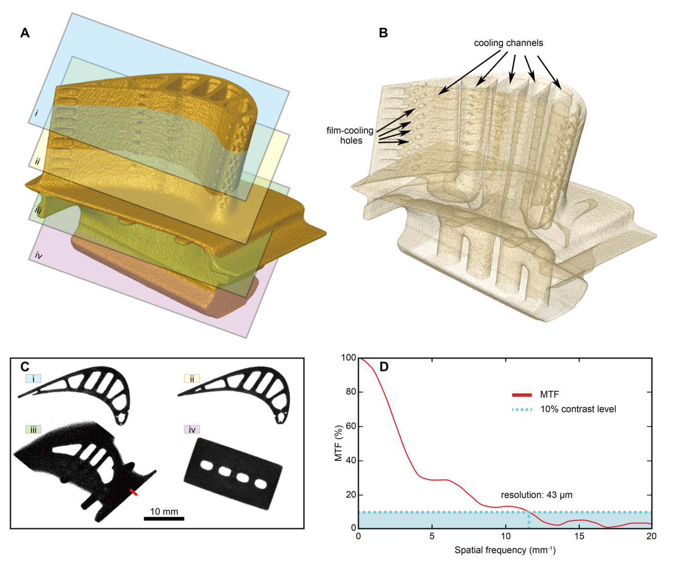
图 02-4｜源尺寸优势最终要通过 CT 的空间响应检验。R287，原图 4，PDF 第 17 页
图 (A) 是叶片外轮廓三维重建，彩色平面标出 i–iv 四个截面；(B) 剖开重建体，箭头指出内冷却通道和表面膜冷却孔。二者是重建展示，没有独立定量色标，三维渲染的光照亮暗不能当材料密度。(C) 给四处横截面，10 mm 标尺让内部通道大小可估，红短线标出用于边缘分析的位置。(D) 横轴空间频率 mm\(^{-1}\)，纵轴调制传递函数 MTF 的百分比，低频归一化到 100%；红曲线下降到青色 10% 阈值时约 11.6 lp/mm，按 \(1/(2f)\) 换算为约 43 μm 特征半周期。它是重建系统在所取边缘、所用阈值下的分辨判据，不能与源斑 38 μm FWHM 混为同一测量。该 CT 累计超过 60,000 次曝光，支持现场持续运行和工业复杂结构成像；不能据静态三维图声称单发实时 CT、任意材料相同分辨，或临床成像已经验收。
⑤ 超低发射度电子的衍射。 R314 在 2.7 MeV 得约 124 nm·rad 归一化发射度，观察硅纳米膜衍射。对应的横向相干尺度可粗略理解为 \(l_c\sim\hbar/\sigma_{p_\perp}\)：横向动量散越小，越能解析晶格峰。测量方法是永磁螺线管扫描，必须审计色差与模型；实验衍射并不自动给出飞秒泵浦—探测分辨率。官方 v1/v2 记录 显示初投在二月、修订在八月。
⑥ 首个等离子体驱动 X-FEL 的用户路线。 R364 围绕 EuPRAXIA@SPARC_LAB 预计的约 1 GeV witness、3.2–5.2 nm、<10 fs、100 Hz SASE 源规划 pilot experiments。作者选择单发等容加热—超快电子衍射与利用宽带谱的 ghost XAS，体现“用预计的真实初期源能力选问题”。这些是设计参数和策略，不是已经达成的光子验收；其中 PWFA 的外部束源链也不同于纯 LWFA FEL。对读者最有用的是避免默认所有 X 光用户都需要单色、最高亮度同一目标。
⑦ 直接优化 \(^{99}\)Mo，而非只优化电子。 R286 将 FBPIC 的完整相空间交给 openTOPAS，经 Ta 制动辐射转换到天然 Mo；贝叶斯目标直接取 \(^{100}\mathrm{Mo}(\gamma,n){}^{99}\mathrm{Mo}\) 数。10 TW、35 fs、372 mJ 的理想驱动扫描找到 \(>8\) MeV 电荷约 2.48 nC、平均 58.6 MeV、最高 249 MeV 的模拟束，每发预测 \(9.42\times10^6\) 原子，超过先优化电子再事后估产额的基线一个数量级。最优约 5 μm 下坡非常苛刻；假设 1 kHz 才得到约 10 h 到 370 MBq \(^{99m}\)Tc 的估计，作者明确这类驱动条件当前不可直接获得。未纳入全部副反应、靶热与回收，不能称完成药物生产。官方来源 初次提交 2026-08-17，与仓库发表日期一致。
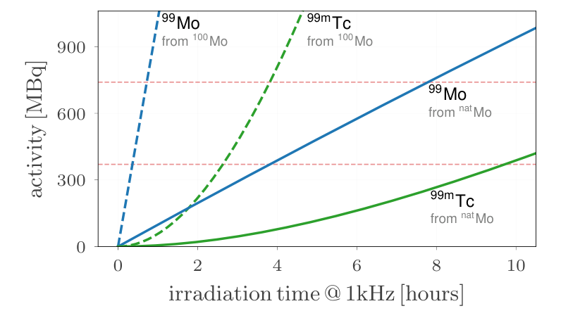
图 02-5｜从每发产额到活度，重复率是假设的一部分。R286，原图 5，PDF 第 10 页
横轴是明确假设 1 kHz 时的照射时间小时，纵轴活度 MBq，即每秒 \(10^6\) 次衰变；蓝线为母核 \(^{99}\)Mo，绿线为子核 \(^{99m}\)Tc。实线用天然 Mo，虚线用全富集 \(^{100}\)Mo，后者增加可参与 \((\gamma,n)\) 反应的靶核比例，因而达到同一活度所需时间更短。母核近似先线性积累，子核需要母核形成后再衰变供给，所以绿色曲线起初明显滞后，这正是前述耦合活化方程的物理内容。两条红水平线在图中只是 370/740 MBq 参照，不能当实测或普适医疗验收线。整图是 PIC—Monte Carlo 每发产额与衰变动力学外推，没有照射误差条，更没有化学分离与纯度实测。原文紧接着指出数百 mJ 的 kHz 驱动和 5 μm 密度下坡仍有实现难度，且优化未包含所有副反应。它帮助评价端到端优化，却不能把 10 h 外推直接写成已具备日常药物供应能力。
⑧ 光核与 D–D 快中子俘获比较。 R100 把激光源模型、Geant4 输运/屏蔽、基于核模型的俘获事件生成串联。D–D 源可提供约 2.45 MeV、\(\lesssim20\) ps 的窄谱短脉冲，适合 TOF；LWFA 光核源更宽谱，源脉冲可 \(\gtrsim50\) ps，但重复频率可能提高累计稀有事件。其优劣受反应核、源距、脉冲展宽、核态寿命和运行频率共同决定。论文的 start-to-end 是数值链；引用很高的峰值通量时必须注明是源区尺度，不能当样品或探测器接受通量。
⑨ 离子束打 catcher 的真实中子源。 R101 在 CoReLS 扫描 CH₂/CD₂ 超薄靶，结合滤片识别离子组分，把氘束打 Cu 转换靶，报告中子可到约 15 MeV、约 \(2\times10^7\,n/J\) 量级。这个源包含 breakup 等反应，不能拿理想各向同性 2.45 MeV D–D 模板替代。离子能随电荷/质量的标度是机制判断证据之一，仍需与靶透明和电子动力学联合分析。它与上一个模拟比较形成互补：前者给设计图景，后者给真实源约束。
⑩ 产氚测试的源保真度。 R210 把 TNSA 氘分布、厚靶 D–D 模型和 Monte Carlo 包层输运相连。匹配三维例中，真实谱相对于理想源使天然锂每源中子的产氚增加约 43.5%，方向性额外修正约 1%；90% \(^{6}\)Li 富集时总变化约在 ±1.5%。慢化可大幅增加总产额，又削弱或反转真实源的相对增益。结论是源谱与包层组成耦合，不是“所有真实激光中子源都提高产氚”。这是数值敏感性研究，未完成实体包层实验。
⑪ 核数据库和输运代码谁更不确定。 R248 在抑制多次反应的首碰撞基准中，用相同 ENDF7u 数据时 OpenMC 开发分支与 MCNPX 积分产额差 <0.7%；换核评价数据后差可到 11.3%。FLUKA 某些积分产额接近而能谱仍不同。这说明代码一致可能只是共同用了同一数据，不能等同于实验准确。其开发分支和 broomstick 几何也不能自动担保复杂转换靶。R154 的镍谱平均截面与数据库差异进一步提示，核数据误差应进入端到端产额预算。
⑫ 用准单色 γ 测 GDR。 R373 用 8–43 MeV LCS γ 与多重性分选，给 Ho/Tm 的多个中子道；旧 Ho 数据需讨论约 +0.35 MeV 移能、约 10% 归一化和 1n/2n 错分。R389 在上海 LCS 源测 \(^{209}\)Bi 主峰约 13.5 MeV、\(662.96\pm22.56\) mb。两篇都不是 LWFA 驱动实验，却为激光光核设计提供原始截面约束；由模型推出的逆 \(n,\gamma\) 反应或 γ 强度函数不是同一实验直接测量。这是“背景核数据”应纳入综述的原因。
⑬ ELIMED 的绝对剂量 commissioning。 R284 输运选择后质子中心能量 \(23.45\pm0.5\) MeV、FWHM 2.60 MeV，约 5.5 mm 的 50% 等剂量场，在水等效深度约 5.5–5.7 mm 有 Bragg 峰。Faraday cup、双隙电离室与 RCF 建立逐发链；上游膜改变 FC 接受度，Monte Carlo 修正后二者残差约 7%。关键贡献是剂量溯源和仪器扰动审计，不是临床深部治疗。超短束的高瞬时剂量率也不自动证明 FLASH 生物效应；后者需细胞/组织终点与剂量控制。
⑭ 激光驱动 GeV 缪子成像。 R380 让最高约 8 GeV LWFA 电子进入 40 cm Pb，厚转换与复合屏蔽筛掉大量电磁背景。20 m 与 29 m 处实验束宽 FWHM 为 4.51 m、6.35 m，GEANT4 给 4.43 m、6.27 m。成像部分在约 23 m 处用 30 发有物体/无物体测量；本次 PDF 核对的物体尺寸是 20×25×100 cm³，10×10×5 cm³ 是单块铅砖尺寸，不能当整件成像物体尺寸；原图 9 的照片图注也明确成像物体由此尺寸铅砖组成。旧笔记曾把单块与整体混淆。模拟给 20 m 探测器沉积能 86.91% 来自缪子；该比率不是逐事例粒种鉴别。论文支持缪子主导成像，绝对通量、逐粒子 GeV 动量和背景份额仍含模型推断。官方原始页，2026-09-23。
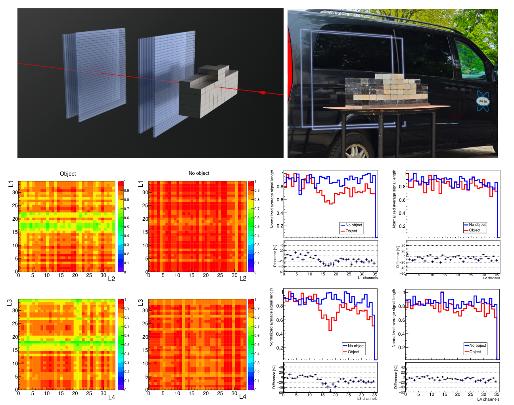
图 02-6｜透射阴影是探测信号图，粒种仍需背景分析。R380，原图 9，PDF 第 9 页
左上示意两组正交条形探测板及红色束方向，右上照片显示铅物体与车内探测器位置；图注的 10×10×5 cm³ 是构成物体的铅砖尺寸，整体尺寸须看正文。下左两行分别是前模块 L1–L2、后模块 L3–L4，有物体/无物体图并排；轴为通道编号，每条宽 2.5 cm，颜色 0–1 是归一化的每条、每发平均信号长度，由 30 发求得，不能当绝对缪子数。下右四组曲线逐层比较红色有物体与蓝色无物体信号，下方给相对差异百分比。主要阴影沿 L1/L3 所示方向形成明显凹口，L2/L4 的变化较弱，与几何投影一致。图确实支持透射成像，却未逐事例鉴别粒种或动量；缪子主导判断还依赖测得电子谱驱动的 Geant4 背景对照。原文同时承认高光子流 SiPM 非线性、温度等效应未完整纳入 ToT 校正，这限制了从归一化阴影进一步推出绝对通量与材料厚度的精度。
缪子链的核心是电子先产生 γ，随后 \(\gamma+A\to\mu^++\mu^-+A\)。缪子质量约为电子的 207 倍，制动辐射更弱，可以穿过厚物体，但产生阈值、截面和屏蔽接受度都昂贵。R237 的逐轨迹能量分辨测量与 R208 的高能粒子照相是互补诊断入口；R361 的 kJ DLA—Pb 链预测正电子/缪子数，则仍是准三维 PIC 与 GEANT4 的设计结果，不能与 R380 的实验成像合并为已实现更高产额。
磁选器 R310 把固体靶宽谱电子选择到约 0.5–5 MeV，核心电荷约 \(0.73\pm0.44\) nC，并通过脉冲磁场显著压缩束斑。它证明电子筛选/准直可行，不代表入射转换靶的总能量保持；被裁掉的电子可能恰好贡献大部分原始电荷。离子实验优化 R123、残余角啁啾 R207 和多组分束团化 R224 同样说明应用端不能只输入一条能谱而丢掉能量—角度相关性。
核端优化可结合 R119 的质子谱代理与 R151 的多目标靶优化，但代理必须在真正的角度、电荷与温度域内使用；超出训练域时应返回模型不确定性。AI 辅助 PHITS 工作流 R203 可以降低建模操作成本，却不能替代物理表、核库和几何基准。所有自动化都需要守住单位、粒子权重和总能量账。
R335 的 pitcher–catcher 研究把强束流预热和阻止本领反馈纳入，所研究参数下最优入射中心能量从约 672 keV 截面共振附近移向约 900 keV。较高能质子先减速，再在更宽有利能区贡献反应；前沿预热还可能使尾部能损降低。它是动力学/数值模型结论，不能读成 p–B 净能量增益实验。R150 的强耦合等离子体能损测量与 R173 的统一阻止模型提供检验方向：靶是活跃介质，源和靶不能总是单向耦合。
质子照相中，粒子横向冲量近似 \(\Delta\mathbf p_\perp=q\int(\mathbf E_\perp+\mathbf v\times\mathbf B)_\perp dt\)，末态偏转约 \(\Delta p_\perp/p\)。电场与磁场都能改图像；几何放大、源尺寸、原始能谱和 caustic 使反演不唯一。R189 的线圈磁场照相将实验约 40–50 T 与模拟/反演联系，仍需审计场分离与源模型。
γ 能谱与中子谱不能只依赖“探测器总亮度”。闪烁体响应标定 R247、晶体/SiPM 比较 R163、单事例中子 TOF R072 各提供不同响应维度；R336 的中子–γ 分类器需检验在真实混合场和强瞬时流强下的域迁移。R377 的新中子闪烁材料是探测器方向，不应直接升级为所有激光中子测量的性能。
R166 对光子活化锡的半衰期测量，提醒衰变核数据也决定活度反演；R340 讨论用中子制备长寿命 \(^{228}\)Th/\(^{229}\)Th 母体形成发生器供应链。这是聚变/核源设计与供应情景，模型的 reference dose-equivalents 不等于完成若干患者治疗。可扩展应用需要把富集材料、化学分离、子核纯度、批间一致性、靶寿命和运行经济性连起来；仅报告核反应率仍是不完整的上游指标。
先明确应用指标，例如某能窗样品通量、每焦耳 \(^{99}\)Mo、指定飞行时间能箱计数、某厚度缺陷的可检出率。建立源相空间时同时保存位置、方向、能量、时间、粒种与宏粒子权重；如果只能输入谱，明说已经丢失相关性。转换靶扫描要同时统计逃逸光子谱、能量沉积、源尺寸、脉冲时间和次级中子，不只求一个最高 photon/J。
然后拆开三个误差层。源误差包括激光与靶波动；输运误差包括核库、反应模型与多次散射；测量误差包括响应标定、接受度、饱和/死时间、展开先验。分别改变各层参数，再联合传播到最终指标。两代码的总数一致只检验部分实现；还要比较能谱、角谱和时间尾。R248 已显示总产额符合与能谱符合可以分离。
在数值验收中至少做守恒账：入射总能量 = 离开能量 + 材料沉积 + 适用的核反应能量账；粒子单位与源归一化保持明确。不得将“每个模拟 primary”直接当每发实际电子。对少量稀有反应，报告 Monte Carlo 方差、事件权重与实际事例数，避免 weighted yield 很大而有效统计极低。
实验验收则用独立监测归一化源，记录空靶/无物体/不碰撞的背景和相同条件重复。活化实验同时测参考箔；成像报告 MTF 与曝光；TOF 报源脉宽和背景窗；剂量报告绝对标定与复合修正。它们与应用口号的关系是逐层证实，最终用户性能须在最终样品/靶站测量。
中子非相对论速度 \(v=\sqrt{2E/m_n}\)，飞行距离 \(L\) 与时间 \(t=L/v\) 给 \(E=m_nL^2/(2t^2)\)。小误差传播为
\[ \left(\frac{\sigma_E}{E}\right)^2\simeq 4\left[\left(\frac{\sigma_L}{L}\right)^2+ \left(\frac{\sigma_t}{t}\right)^2\right] \]
这里假设距离与时间误差独立。2.45 MeV 中子速度约 \(2.17\times10^7\) m/s，1 m 飞行约 46 ns。若综合时间分辨为 1 ns，时间项单独给约 4.3% 能量分辨；若是 20 ps，则约 0.087%。但 20 ps 的源脉冲不代表系统一定达到 20 ps：转换靶产点分布、路径差、散射尾与探测器响应都要进入 \(\sigma_t\)。延长飞行距离提高分辨，却降低几何接受度 \(\sim A/(4\pi L^2)\)，因此稀有俘获与高分辨 TOF 可能选择不同源距。这是 R100 对不同中子源评价为何不能只凭一项峰值数字的直观解释。
先读 第 01 章 的电荷、发射度与能量定义，再亲算 200 MeV 电子的 ICS γ 能量和 TOF 误差；第三步用 R138/R285 比较窄谱散射源与宽谱转换源；第四步用 R286 把电子谱卷积到核截面，再解活化方程；最后用 R284/R380 判断“模型解释的终点”与“直接测量的终点”是否相同。
2026 年本库的明显走向是平均通量与连续运转变得可测、端到端目标函数进入优化、核数据误差被单独拆出、缪子等新粒种开始触及成像示范。尚未闭合的是高平均功率转换靶寿命、全链绝对标定、应用接受度内的稳定谱、低背景稀有反应统计和长期剂量控制。结构化偏振/OAM γ 源可为核光子学提供新自由度，但目前许多是理论/QED-PIC 提案；应转读 第 03 章 再评价实验可测性。
本次对 R100、R138、R285、R286、R314、R380 的本地 PDF 重跑
pdftotext -layout，核对源参数、应用终点、数据/模拟分界；明确纠正
R380 旧笔记的成像物体尺寸。PDF
提取中的字体警告没有阻止目标段落读取，但本次没有重做全篇渲染 QA；新增
R138、R230、R287、R286、R380 的 6
幅原图均另读图注和邻近正文，核对原始整页与最终裁图。联网核查
R286、R380、R285、R314 的官方摘要与版本/初始提交日期。核查清单见 来源记录。
原图页码、PDF/图像 SHA-256、裁框与核查状态保存在 逐图侧录目录，取舍见 图选说明。原图保持坐标、图例、子图与配色。
其他重点与串联论文复用既有中文笔记；R072 等尚缺成熟笔记的记录仅用作诊断主题入口，不新增未经核对的性能。没有重跑 PIC、openTOPAS、Geant4、FLUKA、OpenMC 或核反应生成器，没有临床/剂量学实验复现，也没有全世界 2026 论文穷尽检索。基础式是带条件的教学推导，涉及监管/医疗用途的论文只作科研证据讨论。本章覆盖跨越源、核数据、材料和探测的必要背景，但不是所有应用方向的工程设计手册。
本地详细入口：Mo-99 笔记、缪子成像笔记；旧笔记物体尺寸以本章 PDF 复核结果为准。
目标是让没有量子电动力学背景的读者分清：强激光、强量子效应、辐射反作用、非线性 Compton、Breit–Wheeler、真空对产生和真空双折射分别是什么。仓库 strong-field-qed-radiation 路由含 67 条记录，一些普通加速/等离子体工作被宽泛分类；本章按真实过程组织。2026 动态截止 2026-09-30，重点解释 14 组工作；实验观测、原型束测、理论振幅和 QED-PIC 预测明确分开。
经典电动力学把电子当有轨道的电荷，辐射是连续电磁波。QED 把辐射能量量子化为光子，并允许电子/正电子、光子的量子态发生跃迁。外部激光若很强，电子一次过程可能从相干场吸收很多激光光子，不能只保留“吸收一个光子”的最低阶描述；但这也不意味着每个强激光实验都进入量子反冲区。
| 过程 | 入射和末态 | 核心控制量 | 常见误读 |
|---|---|---|---|
| 非线性 Compton | \(e^-+n\gamma_L\to e^-+\gamma_h\) | \(a_0,\chi_e\)、脉冲结构 | 高能光子必然证明量子 RR |
| 辐射反作用 RR | 发光改变电子后续动力学 | 辐射损失率、\(\chi_e\)、相互作用时间 | 能谱下降唯一来自 RR |
| 非线性 Breit–Wheeler | \(\gamma_h+n\gamma_L\to e^-+e^+\) | \(\chi_\gamma,a_0\) | 等同无入射光子的真空 Schwinger 过程 |
| 线性 Breit–Wheeler | \(\gamma_1+\gamma_2\to e^-+e^+\) | 两光子质心能、相交角 | 高 Z 靶正电子都是该过程 |
| Bethe–Heitler | \(\gamma+A\to e^-+e^++A\) | 光子能、核场、材料 | 与光子–激光 BW 完全相同 |
| 真空双折射/光子散射 | 强背景改探针偏振/相位 | 场不变量、偏振、相干读出 | 提案中的信号就是已测真空效应 |
| 真空对产生 | 无真实入射粒子的场中生对 | 电场型不变量与时空场结构 | \(a_0\gg1\) 就足以实现 |
多个过程可在同一构型叠加，实验识别取决于几何、材料和背景。R293 比较 BW 与非线性 BH 的谱平均率，正是在说明“总率相近”不等于“机制相同”。高 Z 转换靶产生电子–正电子 shower，与真空中的激光碰撞实验要分别处理。
电子在角频率 \(\omega_0\) 的场中振荡，动量量级 \(p_\perp\sim eE_L/\omega_0\)。除以 \(m_ec\) 得
\[ a_0=\xi=\frac{eE_L}{m_ec\omega_0} =\frac{eE_L\lambda_0}{2\pi m_ec^2}. \]
若 \(\lambda_0\) 是通常物理波长，\(2\pi\) 必须保留。仓库部分旧笔记写成 \(eE_L\lambda_0/(m_ec^2)\)，只有把该“波长”定义为约化长度 \(c/\omega_0\) 才可能等价；本章统一使用上述标准约定。\(a_0\ll1\) 表示电子横向振荡弱，\(a_0\gtrsim1\) 时相对论驱动与多激光光子通道重要。它主要受强度和波长控制，不包含入射电子有多高能。
约化 Compton 波长为 \(\bar\lambda_C=\hbar/(m_ec)\)。若电场在该长度上做功能达到电子静能，\(eE_S\bar\lambda_C=m_ec^2\)，得到
\[ E_S=\frac{m_e^2c^3}{e\hbar}\simeq1.32\times10^{18}\ \mathrm{V/m}, \qquad B_S=E_S/c\simeq4.41\times10^9\ \mathrm T. \]
这是 Schwinger 临界尺度；不代表必须在实验室达到它才能看到强场量子效应。运动电子看到洛伦兹增强的场。用实验室场写
\[ \chi_e=\frac{\gamma}{E_S} \sqrt{(\mathbf E+\mathbf v\times\mathbf B)^2 -\frac{(\mathbf v\cdot\mathbf E)^2}{c^2}}. \]
括号里的场都是实验室系量。若已经使用电子静止系的有效横向场 \(E_*\)，应直接写 \(\chi_e=E_*/E_S\)，不能再乘一次 \(\gamma\)。对于超相对论电子与平面波正碰，电场和 \(\mathbf v\times\mathbf B\) 同向相加：
\[ \chi_e\simeq2\gamma\frac{E_L}{E_S} =2\gamma a_0\frac{\hbar\omega_0}{m_ec^2}. \]
同向追逐激光则两项近抵消。因此相同激光强度，正碰、斜碰、同向传播的量子效应可差很多。以 \(0.8\,\mu\mathrm m\)、\(\hbar\omega_0\simeq1.55\) eV 为例，假设 \(a_0=10\)、\(\gamma=1000\)，\(\chi_e\approx0.061\)；改成 16.5 GeV 电子，\(\gamma\approx3.23\times10^4\)，则约为 1.96。这是参数教学例，未声称实际 LUXE 每发都正好达到该值。R035、R385
光子没有静止系。沿单位方向 \(\mathbf n\) 运动、能量 \(\varepsilon_\gamma\) 的光子可用
\[ \chi_\gamma=\frac{\varepsilon_\gamma}{m_ec^2E_S} \sqrt{(\mathbf E+c\mathbf n\times\mathbf B)^2-(\mathbf n\cdot\mathbf E)^2}. \]
其含义来自光子的四动量与场张量，而非“把光子变换到静止系”。\(\chi_e\) 管发光反冲，\(\chi_\gamma\) 管场辅助光子成对产生。\(a_0\)、\(\chi\) 和相互作用时长一起决定可见现象，单看激光 PW 数量不足以分类。
静止瞬间的经典辐射功率为 \(P=e^2a^2/(6\pi\epsilon_0c^3)\)。以有效加速度 \(a=eE_*/m_e\)、\(E_*=\chi_eE_S\) 代入，可写成
\[ P_{\rm cl}=\frac23\alpha\frac{m_e^2c^4}{\hbar}\chi_e^2, \qquad \frac{dK}{dt}=q\mathbf v\cdot\mathbf E-P_{\rm rad}. \]
这是用量子参数重写经典功率，不等于已经使用量子发射；\(\alpha\simeq1/137\)。经典 Lorentz 方程只有场做功项；RR 必须把粒子发出的能量和动量反馈进轨道。Landau–Lifshitz 方程以受控近似处理这一自力，避免把高阶自力方程的非物理解直接当轨道。其适用条件还包括场变化足够慢等要求。
经典连续谱没有严格限制单个辐射量子能量。量子理论要求单次光子不能带走超过电子可用能量，\(\chi\) 增大时会压低经典高能尾与总功率。常写 \(P_{\rm Q}=g(\chi_e)P_{\rm cl}\)，\(g<1\) 是谱积分后的量子修正；连续使用这个功率的模型仍未包含“这一个电子究竟何时发了哪一个光子”。
随机模型根据概率发光；有的电子较早损失能量，有的迟迟不发、以更高能进入强场。若总过程率为 \(W(t)\)，没有发射的概率是 \(P_0=\exp[-\int Wdt]\)。它允许高能“幸存尾”，而连续模型会让相同轨道上的所有电子同步损能。
在小单次反冲、分布缓变条件下，离散发射可近似为能量分布的 Fokker–Planck 方程：
\[ \partial_tf=\partial_\varepsilon(Af) +\frac12\partial_\varepsilon^2(Df). \]
\(A>0\) 是平均损能率，\(D\ge0\) 是离散反冲产生的扩散。相应方差变化有 \(-2\,\mathrm{Cov}(\varepsilon,A)+\langle D\rangle\) 两类贡献。高能电子经典辐射更多，第一项可收窄谱；随机扩散又展宽谱。最终谱宽由二者竞争，初始束波动和碰撞几何也会展宽，所以“谱变宽”不是量子随机性的充分证据。硬光子一次反冲很大时，须回到完整跃迁/Monte Carlo，不能依赖小跃迁扩散近似。R169、R206
在强周期场中，电子轨道和量子态都被背景“穿衣”。理想单色线偏振场的周期平均有效质量常写 \(m_*^2=m_e^2(1+a_0^2/2)\)，圆偏振的约定不同；有限脉冲不应被视为全局恒定有效质量。背景吸收多光子产生谐波与展宽，经典非线性 Thomson 也能产生谐波；只有反冲、量子概率等量一起验证时才能谈具体量子效应。
强背景常用 Furry picture：把外场作用纳入电子的基础态（平面波时为 Volkov 态），再对量子发光过程展开。这样并非把整个相互作用都做小场强展开。局域恒交叉场近似 LCFA 则把每个短形成区看作恒定场，以局域 \(\chi\) 给发射率，方便接入 PIC。但它要求形成长度远小于场变化尺度；低 \(a_0\)、短脉冲、低能软光子、谐波/相干结构或偏振非局域性可能失效。R148、R061
两光子能量 \(E_1,E_2\)、夹角 \(\theta\) 的质心能量平方是
\[ s=2E_1E_2(1-\cos\theta). \]
这里 \(s\) 使用能量平方单位。成对要求 \(s\ge4m_e^2c^4\)；正碰给 \(E_1E_2\ge m_e^2c^4\)。因此两个约 0.511 MeV 光子正碰刚达到静质量阈值，而相同能量近同向传播很难成对。非线性 BW 让一个硬光子与强激光背景交换多光子，场动量与有效质量共同参与，不能简单用单个光学光子的能量判“阈下绝不可能”。
在强场、局域恒交叉场且 \(\chi_\gamma\ll1\) 的隧穿型渐近区，非线性 BW 率含 \(\exp[-8/(3\chi_\gamma)]\) 的抑制；有限脉冲、聚焦和大 \(\chi\) 会修改。无入射真实光子的均匀静电真空对产生则含 \(\exp[-\pi E_S/E]\)。两者都是非微扰场过程的代表，却有不同初态和物理条件，不能把两种指数混为同一实验判据。
电子发出硬光子，光子成对，新电子/正电子再发光，形成逐代 QED cascade。每一步受粒子方向、\(\chi\)、发光/成对率以及可用时间控制。外场补能持续时可以增长；仅一个高能束的有限能量被辐射掉，也可能是衰减式 shower，不能不加定义就称指数雪崩。RR 常降低后代粒子能量，使更高代被截断；靶内 BH、电磁 shower 与强场 BW 级联还应分别统计。R261、R361
单一理想平面波有 \(\mathbf E^2-c^2\mathbf B^2=0\)、\(\mathbf E\cdot\mathbf B=0\)，它不能仅靠“大 \(a_0\)”证明真空自发成对；反向场、驻波、聚焦与外磁场可改变不变量。真空极化指虚电子–正电子环影响光传播，而不要求末态出现可测的真实对。
在光子能量远低于 \(m_ec^2\)、背景远低于临界场且缓变时，Euler–Heisenberg 有效理论用少量非线性项描述。采用 \(\hbar=c=1\) 的 Heaviside–Lorentz 单位可写
\[ \mathcal L_{\rm EH}= \frac12(E^2-B^2)+ \frac{2\alpha^2}{45m_e^4} \left[(E^2-B^2)^2+7(\mathbf E\cdot\mathbf B)^2\right]. \]
这里的 \(E,B,m_e\) 是自然单位量，不能直接代 SI 数值。非线性项使不同偏振看到不同相位速度。以弱探针垂直穿过静磁场为例，回到 SI 并定义探针电场平行/垂直背景磁场，有
\[ n_\parallel-1=\frac{7\alpha}{90\pi}(B/B_S)^2,\quad n_\perp-1=\frac{4\alpha}{90\pi}(B/B_S)^2, \quad \Delta n=\frac{\alpha}{30\pi}(B/B_S)^2. \]
差相位为 \(\Delta\phi=(\omega/c)\int\Delta n\,dl\)。若输入偏振在两本征轴间成 45°，两分量原来同相，输出有相位差后形成椭圆偏振。效应随场平方增强、随有效作用长度积累，所以可走高场短路径或低场高精细度腔的长路径。激光强场中及高能 γ 探针需要更一般的偏振张量，不能直接套低能静磁场系数。R059、R329
① 高显著性 RR 与量子功率修正。 R035 的正式论文发表于 2026-01-13，用平均约 609 MeV 的 LWFA 电子与反向强激光碰撞。结果报告电子谱上的 RR >5σ，并用贝叶斯框架比较未知重合参数下的模型。量子连续与量子随机都优于经典，二者表现相当；改善主要来自量子模型较低的平均损能。正确结论是量子修正获得强支持，没有仅凭该数据唯一识别随机发射模型。Nature 原文；DOI 中的 025 不把发表年份改成 2025。
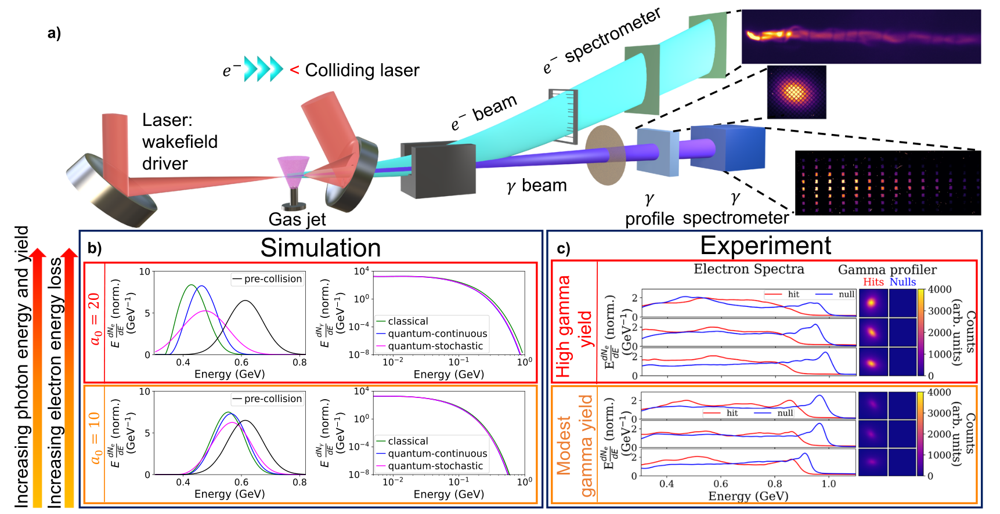
图 03-1｜同时观测电子损能和发射光子。R035，原图 1，PDF 第 3 页
图 (a) 连接 LWFA、反向碰撞激光、电子磁谱仪、γ 斑与γ谱诊断，是无比例尺的布局示意。图 (b) 明确标为模拟：上/下排分别取 \(a_0=20/10\)，横轴电子或光子能量 GeV，电子谱按积分归一化，光子谱用归一化对数纵轴；黑线是碰撞前，绿/蓝/紫为经典、量子连续、量子随机。强碰撞时经典损能更大，随机模型可能展宽，说明两个不同的判别目标。图 (c) 才是实验代表发：左侧电子谱横轴 GeV、纵轴归一化 GeV\(^{-1}\)，右侧 γ 图用任意单位计数色标；红色 hit 和蓝色 null 分别对应有/无有效碰撞，上下组按 γ 高/较低产额区分。强 γ 信号伴随电子高能部分下降，给出联合能量账的实验证据。但示例曲线没有直接告诉我们实际 \(a_0\)，γ 斑也非逐光子谱；谱展宽还可能来自重合参数变化。因此应继续看模型对两个诊断的联合拟合，不能只凭一条展宽曲线宣布随机性。
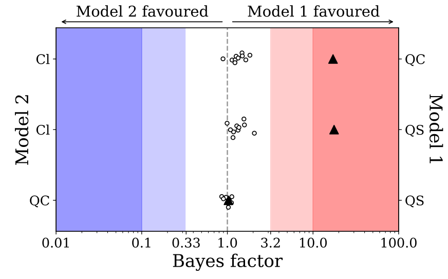
图 03-2｜“支持量子修正”与“识别随机性”是两项结论。R035，原图 5，PDF 第 6 页
横轴 Bayes factor 是无量纲的模型证据比，按对数刻度展开；灰虚线 \(B=1\) 表示相当，往右支持右侧 Model 1，往左支持左侧 Model 2。三行依次比较 QC/Cl、QS/Cl、QS/QC，分别是量子连续、量子随机、经典模型；纵向位置仅标识模型组合，不是连续物理量。空心圆是一发，黑三角是十发在参数相互独立假设下的联合证据，背景深浅按原文半对数约定表达支持程度。前两行圆点各自只稍偏右，三角约到十几，说明合并增加量子模型相对经典的证据；第三行仍聚在 1 附近，两种量子模型难以区分。它不是“十发都达同样显著性”，也不能把证据比直接读成模型正确概率。邻近正文把改善主要归因较低的平均辐射损能，并指出碰撞强度变化也能展宽谱。图因而明确支撑量子功率修正，同时保留随机性尚未被唯一识别的实验边界。
② 表面 QED 等离子体分辨随机性。 R169 用 V 形腔让表面电子获得 GeV 能量，再在腔顶强表面波中偏转与辐射。相互作用区接近 skin depth，单电子硬光子发射期望数约为一，有利保留未发射高能尾；三维 QED-PIC 预测角谱与能谱能区分随机/连续模型。它针对 R035 尚未闭合的随机性判别，而不是重复“更多总辐射”。目前是靶构型与模拟提案，背景、表面预等离子体和真实探测响应需另验。
③ 单发损能测量几何。 R206 提出 90° 碰撞，通过最终能量–角度关系在同一发分离碰撞前后谱。目标是降低不同炮次的初始束波动；代价是斜碰降低静止系场增强，角分辨要求提高。论文给解析关系与经典/量子模拟，尚未实际完成该方案。它说明“更强场”之外，诊断几何也能增加物理区分力。
④ RR 破坏有质动力守恒量。 R126 把 LL 型 RR 加到超光速相速度电磁脉冲的单粒子动力学，指出无损模型预测的 passing/高效加速分界会改变。加速器中能量下降既可能是场做负功也可能是辐射损失，需要完整轨道与能量账。这一工作提供经典 RR 的机制分析，不能单独当量子随机性证据。
⑤ 2026 年 LUXE 实施更新。 R385 计划使 Eu-XFEL 的 16.5 GeV 电子或转换 γ 与 30 fs、40 TW 后升级 350 TW 激光碰撞，目标 \(\xi=O(10),\chi=O(1)\)。电子–激光模式看 Compton/两步过程，γ–激光模式更直接看 BW。新进展是 ELBEX 选址、原型和实施安排；论文给“2029 开始安装”的计划，未来仍可能调整。最高约 \(10^5\) 正电子/pulse 等是设计模拟，没有 LUXE 正式碰撞数据。R069 的未来对撞机讨论是相关路线而非同一篇正式版。
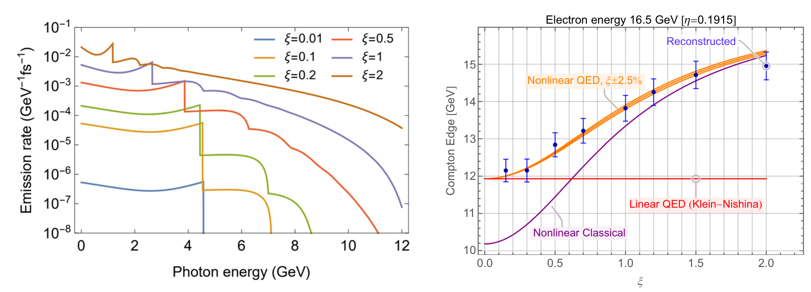
图 03-3｜强度扫描比单次高产额更能检验理论。R385，原图 5，PDF 第 5 页
左图横轴光子能量 GeV，纵轴发射率 GeV\(^{-1}\)fs\(^{-1}\) 用对数刻度；六条曲线取 \(\xi=0.01\) 到 2。强度增加使发射率、谐波贡献与边位置改变，不能用一条整体倍乘的线性谱代替。右图固定入射电子 16.5 GeV、\(\eta=0.1915\)，横轴无量纲 \(\xi\)，纵轴为出射电子谱的 Compton 边能量 GeV。红水平线是线性 Klein–Nishina，紫线是非线性经典，橙带是非线性 QED 并含 \(\xi\) 的 ±2.5% 不确定度；蓝点和误差条是预计的谱重建精度。边随 \(\xi\) 上移涉及有效质量和散射运动学，不能解释成电子从激光获得了该差值能量，也不是全谱平均损能的曲线。图显示约 \(\xi\sim0.5\) 已可产生有意义的模型分离，并提示场强标定须参与误差预算。全部曲线与“重建”点是设计预测，LUXE 当年实施与原型进展并没有把这幅图变成正式碰撞数据。
⑥ 高通量电子谱原型。 R393 结合 GadOx 屏与分段 Cherenkov，在 ARES 与 FACET-II 束测线性、位置标定与高能联合响应。屏拟合斜率不确定度约 1.3%；最低 5σ 可测电荷约 \((0.5\pm0.2)\) pC，约 \(3\times10^6\) 电子，仍高于部分设计区域需要的 \(10^4\) 灵敏度。九天照射 LED 标定信号降 >50%，SiPM 退化是主要贡献。这里是原型真实束测，不能称满足全部 LUXE 动态范围或已经测到 LUXE 非线性 Compton 谱。官方预印本，09-28。
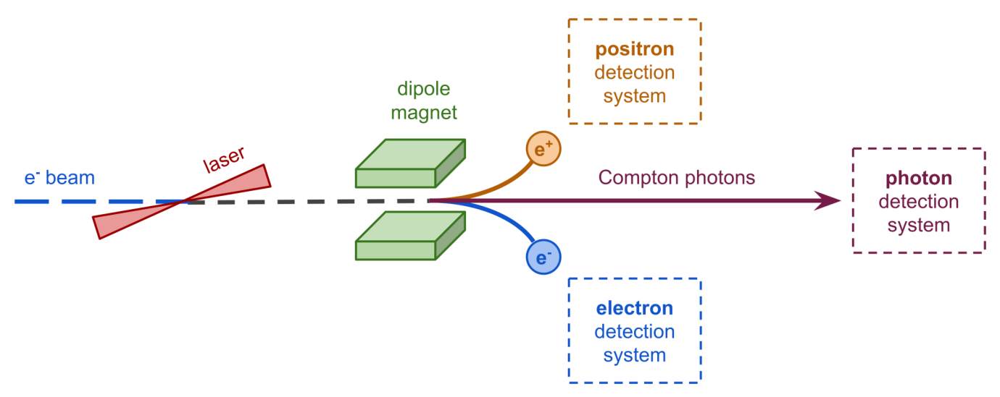
图 03-4｜电子、光子与正电子构成互补观测。R393，原图 1，PDF 第 3 页
蓝虚线电子束与红色激光在交互点相遇，绿色偶极把带负电电子和橙色正电子偏向相反方向；紫色 Compton 光子不受磁场作用继续向前。三条输出分别对应电子、光子、正电子探测系统，电子损能与光子发射相互约束，而成对通道为另一类 QED 过程提供信息。图没有连续坐标、距离单位或通量色标，弯曲轨迹和探测箱大小均为示意，不能按纸面曲率反推粒子能量。真实电子谱要将位置映射到磁刚度，再考虑接受度、屏/相机响应和背景；正电子通道则有不同计数与纯度需求。邻近正文明确引用当时的技术设计布局，安装地点细节仍在定案，并计划用互补探测器交叉标定。因此这幅图的论证作用是把理论可观测量落实到独立测量链；本论文的 ARES/FACET-II 原型束测验证其中部分电子诊断能力，并不是该全装置已经开展 LUXE 碰撞。
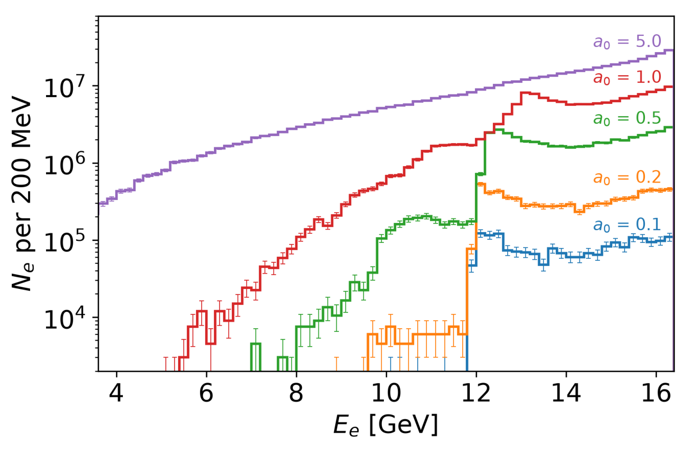
图 03-5｜理论谱决定探测器需要多少动态范围。R393，原图 2，PDF 第 4 页
横轴是出射电子能量 \(E_e\)，单位 GeV；纵轴是每次束交叉、每 200 MeV 能量箱的散射电子数，使用对数刻度。蓝、橙、绿、红、紫分别为 \(a_0=0.1,0.2,0.5,1,5\) 的 Ptarmigan 计算，误差条只表示模拟事件采样统计。低强度蓝谱约 12 GeV 的线性边较尖，强度增加后出现谐波与更多低能电子，最高强度分布更宽；被排除的 16.5 GeV 未相互作用主束不能从这张图估计。图显示同一谱上可能要覆盖 \(10^4\) 到 \(10^7\) 电子/箱，解释了屏与 Cherenkov 组合、低信号灵敏度和高信号线性的共同需求。邻近正文给设计磁铁 1.2 m、最高 1.6 T，探测器在其后 2.8 m；12 GeV 附近 200 MeV 对应约 3 mm 位移。这个位置—能量转换是设计尺度，不是原型已经满足所有分辨率和灵敏度的验收结果。原型真实线性与退化证据见第 08 章的独立图。
⑦ 可计数偏振信号。 R322 用自旋/光子偏振 MC 回算 SLAC E-144，再预测 ELI-NP 稀疏高能光子与正电子。回算历史数据增加方法可信度，未来约十个级别正电子与偏振角分布仍是预测。稀疏信号不适合只用连续沉积能读出，需要计数效率、误识别率、背景和置信区间。这里的“可计数”是对实验策略的有用约束，而不是已经取得新 ELI-NP QED 数据。
⑧ 超越局域近似的 Compton 谱。 R148 对多周期有限平面波的相位积分构造 uniform approximation，处理非线性边缘的 caustic，并以包络修正的鞍点法处理线性边缘。价值是保留谐波与干涉而避免普通渐近发散，适合快速谱评估。它不替代任意强聚焦、复杂等离子体的完整振幅；短脉冲和偏振非局域性还可参照 R061，后者在库内缺成熟笔记，本章不扩写精确量化结论。
⑨ QED 抽样如何既快又准。 R382 用满足渐近行为的 Padé 近似计算发光与 BW 率，把累积分布反演转成四次方程；目标参数区单过程率/抽样谱约百分比或更低误差。并未报告真实 PIC 加速比与级联多代误差。BH 神经网络采样 R097 也追求减内存，但它是核场过程，不能拿其截面网络代替非线性 BW。检验应同时覆盖稀有高能尾、总概率和能量守恒。
⑩ Flying focus 增加相互作用时间。 R316 把移动焦点跟随光子/后代粒子，较低峰值场也可累积更多成对概率。1 J、50 GeV 代表模拟中的第一/二/三代对占约 48%/49%/2.3%；更宽焦斑或更高能脉冲会削弱相对优势。不是 flying focus 普遍提高所有量子过程，而是此处紧聚焦、Rayleigh 长度与最优脉宽的几何限制被部分绕开。所有性能是数值预测，模式生成和同步容差仍待闭合。
⑪ 用级联后代反推驱动器。 R261 的代表例中 RR 把第二/三代光子压到不含 RR 情况的 11.75%/1.37%，说明“更多强场”可能同时增强初代发光和抑制高代存活。作者用后向光子比例、正电子谱峰与代数反推强度/脉宽，关系近随 \(a_0^2\tau\) 变化；它不是普适精确律，有限束能散、焦斑、阈值与耗尽会打破关联。应把诊断反演作为带先验模型的推断。
⑫ 线性 BW 的信号相空间工程。 R338 让双层透明靶中磁场重新定向并箍缩一部分正电子，把可检测信号送到较干净的角区。三维 QED-PIC 有轨道和场分解支撑，但稀有过程抽样、独立 LBW 基准及完整材料背景/探测器链仍不足。它从“总产额最大”转到“接受度内信号最大”，这个策略有价值；标题含 experimental detection 也不代表本文实际完成线性 BW 观测。
⑬ 阿秒偏振 γ 与高偏振正电子。 R263 的二维 spin-resolved QED-PIC 用锥壁周期抽取电子与反射场碰撞，预测约 300 as、线偏振度 0.78，谱到约 6 MeV。锥角、强度与收集角存在光子数/能量/偏振折中。R345 的纳米线正电子则靠出生自旋与横向冲量关联分离角区，二维预测高偏振可用电荷；其 \(a_0=1500\)、约 \(3.08\times10^{24}\) W/cm² 是极端条件。两者都尚缺三维、靶预史和极化探测器的实验链。
⑭ 矢量涡旋 γ 的相干条件。 R392 用椭圆激光把相反光子螺旋度与相反 OAM 模式相干配对。在选定能角/反冲条件化子空间，线偏振、\(a_0\sim1\) 可使 mode-pair concurrence 达 1。若纯态写 \(|\psi\rangle=a|R,m\rangle+b|L,-m\rangle\)，且 \(|a|^2+|b|^2=1\)，则双自由度非可分性的量度 \(C=2|ab|\) 在等幅时为 1；混态还必须知道相干非对角元，强度分布不够。这个百分比不是全 γ 束的纯度、产额或两空间粒子纠缠验证。激光椭圆率控制分支平衡，\(a_0\) 控制 OAM 带宽；本文只有振幅/概率计算，没有 γ 模式层析实验。
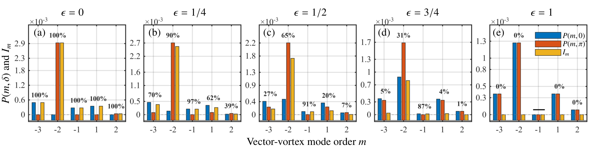
图 03-6｜模式强度和条件非可分性需要分开读取。R392，原图 3，PDF 第 4 页
图 (a–e) 依次取激光椭圆率 \(\epsilon=0,1/4,1/2,3/4,1\)；横轴整数 \(m\) 为矢量涡旋模式阶数，纵轴给无量纲积分概率和干涉幅值，均带 \(10^{-3}\) 标度，各子图上限不同。蓝/橙柱分别是径向/方位向分析器的 \(P(m,0),P(m,\pi)\)，黄柱是干涉项幅值 \(I_m\)；这些分析器概率不能直接当两支裸 helicity 的人口数。积分窗口为光子能量 0–36 MeV、角度 0–2.5 mrad，柱上百分比是对应条件模式对的 concurrence。线偏振 (a) 中各选定对接近 100%，却具有不同概率；(b,c) 某些负 \(m\) 仍保持较强相干，(d) 强通道与高百分比通道也不必重合；圆偏振 (e) 的已分辨对干涉消失。\(m=-1\) 上短横线表示人口未可靠分辨，不应填成测得 0%。图支持椭圆率控制选定子空间的振幅平衡与相干，但只是理论积分结果；全 γ 束纯度、产额、反冲条件和实际 helicity–OAM 层析不能由百分比直接替代。
偏振可来自注入源、辐射自旋翻转或筛选。电子波包控制 γ OAM R257 把入射横向 Fourier 模写入出射模式；它假定可制备的相干单电子波包，与结构化电子束的经典螺旋轨道不是同一层次。时空涡旋 γ R320 用集体电子与场结构预测约 500 as、约 64.4% 线偏振，仍是源概念；两者应以是否保存/测量相干为界分开。
自旋 BMT 净旋转 R271 研究有限平面波中异常磁矩 holonomy，强调 \(g=2\) 的抵消；它不同于强辐射自旋翻转导致的湍流极化 R117。极化保留、旋转和选择性辐射不能统称“激光产生偏振”。R372 把相对论 Alfvén 湍流的能量–俯仰角关系映射到光子各向异性，R339 讨论同步辐射冷却不稳定性；后者晚期低温 PIC 受数值碰撞污染，长期饱和来自流体延拓，应保留。
真空双折射 R059 的 self-probing γ 方案与腔式干涉仪 R329 走不同路线：前者高场短作用、用偏振与成对角谱读出；后者低场长积累、要求高精细度与极低技术噪声。两篇均为提案，模拟 Stokes 变化或 shot-noise 理想灵敏度不构成真空双折射观测。相位控制真空对产生 R250 是时空外场计算量子场论，不能与已有入射束的 BW 实验合并统计。
未来 γγ 对撞机 R311 用 5 TeV 电子与不同波长散射光平衡 Compton 产光和 BW 损失，指出允许有限成对并优化脉长可能优于完全禁止成对。其亮度来自 CAIN/设计假设，不是激光等离子体对撞机已实现性能。对撞点束场的研究 R277 与激光场不同，却分享强场辐射/反冲问题。R387 从重整化理论说明外背景场与量子场的反项处理，属于理论一致性层，不直接给实验率精度。
历史上 R006 的 2018 RR 量子迹象、R012 的多普勒增强强场方案、R016 的自组织光子碰撞器主题，为今年“高统计模型比较、可测信号工程”提供脉络；早期模板笔记不能支持本次重建精确量化历史，读者应经参考目录进入原文再比较。
先检查过程初态：是否有硬光子、核场、真实入射电子或只有外场？再画参数点：\(a_0,\chi_e,\chi_\gamma\)、场不变量和有效作用时间。这样可迅速排除把 Thomson 谐波叫强量子反冲、把高 Z 正电子叫真空 BW、把 LUXE 模拟叫已运行数据的误读。
实验中保留未碰撞对照、碰撞前谱推断、逐发重合指标与独立光子诊断。RR 判别要联合电子谱和发光量，边际化不可测的重合参数；初始束变化和光斑漂移不能当量子噪声。低计数实验还需要真实 Poisson 似然，而非高斯近似的漂亮误差条。
QED-PIC 应检查 LCFA 的适用域、时间步事件概率、稀有过程统计和多代权重，避免一时间步发生很多过程却只允许一次事件。偏振/自旋应保持统一量子化轴和 Stokes 约定，明确局部坐标与探测器坐标转换。保存“总产额”和“选择角内产额”，检验提高偏振是否只是筛掉多数粒子。
相干 OAM/矢量模式论文还需量子态层析或等价相干观测。环状强度、对称角谱与高 concurrence 理论值都不能替代非对角密度矩阵；把相干振幅平方后再相加，可能错误消除或虚构干涉。若 PIC 使用经典宏粒子，它通常不自动携带单电子横向波包相干，不能直接复现 R257/R392 的全部量子态。
偏振首先是一个可操作的测量，而非箭头示意图。设水平/垂直、两种对角线、右/左圆偏振的强度分别为 \(I_H,I_V,I_{45},I_{135},I_R,I_L\)，可定义
\[ I=I_H+I_V,\quad Q=I_H-I_V,\quad U=I_{45}-I_{135},\quad V=I_R-I_L. \]
左右旋的符号必须与传播方向和分析器约定一起记录。线偏振度为 \(\sqrt{Q^2+U^2}/I\)，总偏振度为 \(\sqrt{Q^2+U^2+V^2}/I\le1\)。一个角区高偏振，整束可能因不同区域方向相消而低偏振；也可能整束强度高而可选高偏振部分很少。这解释了为什么 R263/R345 的角选择结果必须同时报告接受度和电荷/光子损失。
对单光子的两个自由度，“偏振很纯”还不等于 spin–OAM 非可分。若测得两支相反 OAM 的强度相等，却没有相干项，混合态也会给相同强度图。因此 R392 需要相干分析器或等价的模式层析；探测 helicity、OAM 和二者关联，才可能区分相干态与非相干混合。
统计预算同样可以亲算。两类事件 \(N_+,N_-\) 的不对称 \(A=(N_+-N_-)/(N_++N_-)\)，在固定总数、二项计数且效率已修正时，\(\sigma_A\simeq\sqrt{(1-A^2)/N}\)。要以约 5σ 分辨 5% 的小不对称，仅理想统计就需约 \(N\gtrsim(5/0.05)^2=10^4\) 有效信号事件；本底、死时间、左右接受度差和逐发漂移会增加需求。每发预测十个正电子，与可靠测量百分之几偏振量子差异之间还有一段运行与标定工作。R322
对谱也应走前向探测模型：第 \(i\) 个通道期望 \(\lambda_i=\sum_jR_{ij}N_j+b_i\)，\(R_{ij}\) 是能箱到通道响应，\(b_i\) 是本底。比较理论时先把它卷积到同一个响应，再评估计数似然；直接把展开谱与理想锐边比较，会把正则化先验当物理证据。R393 的屏与 Cherenkov 互校正是在提供独立响应约束，当前束宽差异、低通量不足与辐照退化尚未闭合，不能用漂亮设计分辨率替代实际响应。
第一阶段只算 \(a_0,\gamma,\chi\)，熟悉正碰与同向的不同；第二阶段推 Larmor 功率并比较连续/随机能量账；第三阶段算线性 BW 阈值，再理解场辅助的非线性 BW；第四阶段读 R035 的模型比较与 R393 的探测器限制，练习识别实测、推断和设计；最后学习 Stokes、密度矩阵和 R392 的条件化相干。
今年本库最稳固的新证据是量子 RR 的高置信模型比较、原型高能束测和复杂辐射源的实验进展。增长较快的方向是时空整形、代数分辨、偏振/OAM 与可检测相空间；多数前沿新构型仍在理论/数值阶段。最值得追踪的下一步包括随机性与连续修正的真正实验分离、非线性 BW 的绝对率和背景闭合、真空非线性的技术噪声验证，以及偏振/OAM γ 的实际相干读出。
本次阅读对应中文笔记；对 R035、R385、R393、R392 本地 PDF 重跑 pdftotext -layout，重点核对量子 RR 模型结论、实施时间线、探测器灵敏度/退化和 concurrence 条件。R392 的 PDF 文本有叠层/阅读顺序混杂，未据此扩写脉冲周期数等细节，精确量化限制以既有笔记与可读原文段落交叉确认。新增 R035、R385、R393、R392 的 6 幅原图时，另读对应图注与邻近正文，逐幅核对原始整页和最终裁图；R392 图 3 的积分窗口、分析器定义、短横线含义均已直接读原文。联网核查 R035 的 Nature 正式日期/摘要和 R393 的官方 arXiv 记录，记录见 来源核查。
原图页码、PDF/图像 SHA-256、裁框与核查状态保存在 逐图侧录目录，取舍见 图选说明。原图保持坐标、图例、子图与配色。
其他重点与串联文章复用已有笔记，不代表本次逐篇全文精读。早期模板的通用 \(\chi\) 公式未作为基础；本章显式修复“静止系场再乘 \(\gamma\)”与物理波长定义遗漏 \(2\pi\) 的风险。没有独立重算 Volkov 振幅、Padé/四次反演、spin-resolved QED 率、Ptarmigan、CAIN 或 QED-PIC，也没有实验复现和完整 2026 库外文献穷尽检索。
本地详细入口：量子 RR 笔记、LUXE 实施笔记、高通量探测器笔记、矢量涡旋 γ 笔记。
范围与时点：以仓库截至 2026-09-30 的条目为语料。原分类包含 105 条，是自动路由的交叉标签，不是 105 篇纯 ICF 论文。本章重点解释物性、冲击、输运、燃烧和磁化实验室天体，束流产生技术参见第 01 章，强场与辐射反作用参见第 03 章，诊断通论参见第 08 章。论文编号链接到本综述统一参考目录。背景推导标为“教学推导”，不表示本次重跑了作者计算或独立复现实验。
高能量密度物理研究的是“能量挤在很小体积里以后，物质如何变化”。常用量级边界为能量密度约 \(10^{11}\,\mathrm{J/m^3}\)，相当于压力约 \(1\,\mathrm{Mbar}=10^{11}\,\mathrm{Pa}\)。这是便于划分研究区间的约定，不是所有等离子体现象都在这一点突然改变。固体被激光压缩后，密度可接近或超过普通固体，电子温度却达到 eV—keV；电子可能简并、离子可能强耦合、原子可能部分电离，所以“理想气体加完全电离”往往不够。BN 冲击测量、暖稠密铝第一性原理表和离子阻止实验，分别约束压力—密度关系、输运以及粒子沉积位置。R039 R383 R150
惯性约束聚变（ICF）把小团 DT 燃料压缩、加热，让它在来得及膨胀以前释放聚变能。“惯性”指燃料自己的质量使解体需要有限时间，并非有一道静止的力把燃料永远关住。直接驱动让激光照胶囊表面；间接驱动先照黑腔壁，转成 X 射线再烧蚀胶囊。烧蚀层向外喷出的动量把剩余壳层向内推，最终在中心形成热斑。论文所讨论的冲击点火、快点火和双锥方案，是在压缩与加热的时序和几何上作不同分工，不能用一种方案的效率直接替另一种背书。R363 R158 R274 R110
实验室天体则把“遥远、不可操控的系统”拆成可在激光平台重建的局部过程，例如磁湍流、磁重联、无碰撞冲击、磁场生成。相似的是动力学方程中的某些无量纲参数，不是实验室真的造出恒星或宇宙。磁湍流实验为间歇结构提供可控约束；题目中的宇宙学环形冲击类比需要另审相似映射，不应与真正的天体观测混为一谈。R199 R186 R054
对初学者，最有效的主线是：能量怎样进入 → 材料怎样压缩 → 热和粒子怎样输运 → 不稳定性怎样破坏对称性 → 聚变产物能否反过来维持燃烧 → 诊断是否足以区分这些机制。今年的新文章大多在修补这条链，而不是单独追逐更高峰值温度。
下文 \(n_e,n_i\) 是数密度，SI 单位为 \(\mathrm{m^{-3}}\)；文献常用 \(\mathrm{cm^{-3}}\)，换成 SI 要乘 \(10^6\)。\(\rho\) 是质量密度，\(1\,\mathrm{g/cm^3}=10^3\,\mathrm{kg/m^3}\)。温度若写 eV，实际是 \(k_BT\) 的能量，\(1\,\mathrm{eV}=1.602\times10^{-19}\,\mathrm J\)；公式用 \(T\) 还是 \(k_BT\) 必须看作者约定。面密度 \(\rho R\) 的单位为质量/面积，\(1\,\mathrm{g/cm^2}=10\,\mathrm{kg/m^2}\)。磁场 \(1\,\mathrm{MG}=100\,\mathrm T\)，不要把高斯和特斯拉直接代入同一个输运公式。
教学推导：为什么不能只问“温度多少”？ 取离子平均间距 \(a=\left[3/(4\pi n_i)\right]^{1/3}\)，邻近离子的库仑能与热能之比为
\[ \Gamma_i=\frac{Z^2e^2}{4\pi\epsilon_0 a k_BT_i}. \]
分子里的两粒子相互作用能除以分母的随机热能，得到无量纲强耦合参数。\(\Gamma_i\ll1\) 时独立二体碰撞较合理；接近或超过一时，关联和非线性屏蔽可能重要。电子另有简并判据 \(\Theta=k_BT_e/E_F\)，\(E_F=\hbar^2(3\pi^2n_e)^{2/3}/2m_e\) 是非相对论自由电子费米能。\(\Theta\lesssim1\) 表示量子统计不可忽略。暖稠密物质常处在两个近似同时不好用的交界区，正是第一性原理表与实验基准的价值所在。R383 R150
输运需要再检查 \(K_n=\lambda/L_T\)，其中 \(L_T=T/|\nabla T|\) 为温度梯度尺度。\(K_n\ll1\) 才有理由用局域 Fourier 热流 \(\mathbf q=-\kappa\nabla T\)；高能尾的自由程更长，单一平均 \(K_n\) 小也未必保证尾部局域。磁化用 \(\chi=\omega_{ce}\tau_e=eB\tau_e/m_e\)，不是只看绝对 \(B\) 大小。热电子回旋半径、能量损失长度和靶几何三者的相对大小，决定磁场能否真正改变沉积。R346 R242 R158
教学推导，平面稳态、忽略辐射能流的单一冲击。 令冲击速度为 \(D\)，冲击前静止材料密度为 \(\rho_0\)，冲击后速度为 \(u_p\)。在冲击自身的参考系，材料流入速度 \(D\)，流出速度 \(D-u_p\)。质量守恒给
\[ \rho_0D=\rho(D-u_p),\qquad \rho=\rho_0\frac{D}{D-u_p}. \]
动量通量是压力加质量流携带的动量。用前式消去质量流，得到
\[ P-P_0=\rho_0 D u_p. \]
再把单位质量的内能、压力功和动能写进能流守恒，消去 \(D,u_p\)，得到 Rankine–Hugoniot 能量关系
\[ e-e_0=\frac12(P+P_0)\left(\frac1{\rho_0}-\frac1\rho\right). \]
右侧是压力乘比体积差，单位为 \(\mathrm{J/kg}\)，因此这里 \(e\) 必须是比内能，不能误用总焦耳。Hugoniot 是同一初态经过不同强度冲击可到达的状态集合，不是完整 EOS 曲面，也不是等熵压缩轨迹。只测 \(D\) 往往不足以唯一给出 \(P,\rho,T\)；参考材料 EOS 加界面压力/速度连续性，才构成阻抗匹配反演。R039 R383
重点 1：BN 到约 9 Mbar 的实验约束。 R039 用 438 nm、约 350 ps、最高约 200 J 驱动 h-BN，平顶直径约 400 μm；条纹光学高温计测 BN 与参考层的冲击自发光轨迹，再作阻抗匹配。本次布局文本复核了这些条件及“up to 9 Mbar”口径。它是新冲击数据，不是凭计算拟合出来的高压 EOS；但最终压力密度仍通过参考层模型与测速误差传播获得。读这篇时，应先区分自发光前沿、真实冲击位置和温度诊断，再看参考材料的释放线选择。对 ICF 材料，新的约束点能改变冲击时序与层间阻抗判断，却没有证明 BN 靶已实现聚变性能。R039
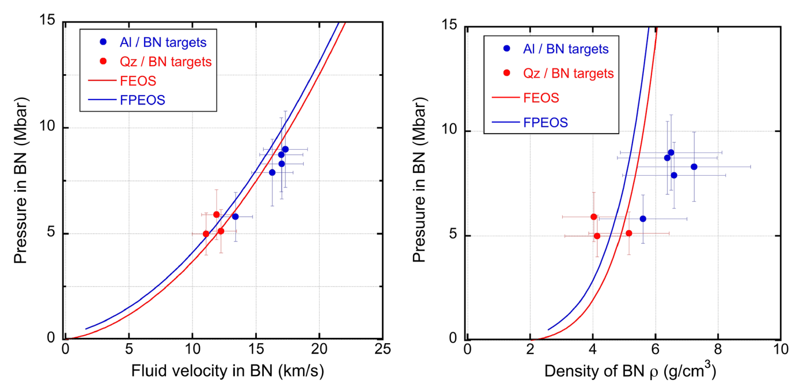
图 04-1｜BN冲击状态：速度空间比密度空间更容易判读。
原 Fig. 7（PDF 第6页）左右两图共同以压力为纵轴，单位 Mbar；左横轴是 BN 的流体粒子速度，单位 km/s，右横轴是压缩密度，单位 g/cm³。不要把左横轴当成直接追踪到的冲击前沿速度。蓝点与红点分别使用 Al、石英参考层，蓝线 FPEOS 与红线 FEOS 是 EOS 预测。左图显示压力随粒子速度上升，约9 Mbar的点已接近两模型的可分辨区域；右图中同一批点横向误差明显更大，说明从测速推密度时反演链放大了不确定性。它的论证作用是给模型增加真实冲击约束，而非只展示一条理论 Hugoniot。重要限制在图后正文：这些点使用穿层平均冲击速度，仍受冲击非定常影响；作者随后借 MULTI 重建界面瞬时速度，得到 Fig. 9 的修正点。修正后的10–18 Mbar口径带有流体模拟辅助，不能与本图约9 Mbar的原始平均速度口径混写。两幅图因此也是学习“直接诊断—阻抗匹配—模型修正”三层证据的例子。从质量守恒 \(\rho=\rho_0D/(D-u_p)\) 也能看出，当分母随误差变化时，压缩密度可比压力更敏感；因此右图的大横误差条有具体反演原因，不能凭图上离模型较远就优先否定某种EOS。 R039
重点 2：暖稠密铝为什么在高压区模型分叉。 R383 的混合确定性—随机有限温 DFT 把电子热 EOS 计算扩展到 10–1000 eV、1–18 g/cm³；输运有效域较窄，为 20–500 eV、2.7–10 g/cm³。低能强占据电子态用确定性轨道，高能弱占据部分用随机轨道，这解决高温轨道数成本，不消除泛函、赝势和有限构型误差。在 12 g/cm³、10 eV 的电子热压力比较里，TFD 高约 59%、IONEQ 低约 31%；该数字是模型对模型，不是实验误差。现有冲击数据主要位于约 9 g/cm³ 以下，恰恰尚未覆盖强分叉区，所以其高压 Hugoniot 拐点是待实验检验的预测。R383
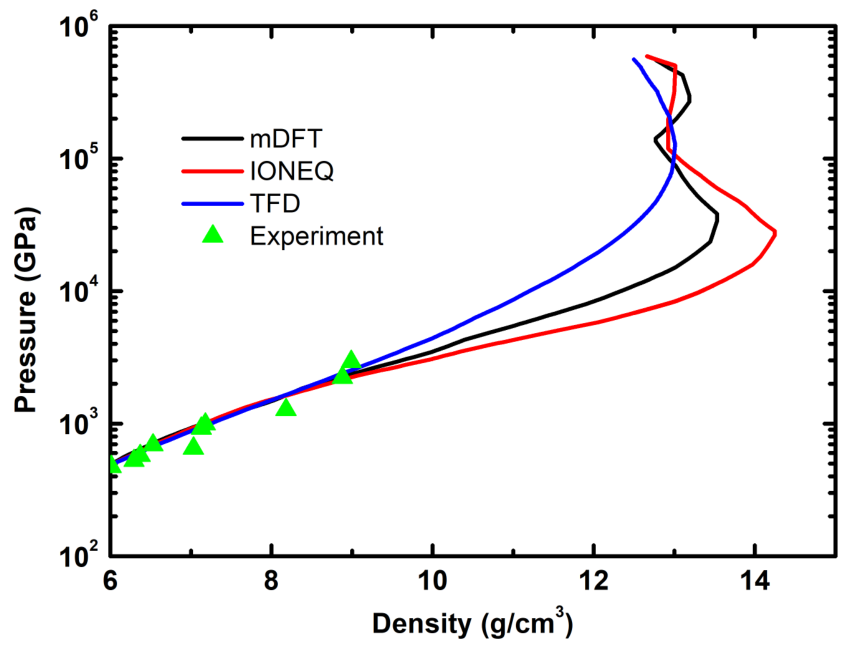
图 04-2｜铝主Hugoniot：现有实验覆盖与高压模型分叉。
原 Fig. 3（PDF 第6页）是单图：横轴质量密度 g/cm³，纵轴压力 GPa，采用对数刻度；所以纵轴相邻大刻度代表十倍变化，不能用线条垂直距离直接读绝对压差。黑色 mDFT、红色 IONEQ、蓝色 TFD 曲线来自改变电子 EOS 贡献后构建的完整表；绿色三角是已有实验数据。低压、约9 g/cm³以下三条曲线近似重合且受到数据约束；更高压下压缩率及拐点位置分开，说明壳层电离与电子热贡献的处理可以影响 Hugoniot。拐点并不意味着密度在实验中无原因地跳动，它是在给定初态下求解冲击能量关系得到的状态轨迹。本图的关键是绿色点没有覆盖最大的分叉区：低压吻合只能支持低压区，不能据此给高压预测贴上实验验证标签。前文12 g/cm³、10 eV的59%/31%差异来自另一项固定状态电子压力比较，也不能直接从这张沿 Hugoniot、温度随状态变化的图读出。它提示后续实验应主动选择模型分歧大的状态，而非继续只测大家已吻合的区域。后续若要比较曲线的可信度，还需固定初始密度、离子冷曲线与电子模型组合；从一张总EOS图直接归咎某个单独电子机制，会混淆模型装配与状态路径。 R383
重点 3：泡沫冲击中“推动层速度”不等于“冲击速度”。 R353 在 Vulcan 用长脉冲驱动 Ti 推动层进入 0.1 g/cm³ 泡沫，时间分辨 X 射线照相在 15/25/35 ns 分离推动层与前方冲击。拟合推动层轨迹得到 \(18.5\pm2\) km/s，而不是把这个数直接当泡沫冲击速度。MULTI/FLASH 与主要纵向尺度相符时使用的有效激光强度是轨迹拟合参数，不能自动解释成独立测得吸收效率。Ti 层也屏蔽了直接预热，因此均匀泡沫近似的成功不能移植到激光直接进入欠临界孔隙的算例。这里特别值得学习的是“可观测位置—合成图像—多代码”的完整链条，而不是只比较一张密度彩图。R353
PXRD 强度方法 R152 从另一侧补足状态判断：峰位告诉晶格间距，强度还受源谱、探测器、准直、热阻尼和未压缩参考层影响。即便近 1 TPa 条件下看见衍射峰，也不能仅凭灰度推相含量。把 R039 的测速、R353 的照相和 R152 的结构信息并读，可以理解为什么 HED 实验常要多种诊断共同约束 \(P,\rho,T\) 与相态。R152
教学推导，均匀等摩尔 DT 近似。 若总燃料离子密度为 \(n\)，则 \(n_D=n_T=n/2\)。反应率密度为
\[ \mathcal R=n_Dn_T\langle\sigma v\rangle=\frac{n^2}{4}\langle\sigma v\rangle. \]
\(\sigma\) 单位为面积，\(v\) 为相对速度，故 \(\langle\sigma v\rangle\) 单位为 \(\mathrm{m^3/s}\)，总率为 \(\mathrm{m^{-3}s^{-1}}\)。对真正非 Maxwell 分布，须改为 \(\int f_D(\mathbf v_D)f_T(\mathbf v_T)\sigma(v_r)v_r\,d^3v_Dd^3v_T\)，不能只换一个拟合温度。DT 每次反应释放 17.6 MeV，其中约 3.5 MeV 给 alpha、14.1 MeV 给中子。中子主要逸出，alpha 若停在燃料里可形成正反馈。R112 R236
取惯性解体时间 \(\tau_h\sim R/c_s\)，燃烧时间 \(\tau_b\sim1/(n\langle\sigma v\rangle)\)。二者之比含 \(nR\)，所以质量面密度 \(\rho R\) 同时衡量燃烧机会与带电产物的沉积路径。这解释了经验燃耗形式 \(f_b\sim \rho R/(\rho R+C)\) 的来源；常数 \(C\) 有同样面密度单位，且随温度、模型和定义改变，不能把论文中的 6 或 7 当无量纲普适常数。R274 R363
热斑的能量账本可写成
\[ \frac{dE_{hs}}{dt}=P_{\alpha,\mathrm{dep}}+P_{\mathrm{comp}} -P_{\mathrm{rad}}-P_{\mathrm{cond}}-P_{\mathrm{exp}}. \]
点火要求 alpha 自加热在相关时间内超过净损失，不是温度达到某个数就自动成功。对称性差会增大表面积/体积、增强热损失；高 Z 混合会增强辐射；密度空洞会使燃烧波断掉。R363 使用的热斑 \(\rho R\sim0.3\,\mathrm{g/cm^2}\)、4–5 keV 是其设计语境的实用阈值，不能当所有燃料和点火路径的唯一定义。R363
重点 4：非均匀燃料为何让总 \(\rho R\) 失灵。 R274 把多冲击内爆的一维密度剖面映射到二维轴对称燃烧。最大面密度约 2.27 g/cm²，但超过一半面密度集中在仅含约 10% 质量的中心区；剩余大量燃料在低密外层。热点能点起来，不等于燃烧能穿过外层。晚点火扩大高密区，却使作者计算的点火能增加约 39%，饱和产额只增约 22%，燃耗约 11%。这些数字来自规定外部加热的燃烧计算，没有包含真实快电子产生/输运，因此应理解为密度剖面设计准则。它直接纠正“面密度够高就必然高增益”的直觉。R274
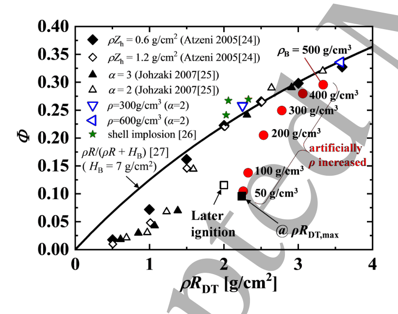
图 04-3｜同样总面密度，密度剖面决定能否烧穿燃料。
原 Fig. 6（PDF 第8页）横轴为总 DT 面密度 \(\rho R_{DT}\)，单位 g/cm²；纵轴 \(\Phi\) 是无量纲燃耗比例。黑曲线给出 \(\rho R/(\rho R+H_B)\)，图中 \(H_B=7\) g/cm²，故分子分母量纲一致。黑色方块代表作者非均匀内爆燃料在最大面密度附近或更晚点火，约2.2 g/cm²时燃耗仅约0.1，显著低于经验线。红圆把外层密度 \(\rho_B\) 人为增至50–500 g/cm³，燃耗和总面密度共同上升；它们不是只改变一个无量纲指标的实验扫描。蓝色符号及其他历史比较点对应更均匀的高密燃料，在相近面密度下更接近黑线。图的作用是揭示总积分可能被少量中心高密质量“包办”，不能保证大部分外层燃料获得足够反应与alpha加热。晚点火改善有限，也支持这一解释。所用靶剖面、外部规定加热和人工增密均为作者计算条件，尚未包括现实快电子输运或驱动器；本图不是实验燃耗图。原接受稿的灰色水印予以保留，曲线、轴和图例未重绘或改色。人工增密同时移动横轴和纵轴，因而本图更适合提出设计准则，而不是拟合一条可用于所有靶型的燃耗修正系数。 R274
重点 5：湍流反应率增强与热量增加要分开。 R112 对比 BGK、Fokker–Planck 和带核反应 PIC，说明湍流剪切既可能产生非 Maxwell 尾，也可能通过耗散优先加热离子。BGK 对尾增强较乐观，较真实碰撞算子给出更保守结果；时变加热又可使总效应超过固定温度稳态估计。这不是一条“湍流越强越好”的结论：同一湍流还可能增加混合、损失和诊断温度偏差。应把分布函数改变、温度升高和燃料逃逸分开做账，不能只用中子产额上涨推断某种尾机制。R112
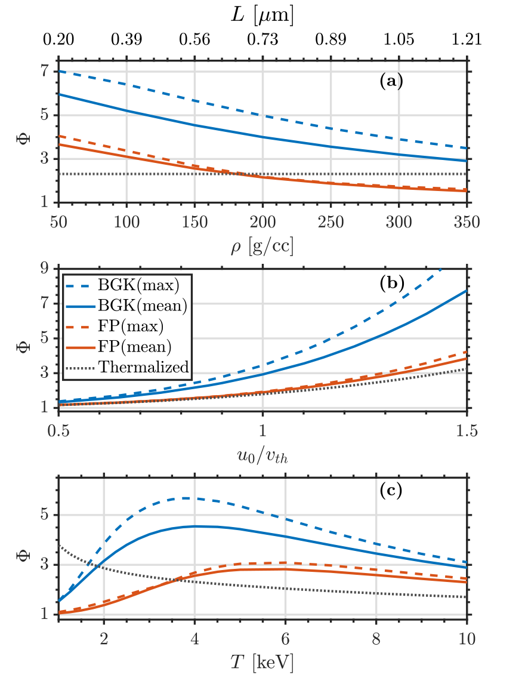
图 04-4｜碰撞算子与热化基线限制非Maxwell反应率增强。
原 Fig. 5（PDF 第7页）三图纵轴均为相对初始 Maxwell 分布的反应率增强 \(\Phi\)，无量纲；蓝色 BGK 与橙色 Fokker–Planck（FP）分别给出空间最大值（虚线）和平均值（实线），灰点线是将同一湍动能完全热化后的参照。(a)下横轴密度 g/cc，上横轴 \(L\) 为等效剪切波长 μm：不是同时独立扫描密度和长度，而是利用 \(kv_{th}/\nu_0\) 相同建立对应。密度升高使碰撞更强，尾增强减弱；FP在较高密度下可低于热化参照。(b)横轴 \(u_0/v_{th}\) 是剪切速度幅度/热速度，增强随其增大，但BGK给出更强、更陡的结果。(c)横轴离子温度 keV，增强非单调，说明尾分布与 DT 截面对相对速度的权重共同决定结果，不能只说温度越高倍数越大。三图共同证明算子选择和基准选择会改变“湍流有益”的幅度甚至判断。FP包括速度扩散和俯仰角散射，减弱BGK保留的过强各向异性；计算仍为1D2V，并在反应率积分中假定第三速度维 Maxwell，作者明确提醒真实3V散射可能进一步降低尾优势。本图是稳态作者模拟，不是中子产额直接实验，也不含燃料混合和宏观损失账本。R112
重点 6：10 MJ 商用靶的真正进展与尚未闭合部分。 R363 以 NIF 已有实验为标定基础，提出扩大燃料量的间接驱动靶，作者 HYDRA/LASNEX 模拟预测产额 265–427 MJ、增益约 26–43，以及比 NIF 更大点火裕量。大靶让同一绝对缺陷相对更小，强 alpha 自加热也提供恢复空间，但粗糙度、低模误差和混合扫描是选定扰动下的计算，尚不是靶工厂统计良率。10 Hz 驱动、墙插效率、靶注入、腔室清空与氚循环仍是系统假设。阅读时应分别记“实验锚点”“靶级模拟”“电站情景”，不要把三者合成“已经实现商业净电”。R363
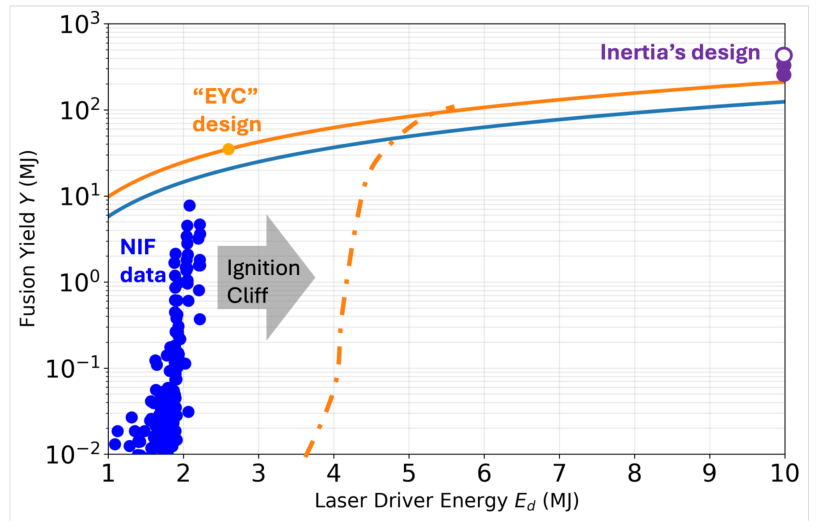
图 04-5｜从NIF实验锚点到10MJ驱动的靶级外推。
原 Fig. 1（PDF 第2页）横轴激光驱动能量 \(E_d\) 为 MJ，纵轴聚变产额 \(Y\) 也是 MJ，却为对数刻度。左侧蓝点是NIF已有实验，约2 MJ附近的产额跨多个数量级，直观显示“点火悬崖”：略改驱动与靶状态，可跨过alpha自加热阈值。蓝实线以理想1D的15 MJ/2.08 MJ设计作为标尺，并非穿过每个蓝实验点的实测拟合。橙实线从2.6 MJ的EYC设计点使用Meyer–ter–Vehn尺度律外推；橙虚线示意引入靶制造、定位等非理想因素后，所需驱动能量向右移。最右紫色点是作者10 MJ靶设计的265–427 MJ计算范围，不能把蓝色实验身份继承给紫色点。图的价值在把“提高产额”与“离阈值更远、获得裕量”分开表达；曲线外推也为随后数值扰动扫描提供背景。该图没有重复率、驱动墙插效率或腔室恢复时间坐标，因此无法证明10 Hz运行，更不能单凭 \(Y/E_d\) 判断净电收益。它混合历史实验、设计标尺、尺度模型和新靶模拟，四类证据需要分别读。单次靶增益还须区分 \(Y/E_d\) 与墙插电能的回收比例；即便右端紫点具有高激光增益，也不替代系统各项损耗和辅助用电的守恒核算。 R363
教学推导。 电磁泵浦 \((\omega_0,\mathbf k_0)\) 与散射波 \((\omega_s,\mathbf k_s)\) 耦合，差频差波数扰动满足 \(\omega_0=\omega_s+\omega_p\)、\(\mathbf k_0=\mathbf k_s+\mathbf k_p\)。当低频分支是电子等离子体波，称 SRS；是离子声波，称 SBS。泵浦的拍频驱动密度波，密度波又散射更多泵浦，形成反馈。TPD 则是一个泵浦衰变成两支等离子体波，\(\omega_0\simeq\omega_{p1}+\omega_{p2}\)，因此容易在 \(\omega_{pe}\simeq\omega_0/2\)，即四分之一临界密度附近出现。临界密度由 \(\omega_{pe}^2=n_ee^2/(m_e\epsilon_0)=\omega_0^2\) 给出，绝不等同于四分之一靶的固体密度。R115 R161
失谐、带宽、阻尼和有限长度都会截断反馈；但强度随机尖峰会使局部增长率很大，所以“更短相干时间”与“更高峰值统计”可能竞争。R062 的部分相干多模驱动设计、R232 的散斑统计和 R196 的结构化等离子体 Raman 放大，分别从驱动、随机场和传播环境处理这场竞争；三者面对的目标并不相同，抑制 ICF 预热和增强 Raman 放大效率也不是同一优化问题。R062 R232 R196
重点 7：适度带宽增强 TPD 的反例。 R161 的 Kunwu 实验结合 PIC 指向四分之一临界区 TPD 与热电子生成，强调随机时空强度尖峰可使带宽脉冲更易产生热尾。这个结论否定的是单参“带宽越大一定越好”，不是否定所有相干控制。正确设计变量至少包含带宽、相位相关、焦斑统计、密度坡度、泵浦强度和饱和过程。R202 为了产生热电子利用低相干驱动，ICF 为了避免预热则想压低同一输出；文献看似矛盾，往往只是目标函数相反。R161 R202
重点 8：光谱是热电子的代理，不是 SRS 能量计。 R360 用历史 Nova Ti K 壳层谱与新的 FAC/NLTE 双 Maxwell 模型，把小比例高能电子对电荷态和 K 壳层过程的强影响转成热尾反演。它没有新增实验 shot；固定密度与热尾温度等假设影响所求分数。谱形更符合非热模型并不能唯一确定 SRS 全角散射能量，因为尾电子还可能来自其他机制，且辐射看的是加权空间/时间积分。应与硬 X 射线、电子谱和散射光同 shot 联合约束。R360 R134
重点 9：早到高能 X 射线如何反转冲击标度。 R388 的 4 发 VISAR 冲击定时实验发现：主脉冲在首激波出壳前到达时，picket 功率增约 18% 反而对应首激波慢约 4 km/s。直接测量是轨迹和速度；前三炮约 13% M-band 份额、烧蚀层—液氘界面压力提高等，是一维辐射流体校准与解析估算。热沉积提前改变后续冲击所面对的压力边界，所以“更强早期驱动”不再等价于“更快首冲击”。它把激光脉冲、掺杂层、硬谱预热与冲击时序联成一个问题，但结论受当前 GDP/Si 靶结构限制。R388
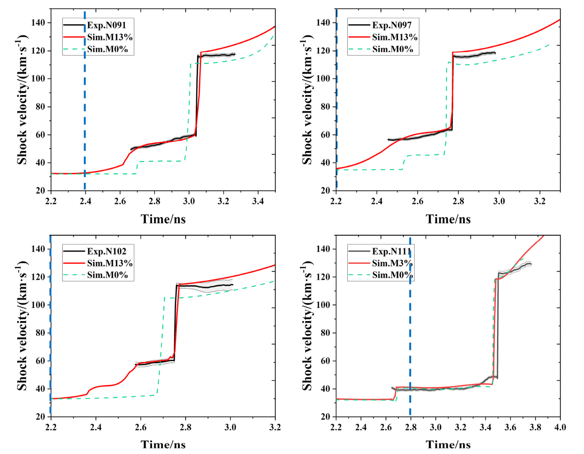
图 04-6｜主脉冲提前时，硬X射线预热改变首冲击历史。
原 Fig. 3（PDF 第5页）保留四个完整炮次面板：左上N091、右上N097、左下N102、右下N111。横轴时间 ns、纵轴冲击速度 km/s，各图时间范围不同，不能只比较同一横向位置。黑线及灰带是VISAR处理速度与不确定性，蓝竖虚线标主脉冲开始；绿虚线为M-band置零的流体模拟，红线为经校准的模拟。N091、N097、N102在主脉冲先到时，首冲击进入液氘后已持续加速，约13%M-band红线比零预热更能捕捉这一阶段；随后约110–120 km/s的跃升包含第二冲击追上首冲击。N111主脉冲延后，先出现约40 km/s平台，此面板红线标的是3%，不应误称四炮统一13%；作者正文解释此时主脉冲在出壳后开始，初始入燃料速度对M-band不敏感。红线后期仍会高估加速，表明模型并未在全时段完全闭合。本图支持预热时间窗的重要性；18%picket增幅对应慢4 km/s的反标度，还依赖论文对N097/N102的专门比较。直接实验是速度历史，M-band份额属于模型校准，既不是光谱仪直接测量，也不是通用最佳设置。多炮次误差带并未包含辐射谱、靶层厚度和EOS全部系统误差，所以红线接近黑线只能称特定假设下的一致，不能据此唯一反演硬谱成分。 R388
教学推导。 在最简单弛豫时间近似里，电子受磁场偏转与碰撞竞争，横向响应的两个分量随 \(1/(1+\chi^2)\) 和 \(\chi/(1+\chi^2)\) 变化。因此热流可分为沿场、跨场和侧向分量：
\[ \mathbf q=-\kappa_\parallel\mathbf b(\mathbf b\cdot\nabla T) -\kappa_\perp[\nabla T-\mathbf b(\mathbf b\cdot\nabla T)] -\kappa_\wedge\mathbf b\times\nabla T. \]
侧向项是 Righi–Leduc 热流；它与温度梯度正交，仍可重排局部能量并改变扰动演化。非局域时，远处高能电子参与本地热流，不能简单只把局域 \(\kappa\) 乘一个常数。电子压强电场 \(\mathbf E_p=-\nabla p_e/(en_e)\) 的旋度经 Faraday 定律给出 Biermann 磁场源；当密度和温度梯度不共线，出现 \(\nabla T_e\times\nabla n_e\) 的源项，符号须随所用温度与电荷约定一致。热流还可经 Nernst 效应搬运磁通，因此磁场既改变热流，又被热流改变。R346
重点 10：mSNB 改进的意义是多条链一起闭合。 R346 的本地全文是对应 arXiv 作者稿，不能称 APS 排版版。其多群扩散约化保留不同能量电子的碰撞长度和磁化差异，修改热流源项、含密度扰动的 Biermann 电场和非局域 Nernst 速度，并审计 Righi–Leduc 离散稳定性。与 VFP 对照和 FLASH 简化算例支持模型结构；这是作者数值基准，不是实验直接证实。峰值磁场接近不表示场分布相同，冷区预热尾、磁通位置和局部热流方向都应检查。R346
R242 又提醒“离子轻碰电子”并不必然可忽略：特定 reduced kinetic 条件中，加入离子—电子碰撞后峰值非局域离子热流在等温时约降 16%，温度比 4 时约降 63%。百分比不是所有 ICF 的统一修正。R327 的分辨率稳健 ML 热流闭合可以加速这类描述，但首先要知道训练模型包含哪些碰撞和非局域信息。R173 的统一阻止模型、R335 的 p–B 束靶产额则把同一输运问题推进到高能离子。R242 R327 R173 R335
重点 11：强耦合阻止测量为什么要同步测电荷态。 R150 把约 583 keV/u、C5+ 的准单能碳离子注入 \(T_e\approx17\) eV、\(n_e\approx4\times10^{20}\,\mathrm{cm^{-3}}\) 的致密等离子体，同时测能损与出射电荷态。阻止力常随有效电荷强烈变化，若只看到能损低，很难区分屏蔽物理与电荷演化误判；同步诊断消掉一项重要歧义。作者发现标准线性响应/二体模型偏高，带量子修正的分子动力学更接近数据。这是具体参数区的实验基准，不是所有离子、能量和材料的阻止都应按同一比例降低。R150
重点 12：黑腔吹离泡的代码差异是有价值的负结果。 R280 用 Cu 箔吹离泡进入 He 背景的 OMEGA EP 替代平台，联合阴影、干涉和质子照相。Gorgon/HYDRA 可得到大尺度形貌，却在若干对照中显著高估膨胀，文中代表性前沿位置差可达约 26–55%。降低模拟驱动能也不能完全消掉速度偏差。这并未唯一证明某个不稳定性，而是指出磁化/非局域热输运、动理学结构和驱动标定还需联合审计。单泡不是完整黑腔，不宜直接从差异推胶囊增益修正。R280
教学推导，经典不可压缩、无黏 RT 的最小模型，忽略表面张力与磁张力。 取密度 \(\rho_h>\rho_l\) 的界面，重流体被轻流体沿不稳定方向加速。界面位移为 \(\eta\propto e^{ikx+\gamma t}\)，两侧势流扰动随离界面距离按 \(e^{-k|z|}\) 衰减。法向速度连续给界面运动条件，压力连续加线性 Bernoulli 条件消去势幅，得到
\[ \gamma^2=Akg,\qquad A=\frac{\rho_h-\rho_l}{\rho_h+\rho_l}. \]
\(A\) 是 Atwood 数，无量纲；\(k\) 是波数、\(g\) 是加速度，乘积单位为 \(\mathrm{s^{-2}}\)。更小尺度通常长得更快，但真实烧蚀前沿有有限梯度厚度、质量流和输运，常用示意修正 \(\gamma\sim\sqrt{Akg/(1+kL)}-\beta kv_a\)。\(L\) 是梯度厚度，\(v_a\) 是烧蚀速度，\(\beta\) 是依模型而定的无量纲系数。这不是所有内爆阶段的精确公式，主要说明烧蚀与梯度可以压低高波数增长。进入非线性后，气泡竞争、合并、尖峰与混合不能由线性增长率单独预测。R191
重点 13：RT 磁场自相似与精密映射的互补。 R191 用质子照相追踪细胞状磁场数量和尺度，与气泡竞争/合并模型比较；R195 更强调 OMEGA EP 约 4 kJ、2.5 ns 平面靶上的 MG 级场映射及 MHD 对照。前者约束统计演化，后者约束局部场与靶破裂的联系。质子图像是路径积分 Lorentz 偏转，若有 caustic，多解反演和源非均匀会影响重建；把一张通量图直接当二维真实磁场图是不成立的。平面靶统计规律也不能直接替球形内爆的混合量背书。R191 R195
重点 14：间歇磁湍流的天体关联在哪。 R199 用散斑驱动的随机扰动，在磁化实验室等离子体中形成团簇/间歇磁结构，并用统计量与空间等离子体比较。重点不应只看“像不像”，而是增量分布、不同阶结构函数、驱动与耗散尺度能否处在可比区间。实验室碰撞性、持续时间和边界与天体仍有差别；为宇宙线输运提供平台是研究价值，不等于本文已经测出某一天体宇宙线扩散系数。R020 的 Biermann 冲击前驱、R147 的磁泡膨胀、R290/R295 的可控重联和时间演化，则补齐磁场源、流、耗散的不同环节。R199 R020 R147 R290 R295
这里的“今年动态”指 2026 年论文所显示的研究议题，不是对全世界产出、投入或成熟度作统计排名。2026 年 2 月的 BN 工作补物性数据，6—8 月出现尾分布、碰撞闭合、磁场映射与黑腔基准，9 月则密集出现商用靶设计、改进热输运、谱代理和高压铝表。其共同方向是让原本分开处理的材料、LPI、输运、磁场和燃烧形成可比较闭环。R039 R112 R242 R280 R363 R383
原子物理仍是关键短板。R233 模型中屏蔽与组态相互作用可显著改变铁 L 壳不透明度；R179 用深度学习加速恒星条件下的不透明度预测。前者改变物理输入，后者主要改变计算方式；代理再快也不会自动弥补训练原子数据的偏差。R185 的 NIF 时间分辨谱仪绝对标定与 R162 的单发相关衍射成像则说明前沿同样依赖可靠仪器响应，并非只有理论模型更新。R233 R179 R185 R162
AI 正从拟合走向反演与设计，R056 的 PDE foundation model 估参和 R122 的可微内爆设计是例子。但它们优化的是模型世界中的目标；必须在 EOS、opacity、热流、mix 和诊断响应误差下考察最优点是否稳健。R083 的辐射 SPH 和 R236 的反应 Boltzmann 是基础设施路线，不能因“预测”或“自洽”字样把作者数值结果升级成实验。R056 R122 R083 R236
历史基础也不应被新日期遮住：R014 在 2022 年的微米尺度均匀 HED 物质研究提供制靶/体积均匀性背景；R008 在 2019 年强调近固体密度 keV 离子分布用于核反应；2025 年 R020 的冲击前驱和 R028 的多信使冲击成像则连接后续磁化与诊断研究。这些条目帮助理解本库演进，不能把它们标成 2026 新成果。R014 R008 R028
| 方法 | 最直接回答 | 容易漏掉 | 读文时优先检查 |
|---|---|---|---|
| 冲击测速/阻抗匹配 | 冲击路径上的压力、密度约束 | 参考 EOS、释放线、辐射前沿 | 初态、诊断时序、误差传递 |
| 辐射流体 | 大尺度冲击、内爆、燃烧 | 非 Maxwell 尾、非局域/磁化闭合 | EOS/opacity 版本、热流、mix、网格 |
| PIC/VFP | 分布尾、波粒、碰撞与沉积 | 宏观尺度成本、缩比、噪声 | 质量比、碰撞算子、粒子数、守恒 |
| DFT/QMD | 给定温密下 EOS 与输运 | 高压实验锚点、真实历程 | 计算域、构型数、赝势、拟合外插 |
| 质子/X 射线成像 | 路径积分场与材料结构 | 唯一三维重建、绝对响应 | 谱、源尺寸、caustic、合成诊断 |
| 代理/反演 | 大扫描、条件化参数估计 | 模型偏差、不可辨识、多解 | 留出条件、后验、物理回退 |
第一条经验是把输入不确定性和输出误差分开。R383 拟合表对自己的 DFT 数据精确，不意味着实验精确；R353 轨迹拟合有效强度一致，也不意味着已测吸收；R388 校准 M-band 能解释轨迹，不意味着 M-band 被唯一诊断。这三类误读最容易在综述中累积成虚假的成熟度。R383 R353 R388
第二条是先量级，再拓扑，再统计。先看单位和能量账本，再看热沉积、磁通和密度结构的位置，最后比较多个 shot、多个缺陷或多个参数的统计分布。峰值 \(B\)、总 \(\rho R\)、单发高产额各自都可能遗漏关键结构；R346、R274、R363 展示了这三种不同限制。R346 R274 R363
推荐分四轮学习。第一轮先从本章守恒式自行算一个已知 \(D,u_p,\rho_0\) 的冲击状态，阅读 R039 与 R353，练区分直接测量和反演。第二轮读 R383、R150、R346，把强耦合、简并、非局域和磁化四个判据做成参数表。第三轮读 R161、R388、R274、R112，画出预热—压缩—尾—燃烧的因果链，标出可能相互抵消的作用。第四轮才读 R363 与 R199，检查设计外推和实验室相似各自缺少哪一段验证。每篇至少记“问题、观测/计算量、假设、最大不确定性、下一步可以否证的测试”，比抄摘要更有长期价值。
本轮原图补充（2026-10-01）逐一阅读6幅所选原图的图注及邻近正文，并查看原页与最终裁图；来源为 R039、R383、R274、R112、R363、R388。保留全部所选子图、坐标轴和图例；每幅均有原PDF/PNG SHA-256、页码、PDF点坐标裁框及检查侧录。此检查覆盖所选图，不表示全库逐图精读或独立复现；详见原图选择记录与图像来源侧录。
本次清点了原分类 105 条的标题、日期、路径与交叉标签；正文人工选取其中与 HED/ICF/实验室天体最相关的条目及少量跨类基础条目。早期 R001—R019 大量同时贴 HED 标签，其中多篇实质是加速器或强场辐射，因此未将分类数等同于 ICF 证据数。正文有超过 35 篇有意义串联，14 个重点单元，未声称逐页精读全部 105 篇。
初稿阶段用本地 PDF pdftotext -layout
重新读取并定位关键参数的条目为
R039、R150、R274、R280、R363、R383、R388；该阶段属于全文文本与局部定量口径复核；本图版另对所选6幅原图完成所选原页和裁图的像素检查，仍未审阅全部论文图片、拟合原始数据或运行作者代码。其余细节主要复用仓库既有中文笔记，本次阅读了与上述重点及
R112/R152/R158/R161/R191/R195/R199/R233/R242/R290/R295/R327/R335/R346/R353/R360
相关的笔记内容；对其未新核验的数字采用限定语或不展开数字。
2026-09-30 通过 web.open 读取成功的原始来源包括 R363 官方 arXiv 与 R383 官方 arXiv：前者 v1
首次提交为 09-17，本地笔记提到的正文日期 09-18
不是首次公开日期；后者首次提交 09-24。两者分别于仓库
09-20、09-26
入库，入库日不表示发表日。网页主要用于核对标题、摘要、日期与版本属性；具体定量解释同时依赖本地全文。核查记录保存在
来源核查表。
本库是一份选择性资料库：不是完整 ICF 年度文献系统检索，也不能由条目数量推出研究经费、成功率或产业进度。未重跑 HYDRA/LASNEX、Multi1D、DFT、PIC、VFP 或辐射响应模型；教学推导只是帮助理解方程，不能作为论文独立复现证据。
阅读目标：理解“粒子—网格”怎样代替六维分布函数，知道守恒、噪声、模型降阶和计算加速各自改变了什么，能够判断一篇模拟论文的结论是否超出了验证范围。文献时间截点为 2026-09-30。本章公式中的基础推导是教学整理，论文的作者结果用 R 编号单独标明。本库 PIC 分类含 163 条交叉挂载记录；其中很多属于加速或辐射应用，不能据此说本库有 163 篇 PIC 算法论文。
气体流体通常用密度、速度、温度描述。在局部碰撞足够快时，一个很小体积中的粒子很快变成近似 Maxwell 分布，三个量能够约束主要行为。但等离子体中的电场和磁场可以把粒子分成不同速度群：热背景、快电子、束流、被波俘获的粒子同时存在。它们甚至有相同密度和温度，却对波的增长产生完全不同的影响。这时需要分布函数，而不是只画温度地图。
令 \(f_s(\mathbf x,\mathbf p,t)d^3x\,d^3p\) 表示物种 \(s\) 在该相空间小盒中的真实粒子数；\(\mathbf x\) 单位 m，\(\mathbf p\) 单位 kg·m/s。无碰撞、经典、平均场近似下，沿粒子轨道分布不变，链式法则给出
\[ \frac{df_s}{dt}=\partial_t f_s+\dot{\mathbf x}\cdot\nabla_xf_s+\dot{\mathbf p}\cdot\nabla_pf_s=0, \]
\[ \dot{\mathbf x}=\frac{\mathbf p}{\gamma_s m_s},\qquad \dot{\mathbf p}=q_s(\mathbf E+\mathbf v\times\mathbf B),\qquad \gamma_s=\sqrt{1+\frac{p^2}{m_s^2c^2}}. \]
将两条轨道方程代回就是相对论 Vlasov 方程。这里“无碰撞”排除了显式二体碰撞算子，并没有排除自洽场作用。若需要电离、复合、辐射、核反应，应在右端加入相应物理项；不能因为用了 PIC 就假定这些过程已经包含。R357 给出了这种经典主干的透明实现，R236 则沿反应性多物种 Boltzmann 路线扩展模型。
电荷和电流来自分布的积分：
\[ \rho=\sum_sq_s\int f_s\,d^3p,\qquad \mathbf J=\sum_sq_s\int\mathbf v f_s\,d^3p. \]
在 SI 单位下它们分别是 C/m³ 和 A/m²。它们驱动 Maxwell 方程：
\[ \partial_t\mathbf B=-\nabla\times\mathbf E,\qquad \partial_t\mathbf E=c^2\nabla\times\mathbf B-\mathbf J/\epsilon_0, \]
\[ \nabla\cdot\mathbf E=\rho/\epsilon_0,\qquad \nabla\cdot\mathbf B=0. \]
这是一个闭环：粒子决定源项，源项改变场，场又推进粒子。外加激光只是初始条件、边界驱动或外场的一部分；等离子体反应必须由闭环自行产生。静电
Vlasov–Poisson 只求电势 \(\nabla^2\phi=-\rho/\epsilon_0\)，适合某些低频、非相对论问题；它不是完整电磁模型。R348 的 kobra
属于这一静电路线。回旋动理学还对快回旋角作平均，以五维导引中心分布换取磁化低频问题的成本降低；R330 不能直接作为强激光 Maxwell–PIC 的速度基线。
直接把每个方向划为 100 格，六维分布便有 \(100^6=10^{12}\) 个格点。PIC 用有限个带权宏粒子采样相空间，再把场存到三维网格。一个宏粒子代表 \(w_p\) 个真实粒子，电荷是 \(Q_p=w_pq_s\)，质量是 \(M_p=w_pm_s\)，因此电荷质量比保持 \(q_s/m_s\)。权重无量纲；权重保持轨道加速度相似，却不保证离散碰撞统计等同真实粒子。 R160、R307 正是在审计这一区别。
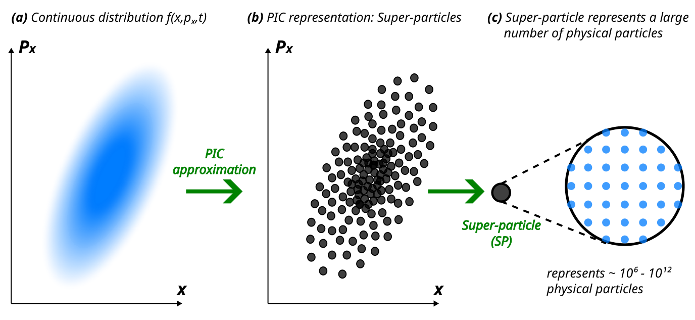
图 05-1：连续分布如何成为宏粒子。 R357，原Fig.1，PDF第6页；论文方法示意。
逐图解读。 （a）横轴是位置 \(x\)，纵轴是动量 \(p_x\)，蓝色深浅示意连续分布 \(f(x,p_x,t)\)；原图没有数值刻度或颜色标尺，不能从这团蓝色读出真实温度。（b）改用离散黑点采样同一相空间包络，黑点代表计算宏粒子，不是实验拍摄到的电子；采样稀疏会引入涨落，平滑分布和离散点图即使外观接近，也可能有不同短波噪声。（c）放大一个宏粒子所代表的物理粒子集合。图中 \(10^6\)—\(10^{12}\) 是说明计算压缩程度的示意量级，不能当本章所有算例的固定权重。邻近正文明确按同一权重放大电荷和质量，所以洛伦兹加速度中的比值保持不变。这张图支撑的是“PIC怎样表示分布”，没有测量真实微观关联，也不证明碰撞率、热平衡或稀有尾部自动正确；这些必须由后面的噪声、权重和收敛审计补齐。R357
在最简单的均匀网格上，可把电荷写成
\[ \rho_i=\frac1{V_i}\sum_p Q_p W_i(\mathbf x_p),\qquad \sum_iW_i(\mathbf x)=1. \]
\(V_i\) 是控制体体积，单位 m³；\(W_i\) 是无量纲形状权重。分片常数把粒子全部放到最近格点，线性形状把粒子分给邻点，更高阶 B-spline 将它平滑到更宽范围。归一化保证总电荷不变。平滑降低短波噪声，但也压低接近网格尺度的真实结构，因此阶数不能只按“越平滑越好”选择。
圆柱网格的体积含半径因子，例如 \(V\propto(r_{i+1/2}^2-r_{i-1/2}^2)\Delta\theta\Delta z\)。忽略该因子，会把均匀物理密度沉积成非均匀数值密度。R124 把控制体和粒子扫过体积一并纳入非均匀圆柱沉积，提醒我们 Cartesian 公式不能直接搬进柱坐标。
把当前速度乘以当前电荷密度，未必满足离散连续性。正确的电流应记录粒子在整个时间步穿过哪些单元边界，使
\[ \frac{\rho^{n+1}-\rho^n}{\Delta t}+D\cdot\mathbf J^{n+1/2}=0 \]
在离散层成立。\(D\) 表示与场布局匹配的离散散度。为什么这很重要？对离散 Ampère 方程取散度，利用 \(D\cdot C=0\)（散度作用于旋度为零）可得
\[ \frac{[D\cdot\mathbf E-\rho/\epsilon_0]^{n+1}-[D\cdot\mathbf E-\rho/\epsilon_0]^n}{\Delta t} =-\frac1{\epsilon_0}\left[D\cdot\mathbf J+\frac{\rho^{n+1}-\rho^n}{\Delta t}\right]. \]
右端为零，初始 Gauss 约束才能保持。ZigZag、轨道分段和体积守恒沉积的目的就在这里。但连续性守恒只锁定一个约束；错误插值仍可造成单粒子自力。R124 的残余自场诊断补上了这个容易漏掉的检验。
场到粒子的 gather 通常使用与沉积兼容的形状函数。以非相对论 Boris 为例，先半步电加速，得到 \(\mathbf v^- =\mathbf v^n+(q/m)\mathbf E\Delta t/2\)；再用
\[ \mathbf t=\frac{q\mathbf B\Delta t}{2m},\quad \mathbf s=\frac{2\mathbf t}{1+t^2},\quad \mathbf v'=\mathbf v^-+\mathbf v^-\times\mathbf t,\quad \mathbf v^+=\mathbf v^-+\mathbf v'\times\mathbf s \]
完成磁旋转，最后补半步电加速。\(\mathbf t\) 无量纲，其量级为半个回旋角。纯磁场不做功，旋转保持速度长度；但离散旋转角为 \(2\arctan(\Omega_c\Delta t/2)\)，不等于连续角 \(\Omega_c\Delta t\)。因此“纯磁场保能”仍可能伴随长期轨道相位漂移。R178 从三维旋转表示研究高精度 Boris 类推进器。
相对论版本用动量并处理 \(\gamma\)，强场辐射或碰撞又需额外推进。许多程序都叫 Boris，具体的居中方式、相对论修正、外场时间层仍须查看实现，不能凭名称断言完全等价。
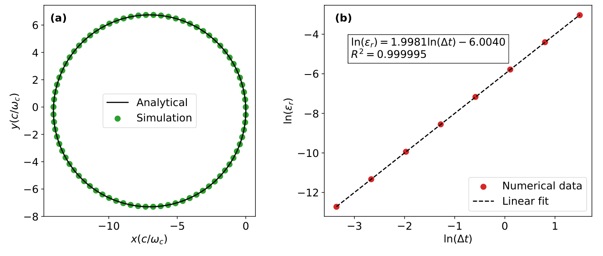
图 05-2：Boris磁旋转的轨道与二阶收敛。 R357，原Fig.3，PDF第18页；作者单粒子数值验证。
逐图解读。 （a）是均匀磁场、零电场下的单电子回旋轨道：横纵坐标按图中的 \(c/\omega_c\) 长度尺度归一化，黑线为解析解，绿点为数值解；邻近正文说明展示的是模拟1000圈后的最后一圈，曲线重合检验长期半径和轨道形状。（b）横轴为归一化步长的自然对数，纵轴为相对回旋半径误差的自然对数；红点是不同步长的计算，黑虚线为拟合，斜率约1.998说明误差近似随 \(\Delta t^2\) 缩小。这里比较的是作者相对论Boris实现的受控磁旋转基准，和前面的旋转推导共享“纯磁不做功”结构。作者还报告速度、动能和洛伦兹因子保持到双精度舍入水平，但这不等于回旋相位在任意步长下完全正确。单粒子外场中没有自洽沉积、场求解、碰撞或辐射，因而这幅图只能验证推进器的一部分，不能替代完整PIC守恒与物理模块测试。R357
Yee FDTD 用错位电、磁场和中心差分，三维矩形网格的场 CFL 条件为
\[ c\Delta t\le\left[(\Delta x)^{-2}+(\Delta y)^{-2}+(\Delta z)^{-2}\right]^{-1/2}. \]
这保证线性场更新不爆炸，不保证波传播正确。离散真空波的关系为
\[ \frac{\sin^2(\omega\Delta t/2)}{c^2\Delta t^2} =\sum_{j=x,y,z}\frac{\sin^2(k_j\Delta j/2)}{\Delta j^2}. \]
当网格波长很短，正弦不再可近似成自变量，数值相速度偏离 \(c\)。激光尾场加速又对激光群速度和去相位距离敏感，小误差传播很多波长后可变成大误差。谱求解、高阶差分、指数推进和方向分裂解决的是不同部分，必须看实际色散曲线。R095、R333 因此应和普通 Yee 基线放在同一问题下比较。
数值误差至少有四类。空间/时间离散影响相位和稳定性；有限宏粒子采样影响噪声；有限盒、边界和二维近似影响允许的模式；模型假设影响碰撞、辐射、离子化和输运。增加每格粒子数只改善第二类的一部分，不能修复漏掉的三维不稳定性。
对独立采样，密度涨落幅度常约为 \(N^{-1/2}\)，但场响应会筛选并放大某些波数。若不稳定性满足 \(A(t)=A_0e^{\Gamma t}\)，达到同一饱和幅度的时刻为 \(t_{sat}=\ln(A_{sat}/A_0)/\Gamma\)。更小噪声会推迟起始时间，而不一定改变线性增长率。R145 还显示噪声空间剖面影响相对论束流丝化前沿和饱和长度，因此不同粒子数运行不能只在同一绝对时刻比较图片。
在长时热化问题中，应比较物理时间 \(t_{phys}\) 与数值松弛时间 \(\tau_{num}\)。若 \(t_{phys}/\tau_{num}\) 并不小，标成“collisionless”的输入也可能发生显著离散碰撞。R160 使用速度自相关衰减估计这种时间尺度；R307 更进一步指出不同权重组的长期温度会分裂。总能量近似守恒仍不足以排除这种错误分配。
一个务实验证链应先做单粒子轨道，再做真空波/边界，再做冷等离子体振荡和 Landau 阻尼，再做目标问题的网格、步长、粒子数、盒宽和模态收敛。最后才把模拟映射到实验仪器输出。“场图看起来合理”是最弱的一层，R357 的分层基准能帮助建立这种阅读习惯。
本库 2016—2025 年的模拟通常服务于器件物理：多级耦合需要跨级注入和对齐，R001；束流能散补偿要控制相空间相关，R004；透明度增强离子加速要跟踪密度演化，R005；辐射反作用要把随机辐射与谱观测连接，R006。这些是应用问题的历史参照，不能据此说当时已解决全部数值误差。
尾场耗散和恢复时间又使“单发短时”转向“重复运行的慢过程”：R009、R013 提醒我们高重复率不是把单发计算复制若干次，残余加热、离子运动和下一发初态也要考虑。2026 年本库新增的方法论文明显集中于守恒结构、圆柱/谱降阶、噪声审计、GPU 工程和学习型辅助四条线。这里的“明显”是对本库选文的归纳，不能用来估计整个领域的发表占比。
R095 把圆柱几何中的高阶错位差分和指数时域推进结合，并处理近轴粒子表示与激光包络势传播。其价值是提供一种在局域 stencil 与谱精度之间选择的方案。读者应检查近轴奇异项、边界和径向网格怎样处理，再检查长期激光相位；仅引用“高阶”无法判断实际误差。现有库内笔记仍未展开完整稳定性推导，本章不填写未经核实的速度或误差百分比。
R116 将场写成方位角 Fourier 模的一族二维问题，粒子仍在三维空间推进。它针对整体近轴对称却有低阶非对称不稳定性的情况，采用 diocotron 与 Penning 放电验证。这样可以保留 rotating spoke 等结构，而不承担完整角向网格成本。关键限制是高角向波数和模式耦合可能被截断；所需模数应该用目标增长率、饱和输运与径向剖面收敛来决定。
R124 将非均匀柱网格的控制体、扫过体积和度量一致性写入沉积。它分别测试均匀密度、受控输运和单粒子残余自场。方法上的重要教训是：连续性残差小，不等于自场和电流密度误差都小。比较面中心和单元中心场布局时，要同时看约束、力误差和长期能量，不宜把不同诊断揉成一个“守恒精度”。
R131 使用非相对论广义动量、Crank–Nicolson 场更新和轨道平均离散梯度，协调 Lorenz 规范、Gauss 定律与总能量守恒。轨道平均的作用是让粒子做功与网格能量交换满足同一个离散链式法则。冷双流基准中的好守恒属于作者非线性求解容差内结果；Part I 的非相对论前提不能直接搬进相对论激光问题，隐式求解成本也要计入比较。
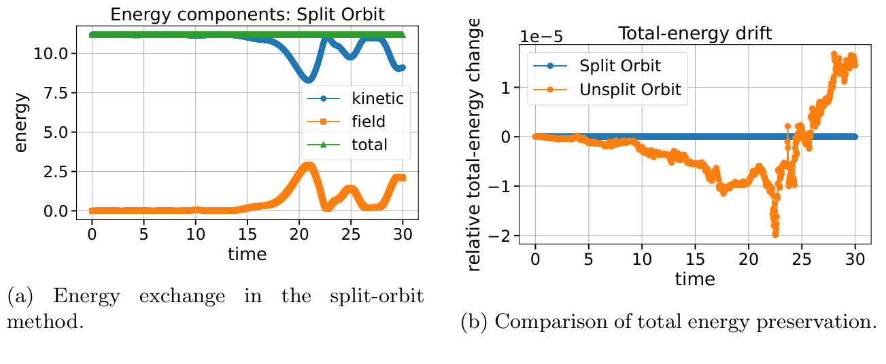
图 05-3：总能量守恒需要一致轨道积分。 R131，原Fig.2，PDF第18页；作者3D冷双流数值验证。
逐图解读。 （a）横轴为冷双流算例时间，纵轴为该算例的能量单位，原图未标秒或焦耳；蓝色动能降低时橙色场能上升，绿色总能量仍近似水平，说明“不变的总账本”允许两类能量真实交换。（b）横轴相同，纵轴是 \((\mathcal E^n-\mathcal E^0)/\mathcal E^0\)，为无量纲量，注意左上角 \(10^{-5}\) 倍率。蓝线采用跨B-spline结点分段的轨道积分，橙线不分段；后者先负漂移再正漂移，不能只检查最终值接近零就认定守恒。邻近正文说明两种方法都能保持Gauss与规范约束，差异来自粒子轨道上的链式法则是否与场能交换一致。分段方案在本算例求解容差内保持总能量，未分段方案积累约 \(10^{-5}\) 漂移。这是非相对论、周期冷双流的作者数值验证；没有独立实验或本次复跑，也没有证明任意相对论、碰撞和开放边界模块同样守恒。R131
R145 将锐利束流前沿进入冷等离子体的问题写成横向势的时空方程，比较不同初始噪声及二维 PIC。它说明纵向条纹不能只用单个时间增长率解释，前沿附近的空间传播项不可省略。对有限长度电子束，最值得借用的是“入口噪声—前沿传播—饱和位置”的分析方式；论文的冷背景、锐前沿与二维条件限制了对真实宽能散束流的外推。
R160 用速度自相关函数衰减测量一至三维数值碰撞时间，并与宏粒子动力学理论对照。它把“数值加热可能存在”转成可估算时间尺度。宏粒子越重、粒子数越少，真实粒子的弱涨落越可能被放大；形状平滑能够补偿一部分，不能保证 Vlasov 极限。对长时间尾部、温度和输运研究，先算松弛时间比追求一张漂亮相空间图更有用。
R168 扩展 BIT1 的多 GPU PIC–Monte Carlo，加入负载均衡、检查点、恢复和标准 I/O，使用 openPMD/ADIOS2 组织文件与数据流。其贡献是运行系统而非新加速机制。非均匀等离子体会让粒子集中到少数域，平均每 GPU 粒子数无法代表最慢进程；检查点写入和恢复是否完整，则决定数天计算是否可追溯。已有笔记复用到此，不将硬件规模直接转换为本地可获得吞吐。
R172 以 SympNet 学习 Vlasov–Poisson 后向流，动态演化 bulk 分布，让粒子主要采样残差。它与直接代替场求解器的 AI 不同：目标是减小 Monte Carlo 方差。若写 \(f=f_0+\delta f\)，准确的 \(f_0\) 会使 \(\delta f\) 更小，但不准确基态也会提高残差与训练成本。辛结构和周期结构是限制网络自由度的物理工具；它的静电验证尚未覆盖全电磁、碰撞和 QED。
R178 从三维旋转表示构造 hyper Boris 类积分器，主要面向非相对论动力学。对单粒子而言，提升旋转角精度可减少长期轨道误差；对自洽 PIC，场插值和时间居中仍可能成为主误差。阅读时应分别看局部阶数、长期相位、计算成本与全耦合测试。本库没有足够证据把它标成相对论强场生产代码的通用替换件。
R209 的 λPIC 将推进拆成命名阶段，允许 Python 回调操作模拟状态，同时用 C/Numba 保留关键内核。它适合快速加入诊断、碰撞或原位分析，价值在可扩展研究流程。自由回调也使责任更明确：修改粒子或场后，要重新保证时间层、连续性与诊断一致性。计划中的 GPU、隐式和核模块是未来扩展，不能因接口存在就说对应物理已验证。
R297 利用分片多项式形状和粒子占据盒的层级关系，加速稀疏网格 PIC 的沉积与插值。“精确”指对已经选定的离散核不引入多极截断，不指连续 Vlasov 解精确。二维作者测试中的收益和每格粒子数、稀疏网格实现有关。最有价值的比较是在相同离散表示上测总周期时间，同时检查稀疏表示本身对目标谱与守恒的误差。
R307 用无显式碰撞的三维电磁/静电 PIC 检验不同权重组，发现长期平衡满足 \(w_sT_{s,eq}=w_{s'}T_{s',eq}\)。例如权重比为 10，平衡温度会反向相差 10；这是假想离散平衡说明，不是每次短时运行都会达到的结果。低权重组过热、高权重组过冷，而总动能仍可近似守恒。本次 PDF 关键段落和官方摘要均核验了该机制；现实应用应比较模拟时长与松弛时间，尤其检查粒子分裂、稀有物种和反应产物。
R330 在 GTC 中把粒子耦合放到二维极向网格，用截断角向谐波解 Poisson，避免完整环向网格与部分粒子通信。作者的 ITG 模、输运和 zonal flow 对照支持目标物理量保持；它主动选择保留模式，收益含有效问题规模下降。不能把笔记本单模计时当作同粒子数全三维 A/B，也不能把粒子核近线性缩放当作整个程序理想缩放。串行 Poisson 部分已经是重要瓶颈。
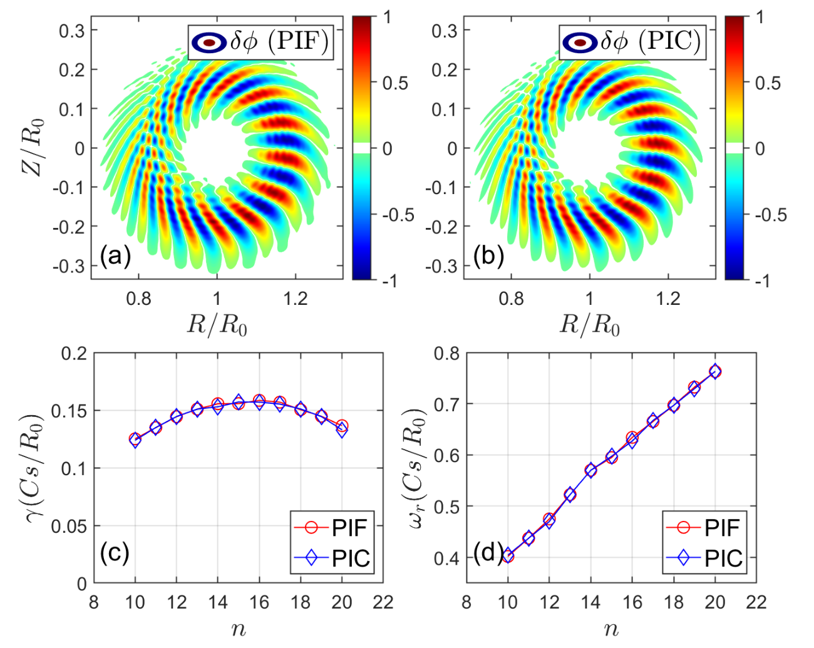
图 05-4：谱粒子压缩保留了哪些ITG物理。 R330，原Fig.5，PDF第9页；作者线性陀螺动理学数值基准。
逐图解读。 （a）、（b）分别给谱PIF与常规PIC的 \(n=10\) 离子温度梯度模。横纵轴是 \(R/R_0\)、\(Z/R_0\)，色标从−1到1，表示归一化电势扰动而非伏特；相近的外侧气球状条纹说明保留模式后没有明显改变这一线性本征结构。（c）横轴为环向模数 \(n\)，纵轴为以 \(C_s/R_0\) 归一化的增长率；两套红圆、蓝菱结果接近，增长率先升后降，邻近正文将后段降低联系到有限Larmor半径稳定。（d）同样扫描 \(n\)，纵轴为同一频率单位的实频，随模数增加而升高，两方法亦接近。四幅合起来检验空间形态、增长和传播相位，避免只凭一张彩图宣布保真。它仍是作者单模线性GK基准，不能单独证明非线性热流、所有环向模式和快粒子物理。邻近正文还说明PIF有效问题规模更小，因此该一致性支持有目的的压缩，不构成同规模全三维运行成本的直接比较。R330
R333 在 \(c\Delta t=\Delta x\) 下，使组合输运变量每步精确沿轴向移一格，形成准圆柱方向分裂求解器。作者同用 80 核时报告 QDS 约 10 min、柱 Yee 约 20 min、全三维约 63.5 h；大幅收益主要来自几何和网格压缩，QDS 相对柱 Yee 是约两倍。本次 PDF 关键段落与官方来源一致。它消除的是轴向数值色散，径向和角向误差仍在；轴子算例是相位匹配数值测试，尚不能视为探测实验。
R348 的 kobra 用有限体积和相空间 AMR
直接推进分布，测试 Landau、双流、DGH
和一维鞘层。它省去宏粒子采样噪声，却引入通量离散扩散与高维网格成本。自适应网格追踪局域细结构，是降低内存的方法，粗化容差又会影响饱和与能量。本库笔记已标出壁电势正文与图示符号不一致；因此本章不把该数值作为可靠标定。等离子体壁面是开发目标，真实碰撞、溅射和二次发射仍未完成。
R357 将 Yee、相对论 Boris、CIC 和 ZigZag 组合成模块清楚的框架，逐项测试轨道、波导、冷等离子体及短距离尾场。它展示了可检查的数值链，适合教学学习。其 LWFA 示例横向一个方向只有两个网格，实质是准二维；未给出俘获束的能谱和发射度完整验证。源码“将公开”的声明也不等于本次可下载构建。把代码说明、作者基准、公开源码和独立复现分成四层，才能读对它的贡献。
守恒线还包括相对论显式能量方案 R099、准中性几何离散 R146、辛空间电荷求解 R164、结构保持 Hall–MHD R212。这些都在保存特定模型的结构，结构的对象不同；不能把电磁 PIC 的能量守恒与 MHD 的约束保持直接排成统一优劣榜。
降阶与表示线可继续读 Hermite–Legendre 相空间谱方法 R127、X 点回旋坐标 R106、环向谱求解 R157、超相对论束流准静态模型 R241、混合动理学变分模型 R255。每一次减少维数都需要指出消掉了什么时间尺度、角向模式或粒子自由度，而不能只说“更快”。
学习型场求解的数值验证还可读 R139：源项潜表示进入粒子—场闭环后，训练时间内的单步精度不能自动延续到更长演化。下面直接比较其双流基准的场能和粒子动能，从“求解一张场图”转向“保持动力学轨迹”。
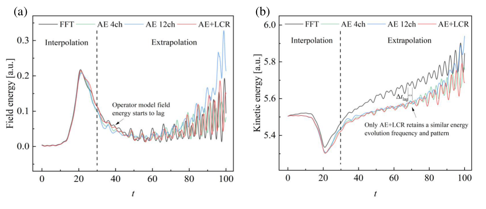
图 05-5：神经场求解的误差沿时间反馈。 R139，原Fig.8，PDF第16页；作者神经求解器闭环数值验证。
逐图解读。 两幅横轴均为论文的归一化时间 \(t\)，纵轴采用任意单位a.u.，不能直接换成实验焦耳。（a）是电场能量，（b）是粒子动能；灰黑线为FFT场求解参考，浅绿、浅蓝、红线分别对应AE的4通道、12通道及AE+LCR潜表示，其他场求解结构保持相同。约 \(t=30\) 的竖虚线划分训练演化范围与其后的时间外推。早期不稳定增长峰相近，但外推段场能振荡逐渐错相、晚期振幅也分离；右图更显示三种代理的动能均偏离参考的长期上升轨迹。作者指出AE+LCR保留了较相似的振荡频率与形态，这不能被改写成它完全复现FFT能量。这幅图的作用是把单步范数误差升级为“场误差→粒子轨道→下一步源项”的滚动检验。它属于二维静电双流闭环模拟中的消融比较，训练和标签均来自指定数值模型，尚不能验证真实装置或全电磁PIC的长期可靠性。R139
物理验证线可由混合 PIC–流体中子产额 R078 连接 FRC 的混合 PIC 验证 R273，再到全粒子雪崩源实现 R243 和 Hall 推力器近壁输运 R370。前者需要反应与仪器链，后者需要壁面、三维不稳定性和材料边界；应用范围由验证问题决定。学习型时间跳跃 R369 则是漂移扩散流体加速，本章将其放在多尺度外围，详细机制见 AI 章，避免因库内分类而误称 PIC 内核成果。
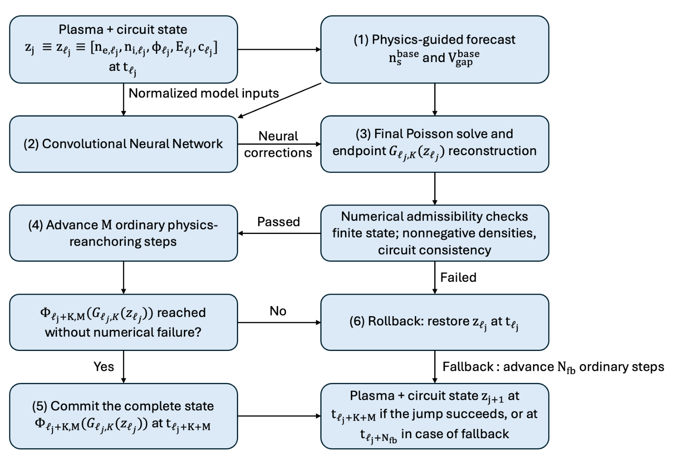
图 05-6：时间跳跃仍受物理重建与回滚约束。 R369，原Fig.1，PDF第4页；论文算法示意。
逐图解读。 这是流程图，没有横纵坐标或性能色标。左上状态包含电子/离子密度、电势、电场和电路量；这些原始量有不同单位，进入CNN前先归一化。箭头（1）用便宜物理预测构造跨 \(K\) 个普通步的候选，（2）由网络修正，（3）重新解Poisson并恢复终点电路状态，所以电场并非任由网络独立输出。右侧检查有限值、非负密度和电路一致性；通过后，（4）仍须走 \(M\) 个真实普通重锚步，无数值失败才执行（5）提交。任何检查或重锚失败都经（6）回滚到原状态，再由普通求解器推进。其物理意义是学习器提议捷径，约束重建和传统求解器决定是否接受。图示包含回退机制，却不是拒绝率、误差上界或加速比数据；作者所展示测试的提议均获接受。尤其要记住底层是氮气漂移—扩散—Poisson/电路模型，这幅图解释多尺度时间加速的接口，不能作为PIC内核已经提速的证据。R369
| 路线 | 主要优势 | 代价与风险 | 应优先验证的量 |
|---|---|---|---|
| 显式电磁 PIC | 适合非平衡分布与快电磁过程 | 步长小、噪声、色散与宏粒子碰撞 | Gauss 残差、相位、谱、权重热化 |
| 隐式/能量守恒 PIC | 长时能量交换更可控 | 非线性求解成本、物理尺度仍须解析 | 总能量、求解容差、增长率和轨道 |
| 准圆柱/模态 PIC | 近轴对称问题成本小 | 被截断角向模式和三维破缺 | 随模数变化的输运、束质与谱 |
| Eulerian Vlasov | 无宏粒子采样噪声 | 高维内存、数值扩散、边界细结构 | 分布函数细化、质量能量与相混合 |
| 回旋动理学 | 保留磁化低频湍流 | 快回旋与部分电磁物理已平均 | 目标模、输运、保留谐波与有效尺度 |
| 学习型辅助 | 减少扫描、闭合或求解成本 | 训练域、长期漂移、标签偏差 | 闭环观测量、OOD、回退和总成本 |
首先写“问题需要什么精度”。若目标是截止能量，关心尾部统计与标定；若目标是发射度，要保留横向相空间、接受度和传播链；若目标是热输运，要检查数值碰撞时间；若目标是两色相位耦合，传播色散往往比总能量误差更致命。一个万能的网格/粒子参数表无法同时回答这些问题。
然后建立误差预算。将网格、时间、粒子、盒宽、角模、模型和诊断映射分别变化，先做单因素检查，再针对显著耦合做联合加密。记录完整输入、代码版本、随机种子、权重分布、形状阶数、归一化、输出频率和硬件。跨代码比较应保持物理输入一致，允许不同代码为同一误差阈值使用不同数值参数；默认参数之间的速度比较通常没有意义。
性能应记录初始化、计算、通信、诊断、检查点和恢复，分清每步吞吐、整条轨迹墙钟和 GPU-hour。令串行比例为 \(f\)，理想 Amdahl 加速 \(S(P)=1/[f+(1-f)/P]\)；即便粒子核随 GPU 数理想缩放，场求解和全局规约也会让总程序饱和。R168、R330 是理解这一区别的两种例子。
阅读与练习可以分三阶段。先手算等离子体频率 \(\omega_p=\sqrt{ne^2/(m_e\epsilon_0)}\)、Debye 长度 \(\lambda_D=\sqrt{\epsilon_0 k_BT/(ne^2)}\) 和回旋频率 \(\Omega_c=|q|B/m\)，理解时间/空间尺度。再做纯磁轨道与一维冷振荡，解释每个残差。最后选择一个真实目标，如尾场束质或鞘层热流，按该目标建立收敛表与合成诊断。这样的学习路线比直接复制复杂输入更容易发现错误来源。
取教学条件 \(n_e=10^{18}\,\mathrm{cm^{-3}}=10^{24}\,\mathrm{m^{-3}}\)、电子温度 \(k_BT_e=100\,\mathrm{eV}\)，则 \(\omega_p\simeq5.64\times10^{13}\,\mathrm{s^{-1}}\)，周期约 111 fs，\(\lambda_D\simeq74\) nm，\(\lambda_p=2\pi c/\omega_p\simeq33.4\,\mu\mathrm m\)。这些是 SI 公式的代入例子，不是某篇论文的输入参数。一个 800 nm 激光若每波长取 20 格，轴向间距为 40 nm；三向均为该间距时，场 CFL 上限约 0.077 fs。模拟几十皮秒便需要数十万步，成本为什么高就变得直观了。
但“分辨 Debye 长度”不是所有 PIC 方案统一硬门槛。隐式、能量守恒、冷流、准中性和回旋动理学对网格的要求不同；应检查该离散系统的稳定性及目标物理误差。把热电子温度、背景密度和高能束流混成同一个 Debye 尺度也不合理。开始参数扫描前，应列出各组分的密度、温度、漂移、权重和对应尺度，再指出哪个组分控制步长、哪个结构控制网格。
对实际硬件，可以先用代表性小盒测每步粒子推进、沉积与场求解，再按真实粒子聚集和通信结构外推。估算不能只乘网格数：输出频率改变 I/O 成本，移动窗口改变活动体积，电离和对产生改变粒子总数，负载均衡改变最慢进程。把这些假设连同预计 wall time 写入算例说明，后续才能解释实测与预估为什么不同。
本次原图增补的范围：
本章新增6幅论文原图区，来自R131、R139、R330、R357、R369五篇。2026-10-01重新查看相应PDF图注、邻近方法/结果及源页面，并逐幅检查最终裁图；这是指定图区域的视觉与说明核验，未升级为这五篇全部图表的逐页精读。逐图来源、PDF页码、裁图坐标和哈希见data/figure-assets/的ch05侧录，选择与未用项见原图选择方法。
阅读目标：能把 AI 论文放进具体物理链路，判断它究竟学了什么、训练标签是否可靠、泛化是否真正独立、部署误差如何反馈。截止 2026-09-30，本库 AI 分类有 64 条交叉挂载记录。章节先讲基础，再讲 2026 年代表工作；数字是作者结果或库内笔记复用，不是本次重新训练所得。
“AI for plasma”不是一种统一算法。第一类是预测：给定激光、靶或磁构型，预测电荷、热流或谱。第二类是闭合：把低阶流体方程缺少的高阶动理学作用补上。第三类是反演：从相机、散射谱和探针数据恢复不可直接测量的状态。第四类是优化：选择下一组参数，减少昂贵模拟或实验次数。第五类是控制：根据实时状态和约束决定下一步执行器动作。这五类的验收量不同，不能用同一个回归 \(R^2\) 分数概括。
例如质子谱代理 R119 位于仿真之后；热流闭合 R327 位于时间求解器内部；EFISH 反演 R272 位于仪器之后；双脉冲贝叶斯优化 R133 位于高代价 PIC 调用之外；MAST-U 实时虚拟电路 R318 则进入真实线圈控制。越靠近闭环内部，一个小误差越可能改变以后输入的分布。
这个分类也解释了为什么“神经网络很快”不是完整结论。若训练数据来自一年计算，且使用模型只查十次，生成标签和训练可能得不偿失；若同一代理支撑十万次设计查询，成本就可能摊薄。若网络输出必须经过高保真求解器修正，实际收益又取决于修正迭代和回退比例。
令输入 \(x\) 是控制或状态，标签 \(y\) 是实验/高保真模拟输出，网络 \(F_\theta\) 的参数为 \(\theta\)。最简单的平方损失为
\[ L_{data}=\frac1N\sum_{i=1}^N\left\|F_\theta(x_i)-y_i\right\|^2. \]
但电场单位 V/m、密度单位 m⁻³、温度单位 K 或 eV，未经归一化直接相加没有合理意义。应先用尺度 \(s_j\) 定义无量纲误差 \(e_j=(\hat y_j-y_j)/s_j\)；\(s_j\) 可以是典型物理量、训练集变化尺度或测量标准差。按测量误差加权时，Gaussian 似然对应 \(\sum e_j^2\)；这时损失不只是算法技巧，还含“哪些数据更可信”的假设。
物理约束损失可写为
\[ L=L_{data}+\lambda_{PDE}\|\mathcal R[F_\theta]\|^2 +\lambda_{IC}L_{IC}+\lambda_{BC}L_{BC}+\lambda_CL_C. \]
\(\mathcal R\) 是方程残差，\(IC/BC\) 表示初始/边界条件，\(C\) 可表示守恒或非负性。各项也必须无量纲化。把权重调得很大，有时只会让网络牺牲数据项满足一个有偏模型；不同导数阶的残差还有不同数值噪声。PDE loss 小不能独立证明真实物理正确，因为方程本身可能是简化模型。
更强的约束可写进输出表示。二维磁场若由磁通函数构造，\(B_x=-\partial_y\psi\)、\(B_y=\partial_x\psi\)，混合偏导交换给出 \(\nabla\cdot\mathbf B=0\)。这比惩罚一个接近零的散度更直接。R384 使用这种结构；但二阶导数 \(J_z\propto\nabla^2\psi\) 仍可能放大磁通的微小误差，所以必须单独检查电流与重联率。
从一维无碰撞 Vlasov 方程出发，以 \(1,v,m(v-u)^2/2\) 乘后对速度积分，可以得到粒子数、动量和内能方程。定义
\[ n=\int f\,dv,\quad u=\frac1n\int vf\,dv,\quad P=m\int(v-u)^2f\,dv, \]
\[ q=\frac m2\int(v-u)^3f\,dv. \]
这里 \(P\) 是一维压强，\(q\) 是一维热流。积分时假设速度边界项消失。保留 \(n,u,P\) 后，压强/能量演化仍含 \(\partial_xq\)；热流演化又含更高阶矩。这就是无穷矩链。截断不是把未知项设为零的无害操作，而是需要回答未保留速度结构怎样影响已保留变量。
碰撞足够强且梯度缓慢时，可近似 \(q=-\kappa\partial_xT\)。令平均自由程为 \(\lambda_{mfp}\)，温度尺度 \(L_T=|T/\partial_xT|\)，Knudsen 数 \(K_n=\lambda_{mfp}/L_T\)。\(K_n\ll1\) 时局域关系较合理；快电子跨越多个温度尺度时，热流取决于邻域甚至历史。R327 学非局域热流散度，R256 则给闭合加入时间记忆。
Landau 阻尼尤其能说明流体闭合的难处。不同速度粒子分别产生 \(e^{-ikvt}\) 相位，速度空间出现越来越细的相混合结构；电场能下降，系统却不一定发生真实碰撞耗散。只读某一时刻的少数矩，不一定知道先前已积累的高阶结构。神经闭合读取历史，是用有限记忆近似被截断自由度，而不是网络凭空发现“耗散”。
训练方式因此很关键。离线训练直接拟合 \(q\) 或 \(\partial_xq\)，最小误差不一定导致闭环稳定；在线训练把网络放进流体求解器，让损失作用于完整轨迹，梯度穿过时间推进。它更贴近使用场景，却更费显存，并把求解器的离散方式纳入所学有效闭合。R256 展示了这一区别。R359 进一步讨论线性不稳定性中瞬时矩所能辨识的模式数：更多网络参数不能弥补输入信息不足。
普通回归网络把有限维向量映成向量。神经算子希望学习函数到函数映射，例如整个温度场到热流散度：\(\mathcal G:T(x)\mapsto\partial_xq(x)\)。一个 Fourier Neural Operator 层可写为
\[ v_{\ell+1}(x)=\sigma\left[W_\ell v_\ell(x)+ \mathcal F^{-1}\{R_\ell(k)\mathcal F[v_\ell](k)\}(x)\right]. \]
\(W_\ell\) 是点态混合，\(R_\ell(k)\) 是有限保留波数的可学习权重，\(\mathcal F\) 是 Fourier 变换。全局谱项让某一点输出感受远处输入，适合非局域作用；点态非线性又能混合模式。权重共享使不同网格上可查询同一表示，但 Nyquist 限制、保留模式、周期边界和训练形状仍约束精度。网格迁移成功不能推导出跨材料或跨装置迁移成功。
DeepONet 常用 branch 网络编码输入函数的传感器值，trunk 网络编码输出位置，再通过二者组合输出函数。它适合仪器信号到空间场的映射。R272 加入 Fourier 偏置和偏振条件化，针对 EFISH 的积分核，而不是用同一模型统一解决所有电场诊断。
可微求解器则不一定包含神经网络。若状态满足 \(z_{n+1}=\Phi(z_n,u_n)\)，目标 \(J\) 依赖终点和各步状态，链式法则可以将 \(dJ/du_n\) 沿计算图反传。有限差分每改变一个参数都要多跑一次，可微/伴随方法能够同时给很多参数的梯度。其条件是离散推进和参数化足够可导；阈值、电离、激波和拓扑变化会使梯度困难。即便梯度精确，它也只是该模型的梯度。R122、R197 因此须分别验证优化效率和物理保真度。
给定参数 \(\theta\)、数据 \(d\) 和模型 \(M\)，Bayes 公式为
\[ p(\theta|d,M)=\frac{p(d|\theta,M)p(\theta|M)}{p(d|M)},\quad p(d|M)=\int p(d|\theta,M)p(\theta|M)d\theta. \]
似然描述数据噪声，先验描述允许参数与原有知识，后验回答数据后参数有多可信。分母是模型证据：参数更多的模型虽然可以找到更小残差，但在大参数体积内都拟合得好才获得高证据。因此增加分布分量不是自动胜出。R386 在合成 Thomson 谱上展示了这种 Occam 惩罚。R204 则将好通道和污染通道写成混合似然，避免少量异常点支配剖面。
贝叶斯优化对昂贵函数 \(y=f(x)+\epsilon\) 建立代理。高斯过程由均值 \(m(x)\) 和协方差核 \(k(x,x')\) 定义。对于观测矩阵 \(K\)、噪声方差 \(\sigma_n^2\) 和新点协方差向量 \(k_*\)，后验预测为
\[ \mu_*=m_*+k_*^{\mathsf T}(K+\sigma_n^2I)^{-1}(y-m), \]
\[ \sigma_*^2=k(x_*,x_*)-k_*^{\mathsf T}(K+\sigma_n^2I)^{-1}k_*. \]
其直觉是：附近已有好数据则预测更确定，远离数据则不确定度通常增大。采集函数如 \(\mu+\beta^{1/2}\sigma\) 在寻找高值与探索未知之间平衡。核长度尺度、噪声模型和参数归一化都决定代理是否合理；环境漂移使 \(f\) 随时间变动时，静态高斯过程可能把漂移误当噪声或参数效果。
从 2020 年实验控制基线 R010 到 2026 年双脉冲、靶层和同位素优化 R133、R151、R286，共同思想是把昂贵扫描变成有目的补点。区别在于目标可能是截止能、窄能散、多目标 Pareto 边界或终端产额。只优化一个源端标量可能伤害应用端有效粒子数，因此目标定义比算法名称更重要。
R119 把 β-VAE 学习的谱形潜变量与截止能量分支结合，目标是连续谱而非一个最大能量。它的训练标签来自一维 PIC，集成模型提供不确定性。其增量是把能谱形状与加速机制过渡一起映射；但一维标签漏掉横向膨胀和三维不稳定性。高 \(R^2\) 需要注明是否在对数空间，尾部很低的粒子数也不应以平均谱形分数掩盖。库内精确评分依赖已有笔记，本章不将其当真实实验反演性能。
R122 在可微内爆模型中优化高维驱动脉冲，减少按参数逐一差分的成本，并得到接近低熵爬升的结构。它的重要性是设计自由度可以大幅增加，未必需要先把脉冲限制为少数人为形状。但简化模型最优值可能利用遗漏的输运或不稳定性；实际路线应将梯度候选送回完整辐射流体模型，并加入激光功率、可实现波形和靶制造容差。
正式期刊论文 R125 用可微 Fokker–Planck 求解器反推漂移/扩散算子，标签来自均匀热等离子体的二维 PIC。比起黑箱输出下一时刻，它尝试得到能解释相空间演化的低阶物理项。要特别警惕标签中的数值碰撞：学习到的算子可能同时吸收宏粒子权重和网格效应。因此与真实库仑理论、不同数值分辨率和非平衡测试的比较，决定算子能否叫作可迁移物理模型。
R133 把前导脉冲能量分数和延迟作为两个变量，用 BO 驱动二维 PIC，在固定总能量下寻找更强 TNSA。物理解释是预脉冲改变前等离子体，使主脉冲吸收、热电子和后鞘场更有利。相比手动扫描，算法贡献是用较少点找到有效区域；物理贡献则须看同能量基线和稳健平台。最优值是否跨网格、粒子数和定时抖动保持，比单点增幅更接近实验价值。
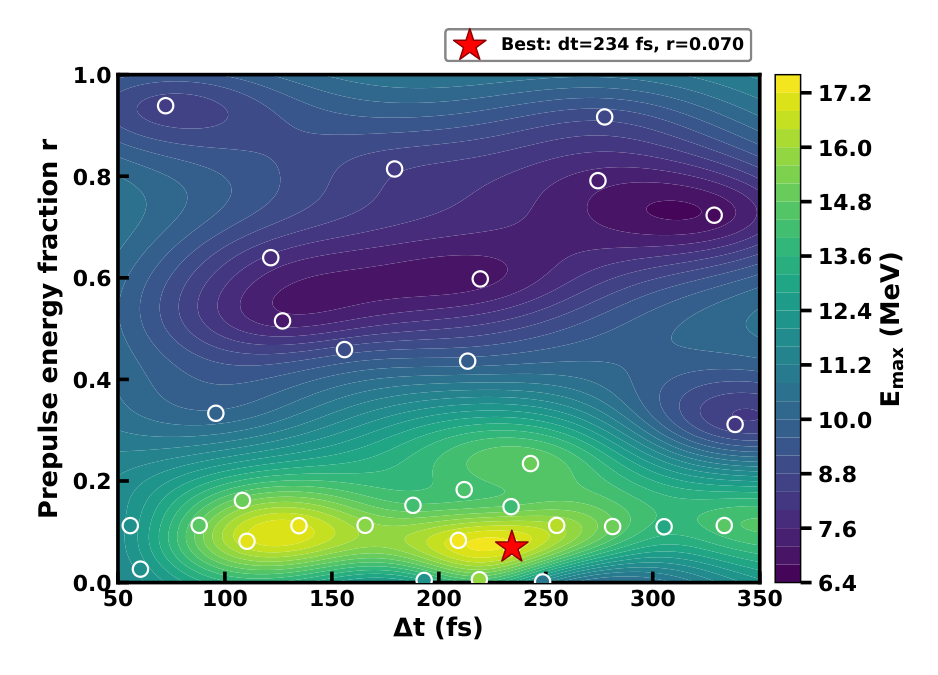
图 06-1：固定能量双脉冲的贝叶斯优化地图。 R133，原Fig.3，PDF第3页；作者2D PIC驱动的优化与代理插值。
逐图解读。 横轴为两脉冲延迟 \(\Delta t\)，单位fs；纵轴为前导脉冲能量分数 \(r\)，无量纲；主脉冲获得剩余的 \(1-r\)，因此每个点保持相同总驱动能量。色标是GP后验均值预测的质子截止能量 \(E_{max}\)，单位MeV。白圈是32次PIC调用的采样位置，红星标出 \(r=0.07\)、234 fs候选；连续彩色面是代理插值，不能当成每个像素都实际计算过的扫描。黄绿高值区集中在小前导份额和中等延迟，给前等离子体形成留时间，同时避免过度抽走主脉冲能量；紫色区显示“大预脉冲”并非总有利。邻近正文说明目标在主峰后统一时间窗读出，使各候选按相同口径比较。图中没有后验方差，所以色面平滑不表示统计置信度已被证明。它支持固定能量二维PIC模型中的BO选点和有效区域，不是实验优化；定时抖动、三维膨胀与分辨率改变后的稳健性仍需复核。R133
R139 以源项压缩、潜残差修正和多层 FNO 重建场，分别测试直接预测与作为迭代初值的混合方案。这比只拟合一次 Poisson 解更接近真实部署，因为粒子会把场误差反馈到下一步源项。已有笔记报告的是场求解阶段收益，不能写成全程序收益。实用接入点是先做 warm start，让传统求解器恢复约束，再审计长期能量和模式演化。
R172 学后向哈密顿流，动态更新 bulk 分布，以残差粒子降低 δf PIC 方差。它没有直接替代物理推进，而是改善采样表示。辛网络限制相空间结构，周期网络限制边界结构。这里需要同时核算网络训练成本和方差下降；对弱扰动有效的残差表示，在强偏离平衡时可能失去优势。当前静电多流测试不能直接验证强场电磁应用。
R197 的 TokaGrad 将平衡、输运、加热、L–H 转变和 pedestal 连接到同一计算图，目标是执行器波形和整场景优化。它的增量是贯穿时间与模块的 Jacobian，而非单一步回归。真正的困难是模块闭合误差会沿同一梯度链传播；用简化转变模型得到光滑梯度，不代表真实转变可被同精度控制。适合先理解其计算结构，再看独立放电验证是否覆盖关键阈值。
R256 在可微低阶流体求解器内训练 FNO，让损失直接作用于部署轨迹。模型读低阶矩的历史，复现从线性阻尼到非线性俘获的部分范围；训练振幅包络外明显失效。它展示“最佳有效闭合不必逐点等于真实热流”，因为闭合还补偿被截断矩的总体作用。因此学习结果依赖波数、求解器和离散方式；不能把一维单模成功当成一般湍流闭合。
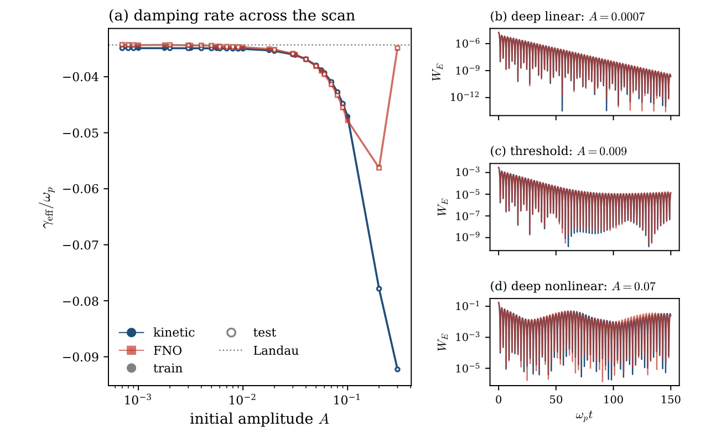
图 06-2：闭合跨越线性阻尼与非线性俘获。 R256，原Fig.5，PDF第21页；作者Vlasov与流体-FNO数值比较。
逐图解读。 （a）横轴是初始密度扰动振幅 \(A\) 的对数坐标，纵轴是归一化有效阻尼率 \(\gamma_{eff}/\omega_p\)；蓝线为Vlasov参考，红线为流体+FNO，灰实/空标记区分训练与测试振幅，虚线为线性Landau基线。训练范围 \(10^{-3}\)—\(10^{-1}\) 内两线接近，向0.2、0.3外推则明显分离。（b）、（c）、（d）依次取0.0007、0.009、0.07，横轴为 \(\omega_pt\)，纵轴为对数归一化电场能量 \(W_E\)，不是焦耳：第一幅包络持续衰减；第二幅接近俘获阈值后趋平；第三幅显著振荡并保持非线性包络，FNO总体能跟随这些变化。阻尼率按原图注由初期能量峰值拟合，是本文的有效诊断口径，不宜和其他论文场振幅阻尼率未经定义直接比较。此图展示一套有记忆闭合跨训练包络的可用区与失效区；参考也是一维固定波数Vlasov计算，不能证明任意多模湍流闭合或真实实验中的一般泛化。R256
R268 用 FreeGS 的单装置双零位样本学习磁通，并同时检查分离面、X/O 点和方程残差。比只报磁通范数，它更接近控制需要的几何量。但指定 X 点坐标本来就是输入，网络并没有从线圈信号独立发现 X 点；固定壁面、拓扑和网格限制了泛化。毫秒推理与传统求解配置的比较，只对论文该基线成立，不能自动优于已经 warm-start 的生产求解器。
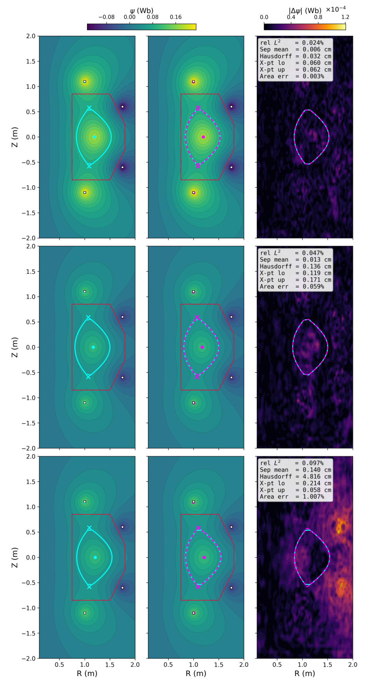
图 06-3：磁通误差与X点几何误差。 R268，原Fig.5，PDF第8页；作者单装置固定拓扑代理测试。
逐图解读。 九幅图共用 \(R,Z\) 米坐标；每行左、中、右依次为FreeGS参考磁通、FNO磁通和绝对误差 \(|\Delta\psi|\)。前两列采用同一Wb色标，误差列采用单独的 \(10^{-4}\) Wb尺度，不能凭颜色相似度跨色标比较。上、中、下行分别选低误差、近中位和近p95样本，其全场相对 \(L_2\) 为0.024%、0.047%、0.097%。每一行前两幅核心轮廓相近，右幅揭示误差向分离面和X点相关区域集中；青色为真实分离面，洋红为预测。上行的几何偏差较小，中行略增，下行虽仍保持小全场范数，框内Hausdorff距离已达4.816 cm。Hausdorff度量最坏局部偏差，不能和平均最近点误差混用。图中壁和线圈位置固定，X点目标本来就是输入，三行也只是500个留出样本中的代表，不是三个实机放电。它支持在所选双零位族内检查代理几何，而不证明新拓扑、另一装置或真实诊断反演同样准确。R268
R272 将偏振条件、Fourier 特征和 EFISH 前向积分一起加入 DeepONet。重建场重新生成信号，能发现某些纯回归的非物理解；dropout 可标记复杂多峰场形的训练域外风险。它的实验对照是有限电极几何和可重复扫描放电，不能称为任意单发场重建。光学相位、密度和超极化率假设若不成立，信号拟合很好仍可能给错场。
R312 主要验证神经 Jacobian 与伪逆接入 MAST-U PCS 的软件、延迟和 piggyback 一致性，实际线圈仍由常规控制驱动。R318 再给出主动形状控制炮次。这两个阶段必须分开。局部关系 \(dP=S\,dI\)、\(dI=S^+dP\) 将形状请求转为线圈请求；当 \(S\) 病态时，微小形状误差会放大为巨大电流。主动炮次中的保护跳闸与病态案例是部署边界，不应被平均跟踪效果掩盖。
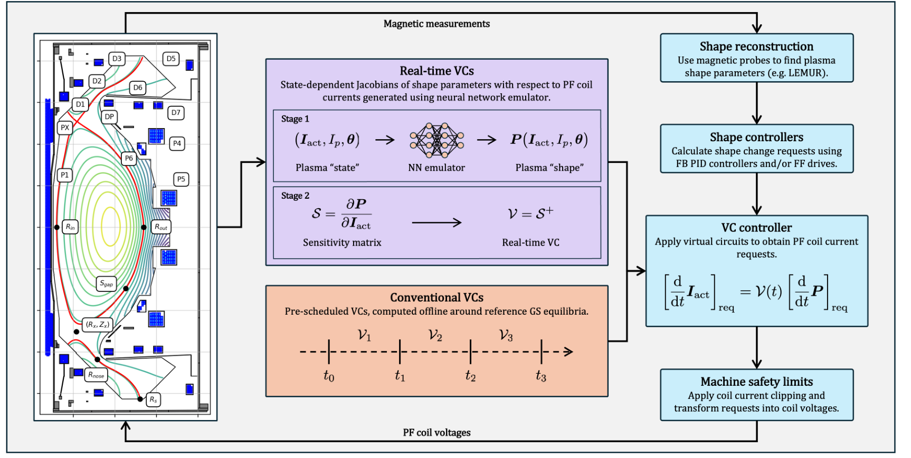
图 06-4：神经Jacobian接入已有控制链。 R318，原Fig.1.1，PDF第2页；论文控制架构示意。
逐图解读。 左侧装置示意标出 \(R_{in},R_{out}\)、X点和间隙等形状量，没有数值轴，颜色是磁通轮廓示意，不能读取约束性能。中间紫框先由线圈电流、等离子体电流和剖面参数预测形状，再求Jacobian \(S=\partial P/\partial I_{act}\)，经伪逆产生虚拟电路；橙框则是传统按放电阶段查预计算VC的替代路径。右侧磁诊断和形状重建提供当前状态，既有PID/前馈控制决定形状变化请求，VC将它变为线圈电流请求，机器保护再限制电流并转为电压，最后返回装置。图的重点是AI位于局部响应计算接口，形状估计、目标控制与执行器保护都仍有各自职责；两种VC路径也不是同时叠加的两个控制增益。它属于论文架构示意，没有跟踪误差或延迟数据；主动控制的实验证据需结合实际炮次。相比“神经网络控制聚变”这一笼统说法，这张图更准确地说明了真实闭环中被替换的环节及误差会进入何处。R318
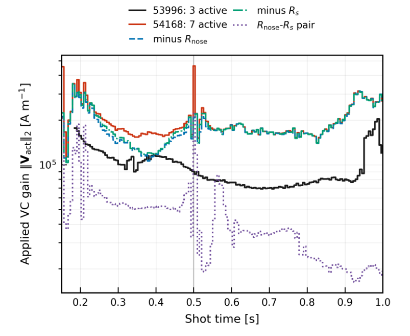
图 06-5：实时伪逆的病态会放大线圈请求。 R318，原Fig.4.1，PDF第6页；真实放电状态与离线诊断反事实。
逐图解读。 横轴为放电时间s，纵轴是实际受控VC矩阵的二范数，单位A/m且采用对数刻度；它衡量单位形状变化会要求多大线圈电流，不是神经预测误差。黑线来自53996炮，红线来自54168炮所用映射，后者在大部分时段较高，约0.5 s处还有局部尖峰。蓝、绿虚线是分别删去 \(R_{nose}\)、\(R_s\) 列后的离线重求逆，紫色点线仅取这对方向；这些反事实曲线没有用于实际控制。邻近正文指出约0.5 s两列近共线，伪逆放大形状请求，图中下降的删列曲线帮助定位退化来源。大增益会放大测量和模型误差，解释为什么网络本身准确仍可能产生不稳健执行请求。作者明确未由两炮比较建立跟踪变差的唯一因果关系，不能把尖峰直接称为诊断到的损伤。该图结合真实放电状态与离线矩阵诊断，支持对条件数和正则化的关注，不证明删除约束已经在现场解决问题。R318
正式论文 R327 学一维非局域热流散度，再嵌入隐式温度方程。当前本地全文是相应作者预印本，正式题名和日期来自 APS 元数据。热点宽度、空间降采样和训练后时间区间的测试支持有限网格/时间迁移；但热点训练不能可靠预测正弦温度组，直接展示了物理分布改变的失败。约四十倍一维闭合计时不能写成完整 ICF 加速，生成高粒子数 PIC 标签的成本也不能忽略。
R352 用隐状态 \(a_0,n_e,\mathcal C\) 和 EKF，从电荷、能量、能散推断运行漂移，再比较环境耦合模型。它提醒：多收炮数不能补足没有被激发的参数方向。若能量在零啁啾附近仅依赖 \(\mathcal C^2\)，一阶灵敏度为零，很难识别小啁啾漂移。全文定量结果是共享函数族的合成会话，并未用真实 LPA 数据验证；其价值是诊断设计与负结果，而非已部署维护系统。
R369 的 PhySKIP 在一维氮气漂移—扩散—Poisson/电路模型中，提议跨过 \(K\) 个普通步，再执行 \(M\) 个物理重锚步。PDF 定义是 \(K=64/96\) 的跳跃长度、\(M=16\) 的重锚步数；与旧笔记把它解释为输入窗口/周期数不同，应以原文为准。作者最高 CPU 加速 4.70 倍，但计时排除加载和诊断，测试提议均获接受。它有约束重建与回滚逻辑，尚未测 PIC、多维或高拒绝率情况。官方摘要与本次 PDF 关键段落一致。
R379 用超过二十万次非线性 GX 数据训练恒星器热流 CNN 集成，接入 DESC 和 T3D。作者给出约 45 倍墙钟与 720 倍 GPU-hour 的输运成本降低；两者相差因为硬件数量不同。更关键的是最优候选曾落到非嵌套磁面与训练域外，集成方差显著变大；非法候选还污染遗传搜索父代。本次 PDF 与官方来源核对了数据量和方法。数值温度提升没有真实恒星器测量，静电绝热电子模型也没覆盖全部输运。
R384 用磁通表示和 PINO 学二维电阻 MHD 重联，两个留出参数上的磁通误差约 1%，谱电流约 7.5%；低至中等 Lundquist 数重联率较准，高参数晚期爆发误差升至 32–42%。本次 PDF 复核支持这一范围，说明导数观测量与突发事件要单独验收。官方摘要页面当前提交日期显示 8 月 25 日，而库内记录与稿件日期为 9 月，存在元数据不一致；本章只将其称为 2026 年工作，不用它建立月份优先权。
反演路线可继续读鲁棒剖面统计 R204、电子滤片谱联合核修正 R279、热流诊断 R270、边界热导 PINN R349、线标定与位置联合恢复 R378、非 Maxwell CTS R386。共同问题是观测不足以唯一确定参数，需要响应核、先验、独立校准和后验预测；网络并不自动创造丢失的信息。
优化路线可从恒星器 alpha 约束的降维 R141 到多目标靶层 R151、PIC–Monte Carlo 同位素产额 R286、端到端 FEL 束线 R252。目标由源端改到应用端，是本库很有意义的变化；有效能窗、接受度和终端产额常比源端最高能更有用。
场与动力学代理还包括条件 Koopman 湍流 R218、边缘循环一致/不确定度 R235、自回归潜扩散 MHD R170、带解析方差计划的生成代理 R323、粒子轨迹流模型 R302。生成模型可以输出多种可能轨迹，但这不是后验自动正确；概率校准、极端事件和分布覆盖比一张逼真图更重要。
控制线包括 ITER 高能粒子输运代理 R278、平衡反问题 R308、湍流转变强化学习 R317、无磁诊断的平衡挑战 R324、观察器模型预测控制 R390。仿真中的强化学习策略、历史数据回放、硬件集成、真实主动放电是连续但不同的验证层次；跨装置控制尤其不能靠随机拆分测试集宣称。
R308 则由目标形状与状态估计反求线圈请求，再交给已有低层电流/位置控制。下图把它的真实TCV成形结果与全形状闭环能力分开，作为前述控制证据层次的具体例子。
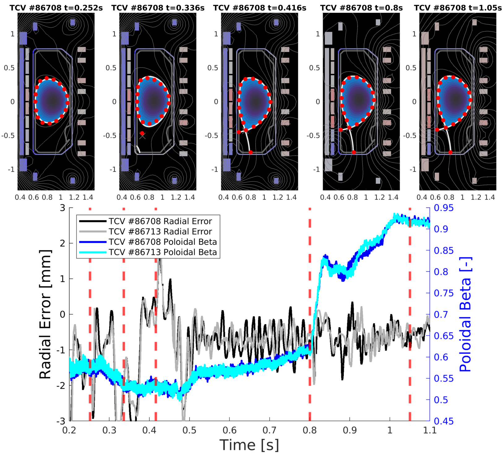
图 06-6：TCV的实机成形与已有径向反馈。 R308，原Fig.4，PDF第20页；真实TCV放电及平衡重建。
逐图解读。 上排是TCV #86708在0.252、0.336、0.416、0.8、1.05 s的重建平衡，背景为实验数据重建，红点表示下一目标形状；这些图没有通用温度色标，不能把核心颜色解释成温度。五幅依次显示受限形状、向下单零位过渡及后续保持；坐标刻度对应装置的 \(R,Z\) 米尺度。下图横轴为秒，左轴是两炮径向位置误差mm，黑/灰曲线总体在毫米量级波动；右轴是无量纲极向beta，蓝/青曲线在中性束加热后升高，用来检查压力扰动下的成形。红虚线将轨迹时刻与上排快照联系起来。邻近正文特别说明径向位置另有反馈环路，而当时未对全部形状误差施加完整实时闭环；因此小径向误差不能全归功于神经网络。这是真实TCV成形和诊断重建证据，较纯FGE仿真前进了一步，但仍不能替代所有控制点、拓扑切换和在线适应任务的独立实机验收。R308
| 需要回答的问题 | 优先路线 | 比平均回归误差更重要的检查 |
|---|---|---|
| 少量昂贵试验找参数 | BO/多保真优化 | 噪声与漂移、约束、最佳点复测 |
| 高维可导设计 | 可微模拟/伴随 | 模型偏差、梯度校验、可实现约束 |
| 宏观方程缺动理学项 | 在线闭合/神经算子 | 长时稳定、守恒、记忆和新分布 |
| 稀疏仪器信号恢复状态 | Bayes/PINN/算子反演 | 可辨识性、响应核、先验敏感性 |
| 实时驱动执行器 | 代理 Jacobian/MPC/RL | 全链路延迟、保护、失效与回退 |
测试集切分要按真实独立单位进行。相邻时间帧、同一炮的多个像素、同一磁构型的多根磁力线，随机分入训练与测试会泄漏共享结构。至少区分：同工况插值、新参数、新初态、新几何、新装置和新物理。上述每一级都需要自己的结果；分辨率变化只覆盖其中一个轴。
不确定度也有两层。偶然噪声来自测量和随机过程，增加重复测量可部分降低；认知不确定度来自训练不足或模型缺项，需要新数据或更正确模型。深集成、dropout 和 Gaussian process 能给某种认知风险提示，但校准依赖分布；几套网络可能共同学到同一个偏差。应让高不确定度触发高保真调用，低不确定度也定期抽查。
如果目标是完整模拟加速，设原程序某阶段占比 \(f\)，该阶段网络加速 \(s\)，其他阶段不变，则总加速 \(S=1/[(1-f)+f/s]\)。即使场求解快 30 倍，若场只占 10%，总加速仅约 1.11 倍。还应加训练、数据、模型加载、传输、验收、回退和诊断成本。对控制，平均延迟远不够，p99 与最坏延迟、硬实时截止、状态过期和缺失输入同样重要。
第一步用小数据做最简单模型：输入密度和激光参数，输出一个可解释标量，并比较线性回归、物理标度和 Gaussian process。若简单基线已经达到仪器噪声下限，更大网络未必有物理意义。每个特征写单位，每个标签写来源，记录归一化怎样计算；归一化只能用训练集统计量，避免测试信息流入模型。
第二步做一个已知前向模型的逆问题。生成带噪滤片或 Thomson 合成数据，比较不同先验能否得到同样观测却不同分布，再将后验解重新送回前向模型。通过这一步学习“拟合信号”和“唯一恢复物理量”的区别。之后加入一组独立校准数据，检查它是否打破参数退化。
第三步才把网络放进求解器或控制环。先做离线预测，再做影子运行，记录模型如果被启用会输出什么；随后在受控范围部署，有异常就回退原求解器/控制。对闭合，检查能量积分和长时模式；对优化，重算最优候选及邻域；对控制，记录保护动作和错误请求，不能只保留成功炮次。
2026 年这些文章共同提示一种值得优先追踪的前沿：AI 的价值正从“拟合一张图”走向物理方程消费、仪器响应消费和真实执行器消费。越接近实际链路，负结果、约束、失效检测和独立验证越有研究价值。这个判断是本综述的归纳，不是任一论文已经证明全部方向成熟。
一个小型验收实验可以固定训练预算，让物理标度、Gaussian process 和网络分别预测同一留出参数组，再选各自最优点及周围点用高保真模型重新计算。保存预测区间是否包含真值、最优点复算后的排名和实际总时间。这样同时回答精度、校准、决策效果与成本，避免只用回归分数决定方法优劣。若三种方法推荐相同的稳健区域，简单模型往往更方便解释；若网络只在边界给出夸张收益，应先扩大独立验证而不是直接进入实验。
本次原图增补的范围：
本章新增6幅论文原图区，来自R133、R256、R268、R308、R318五篇。2026-10-01重新查看图注、邻近模型/结果和源页面，逐幅检查最终裁图；示意、作者数值验证、真实放电及离线诊断分别标注，未重新训练或进行实机控制。逐图来源、PDF页码、裁图坐标和哈希见data/figure-assets/的ch06侧录，选择与未用项见原图选择方法。
截至 2026-09-30。仓库的“磁约束聚变与 alpha 粒子”路由有 43 条，全部在台账中标为 2026；部分只是出现 fusion/alpha 等关键词的 ICF 或束靶论文。本章人工围绕磁面、输运、快粒子、边界和控制选文，不把 43 条当 43 项磁聚变验证。本库对 AI 与算法论文有明显取样偏好，不能据此认定磁聚变前沿只剩机器学习。
带电粒子在磁场中绕磁力线回旋，垂直运动半径 \(\rho_s=m_sv_\perp/(|q_s|B)\)，角频率 \(\Omega_s=|q_s|B/m_s\)。磁场不会对粒子直接做功，因为 \(\mathbf v\cdot(\mathbf v\times\mathbf B)=0\)。它能限制运动方向，却不能自动阻止沿场方向逃逸，也不能让所有粒子永远停在同一磁面。托卡马克把磁场线绕成螺旋闭合体系，环向电流产生极向场；恒星器主要用复杂外线圈建立螺旋磁场，少依赖等离子体电流，但三维轨道和工程几何更复杂。R141 R231
磁聚变的燃料温度可达 keV，壁面则承受有限热负荷；核心越能保存能量，边缘越必须有受控排热路径。闭合磁面之外是刮削层（SOL），场线通向偏滤器。X 点是极向磁场为零的鞍点，分离面穿过它，把闭合与开放场线分开。核心约束、边界热流、线圈控制和快粒子不能分别做到“最好”就保证全装置可行：例如更窄热流剖面可能带来更高局部材料负荷，更强快粒子模可能一边损失 alpha、一边激发剪切流降低微湍流。R234 R239 R142
读本章时把四个问题分开：磁场几何能否平衡压力；在该几何中粒子和热如何输运；高能粒子是否改变稳定性；诊断和控制能否在实际时间预算内感知并执行。 “平衡预测准确”不等于“输运准确”，“网络推理快”不等于“装置闭环已经运行”。今年本库文章最值得关注的进展，正是把这些层次接得更紧，同时也暴露层与层之间的空白。
这里 \(n\) 是总 DT 离子数密度，单电离时 \(n_e\simeq n\)，\(T\) 用能量单位；当文献以 keV 写温度，代入 SI 要转换成 J。\(\beta=2\mu_0p/B^2\) 比较热压与磁压，不是效率。安全因子 \(q\) 描述场线绕环向与极向的相对圈数，不是电荷。归一化半径 \(r/a\)、\(\rho\)（磁通半径）和质量密度 \(\rho\) 在不同论文中可重名，阅读时必须先看定义。约束时间 \(\tau_E=W/P_{\rm loss}\) 是储能除能量损失率，不能和某个粒子从中心逃逸的飞行时间互换。R142 R342
教学推导：最简 DT 自热条件。 等摩尔 DT 时反应率为 \(n^2\langle\sigma v\rangle/4\)，alpha 功率密度为该率乘 3.5 MeV。等温电子与离子的热能密度约 \(W/V=3nT\)。忽略辐射、杂质和外加热，要求 alpha 加热补偿损失：
\[ \frac{n^2}{4}\langle\sigma v\rangle E_\alpha \gtrsim\frac{3nT}{\tau_E} \quad\Rightarrow\quad n\tau_E\gtrsim\frac{12T}{\langle\sigma v\rangle E_\alpha}. \]
左右单位均为 \(\mathrm{s/m^3}\)。这解释了 Lawson 型条件为什么出现 \(n\tau_E\) 或 \(nT\tau_E\)；真实阈值随温度、辐射和 alpha 沉积改变。等离子体增益 \(Q=P_{\rm fusion}/P_{\rm aux}\) 只把聚变热与辅助加热比较，尚未扣线圈、低温、泵、RF 墙插效率和热电转换。即使达到某个 \(Q\)，也不能直接宣称净电站功率。alpha 要在内部停住是必要条件，但高能粒子轨道与激发模式会改变它是否做到。R141 R278
教学推导，静态、轴对称、标量压强理想 MHD。 柱坐标为 \((R,\phi,Z)\)，令 \(\partial_\phi=0\)。引入每弧度极向磁通 \(\psi\)（习惯单位 Wb），并写
\[ \mathbf B=\frac1R\nabla\psi\times\mathbf e_\phi+ \frac{F}{R}\mathbf e_\phi. \]
这样自动满足 \(\nabla\cdot\mathbf B=0\)，且 \(B_R=-\partial_Z\psi/R\)、\(B_Z=\partial_R\psi/R\)。磁面就是 \(\psi\) 常数面。力平衡 \(\nabla p=\mathbf J\times\mathbf B\) 沿磁场点乘，右侧为零，所以 \(\mathbf B\cdot\nabla p=0\)，可取 \(p=p(\psi)\)；环向分量同样给 \(F=F(\psi)\)。由 Ampère 定律算环向电流，
\[ J_\phi=-\frac{1}{\mu_0R}\Delta^*\psi, \qquad \Delta^*=R\partial_R\left(\frac1R\partial_R\right)+\partial_Z^2. \]
代回横向力平衡就得到
\[ \Delta^*\psi=-\mu_0R^2\frac{dp}{d\psi}-F\frac{dF}{d\psi}. \]
这是一类非线性椭圆方程。固定边界问题给定磁面形状；自由边界还要解线圈、真空场、等离子体边界和容器响应的匹配。正问题从线圈/剖面求磁通；逆问题从目标形状或诊断反推线圈/内部状态。二者输入不同，不能把正向代理的测试误差拿来证明诊断重建可靠。R268 R308 R324
大纵横比近圆截面时 \(q\simeq rB_\phi/(RB_\theta)\)，更一般需沿磁面积分场线螺距。\(q=1\) 面与锯齿、鱼骨等模式有关；不同剖面即使边界形状相同也可能有不同 \(q\)。因此只给轮廓不能唯一恢复电流密度与稳定性。流、各向异性、三维扰动或快速瞬态明显时，静态 GS 需要推广，不能把方程残差小当成全物理成立。R239 R149
重点 1：毫秒级双零位 GS 代理到底学了什么。 R268 的最佳 FNO 在 500 个测试平衡上的平均相对 \(L_2\) 误差约 0.052%，GPU 单算例约 2.77 ms。它是一个壁面、受控双零位拓扑、固定 65×65 网格的 FreeGS 标签代理；X 点位置是输入条件，不能称从磁诊断独立预测 X 点。该研究同时报告磁通、几何和离散残差，值得借鉴，但约 640 倍速度是相对其 FreeGS 配置，不能普遍替代生产求解器的真实实时比较。更低磁通误差也不自动给更好 \(q\)、边界和线圈请求。R268
重点 2：EXL-50U 架构比较中，插值赢家未必外推赢家。 R305 的 IID 测试里 Transformer 更准，CNN 在推理与 OOD 鲁棒性间更均衡；不同架构在规定几何外推下的退化差别很大。标题中“validation on EXL-50U”主要是代理、GS 与参考平衡的装置关联数值对照，不是网络驱动电源的放电证据。对实验选型，误差分布、计算延迟、拓扑变化与传感器噪声比只报平均 \(L_2\) 更重要。R305
重点 3：没有磁诊断的平衡挑战是一种有意提高难度的反问题。 R324 从外 PF 电流和 Thomson \(T_e,n_e\) 剖面恢复磁通，要求 DIII-D 到 MAST 零样本迁移。它是开放数据/竞赛协议文章，尚无获胜系统或装置闭环结果。摘要总 shots 与正文发布 shots 不同，具体 release 应按正文约 11,208 shots 口径；本章不自行补出过滤原因。非磁输入难以约束内部状态，既有诊断重建标签也可能有偏差。它把跨装置、炮次隔离和从磁通导出一致几何量纳入评估，价值在把泛化问题变成可测问题。R324
教学推导。 把匀强场回旋平均后，横向电力与磁力平衡给 \(q\mathbf E_\perp+q\mathbf v_E\times\mathbf B=0\)，这里仅求垂直分量，沿场电场仍可加速粒子；由横向方程解得
\[ \mathbf v_E=\frac{\mathbf E\times\mathbf B}{B^2}. \]
电荷约掉了，所以理想 \(E\times B\) 漂移对不同物种同方向、同速度；它可形成流剪切，却不是电子和离子自然分离的机制。缓变磁场还给
\[ \mathbf v_{\nabla B}=\frac{m v_\perp^2}{2qB^2}\mathbf b\times\nabla B, \qquad \mathbf v_c=\frac{m v_\parallel^2}{qB}\mathbf b\times\boldsymbol\kappa, \quad\boldsymbol\kappa=(\mathbf b\cdot\nabla)\mathbf b. \]
这里 \(m,q\) 为所考察物种的质量与电荷，\(\mathbf b\) 为磁场单位向量，\(\boldsymbol\kappa\) 为场线曲率向量。这两项随电荷符号改变。环形磁场的不均匀与曲率会使轨道偏离单条场线；被困粒子形成香蕉轨道，碰撞不断把粒子换到不同轨道，产生新经典输运。恒星器三维场更容易引入轨道损失，所以设计既要平衡，也要看轨道与碰撞率。R231 R141
新经典输运并非“新发现的经典”，而是环形/三维几何下的碰撞输运；湍流输运则来自涨落相关，例如径向粒子通量 \(\Gamma_r=\langle\widetilde n\widetilde v_{E,r}\rangle\)。只有涨落幅度不够，密度与电势的相位关系才决定净通量。局部热扩散系数有时便于全剖面计算，但它可能吸收有限轨道宽度、几何和非局域效应，不能都称为普适材料常数。R074 R349
陀螺动理学的教学推导。 当 \(\rho/L\ll1\)、\(\omega/\Omega\ll1\)，可平均掉快速回旋相位，把六维位置速度压成五维回旋中心相空间。粒子在半径 \(\rho\) 的圆上看到的 Fourier 电势平均为
\[ \frac1{2\pi}\int_0^{2\pi}e^{ik_\perp\rho\cos\theta}d\theta =J_0(k_\perp\rho). \]
所以有限 Larmor 半径效应以 Bessel 因子进入耦合，高波数扰动被回旋平均削弱。这个降维保留慢湍流和共振，但不覆盖所有电子回旋频率、Debye 尺度或任意强激光过程。ITG 的自由能来自离子温度梯度；漂移波、波粒共振、\(E\times B\) 非线性和 zonal flow 共同决定饱和，单看线性增长率不能直接给出热流。R330 R074
重点 4：yancc 加速的是明确近似下的新经典求解。 R231 采用 GPU/可微路线，在其 MONKES/SFINCS 对照范围内约到 1% 一致，速度和内存有明显收益。这有助于高维几何优化和灵敏度计算，但小归一化回旋半径、局部径向处理仍是模型边界；GPU 更快不表示已经包含全轨道或湍流。它应作为可靠碰撞基线，与非线性 GK 互补，而不是拿一种输运机制替另一种。R231
重点 5：分钟级 GTC 通过保留相关频谱来降成本。 R330 的 hybrid spectral PIF 仍推进五维回旋中心粒子，却将场用有限环向模、径向有限差分与相关极向谐波表示，减少完整环向网格和通信。单模 2000 步在笔记本 RTX 4090 约 78.2 s 的数字是特定模型和较小有效问题规模，不能表述成任意三维全电磁 GK 均到分钟级。线性频率/增长率、非线性热流与 zonal flow 检验比标题更能说明保留了什么。X 点几何的 R106 和 XGC 环向谱求解的 R157 处理另一种基础瓶颈，三者不能简单按一个加速比排名。R330 R106 R157
重点 6：AI-GX 恒星器优化的负结果应和正结果一起读。 R379 从超过 20 万次局域、静电、绝热电子 GX 非线性计算训练 CNN 集成，并接入平衡与输运优化。作者报告特定循环约 72 倍加速，有效构型的高保真后处理支持离子温度提升；但最高代理打分曾落到训练分布外、非嵌套磁面的非法解，还污染遗传搜索后代。教训不是“AI 不可用”，而是物理可行性、集成不确定性和高保真回退必须进入目标函数。此数据不覆盖动理学电子、有限 beta 全电磁或全局效应；代理提升只适用于它真正学过的物理层。R379
重点 7：ARC-class alpha 的湍流反馈。 R142 用线性与非线性 CGYRO 对比真实快 alpha 与人为热化 alpha，指向内核 \(r/a\le0.5\) 的湍流通量降低和非线性 ITG 阈值移动。机制涉及快粒子模、zonal flow 与背景湍流，不只是把 beta 增加造成线性稳定。它是 ARC-class 参数下的局部模拟，不是未来装置的实测增益；真实 alpha 分布、全剖面功率平衡和电磁模式损失仍应一起检查。高能 alpha 可能稳定微湍流，同时又通过 Alfvén 本征模向壁损失，两个结论可同时成立。R142
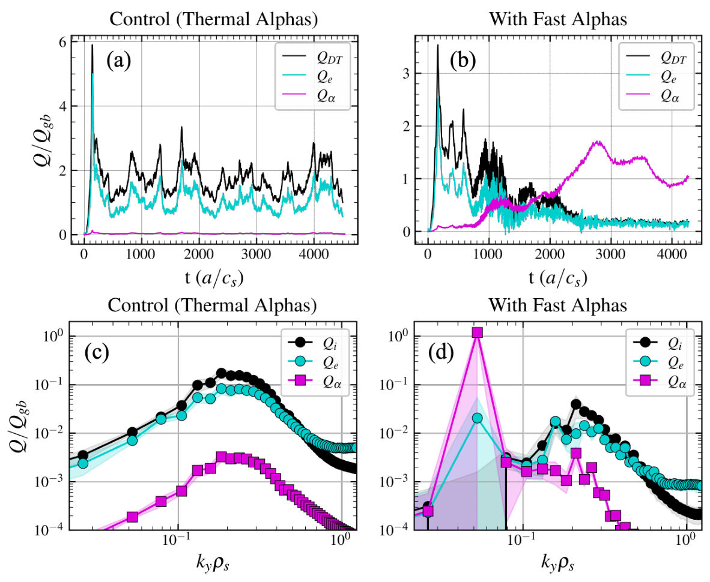
图 07-1｜快alpha降低主体热流，同时打开自身输运通道。
原 Fig. 10（PDF 第16页）比较 \(r/a=0.35\) 的局域非线性计算，左列把alpha人为热化作为控制，右列保留快alpha。(a)、(b)横轴时间以 \(a/c_s\) 为单位，纵轴热流以作者gyro-Bohm量 \(Q_{gb}\) 归一化；黑、青、紫分别为DT、电子、alpha。控制组主体热流持续涨落，快alpha组在模式发展后DT/电子热流显著降低，alpha热流却增加：稳定主体湍流不能等价于高能粒子完全没有损失。(c)、(d)横轴为无量纲 \(k_y\rho_s\)，两轴均采用对数刻度；控制组热流较宽地分布在离子尺度，快alpha组在约0.0525出现窄的alpha输运峰，而更高波数主体热流下降。阴影是各波数平均热流的95%置信区间，属于有限模拟时间统计，并非ARC装置测量误差。图的论证作用是显示长波快粒子模与宽谱湍流之间的非线性反馈，需结合论文zonal-flow与模式结构诊断才解释因果；单看四图不能唯一认定模式为某个全局本征模。它没有把整体温度剖面重新闭合，也未证明总alpha沉积净增加。相同归一化与人为热化对照使机制比较清晰，但局域几何、给定分布和有限计算域限制向真实燃烧机器外推。R142
重点 8：恒星器 alpha 约束从“优化器”转向“可行设计空间”。 R141 用数据分位变换和边界点 PCA，把几何搜索空间重新组织，再做异步 Bayesian optimization 与 guiding-center 轨道跟踪。创新不只在采样算法，而在减少边界自交和平衡失败、让优化变量尺度更合理。良好轨道约束可以出现在偏离传统准对称范式的候选上，但轨道目标不等于线圈可制造、低湍流、良好边界和整机稳定都成立。与 R379 并读可以看到：一项优化减少 alpha 损失，另一项压低离子湍流，下一步应是共同约束而非独立报最优值。R141 R379
重点 9：EAST 鱼骨驱动 zonal flow 的证据层次。 R239 用鱼骨 burst、低频流、多普勒反射计和双相干分析，支持鱼骨自耦合产生细径向反向流；GTC 给出热离子与电子反号贡献抵消的机制解释。同步出现只是第一层，相位耦合比纯时间相关更有力；早期流增长早于鱼骨峰更支持 beat-driven，但不能排除晚期快离子外逸附加贡献。真实测到流，不等于已经证明长期约束改善或 alpha 自热增加。它为 R142 的多尺度反馈提供相关实验参照，尚不是同一条件的验证。R239
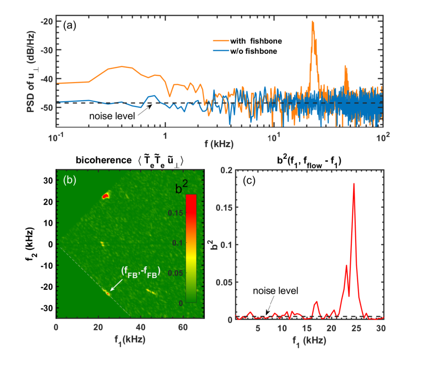
图 07-2｜鱼骨与低频流：频率重合之后还要看相位耦合。
原 Fig. 2（PDF 第3页）的(a)横轴频率 kHz（对数），纵轴垂直于磁场的流速信号的功率谱密度 dB/Hz。橙线鱼骨时段相对蓝色无鱼骨时段，在约20–25 kHz出现强峰，低频流也增强；黑虚线提示噪声底。它先建立共存，却不足以证明非线性驱动。(b)用两温度涨落与一个流速涨落计算归一化双相干 \(b^2\)，横纵坐标为 \(f_1,f_2\)，单位kHz；色标无量纲。图中正负鱼骨频率形成近零差频的耦合斑，沿虚线检查 \(f_1+f_2=f_{flow}\) 的组合，比两条时间曲线同时上升更有力。(c)取该差频线上的双相干，横轴 \(f_1\)、纵轴 \(b^2\)，约24 kHz峰明显超出黑色噪声水平。三图分别承担频谱识别、频率三元组定位与相位统计显著性的论证，不能只摘(c)的高峰就省略其定义。数据来自EAST诊断，属于实验相位耦合证据；空间流形、早晚期驱动与热离子/电子贡献还需其余测量和GTC解释。有限窗口、诊断空间权重和统计噪声仍限制结论，这张图没有显示长期能量约束改善或聚变alpha增益。双相干的零到一归一化衡量相位锁定程度，既不是能量传输百分比，也不直接给出流的绝对驱动力或输入功率。 R239
快粒子输运代理 R278 学的是指定 ITER 工况、已非线性饱和的 FAR3d 响应，不是完整模增长时间过程。R255 从变分结构构造全动理学离子/陀螺电子混合框架，提供守恒设计背景。R109 给开放磁阱加聚变产物和中性束俘获源项；R244 讨论自旋极化燃料的 alpha channeling。它们都涉及快粒子，物理层次和证据成熟度却不同，不宜因 alpha 关键词并成一条性能增长曲线。R278 R255 R109 R244
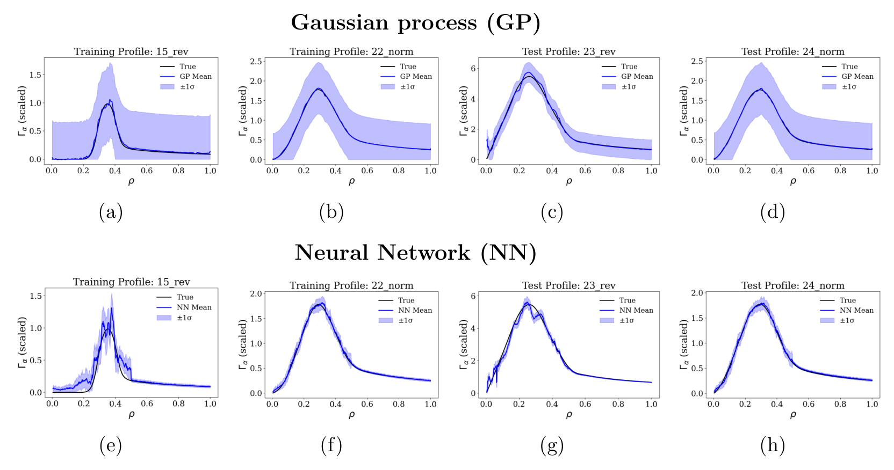
图 07-3｜快粒子通量代理：剖面准确与可信区间宽度是两回事。
原 Fig. 9（PDF 第19页）上排(a–d)为Gaussian process，下排(e–h)为神经网络，四列依次是训练15_rev、训练22_norm、测试23_rev、测试24_norm；rev与norm表示反剪切和单调\(q\)构型。各图横轴 \(\rho\) 为归一化环向磁通平方根；纵轴为缩放alpha粒子通量，需乘 \(\Gamma_{\alpha,0}=5.5857\times10^{19}\) m⁻²s⁻¹恢复单位，不能把纵轴数字当热功率。黑线“True”是FAR3d模拟标签，蓝线是均值，阴影是 \(\pm1\sigma\) 预测范围。(a/e)窄峰较难，NN有更明显局部起伏；(b/f)较宽训练峰两者均跟随；(c/g)留出反剪切剖面仍能捕捉更高峰值；(d/h)留出单调\(q\)宽峰也近似恢复。GP带往往比NN带宽，反映概率GP与Monte-Carlo dropout两种不确定性估计的差别，不能只用带窄判断模型更可靠。这八图支持指定构型、非线性饱和数据范围内的快速输运闭合，未覆盖强burst、chirping或完整模式成长史。测试是完整留出剖面而非同剖面随机点，较有说服力；但样本来自有限两类ITER平衡，真实实验与分布外构型仍须独立检验。判断阴影能否作为部署置信区间，还应在额外独立样本上检验覆盖率，并检查误差是否随构型、峰值与饱和阶段系统变化；仅这八条剖面不能完成此类校准。 R278
教学推导：逃逸电子的阈值为何不是单一温度。 高能电子的碰撞摩擦随速度变化；相对论极限的临界电场常写为
\[ E_c\simeq\frac{n_e e^3\ln\Lambda}{4\pi\epsilon_0^2m_ec^2}. \]
它是理想完全电离、无额外损失的量级式。外电场的加速 \(eE_\parallel\) 超过有效摩擦时，某些电子进入 runaway 区；同步辐射、部分屏蔽、俯仰角散射与轨道损失会改变实际阈值。一次高能电子与低能电子的大角碰撞还能产生新的逃逸种子，造成 avalanche，因此“初始尾很少”也未必安全。R243 R128
重点 10：全 \(f\) PIC 雪崩不是只加一个指数源。 R243 在 3D 相对论电子模型中加入 knock-on 碰撞与重采样，保留高俯仰角、受困和逆电场传播二次电子，并检查能量动量与三维结构。全局守恒表现好不等于每个局部 cell 严格守恒；JET-like 终止计算也不是 ITER 长时间反馈验证。R128 的伴随/PINN 层级代理可加速电流、均能和能谱预测，R175 的 Aditya-U 薄靶硬 X 射线系统试图隔离受限快电子与壁上厚靶辐射；计算和诊断应该相互约束，不能用总 HXR 增大唯一推 runaway 数增加。R243 R128 R175
射频波要先进入等离子体，再在合适位置把能量与动量传给粒子。几何光学射线近似要求波长远小于背景变化尺度；遇到 cutoff、模式转换、反射或强非局域区应另用全波/动理学。R269 的 BORAY-3D 覆盖三维磁构型中的多个频段，适合比较传播与吸收；它并不自动完成壁反射、非 Maxwell 分布或全部电流驱动模块。R269
重点 11：螺旋波电流驱动的实验与残差反演。 R342 在 DIII-D 用 476 MHz 行波天线，ECE 调制响应支持核心功率沉积；MSE 约束平衡与已知电流源模型之差给中心螺旋波电流约 \(20\pm10\) kA。它包含真实放电和“只加热”对照，但电流不是独立电流探头读数。共振条件 \(v_\parallel=\omega/k_\parallel=c/n_\parallel\)，解释波把平行动量交给电子；约 \(n_\parallel=3\) 对应相速度 \(c/3\)。实验处于较低 beta 原理验证，单侧天线未做方向反转，所以反应堆效率仍需专门检验。本次官方核查首次 arXiv 提交为 09-11，台账 09-08 不宜当已确认首次公开日期。R342
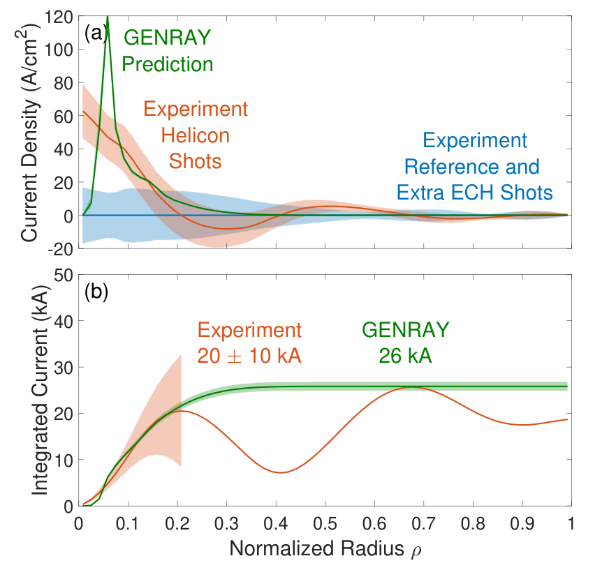
图 07-4｜核心电流驱动：诊断残差与理论的一致及分歧。
原 Fig. 3（PDF 第4页）的(a)横轴为归一化半径 \(\rho\)，纵轴电流密度 A/cm²，需注意 \(1\) A/cm²=\(10^4\) A/m²。橙线螺旋波炮次在轴附近产生正残差，绿色GENRAY首次通过预测更尖的轴心峰；蓝色带是无螺旋波的参考和额外ECH炮次变化。(b)把残差径向积分，纵轴 kA，核心约20±10 kA与GENRAY约26 kA同量级；橙线外侧起伏及局部负值说明残差剖面并非处处精确等于独立驱动源，不能逐点当作负电流真实新机制。阴影是炮次平均的标准差，尚未涵盖所有电流源建模系统误差。真实实验约束来自MSE平衡重建和放电对照，螺旋波电流则由总电流减去Ohmic、自举、NB、EC等已知模型贡献取得；这解释为何既可称电流驱动实验，也必须注明反演链。图支持核心共电流方向与加热对照之外的贡献，峰形差别则提示沉积/输运或重建误差仍待厘清。单侧天线、低beta与未反转发射方向，限制其直接升级为反应堆级效率验证。径向积分能减弱局部重建噪声，却不会消除自举电流和外部驱动模型的共同偏差，因此积分一致与峰形一致应作为两个不同检查项。 R342
重点 12：宽带下混合波改变的是边带结构。 R228 的理论结合 Alcator C-Mod 边带，指出有限带宽可把非共振连续谱重组到离子回旋谐波附近，且增长率仍可较大。它和 ICF 的宽带 TPD 一样提醒：带宽既改变相干，也改变共振结构，不能只看“失相干所以稳定”。R367 的 BREAK 启动模拟还将 EC 非线性吸收、电离、碰撞随机运动与开场线损失连接起来；作者 ITER 级气体击穿预测不等于 burn-through、闭合磁面或电流爬升全部成功。R228 R367
重点 13：ST40 双诊断纠正热流解释。 R234 以 Langmuir 探针电流与红外热像比较宽/窄 SOL 热流剖面，强调电子电流贡献对解释窄热流重要。探针和红外的相符并非两台仪器都直接测同一量：一台测收集电流，一台通过表面温升与热传导反演热流；几何、鞘层与材料响应都在中间。应检查绝对标定、空间映射和功率守恒，然后才谈热流宽度标度。R234
重点 14：SafeDivertor 重建标签也继承红外反演误差。 R270 从宏观状态信号重建时空热流，在 77 炮数据上采用炮次隔离、频谱监督和物理先验；其意义在兼顾形态、时间谱与高频误差，而非仅小 MSE。标签仍来自放电后 IR—导热分析，网络不能越过绝对标定链，亦未展示跨装置或完整闭环。R235 的 SOLPS-ITER 循环一致性代理和 R349 的 TJ-II inverse PINN 也一样：内部循环自洽、方程残差小与真实未观测机制正确，是三个不同问题。R270 R235 R349
教学推导：虚拟电路怎样实现形状解耦。 对线圈电流附近作一阶展开，\(\Delta\mathbf P\simeq S\Delta\mathbf I\)，\(S=\partial\mathbf P/\partial\mathbf I\) 是形状响应矩阵。目标通道与线圈数不同或耦合强时，用伪逆得 \(\Delta\mathbf I=S^+\Delta\mathbf P\)。这就是把“只动某个形状量”翻译成多个线圈协调动作。平衡变化会让 \(S\) 变，离线查表需要阶段切换；实时代理可以更新局部 \(S\)，但伪逆条件数、剖面不确定性和执行器饱和仍需经典保护。R318
重点 15：MAST-U 的主动闭环是明确跨过的一道门槛。 R318 是前篇 PCS 集成/非驱动测试的实验续篇，本次官方摘要与本地全文均确认它实际发出线圈请求，完成若干形状扰动、偏滤器腿扫描和强演化任务。形状控制器 10 kHz，RTVC 响应矩阵每约 5–5.6 ms 更新，两个频率不是同一个刷新速度。它保留现有控制架构与保护，使用规定剖面参数且未把被动结构电流全部纳入网络；没有足够传统 VC 对照机器时间，故证明可部署完成任务，尚不能证明所有情景全面优于传统方法。R318 R312
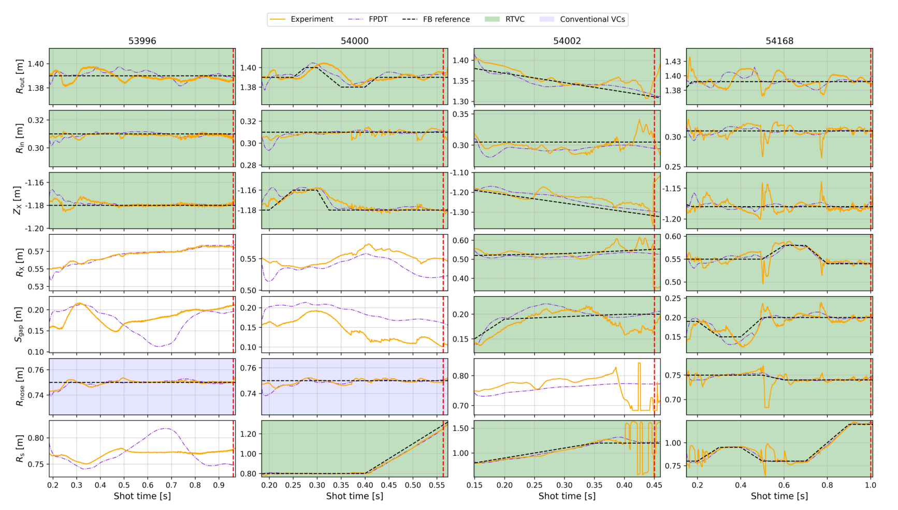
图 07-5｜四炮主动闭环：每个形状自由度都要看控制边界。
原 Fig. 3.1（PDF 第4页）四列是真实MAST-U炮次53996、54000、54002、54168，所有横轴时间 s、纵轴长度 m。七行从上到下为外/内中平面半径 \(R_{out},R_{in}\)、X点高度 \(Z_X\)、X点半径 \(R_X\)、偏滤器间隙 \(S_{gap}\)、nose附近半径 \(R_{nose}\)、打击点半径 \(R_s\)。橙线是LEMUR实时重建，紫点划线是预炮FPDT模拟，黑虚线是反馈参考；绿色时段启用RTVC，淡紫时段用传统VC，白区表示该参数并未受对应VC主动反馈。第一列说明核心三参数可保持，底部自由量仍变化；第二列在核心扰动时同时扫描打击点，不能只检验首行。第三列增加伸长与腿扫描，后期多个几何量一起偏离，原文将nose接近及未控制该约束联系起来；最后一列控制全部七参数，扰动后大部分回到参考，但短时尖峰仍在。红竖线是爬降开始，不是每个尖峰的故障标签。54000的563 ms终止源于Langmuir探针保护，作者未归因RTVC运行失败。图展示控制器确实向实机发请求并完成规定任务，同时公开边界和重建偏差；由于传统VC对照机器时间有限，不能由四列直接给出普遍优胜排名。各行量程不同，视觉上类似幅度的偏离对应不同绝对厘米误差，跨参数性能比较应恢复单位后进行。 R318
R308 的 TCV inverse-GS 网络采取另一接口：目标形状先变成 PF 电流请求，再由低层 RZIP 执行。真实成形实验存在，但初始实验没有显式实时形状反馈，完整适应主要在 FGE 仿真。它与 R318 并非“谁更先进”的单轴比较，而是逆映射与局部正向响应两种可审计分层方式。R308
重点 16：EXL-50U MPC 的毫秒求解仍是作者仿真。 R390 将 538 状态降到 40，Kalman 观测器加电压约束 MPC；在 FGE 非线性 plant 的噪声、延迟和构型失配测试中比同模型上的 PID/LQR 更好，控制进程平均约 0.413–0.441 ms。尚未包含真实平衡重建、通信、电源和装置闭环，个别最大计时超过 1 ms；不能只靠均值称硬实时保证。这是模型降阶和优化控制，不能因同在先进算法章节就称为 ML 已上机。R390
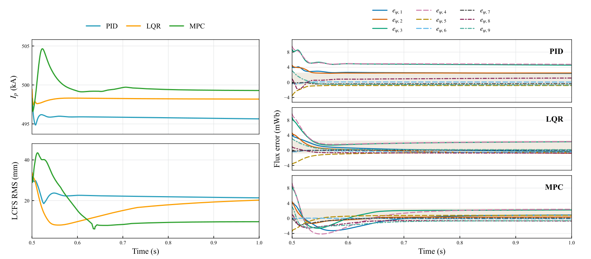
图 07-6｜名义控制性能：多任务误差与实机闭环距离。
原 Fig. 8（PDF 第17页）全部来自作者FGE非线性plant仿真。左上纵轴等离子体电流 kA，左下为LCFS边界均方根误差 mm；横轴时间 s，蓝/橙/绿分别为PID/LQR/MPC。MPC初始电流过冲更大、边界误差也暂升到约40 mm，约0.65 s后降至较低平台；LQR初始更平滑，后续边界误差反升，PID留较大偏置。因此“更好”必须说明稳态、整窗RMS还是瞬态峰值，不能靠最后一个点概括。右侧三行依次PID、LQR、MPC，每行九条曲线对应九个控制点磁通误差，单位mWb；不同点可能同号偏置或相互抵消，必须逐通道看，不能只画平均。MPC在主体时间段压低多个通道误差，仍有正偏置点和负过冲。阴影是视觉参考带，原图注没有将其定义为硬性容许误差范围。它支撑在该名义模型和调参下的多变量收益；论文其他页才讨论噪声、延迟及失配，不能把此图当鲁棒性全检验。状态观测器、电源通信与真实重建未在装置中闭环，图中毫秒级误差演化也不是CPU求解延迟分布。左下曲线是每时刻的空间边界误差，论文全窗RMS数字又增加时间平均；两者相互补充，不能混成同一统计口径。 R390
本库 2026 年动态可分三条。第一条是 平衡与输运计算可调用化：从 R074 的线性 GK 饱和规则、R231 的可微新经典，到 R330 的谱粒子压缩、R379 的非线性 GX 代理。它们加速了不同层，取值范围、电子模型与几何近似各不相同，不能把速度倍数相乘声称已做整机数字孪生。R074 R231 R330 R379
第二条是 从单一稳定性到快粒子—湍流反馈：R142、R239、R278 分别代表燃烧条件模拟、实验多尺度耦合和快速输运预测。第三条是 从离线精度到部署证据：R268/R305 是代理求解，R324 是评测协议，R308 是部分实机成形，R318 是主动闭环，R390 仍是作者 plant 仿真。层次越后，越必须计入诊断、状态估计、延迟尾、约束和失败处理。R142 R239 R278 R318
| 证据层 | 典型条目 | 能说什么 | 仍缺什么 |
|---|---|---|---|
| 方程/代码基准 | R106、R157、R231、R330 | 特定离散与物理模型更准/更快 | 装置全条件与全模型验证 |
| 同模型标签代理 | R268、R305、R379 | 训练范围内近似标签，部分高保真回退 | 真实物理偏差与 OOD 保障 |
| 历史实验数据预测 | R291、R270 | 规定测试集上的预测统计 | 前瞻放电与闭环收益 |
| 部分装置演示 | R308、R342 | 指定形状/波驱动的实验证据 | 完整反馈、反应堆参数与长期可靠性 |
| 主动装置闭环 | R318 | 指定 MAST-U 任务实际执行成功 | 全情景传统对照与跨装置 |
| 作者非线性 plant 闭环 | R390、R197 | 在所建 plant 下优化/控制表现 | 实机诊断、电源、未建模模式 |
工程材料同样是前沿约束。R365 的 IFMIF/EVEDA 概述区分 LIPAc 已有 5 MeV 高流脉冲与 9 MeV CW 目标，提醒中子辐照和连续束流仍有完整工程链；R153 的中子外逸碳-14、R340 的核素发生器、R377 的快中子闪烁涉及应用或监测，不能作为核心磁约束性能证据。R079 的激光纳米线 p–B alpha 与 R056/R062 的 ICF AI/驱动也应放回相应主章节，只在方法联系上交叉阅读。R365 R153 R340 R377 R079 R056 R062
还有一个常被忽略的判断：物理残差必须与标签用同一离散口径比较。粗网格有限差分给出的残差有截断误差，代理与标签残差接近只说明二者在该诊断下相当，既不说明连续方程被精确满足，也不替代网格收敛和装置诊断。
最值得带走的经验有三点。首先 不要用一个网络的场误差代替最终任务误差：磁通、X 点、\(q\)、线圈电流、壁热流和丢失粒子各自要测。其次 按炮次与装置隔离验证，同一炮滑窗或同一模型族中随机分割可能只是在测试插值。再次 优化必须允许拒绝候选并回退，R379 已给出具体非法最优解例子；没有失败机制的优化流程很可能主动放大代理误差。
第一轮只做磁面和平衡：画托卡马克、X 点和 SOL，把本章 GS 推导手算到 \(J_\phi\)，读 R268 并列出输入、输出、边界。第二轮做轨道：算一个 3.5 MeV alpha 的回旋半径与机器尺度之比，区分 \(E\times B\)、梯度与曲率漂移，再读 R141/R231。第三轮做输运：从涨落相关解释净热流，再读 R330/R142/R239，区分线性增长、非线性饱和和约束反馈。第四轮做控制：手算一个 2×2 响应矩阵，理解条件数与伪逆，然后对照 R308/R318/R390 的真实接口与证据层。
若只选五篇深入阅读，可用 R231（碰撞基线）、R330（GK 物理与算力）、R142（alpha 反馈）、R318（实机闭环）、R379（优化失败与回退）。它们共同解释这个方向为什么同时需要物理、算法、诊断和工程，而不只是一套更大的神经网络。
本轮原图补充（2026-10-01）逐一阅读6幅所选原图的图注及邻近正文，并查看原页与最终裁图；来源为 R142、R239、R278、R342、R318、R390。保留全部所选子图、坐标轴和图例；每幅均有原PDF/PNG SHA-256、页码、PDF点坐标裁框及检查侧录。此检查覆盖所选图，不表示全库逐图精读或独立复现；详见原图选择记录与图像来源侧录。
本次清点原路由 43 条的标题、日期与路径，正文串联超过 30 篇，16 个重点单元。对于同标签的 ICF、核素与闪烁材料明确作分类噪声/跨方向关联处理，未把它们算成磁约束实测提升。现有笔记阅读覆盖 R106/R109/R128/R141/R142/R157/R175/R197/R228/R231/R234/R235/R239/R243/R255/R268/R269/R270/R278/R291/R305/R308/R318/R324/R330/R342/R349/R359/R365/R367/R379/R390；未有新读全文支撑的条目仅作主题关联，不摘录强定量结论。
初稿阶段重新用本地 pdftotext -layout 定位复核
R268、R318、R342、R379 的定量与证据口径；初稿中
R330/R324/R308/R390
等细节主要复用现有深入笔记，未重跑代码、下载开放数据集或审阅原始放电信号。
2026-09-30 成功打开 R318 官方 arXiv 和 R342 官方 arXiv 核对摘要/版本与提交历史。R318 首次提交 08-28、仓库入库 09-01；R342 官方首次提交 09-11、仓库入库 09-15，台账 publication_date 09-08 与官方历史不一致。本章采用官方首次提交日期并记录差异，未自行修改共享台账。访问与 PDF 复核记录见 来源核查表。
历史基础部分是为理解方程补写的教学背景，不是对托卡马克和恒星器历史文献的穷尽综述；本库没有覆盖全部重要机器与全年全部成果。对反应堆状态、商业时间表、外部项目里程碑未作系统调查。本次没有独立复现 GK、RE、平衡代理、装置控制或净电计算。
阅读目标：理解靶、供气、同步、探测器、标定和数据反演如何决定论文结论，学会读清重复频率、能量分辨、绝对电荷和剂量的证据。截止 2026-09-30，本库此分类有 112 条交叉挂载记录。它们包括真实实验、原型测试、方案、模拟和统计方法；章节始终分别说明这些层次。
实验不是把激光打到靶上，再读取一个数字。输入端要知道到达相互作用点的脉冲能量、时宽、波前、偏振、焦点和对比度；靶端要知道厚度、密度、电离态、预等离子体、局部几何与刷新状态；输出端要知道粒子的方向、相空间与传播损失；探测端还包含几何接受度、物质响应、光学收集、电子读出和数据处理。某一环节未知，其效应就会被误归因到物理机制。
这一点在本库越来越突出。制靶综述 R067 说明靶并非被动耗材；差分抽气 R092 决定高重复率能否持续；DRZ 标定 R219 决定源端电荷是否可信；ELIMED 剂量 R284 决定输运后的应用剂量能否追溯；现场 LWFA R287 则把长时可用率直接变成平台性能。
峰值强度还需要区分定义。若能量为 \(U\)、时宽 \(\tau\)、焦斑面积 \(A\)，\(I\sim U/(A\tau)\) 只是量级估计；Gaussian 的峰值系数取决于时宽和腰斑采用 FWHM、rms 还是 \(1/e^2\)。波前旁瓣、时空耦合与靶前传播也会减少有效峰值。论文中 \(a_0\) 往往由强度换算，不等于逐发直接测得相互作用点场强。
设真实谱为 \(\Phi(E)\)，单位 particles/MeV，探测器通道 \(i\) 的期望读数可写为
\[ \mu_i=\int R_i(E)\Phi(E)\,dE+b_i. \]
\(R_i\) 包含传输、接受度、能量沉积、光产额、收集效率和读出增益，单位随读数定义变化；\(b_i\) 是本底。离散化后 \(\boldsymbol\mu=A\boldsymbol\Phi+\mathbf b\)。只有谱仪磁偏转位置映射还不够，必须知道探测器对每个能量的计数效率。
若多种谱给出几乎相同读数，\(A\) 就病态。测量噪声经直接求逆会被放大。Tikhonov 方法最小化
\[ \|A\Phi-d\|_{\Sigma^{-1}}^2+\lambda\|L\Phi\|^2, \]
并可加 \(\Phi\ge0\)。\(\Sigma\) 是噪声协方差，\(L\) 代表平滑等先验，\(\lambda\) 控制先验强度。拟合误差小只说明能重新生成观测，不说明恢复谱唯一。机器学习与 Bayes 反演同样受该限制；R279、R386 是两个不同粒子/等离子体谱的例子。
响应核本身也不确定。滤片厚度、电子散射、相机量子效率和几何误差进入 \(A\)，应与测量噪声分开传播。如果同时自由调整谱与核，二者可能互相补偿，必须加入独立校准。物理前向一致性是必要检验，独立标定与可辨识性才决定反演结论有多强。
相机总计数可示意为
\[ C-C_{dark}=N_e\,Y(E,\alpha,\rho_Q)\, \frac{\Omega}{4\pi}\,T_{opt}\,\overline{QE}\,G. \]
\(N_e\) 为入射电子数，\(Y\) 是每电子光产额，可能依赖电子能量 \(E\)、入射角 \(\alpha\) 和电荷密度 \(\rho_Q\)；\(\Omega\) 是收集立体角，\(T_{opt}\) 为光学透过率，\(QE\) 为相机量子效率，\(G\) 为计数增益。若屏按 Lambert 分布出光，应使用相应角分布核，不能机械采用各向同性 \(\Omega/4\pi\)。实际标定应把全链路写成一个经测得的系数。
因此材料光产额、厂家相对亮度、整套相机计数/电荷系数和系统探测效率是不同对象。即便 Geant4 正确算出屏内能量沉积，还缺闪烁、光学与读出校准；把沉积乘一个经验转换常数，只得到该假设下的响应估计。它不能独立称为本机绝对标定。R219 用已知束流与测得光谱闭合链路，R393 再展示高通量原型中的动态范围、位置依赖和退化。
线性范围应同时检验总电荷与局部电荷密度。相同总电荷压到更小束斑，可能触发闪烁饱和、SiPM 饱和或相机满阱；单条全屏线性拟合不一定排除局部非线性。长期辐照会改变屏、光纤、传感器和电子学，在线 LED 只能检查部分光路，不能独自证明粒子响应未变。
带电粒子在垂直磁场中作圆弧，\(p=|q|B\rho\)，其中 \(p\) 单位 kg·m/s，\(B\) 单位 T，\(\rho\) 为曲率半径。相对论电子总能量为 \(E_{tot}=\sqrt{p^2c^2+m^2c^4}\)，动能再减 \(mc^2\)。高能近似 \(E_{tot}\simeq pc\)。
在小偏转、均匀短磁铁近似下，角度 \(\theta\simeq qB\ell/p\)，屏位置 \(x\simeq\theta(L+\ell/2)\)。同一位置可能由低能小角、较高能不同入射角或有限源尺寸产生，因此狭缝会改善角度映射，同时减小接受度。误差近似 \(\delta p/p\simeq|\delta x/x|\) 仅在这种简化几何成立；真实边缘场、磁场积分、屏倾角和相机投影需用场图追踪与已知束能校验。
实测能谱是本征谱与仪器函数卷积。若两者均为 Gaussian，\(\sigma_{meas}^2=\sigma_{beam}^2+\sigma_{inst}^2\)；若谱采用 Lorentzian、非对称尾或非均匀响应，则不能套这个根号公式。R374 用仪器响应模型给出本征宽度上限，正说明报告“观测宽度”和“反卷积宽度”需要不同表述。
低速离子穿过同长电、磁区后，在两个垂直方向的偏移近似为
\[ x_B=\frac{qB\ell(L+\ell/2)}{mv},\qquad x_E=\frac{qE_f\ell(L+\ell/2)}{mv^2}. \]
\(E_f\) 是电场，避免与粒子能量混淆。消去 \(v\) 后，\(x_E\propto(m/q)x_B^2\)，不同 \(m/q\) 沿不同抛物线。磁方向依赖 \(1/v\)，电方向依赖 \(1/v^2\)，因此高能粒子靠近零点更难分辨；加长漂移提高分离，也限制探测器可覆盖的低能端。真实 fringe field 会改变系数，R262 明确把非均匀场纳入解析与装置比较。
这类谱仪通常采样很小立体角，读数不能直接代表全空间离子数。若要推总产额，需角分布或额外屏/RCF 的信息；若要做绝对谱，还需 MCP 或荧光屏的离子响应标定。分辨出物种与建立绝对电荷链是两个步骤。
弱碰撞、\(\omega\gg\omega_p\) 时，折射率 \(n_r\simeq1-\omega_p^2/(2\omega^2)\)，\(\omega_p^2=n_ee^2/(m_e\epsilon_0)\)。相位差是 \(\Delta\phi=(2\pi/\lambda)\int(n_r-1)dl\)，从而
\[ \Delta\phi\simeq-r_e\lambda\int n_e\,dl,\qquad r_e=\frac{e^2}{4\pi\epsilon_0m_ec^2}. \]
这里负号对应“等离子体臂减真空臂”的约定；若实验定义相反或只报相位幅值，符号相反。\(n_e\) 用 m⁻³，\(dl\) 用 m，乘 \(r_e\lambda\) 才无量纲。单幅相位只给线积分，转局域密度需要轴对称 Abel 反演、多角断层或其他几何先验。R159 用 Abel，R344 用长光程并与束流频率比较。更短探针波长提高截止密度，但相移也更小，并不会自动提高所有误差项。
条纹、THz 偏转和 streak camera 都需要从像素到时间的标尺。横向偏转若在工作点线性化为 \(x=x_0+St\)，时间分辨约为 \(\sigma_t=\sigma_{x,0}/|S|\)，\(S\) 单位 m/s。束流本身的尺寸、发散和能量相关项都进入 \(\sigma_{x,0}\)，不是越强偏转就没有其他限制。把能量色散放在正交方向，才可恢复二维纵向相空间，R275 即沿此路线。
吸收剂量 \(D=E_{dep}/m\)，单位 Gy=J/kg。给定粒子能量并不意味着全部能量沉积于受照体；谱、材料、厚度和输运决定 \(E_{dep}\)。平均剂量率近似 \(\dot D=f_{rep}D_{shot}\)，但依赖每发稳定性和束斑。相同平均值可以对应很不同的每脉冲剂量与瞬时率，对电离室复合和探测器饱和影响巨大。R284 实际测量并修正逐发响应，不能用电子源能量或激光能量代替。
制靶综述 R067 将固体、气体、低温、液体和刷新方案放在统一视角。平薄靶服务鞘场、辐射压与透明度机制；近临界泡沫改变激光吸收和体加热；气体/毛细管服务电子尾场；液体、低温和 tape 服务持续刷新。读者应同时比较制备复杂度、预脉冲生存性、尺寸公差、碎屑和重复率。靶类型不能独立决定最优物理机制，激光对比度和时间尺度同样关键。
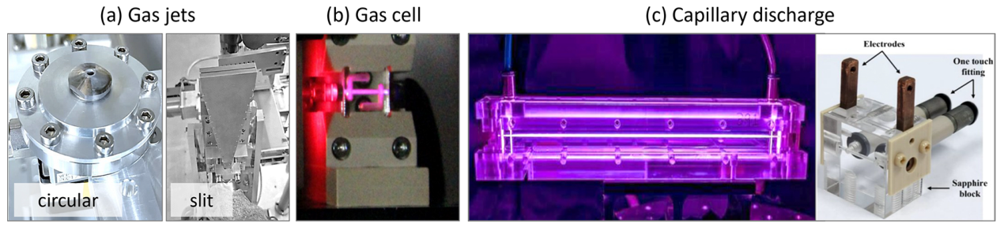
图 08-1：气体靶的三种工程几何。 R067，原Fig.3，PDF第6页；综述中的装置照片汇编。
逐图解读。 （a）左、右照片分别为圆口和狭缝喷嘴，开放几何便于激光与横向探针进入，也把连续供气负担交给真空系统。（b）气室把气体限制在腔体内，激光穿过入口和出口，便于形成较均匀的纵向区域，但孔口、壁侵蚀和失准必须考虑。（c）展示毛细管放电发光和电极、供气接头、蓝宝石块的结构，用预放电制备具有导引作用的等离子体通道，代价是高压与时序同步。三组都是装置照片，没有密度、温度或束能坐标；发光亮度也未做辐射标定，不能据此比较密度或导引效率。原图注注明照片来自ELI-NP及综述引用74—76，因此是2026综述汇编的已有结构，而非三项新性能实验。邻近表格对供气、诊断访问和壁损伤作比较；其典型重复率限制不是喷嘴几何的普适硬上限，高重复率论文还需单独检查气体回收、抽速和实际运行统计。这幅图给初学者一个靶的工程接口地图。R067
R092 将 skimmer/catcher 放到喷嘴附近，用流体设计与装置测试降低高重复率气体负载，同时保留诊断和多束访问空间。它回应连续气流与真空束线兼容问题，贡献不在新加速机制。判断方案要看捕获效率、腔压、对局部密度轮廓的扰动和机械空间；高捕获率如果改变加速区密度，可能抵消便利。库内具体效率来自原有笔记，本次未重跑流体或装置。
R159 用 266 nm、纳秒分辨的 Mach–Zehnder 系统测超临界氦中的致密激光等离子体，分别记录两臂强度校正条纹可见度，再提相位、作 Abel 反演。它展示了一条完整处理链，但局域密度结论依赖柱对称。吸收、折射和碰撞修正是关键限制；短波探针并不意味着百分之一绝对精度。最有用的经验是把图像归一化误差与物理反演误差分别报告。
R185 标定 NIF Kr 线系谱仪的晶体反射、能区、分辨率与 streak 读出链，并用时间积分通道辅助现场交叉标定。谱线展宽可约束密度，卫星线相对强度可约束温度，但先需扣除仪器线宽和响应。标定在 X 射线实验室与最终 NIF 几何之间的传递，是它的方法价值。本次提取 PDF 并核查仪器/标定段落，未复算反射率或温密反演。
图 08-2：晶体谱仪的绝对通量换算。 R185，原Fig.11，PDF第6页；实验室X射线绝对标定。
逐图解读。 横轴是X射线能量keV，纵轴是晶体吞吐转换因子，单位 \(\mathrm{sr\,keV/mm}\)，并带 \(10^{-7}\) 倍率；它来自焦面每毫米的衍射光子强度除以源的每keV、每sr光子强度，所以是带单位的几何/谱响应，不是0到1的量子效率。红、蓝曲线分别为Pilatus测得并修正效率的Ge与石英响应，黑点是另一Amptek探测器在若干位置的独立测量。石英覆盖约13 keV，Ge覆盖约15 keV；带内平台约 \(5\times10^{-8}\) 和 \(1.2\times10^{-7}\)，边缘急降说明同样光子谱不能用全能区单常数换算。黑点与连续曲线接近，使源谱、空间色散和探测效率之间有交叉约束；局部起伏仍可含晶体表面缺陷。它是实验室晶体支路的绝对标定结果，最终NIF记录还要接上streak相机、滤片及几何传递，并非图中已直接测得热斑温密或完整单发谱的不确定度。R185
R206 设计 90° 碰撞几何，以角—能关联区分同一发的碰撞前后电子，减少将不同发次初态差异误判为辐射损失。它属于解析与模拟驱动的测量方案，未给新辐射反作用实验。可行性仍需小发散、源尺寸、重合和足够谱分辨；同发也不自动保证参考部分代表真正受碰撞部分的初态。阅读时应问“哪些电子共享同一个未受扰参考”。
R219 用清华射频直线加速器约 30 MeV 单能束，电荷从 2 到 100 pC，借已校准束流监测器与光学链获得 DRZ 屏响应，同时测发射谱。本次 PDF setup/result 段落与官方原始来源核验了基线。主绿光约 543 nm 的测量与滤光处理很重要，因为相机 QE 随波长变化。该结果不能无条件套给任意电子能量、屏型号、观察角与镜头；迁移到自己的能谱仪要重新折算全光学链并检查局部饱和。
图 08-3：DRZ屏光输出斜率如何变成电荷。 R219，原Fig.4，PDF第3页；RF电子束绝对电荷标定。
逐图解读。 横轴是参考束流监测器给出的总电荷pC，纵轴是校正光学链后的每立体角闪烁光子数photons/sr，注意 \(10^{11}\) 倍率；这里不是原始CCD灰度，也不是photons/s。不同颜色对应PI200、HIGH、PLUS、STANDARD、FINE、HR，误差棒综合束荷波动、光学效率和图像重复测量。六条拟合线在该5—50 pC扫描区间近似线性，PI200最陡，HR最缓，表明选屏会改变电荷换算因子；邻近表格将斜率换成每pC、每sr的绝对灵敏度，PI200与HR约为 \(12.7\times10^9\) 和 \(1.5\times10^9\)。有线性关系仍需确定单位、角分布和光谱校正，不能把某条斜率直接复制到另一相机/镜头。该图属于约30 MeV射频电子束的真实标定，验证的是已用配置与束荷范围，没有验证所有能量、局部面电荷密度或饱和条件；迁移到激光宽谱电子时，应先把屏、角度、QE和完整收光链接回响应模型。R219
R262 以数值场图、非均匀场偏转公式、磁测和激光离子图验证可调漂移段 Thomson 抛物线。它说明恒场模型可能低估低能偏转，能量覆盖与物种分离要联合选择漂移长度。薄/厚箔实验给出了质子截止和多个荷态轨迹，但这些仍不是全空间绝对产额。其最易迁移经验是先验证场图再生成标定曲线，避免从一条漂亮抛物线直接反推全部离子性能。
R275 在约 4.55 MeV、fC 级 LWFA-UED 束线上组合 THz 横向偏转与磁色散，分辨二阶纵向输运的 C 形相空间。相近能散窗移动中心位置，仍能改变束长；因此能散小并不自动束长最短。实践上要联合优化狭缝位置与开口，不能只靠一阶 \(R_{56}\)。所报飞秒分辨率由该束能、偏转和低电荷条件决定，对 GeV 或高电荷不具有直接适用性。
图 08-4：能窗选择改变所测纵向相空间。 R275，原Fig.5，PDF第6页；真实LWFA束流THz诊断与响应重建。
逐图解读。 六幅横轴均为时间fs，纵轴为电子能量MeV；颜色是各图归一化相空间密度0—1，绿色、紫色分别为能量与时间投影，阴影表示200连续发的标准差，不能把峰色读成绝对fC。（a）、（b）、（c）保持约2.8%—2.9% FWHM能散，把窗中心从4.574移到4.554、4.532 MeV；三幅C形结构覆盖的局部斜率不同，RMS束长依次为26±3、35±5、42±5 fs。（d）、（e）、（f）保持中心约4.55 MeV，放宽能散至2.0%、3.8%、4.4%；较宽能窗纳入更多弯曲尾部，束长为27±3、40±4、44±6 fs。对应数值来自同页表格，不是按图片宽度目测。这说明狭缝位置和开口共同决定诊断到的时间投影，束长不是独立于接受度的单一源属性。图是实际THz偏转、色散及响应重建，诊断点略偏离理想全压缩点；不能外推为全部源电子都具有这些束长，也不能直接推广到GeV或高束荷条件。R275
R284 在 ELIMAIA–ELIMED 将能量选择、磁输运和照射场连到 RCF、Faraday cup、双隙电离室等剂量链。照射点谱中心为约 23.45 MeV，仍有有限宽度；上游 RCF 改变下游 FC 接受度，需 Monte Carlo 修正后比较。该工作直接验证低通量 commissioning 剂量，未完成高剂量率 FLASH 或临床终点。它教会我们“参考探测器”也会被前面的测量装置扰动，布局本身要进入响应模型。
R287 把 LWFA、钨转换靶和 X 射线成像放到工业现场，用多月运行、长时束谱、剂量、源尺寸和 CT 验收。相比最佳单发，平台可用日比例、连续工作时间、累计曝光数和实际缺陷分辨更接近应用需求。它提供真实现场无损检测证据，但 CT 结果来自大量多视角累计曝光，不是同分辨率单发实时成像。也不能从工业 X 射线性能自动推导光核或医学能力。
图 08-5：72小时运行的单发与平均稳定性。 R287，原Fig.2，PDF第15页；现场LWFA长期运行测量。
逐图解读。 （A）横轴为0—72小时，纵轴为电子能量MeV，色标是探测谱图标定的pC/mm²；长期主谱带保持在相近区域，但瞬时细条纹仍体现发间波动。图注明确数据按0.1 Hz采样以控制数据量，因此不能据此称每个激光脉冲都被完整记录。（B）左轴为平均能量MeV，右轴为相对束荷a.u.，统计只取大于70 MeV的电子；浅蓝、浅绿散点是单发，细线是10分钟、60个采样发的平均。图注给单发平均能量86.2±1.1 MeV、束荷164±16 pC，对应1.3%、9.8% RMS；平均后降为0.4%、1.9%。平均曲线更平滑说明应用积分时间能降低随机波动，却不会自动消除慢漂移或罕见失效。该图来自工业现场LWFA运行，论证长期输出可用性；它仍不是单发实时CT、全天全部脉冲稳定性或完整可用率统计。比较另一高重复率平台时，必须对齐采样、能窗和平均时间。R287
R309 用衰减光对反向飞秒脉冲做空间与时间对准，结合波前、显微定位、粗延迟和干涉细扫。厚分束片与靶厚造成皮秒级差分延迟，必须在移到真实交互几何时补偿。观察到条纹的时间窗是该光谱/几何的自相关条件，不是普适同步精度。论文验证的是光学准备流程，未产生强场 QED 或逆 Compton 物理信号；粒子源时间抖动还需另测。
R344 展示 AWAKE 十米脉冲放电源，利用长程干涉和 SPS 质子自调制频率交叉诊断。自调制频率 \(f_p\propto\sqrt n\)，故 \(\delta n/n\simeq2\delta f/f\)；频率散布不能直接当密度散布。两种诊断采样横向尺寸不同，线平均与轴心可能不一致。其直接证据是装置、密度时序和驱动质子自调制，未报告该源中的 witness 电子加速；沿长程有等离子体也不自动证明逐段均匀。
R350 用 TREX 早期磁声前沿在 B-dot 阵列的到达时差恢复初始径向密度，低 β 近似给 \(n\simeq B^2/(\mu_0m_iv^2)\)。已知磁张力下，密度大则波前慢；波速就是惯性的编码。Langmuir 探针和线性 MHD 支持中心区域解释。它测的是后续 shock/reconnection 形成前的初态，不能反演任意强非线性层。阈值选取、采样、背景场和声速修正决定实际误差。
R374 实测 100 Hz、连续 10,000 发的 47 MeV/15 pC LWFA，峰能 rms 波动约 1.4%、电荷约 12%。本次 PDF 关键段落和官方摘要一致。本征能散小于 10% FWHM 是响应反卷积后的 95% 上限；不是直接读屏宽度。PCA 显示慢变化占主导，机制模拟又需不同 Ar 掺比才最佳匹配。它证明该时间窗高重复率稳定束流，1 kHz 与 FLASH 仍是待实现前景。
R385 的 LUXE 正式论文更新电子/光子—激光碰撞模式、ELBEX 位置、探测器与安装计划。16.5 GeV 电子、40→350 TW 激光及预期产额描述计划参数与模拟，不是已取得物理数据。原型束测是实际进展，却还需完整束线背景、同步、强度和交叉标定。这类论文最重要的阅读工作是给每张图标注“布局、模拟、原型、计划或观测”，而不是把正式发表误作实验完成。
R393 用闪烁屏与分段 Cherenkov 在 ARES/FACET-II 束测。屏线性偏离约小于 3%；straw 最低 \(5\sigma\) 电荷约 \(0.5\pm0.2\) pC，即约三百万电子，仍未满足所有低通量需求。九天运行 LED 信号下降逾半，显示传感器退化需要在线处理。本次 PDF 与官方来源核验这些数值。双读出可查系统差异，但束宽不一致和本底尚未闭合；原型可行性不能写成 LUXE 最终全谱分辨率已经达到。
图 08-6：束测线性需要同时看拟合残差。 R393，原Fig.8，PDF第12页；ARES原型探测器真实束测。
逐图解读。 上图横轴为束团电荷pC，纵轴为相机ROI积分CMOS计数并带 \(10^6\) 倍率；蓝、橙、绿分别为DRZ High、Plus、Standard，实线为允许非零截距的线性拟合。High最亮，但这里的斜率包含屏、收光和相机共同响应，不能直接当材料的普适光子产额。下图用相同电荷轴，纵轴为测量值除拟合值的无量纲比；围绕1的小偏离比“上图几乎直线”更直接地检验线性。邻近正文给偏离小于3%，包括横纵误差后的斜率相对不确定度约1.3%；两者分别描述线性残差和校准斜率，不能混成同一个绝对误差。拟合未强制过原点，小正截距与本底有关。它是真实ARES原型束测，已支持该光学配置的电荷换算，却不是LUXE正式非线性Compton谱；全束线本底、空间均匀性、长期退化和另一读出链仍要分别验收，也不能把局部线性推广到更高通量的所有工作条件。R393
X 射线结构诊断包含动态压缩粉末衍射分析 R152、单发强度相关成像 R162、吸收 K 边约束谱模型 R294、激波辐照与流体对照 R353、SRS 的 K 壳谱代理 R360。衍射峰移、线展宽、吸收边和辐照灰度对应不同物理量；每一种都须区分仪器响应、状态模型和空间/时间积分。
粒子与束流路线还包括 scintillator/SiPM gamma 能谱 R163、非冗余孔径束尺寸 R226、磁选择高电荷束 R310、beam ROI 分割 R315、快中子闪烁 R377、多丝探测器自标定 R378。图像分割可以自动选区域，但也会改变尾部接受度；新材料高光产额也不能独立给出完整中子效率和 gamma 抑制。
平台路线包括超短脉冲列 R129、全反射导引 R094、实验 flying-focus Thomson R217、稳定双激光 gamma R138、高功率 EMP 控制 R090、中等重复率离子/中子源 R101。这些工作改变的是驱动时空结构、运行可用性或二次源条件，不宜只以激光峰值功率排序。
面向用户设施可接着读首个 plasma X-FEL 试验路线图 R364、IFMIF/EVEDA 进展 R365、电子器件重离子设施概念 R313。路线图和概念设计提供约束与目标，已运行设施提供实际可靠性；两者都重要，但证据强度不能按文件篇幅或期刊级别混同。
单发 peak power 不等于平均功率：\(P_{avg}=U_Lf_{rep}\)。70 mJ 在 100 Hz 对应激光脉冲平均能量流约 7 W，但这一简单乘积不包含电光效率、泵浦散热和靶后辐射功率。进入 kHz 后，供气、泵速、束流 dump、碎屑和探测器积累剂量都可能成为瓶颈。R092、R374 给出的正是不同运行环节的限制。
统计也改变了。若逐发数据相关，平均值的不确定度不再是 \(\sigma/\sqrt N\)。有效独立样本数可近似为
\[ N_{eff}\simeq\frac{N}{1+2\sum_{k\ge1}\rho(k)}, \]
\(\rho(k)\) 是第 \(k\) 个滞后的自相关，公式在平稳、相关和可估计的条件下适用。十万发记录中若慢漂移很强，独立样本可能远少于十万。应分别报告逐发 rms、滑动平均、漂移频谱和运行可用率，说明剔除了多少发、失败如何定义；不能将多发平均稳定度标作每发稳定度。
同步和定位也不能只报最好一次。若横向误差 \(\delta x\) 接近腰斑 \(w_0\)，强度重合随 \(e^{-2\delta x^2/w_0^2}\) 下降；若延迟接近脉宽，碰撞体积下降。实际量又与粒子束尺寸和脉宽卷积。因此应测误差分布、慢漂移和高功率条件的变化。衰减光对准可建零点，高强度热漂移与等离子体折射仍需实际运行反馈。
| 目标 | 常用路径 | 最容易误读的地方 | 最低限度的独立检查 |
|---|---|---|---|
| 电子能谱/电荷 | 磁谱仪+闪烁屏/电流计 | 屏宽、本征能散、接受度混同 | 已知束能、电荷、响应/饱和 |
| 离子谱/物种 | Thomson 抛物线、RCF | 小孔谱当全空间产额 | 场图、物种响应、角分布 |
| 局域密度 | 干涉+Abel/断层 | 线积分当局域密度 | 几何对称、折射、第二诊断 |
| 纵向相空间 | 偏转+能量色散 | 时间分辨直接外推到别的束能 | 偏转斜率、无偏转尺寸、仪器核 |
| 温密状态 | X 射线线形/散射 | 谱拟合唯一、模型无偏 | 响应标定、多模型/后验预测 |
| 应用剂量 | FC/电离室/RCF/输运 | 粒子数或平均率当绝对剂量 | 标准校准、复合、探测器扰动 |
入门先练三次计算。第一，用 \(p=|q|B\rho\) 算已知电子能量的半径，并解释源发散为何造成能量误差。第二，用相位关系把一条线积分密度换成弧度，显式写 m⁻³/cm⁻³ 的 \(10^6\) 换算；再说明为什么未有对称性就不能除以“估计长度”得到局域峰值。第三，给定每发电荷、粒子能量和受照质量，先算全部沉积的剂量上界，再列出实际输运需要扣除什么。
随后画一条标定链：已知粒子束→材料响应→光学→相机→数值积分→物理单位。每一箭头写可测量参数、来源和不确定度。乘积模型中的独立小误差可按平方和传播；相关误差需协方差，不能重复计入或当独立消掉。如果缺一个绝对参考，就诚实报告相对量并制定校准方案。
真正参与实验时，优先记录暗场、平场、空炮、无激光/无束本底、已知参考、剂量历史和逐发同步编号。数据处理要固定 ROI、阈值、滤波、背景和反卷积规则，并保留原始图。删去坏发会改变平均产额，异常也可能正是物理机制改变的证据，应分别提供全样本与质量筛选样本结果。
2026 年本库的共同前沿是将平台验收从源端单发峰值扩到连续运行、合成诊断、绝对计量和用户端终点。真正成熟的标志是能解释每个读数的单位、误差、接受度和漂移，且别人按同一链能做比较。该判断为本综述的综合归纳；并不表示所有新平台已具备工业或医学成熟度。
以 R374 的 15 pC、47 MeV 为教学代入，电子数约为 \(N=Q/e=9.4\times10^7\)。将谱暂时近似为 47 MeV 单能，束团总动能约为 \(N\times47\,\mathrm{MeV}=0.705\) mJ；100 Hz 对应约 70.5 mW 的束流平均动能功率。激光平均能量流为 7 W，两者约百分之一的比例只是这个近似下的束流能量份额，不是完整激光到应用效率测量，因为接受度、低能尾和所有传播环节都没有纳入。
若再假想全部束能均匀沉积于 1 g 物体，每发剂量上界为 \(0.705\,\mathrm{mJ}/10^{-3}\,\mathrm{kg}=0.705\) Gy。实际薄样品可能透过大量电子，转换靶会产生不同粒子谱，束斑和扫描又决定局部质量；因此不能把这个算术上界当作论文剂量或 FLASH 证据。真正的剂量值应由响应经校准的探测器与几何明确的输运模型得到。R284 的价值恰恰在把这些步骤落到照射点，而非只给源端乘法。
本次原图增补的范围：
本章新增6幅论文原图区，来自R067、R185、R219、R275、R287、R393六篇。2026-10-01针对图注、邻近标定/统计段落与源页面复核，并检查最终裁图。照片汇编、实验室标定、束流诊断重建、现场运行与原型束测均保留其证据层；未进行新的独立标定或实验。逐图来源、PDF页码、裁图坐标和哈希见data/figure-assets/的ch08侧录，选择与未用项见原图选择方法。
截止 2026-09-30，仓库综合分类有 75 条，包含低温放电、空间等离子体、原子过程、辐射与核诊断等交叉文章。本章把“共同物理语言”组织成一条教学路线；ICF 冲击/燃烧详见第 04 章，磁面约束/控制详见第 07 章，PIC 算法主线详见第 05 章。这里着重这些章节以外的波、开放/弱电离体系、磁重联、相似与反演。
等离子体是带电粒子与自洽场共同演化的物质系统。激光加速、托卡马克、推进器、微波源、超冷原子电离和尘埃晶体，温度与尺度可能差许多数量级，但都要面对屏蔽、集体波、能量输入、边界损失和模型闭合。综合章节的目的，是学会辨认这些共同方程在不同参数区里保留了什么，而不是把所有论文解释成激光束流应用。
本库标题路由存在明显噪声。例如 R354 是核磁偶极强度，R373/R389 是光中子截面，R368 是慢正电子慢化，R378 是多丝雪崩探测器校准，R351 是结构化光阴极束团动力学。它们提供核、束流或检测方法，不能因为核、plasma 或模拟关键词就视作“等离子体输运最新证明”。本章把这类条目放到交叉工具位置，主线选取确实研究波、源、输运与场动力学的工作。R354 R373 R389 R368 R378 R351
也要避免“低温”的误会：低温放电通常是电子数 eV、气体近室温的非平衡系统；超冷等离子体由超冷原子电离产生，初态与关联完全不同；暖稠密物质却可能在高密度下数十 eV。温度名称不能代替密度、碰撞性、电离度和分布函数。R355 R096 R033
教学推导，静电、均匀等温电子与固定离子背景。 弱电势下电子 Boltzmann 响应为 \(n_e=n_0\exp(e\phi/T_e)\simeq n_0(1+e\phi/T_e)\)，这里 \(T_e\) 用 J。Poisson 方程给
\[ \nabla^2\phi=-\frac{e(n_i-n_e)}{\epsilon_0} \simeq\frac{\phi}{\lambda_D^2}, \qquad \lambda_D=\sqrt{\frac{\epsilon_0T_e}{n_0e^2}}. \]
点电荷的远场势因而从 \(1/r\) 变为 \(e^{-r/\lambda_D}/r\)：粒子重排让局部电荷被屏蔽。推导用了小电势、近热平衡和可用连续密度等假设；鞘层、非 Maxwell 尾、强耦合或量子简并时不能直接套。一个 Debye 球里粒子数 \(N_D\sim n\lambda_D^3\) 很多、系统尺度远大于 \(\lambda_D\)，才通常有弱耦合集体描述的清晰尺度分离。
更一般的起点是分布函数 \(f_s(\mathbf x,\mathbf v,t)\)，满足
\[ \partial_t f_s+\mathbf v\cdot\nabla f_s+ \frac{q_s}{m_s}(\mathbf E+\mathbf v\times\mathbf B)\cdot\nabla_vf_s=C_s+S_s. \]
\(C_s\) 是碰撞，\(S_s\) 是电离、复合、注入与损失源项。无碰撞称 Vlasov；有中性气体就要审能量相关碰撞截面和化学通道。乘 \(1,m\mathbf v,mv^2/2\) 后积分，依次得到粒子、动量与能量方程。压力依赖二阶矩，能量输运依赖三阶热流，三阶又依赖四阶，因此流体模型必须在某处闭合。截断省计算，却可能漏掉非热尾与共振；保留更多矩也不自动保证闭合正确。R359 R107
重点 1：非线性闭合研究针对的是线性模型的精确响应。 R359 从解析矩递推构建 EKR 和缩放等变神经闭合，在 bump-on-tail 与 slab-ITG 的单模线性问题中可大幅降低增长率误差。其“非线性”指最高矩是低阶矩的非线性函数，不表示已经模拟了完整非线性湍流。单模时矩比值可恢复本征频率，多模叠加则未必；网络还缺一般因果性与稳定保证。读它最有用的是理解闭合的目标范围，并区分本征值准确、时域稳定和实验输运准确三个验收条件。R359
重点 2：Weibel 种子到 dynamo 的桥梁由闭合控制。 R107 用保留各物种压力张量的 10-moment 无碰撞流体，在离子/电子质量比 100 的非 pair 条件下追踪种子磁场到湍流放大。热流闭合改变压力各向同性化与有效磁雷诺数，系统可表现得更接近动理学或 MHD 型 dynamo。这是作者约化模型研究，不能说已用真实质量比、全动理学和天体观测确认完整路径。它告诉我们“多保留一个压力张量”并不足以解除闭合敏感性。R107
教学推导：Langmuir 波。 对均匀静止电子小扰动，连续方程为 \(\partial_t\delta n+n_0\nabla\cdot\delta\mathbf u=0\)；线性动量为 \(m_e\partial_t\delta\mathbf u=-e\delta\mathbf E-\nabla\delta p/n_0\)。用 Poisson 消去电场，并对沿传播方向的温暖 Maxwell 电子取 \(\delta p\simeq3T_e\delta n\)，令扰动 \(e^{i(kx-\omega t)}\)，得到
\[ \omega^2\simeq\omega_{pe}^2+3k^2\frac{T_e}{m_e}, \qquad \omega_{pe}=\sqrt{\frac{n_0e^2}{\epsilon_0m_e}}. \]
这就是高相速度、长波 \(k\lambda_D\ll1\) 条件下的 Bohm–Gross 近似；\(3T_e\) 压力闭合与此条件相关，不能覆盖任意相速度。冷电子极限的振荡频率由电荷位移产生的回复力给出；温暖修正来自压力。但速度接近 \(\omega/k\) 的粒子会与波持续交换能量，流体压力闭合不足以给完整 Landau 阻尼。阻尼源于速度空间相混合和共振响应，不需要显式碰撞；总粒子—场能量仍可守恒。速度分布在共振附近的斜率和因果解析延拓决定增长或阻尼。R359 R386
教学推导：Alfvén 波。 对背景场 \(B_0\mathbf e_z\) 的小横向扰动，线性 MHD 给
\[ \rho\partial_t\delta\mathbf u_\perp= \frac{B_0}{\mu_0}\partial_z\delta\mathbf B_\perp, \qquad \partial_t\delta\mathbf B_\perp=B_0\partial_z\delta\mathbf u_\perp. \]
对时间再求导并代入，得 \(\partial_t^2\delta\mathbf u_\perp=v_A^2\partial_z^2\delta\mathbf u_\perp\)，\(v_A=B_0/\sqrt{\mu_0\rho}\)。磁张力是弹性，质量密度是惯性。垂直传播的简单快磁声分支则有 \(v_{ms}^2=v_A^2+c_s^2\)；斜传播需完整角度相关色散，不能把这一式用到所有波前。离子惯性长度 \(d_i=c/\omega_{pi}\) 与 \(k_\perp d_i\) 判断 Hall 修正是否重要。R350 R358
重点 3：从快磁声速度反演密度的 TREX 实验。 R350 让 B-dot 阵列追踪重联层形成前的早期波前，在已知背景场、低 beta 条件下反演初始密度。最简式为
图 09-1｜从磁声波速度反演密度：相符区与检测下限。
原 Fig. 5（PDF 第5页）单图横轴柱坐标半径 \(r\)，单位m；纵轴数密度 m⁻³，采用对数刻度。橙线与阴影是四发放电逐炮利用波前速度反演并插值的密度及一倍标准差；绿点来自Langmuir探针，每个位置测量对应不同炮次。中心约 \(10^{18}\) m⁻³范围两者相符，说明在已知背景磁场、温度和MHD近似下，磁声速度能约束密度；这里不是光学直接拍到粒子数。半径增大时密度迅速下降，两法误差增大，橙绿曲线在外侧的偏离不宜立刻解释成未知输运。绿虚线检测下限由Debye长度与探针尖间距限制，橙虚线由B-dot间距、采样频率及波传播速度限制：密度低时波速更高，相邻探针可能同一采样时刻看到波前，导数无法可靠给出速度。图的作用是界定在哪个密度域得到交叉验证，不是证明整个半径都测准。逐炮全剖面相对机械扫描有优势，但阈值取样、探针位置、温度估计及场标定仍进入误差；两种方法也并非完全无共同模型假设的真值比较。纵轴十倍刻度也使低密区的相对偏差显得较小，需结合检测下限读图。 R350
\[ n_0\simeq\frac{B_0^2}{\mu_0m_iv_{\rm meas}^2}. \]
这是实测到达时差加色散关系的反演，不是直接数粒子；可移动 Langmuir 探针提供交叉比较。实验 \(\beta\sim0.1\)、约 4 eV 的条件使有限声速修正相对小，但作者估计的温度误差约 2% 只适用于该区间。波型误认、磁场不均匀、成分未知或波前非线性都可能系统性改密度，且它测的是初始背景，不是重联层内部瞬时密度。R350
重点 4：同向 Alfvén 波也能耦合，但证据不是完整湍流谱。 R358 在 LAPD 发射 75/100 kHz 波，反向与同向相互作用均出现二次非线性模，175 kHz 和频响应与主波幅乘积相容。理想不可压 MHD 的 Elsasser 变量 \(\mathbf z^\pm=\mathbf u\pm\mathbf B/\sqrt{\mu_0\rho}\) 含非线性 \(\mathbf z^\mp\cdot\nabla\mathbf z^\pm\)，所以最低阶需要对向波；同向耦合则与有限离子惯性尺度的二阶 Hall-MHD 项相符，并经作者 3D hybrid 模拟比较。能量向高 \(k_\perp\) 移动支持级联相容性，尚不是稳态惯性区或普适谱律。该实验把空间等离子体里难分离的机制变成可控测试，外推仍需匹配无量纲区间。R358
图 09-2｜和频模依赖双波幅度：排除单天线谐波的关键比较。
原 Fig. 2（PDF 第4页）六图均为实验幅度扫描，横轴75与100 kHz基波磁场振幅之积，单位G²；纵轴为所选模式磁场幅度，单位G，两轴均取对数。上排(a–c)为反向传播，下排(d–f)为同向传播：第一列150 kHz、第二列200 kHz、第三列175 kHz。150与200 kHz分别是单基波二次谐波，(a/b/d/e)呈菱形散布，因一台天线增强而另一台变弱也可得到同一横轴积，却不是同一谐波振幅。和频175 kHz的(c/f)则紧贴一条幂律，说明它确实依赖两波共同存在；反向/同向拟合指数约0.86/0.73，相关系数约0.994/0.97。指数接近但不等于理想二次响应对幅度积的线性指数1，作者指出效率减弱及额外耦合路径等可能性，不能把数值四舍五入为精确理论验证。各图红线为幂律拟合，图内\(m\)误差是拟合标准误，\(r\)范围为95%置信区间。该比较支持两流体尺度下同向波也有非线性耦合；它尚未单独证明充分发展的湍流、恒定惯性区通量或任意MHD尺度同向相互作用。波幅用磁场扰动的绝对值标注，实验斜率检验的是响应标度；相位、波数匹配及能量方向仍需要论文其他观测共同约束。 R358
相关波研究还包括 R042 的相位控制双色 THz、R190 的红外光子减速 THz、R299 的 flying-focus 波前整形与 R048 的有质动力等离子体透镜。这些可放在“电磁波与等离子体相互整形”的地图上，但射频 MHD 波与相对论激光波不是一套可直接移植的参数；诊断和辐射应用的细节应回对应主章。R042 R190 R299 R048
磁重联把磁场连接关系改变并释放磁能。理想 Ohm 定律 \(\mathbf E+\mathbf u\times\mathbf B=0\) 下磁通随流冻结，必须有电阻、电子压力张量、惯性或其他非理想项让连接改变。看到两个磁泡相遇并不能独自证明重联能量分配或速率，必须定位电流层、重联电场、入流/出流以及粒子能量变化。
教学推导：Sweet–Parker 的量级。 对长 \(L\)、半厚度 \(\delta\) 的不可压稳态电阻电流层，质量守恒给 \(v_{in}L\sim v_{out}\delta\)，磁能转动能给 \(v_{out}\sim v_A\)。电场匹配为 \(v_{in}B\sim\eta J\sim\eta B/(\mu_0\delta)\)，这里 \(\eta\) 是电阻率，单位 \(\Omega\,\mathrm m\)，不是磁扩散率。于是
\[ \frac{\delta}{L}\sim\frac{v_{in}}{v_A}\sim S^{-1/2}, \qquad S=\frac{\mu_0Lv_A}{\eta}. \]
长系统高 \(S\) 会预测很慢重联；plasmoid、不稳电流层、Hall/电子尺度等可破坏这些假设。要讨论“快重联”，先说明相对 \(v_AB\) 的归一化、系统是否稳定、时间窗与边界，而不是把所有电流片峰值比较到一条曲线。R384
重点 5：PINO 在全局磁通上准，电流上仍更难。 R384 用 34 条二维电阻/黏性可压缩 MHD 轨迹训练连续时间 FNO/PINO，预测磁通函数以保持 \(\nabla\cdot\mathbf B=0\)。在两个留出 \(S\) 上磁通误差约 1%，谱电流约 7.5%；没有电流监督时磁通更准，二阶导数电流却可差很多。高 \(S\) 晚期 plasmoid burst 不在训练窗时，重联率误差显著升高。它说明物理残差、导数和任务指标必须共同检查，不能把低场误差升级成高保真全阶段重联。本次没有运行 DNS 或网络。R384
图 09-3｜重联代理的物理指标：留出参数与时间窗都要交代。
原 Fig. 8（PDF 第11页）三图从左到右为 \(S=1000\)、训练值9467、留出值约 \(1.1\times10^4\)（图内具体标11115）。横轴 \(t/\tau_A\) 是Alfvén时间归一化，纵轴电流层平均 \(E_z\) 为作者无量纲重联率，不是SI电压。黑线为2049²网格DNS内部记录，红圆为仅在513²网格训练的PINO直接查询2049²网格所得；因此“同网格对照”不意味着曾用该高网格训练。左图初态松弛后进入较平稳低值，中右图显示振荡趋稳；三图不同纵轴范围，不能凭高度比较绝对重联速度。灰区 \(t\le0.25\) 被排除在图例相对 \(L_2\) 误差外，报告3.0%、2.6%、2.8%仅适用于后续窗口。它同时说明参数插值与分辨率转移的可行性，但最高\(S\)晚期plasmoid burst没有画在这里，正文另报相关误差升至32–42%。导数诊断还须与求解器内部记录比：粗网格有限差分即使用于DNS本身也会带来误差，不能全部归咎网络。此图属于二维电阻MHD数值基准，不是无碰撞重联实验或本次独立复现。留出数值仍处于训练参数区间内部，因此这属于插值检验；“没有用于训练”与“超出所有训练条件”的物理外推应严格区分。 R384
R300 的 electron-only 重联出流下混合漂移不稳定性和 R325 的 MRX 电流层半碰撞动理学，研究的是电阻 MHD 不包含的尺度。第 04 章的 R290/R295 是 HED 可控平台；本章只建立共同框架，不重复其装置细节。不同条目都含 reconnection，却可能分别在模型、实验与诊断反演层上。R300 R325 R290 R295
重点 6：辐射湍流的能量与角分布要一起读。 R372 用二维电子—正电子 EPOCH 衰减湍流追踪粒子与同步辐射，发现冷却不只改能谱，还选择性耗散垂直动量、改变俯仰角随能量的标度。弱/强冷却的低能分支不同，高能曲率漂移又可让俯仰角上升。这里的 pair、二维、弱激发和经典辐射阻尼是边界，不能直接当任意天体源辐射模板。R339 的冷却不稳定两相结构与 R382 的 QED 事件采样补充另一种辐射反馈/计算层次，辐射应用详见第 02 章、强场机制详见第 03 章。R372 R339 R382
开放系统既有粒子流入流出，也有壁面、电极和中性气体持续交换能量。关闭边界或只用周期盒常有助于研究局部模，但不能直接预测放电电流、羽流和寿命。尤其“异常输运”只是指超过所选经典模型，并不是神秘新力；缺失的涨落、边界、二次发射或碰撞都可能参与。
教学推导，磁化等温电子与冷离子的简单磁喷管。 磁通管截面积 \(A\propto1/B\)，稳态连续性 \(nuA=\mathrm{const}\)，所以 \(nu/B=\mathrm{const}\)。电子压强沿场产生双极电场，简化离子动量为 \(m_iudu=-T_e d\ln n\)。用连续式消去密度，得到
\[ \left(u-\frac{c_s^2}{u}\right)\frac{du}{ds} =-c_s^2\frac{d\ln B}{ds},\qquad c_s^2=\frac{T_e}{m_i}. \]
当 \(u=c_s\)，平滑跨声速要求右侧也为零，解释喉部/磁场极值条件。离子加速能来自电子压强经电场转移，磁场自身不做功。这个示范忽略电子动力学、温度变化、旋转和场自洽重塑，不能直接代替真实喷管解。R149
重点 7：喷管平衡不能只给一条外磁场。 R149 将跨声速流与带惯性力的广义 GS 结合；在轴对称、无电流/无方位旋转特殊情形，磁面上的流速受局部磁场强度控制，磁面又被流惯性重塑。它提醒“给定场上追粒子”与“流和场自洽”是不同模型。开放镜、推进与先进排热几何可借这一思想，真实脱离、湍流和壁面仍需另审。R149
重点 8：多镜端塞依赖速度选择，不等于已装成反应堆。 R167 的 travelling rotating magnetic field 利用多普勒移频的回旋共振与相空间混合抑制开放端损失，单粒子轨道给半动理学率方程系数。与强加热方案相比，某些模型限制下可主要重排相空间、降低能耗。但实际感生电场、天线、等离子体屏蔽和响应还需实验；理论端塞约束增强不能直接当 Lawson 达标或净聚变电站。R167
重点 9：空心阴极的粒子履历把“哪里加速”问清楚。 R347 的 0.8–3.5 A Xe 羽流实验测高能离子与宽带涨落，再用二维轴对称静电 WarpX 的代表算例追离子出生、轨迹与积分功。完整时变场更易把指定出生队列送入高能区，许多高能流出离子来自羽流内电离。它没有把每个实验工况逐点重建；双探针相位图还受混叠影响，不能唯一认定能量来自某种离子声模。做法最值得借鉴的是对同一出生队列比较时变、平均和冻结场，并用 \(\Delta K=q\int\mathbf v\cdot\mathbf E\,dt\) 作能量来源审计。R347
图 09-4｜同一出生队列：时变场如何改变高能尾与逃逸。
原 Fig. 11（PDF 第13页）图注按(a–c)指从左到右三面板，图中本身未另印字母。作者令同一百万个KDE出生粒子在完整PIC时变场、时间平均场、冻结场及仅涨落场中传播。左图横轴末态能量阈值 eV，纵轴存活函数 \(P(K_f>K_0)\)：完整时变场保留宽尾，平均/冻结场在约50–100 eV迅速衰减。中图横轴四能量阈值，纵轴比例%；大于50 eV分别73.0%、7.2%、8.4%、47.0%，展示平均场无法重现同一队列的高能轨道。右图只在 \(K_f>50\) eV条件下，纵轴逃逸族比例%，蓝/橙/绿为上游\(z_{min}\)、下游\(z_{max}\)、径向\(r_{max}\)，灰为结束时仍活跃。平均场几乎全部高能离子回上游，而完整时变场分布于多条路径。它是受控敏感性试验，改变场也会改变轨迹，所以四组结果不能相加解释成能量贡献分解；仅涨落场也不是独立自洽等离子体解。73%尤其不是实验羽流高能离子占比，和瞬时自洽PIC的11.87%属于不同统计群体。真正机制还需轨迹积分功与空间出生数据支持，不能由这张图唯一归因某种离子声波。右图灰色仍活跃群体并未自动失去高能，只是尚未到达吸收边界，有限传播终止时间会影响各逃逸族份额。 R347
重点 10：Hall 推进器的净输运出现在近壁路径。 R370 的作者 3D PIC 包括电离、中性演化、介质充电、二次发射与开放羽流。时间/方位平均的密度—电场相关揭示出口附近持续近壁通道，而非均匀铺满截面的迁移率。拓扑跨几个边界处理保持，但绝对迁移率、高波数谱和晚期收敛仍有限制。真实推进器的整环曲率也被局部扇区近似简化。它是作者模拟发现，不是本次或论文已经直接在整机测到两条电流通道。R370
图 09-5｜瞬态波动平均后留下近壁净输运足迹。
原 Fig. 8（PDF 第13页）六面板的列依次为D固定电位壁、C陶瓷介质壁、\(O_{loadC}\)介质壁与开放羽流组合；上排是时间与方位平均的 \(\langle n_eE_y\rangle\)，色标乘 \(10^{20}\) V/m⁴，下排有效垂直迁移率 \(\mu_\perp\)，单位m²/(V·s)。所有横轴\(z\)、纵轴\(x\)都是网格索引，不能当毫米；白/黑曲线是磁力线结构。上排三种边界均在出口附近的内外壁邻近形成两条较亮带，核心较弱，说明净相关并不均匀遍布横截面；下排相应负迁移率结构更明显。负号遵从作者定义，表示电子跨场向阳极输运，不是负耗散定律或器件功率增益。时标39.505 μs对应代表性晚期窗口，200个样本平均滤掉快速EDI振荡，留下非零输运；瞬时单幅波纹无法代替此平均。图支持多个边界处理下拓扑相似，不证明绝对迁移率已网格/时长完全收敛。分母含局部场和密度，弱场区的比值解释尤需谨慎；局部方位扇区、固定背景磁场及开边界也限制整环推广。六图均为作者3D PIC诊断，尚不是整机电子通道的直接观测。同样的两带位置可以与不同绝对强度并存，故边界鲁棒性需同时报告拓扑与幅度。 R370
R348 的 Vlasov plasma-wall 代码适合研究低噪声相空间和壁过程，但给出框架不等于所有 sheath/化学已验证。R350 的波速密度法、R347 的轨迹功、R370 的涨落相关提供三种“从观测或场履历辨认输运”的视角，不能被一个有效扩散系数完全替代。R348
教学推导：最简 Bohm 入鞘条件。 取冷单电离离子、Maxwell 电子，鞘边电子密度 \(n_e\simeq n_0(1+e\phi/T_e)\)，负壁势下离子加速且通量守恒。能量式 \(m_iu^2/2=m_iu_0^2/2-e\phi\) 给 \(n_i\simeq n_0[1+e\phi/(m_iu_0^2)]\)。要让负电势区电子减少得足够快、形成正空间电荷，需 \(m_iu_0^2\gtrsim T_e\)，即 \(u_0\gtrsim\sqrt{T_e/m_i}\)。它是最简鞘判据，温离子、多组分、二次发射、磁斜入和非 Maxwell 电子会改变条件。
弱电离放电中，电子加热—碰撞电离—带电密度—负载阻抗会反馈到电源；只规定一个固定电场常漏这条链。离子在壁上复合、二次电子离开壁、中性粒子回流，均可改收支。因此功率应分别记端口输入、导体损耗、电子加热、离子/壁能流和辐射，而不是只给峰值电子温度。R355 R176
重点 11：phasor–PIC 把电感与电容反馈同时接回电路。 R355 联立二维轴对称 implicit PIC/MCC、每匝线圈电流/电位和射频网络：感应电流回馈反电动势，Poisson 同一离散 Gauss 通量给表面电荷，再取基频位移电流。这样可以审查真空互感或窗口电容是否双计数。无粒子制造解约二阶收敛、作者 GEC 算例功率平衡残差约 0.4–0.5%，说明装配与收支有可信基准；基频相量、每 RF 周期更新、轴对称与局部集肤近似仍限制快瞬态和三维。历史密度比较不是已与硬件电源双向实时闭环。R355
图 09-6｜端口功率不全是电子加热：双向场电路的能量账。
原 Fig. 14（PDF 第30页）保留(a–d)：上排目标端口60 W，下排100 W。左列(a/c)横轴RF周期数，纵轴完成周期的功率 W；黑线总端口功率，蓝虚线感应耦合、橙点划线电容耦合、绿点线铜损。启动时各项迅速改变，随后总端口落到灰水平目标，感应项缓慢增长、铜损和电容项调整，说明不能把发生器端口输入直接全赋给等离子体。右列(b/d)只看周期1901–2000，纵轴各项相对其自身窗口平均的偏差 W；四曲线不是共同减去总功率均值。电容通道波动较大而铜损较稳，60/100 W的统计幅度也不同；所有曲线未平滑，保留PIC统计与负载反馈。左灰竖带与右图对应同一稳态统计窗，便于把启动瞬态和周期平均分开。论文特别提醒启动期电容曲线是周期封闭的端口功，稳态加热解释需结合其能量定义，不能把每个瞬态值都读成即时电子耗散。图论证双向场—电路耦合的分项收支与稳定工作点，仍是轴对称、基频相量的作者模拟，没有展示硬件网络实时闭环或高次谐波全部能量。R355
重点 12：虚拟临界耦合靠波形而非固定匹配。 R176 用指数增长微波驱动，在过耦合谐振器中使入射与返回场瞬态相消，改善反射与点火储能。论文实验展示动态匹配的可行性，既有笔记报告特定配置的最高储能约常规临界耦合四倍；本章不把这个值推广到任意源。等离子体点火后负载改变、窗口与导体损耗仍须跟踪。与 R355 对照，一篇主动设计驱动时间波形，一篇求解双向负载，都是电磁源工程里“只看稳态阻抗不够”的例子。R176
重点 13：尘埃二聚体增加了取向自由度。 R221 的分子动力学研究带电二聚体在径向约束与周期体相中的排列，粒子数增长可形成不同环状和取向结构，位置关联与取向关联耦合。若把二聚体都当点粒子，会丢掉旋转、各向异性相互作用与缺陷结构。它是理想化模型基线；真实尘埃的充电涨落、中性阻尼、wake 和电极鞘层需另加，不能仅由模拟有序图就声称实验已能精确组装。R221
重点 14：超冷 Rydberg—等离子体转换并非低温放电。 R096 在 \(^{87}\)Rb Bose–Einstein 凝聚体用单个飞秒脉冲，跨两光子电离阈值调节初态自由/激发电子，直接测释放电子动能并与粒子级 MD 比较。宽带激发可跨过窄带 Rydberg blockade 的密度限制；作者把电荷不平衡识别为稠密 Rydberg 气向超冷等离子体衰变的重要驱动。这是实验结合模型的多体研究，不是把中性气体电离截面换到 ICP 就可复用的机制。低温、强关联和超快初态制备分别控制不同尺度。R096
重点 15：广义相似从方程出发，而不是只缩图。 R343 以 Boltzmann–Maxwell 的尺度对称性统合多个受控系统。无碰撞例子中，令缩小系统尺寸为原系统的 \(1/k\)，则时间同样缩小，速度不变，电磁场放大 \(k\)，带电密度放大 \(k^2\)。这样 \(\omega_{pe}\) 增为 \(k\) 倍、\(\lambda_D\) 缩为 \(1/k\)，维持时间/长度相对尺度；代回 Vlasov 与 Maxwell，各项有一致缩放。加入碰撞后中性密度、截面、组分和电离度要另外匹配，固定壁材、原子能级或辐射可破坏相似。作者 PIC/fluid 给四类数值例子，不是“任何实验缩小都会相同”的定理。R343
重点 16：PhySKIP 用约束重建与回退限定时间跳跃。 R369 的小 CNN 只预测物理短步之后的状态修正，Poisson/外电路重建场，周期重锚、非负性/收支检查与回滚限制漂移。作者在固定一维氮气漂移—扩散模型上报告约数倍 CPU 加速；不包含模型加载与诊断成本，且展示候选全被接受，所以回退机制本身还没有被压力测试充分检验。它并不是一般 PIC 时间步稳定限制已被取消。其可借鉴原则是让学习只负责未受约束部分，把必须满足的方程重新求解。R369
重点 17：CTS 贝叶斯反演的“最可信”只在候选集合内。 R386 用群体退火同时估计非 Maxwell 分布参数与模型证据，在合成三 Maxwell 和 super-Gaussian 光谱中比较单到四分量。更多分量可稍微降低残差，但证据惩罚不必要自由度，偏向能解释数据的较简单模型。峰不是分布函数的直接照片：介电响应、色散与 Landau 阻尼也生成/移动峰。作者使用准稳态前向模型与稳定性约束，真实仪器函数、杂散光、空间积分和动态不稳可能改变结果。因此“找到正确分布”应限定为给定模型集与合成数据的恢复，而非直接观测真实尾。R386
可把贝叶斯逻辑写成教学式 \(p(\theta|D,M)\propto p(D|\theta,M)p(\theta|M)\)，模型证据 \(p(D|M)=\int p(D|\theta,M)p(\theta|M)d\theta\)。最小残差只看一个最优点，证据比较整个先验体积里有多少参数能合理解释数据；所以结果也会随先验范围变。拟合不确定性与模型缺项必须分开，精确后验不能证明候选族已包含所有真实机制。R386
原子过程 R174 的碰撞电离/shake-off、R065 的原子细结构强化学习、R179 的不透明度代理、R366 的铁离子谱诊断，是“原子数据—布居—辐射—探测响应”的交叉链。R029 的超快气体击穿摄影、R073/R075 的 XFEL 加热/电离探测、R098 的多脉冲 X 射线成像则增加时序信息。新仪器能提供约束，但不能凭时空分辨高就自动解决多参数退化。R174 R065 R179 R366 R029 R073 R075 R098
R050 还给一个有用的守恒提醒：题目说零入射角动量激光产生等离子体旋转，作者理论与多维 PIC 中电子获得角动量由离子与组合电磁场补偿，不是角动量无中生有。本次读本地摘要复核这一限定。阅读任何“无输入也产生某输出”的标题，都应先找完整系统的守恒收支。R050
本库今年的共同动态不是一种新等离子体，而是三类研究工作并进。可控机制测试以 R358 同/反向波、R350 波速密度和 R096 多体电离为代表。边界与履历以 R347/R370/R355 为代表，让出生、输运、壁/电路反馈进入模型。约束下的机器学习以 R384/R369/R386 为代表，从只报场误差转向导数、方程约束、回退或模型选择。它们发表/公开于不同月份，与 9 月入库批次密集不能混成“所有机制都在 9 月新发现”。R358 R350 R096 R347 R370 R355 R384 R369 R386
历史基础应按物理近似理解：Debye 屏蔽建立集体尺度，Langmuir/Alfvén 波建立两种回复力，Landau 相混合揭示流体遗漏，MHD 冻结与重联建立场拓扑变化，放电相似与 sheath 建立边界语言。今年的文章是在相应基础上增加可辨识条件、电子/离子尺度、真实边界和计算接口，而不是每篇都推翻前面所有理论。
| 问题 | 可用近似 | 哪个判据会提示失效 | 本库示例 |
|---|---|---|---|
| 弱电势屏蔽 | Boltzmann/Poisson | 强场、非 Maxwell、简并/强耦合 | R386、R096 |
| 大尺度磁波 | MHD | \(k_\perp d_i\) 或动理学共振不可忽略 | R350、R358 |
| 稳态电阻重联 | Sweet–Parker | plasmoid、Hall、电子压强/惯性 | R384、R300、R325 |
| 开放沿场流 | 双极流体/喷管 | 尾分布、旋转、边界与脱离 | R149、R167 |
| 弱电离电磁源 | PIC/MCC + 外电路 | 谐波、快瞬态、非轴对称 | R355、R176 |
| 低维代理/反演 | 训练物理与前向响应 | 分布外、候选缺项、动态性 | R369、R386 |
这些都是选择模型的起点，不是自动归类器。一个实验可以同时跨几个失效判据，例如阴极有非 Maxwell 电子、中性碰撞和开放边界；不能只因为温度低就认为“便宜流体模型一定足够”。
首先 不要把相关性当机制。R347 的宽带涨落和高能离子、R358 的非线性模与级联，分别需要轨迹功或幅度/尺度关系才能增加机制证据；峰值一起出现只是第一层。其次 必须在观测空间比较：电子分布要变成 CTS 谱，密度要变成波前时差，壁热流要变成温升，场要通过真实探针响应；只比理想变量容易漏仪器误差。再次 有效系数是模型产物，异常迁移率、热扩散、阻尼都可能吸收遗漏边界与几何，移植前先审假设。R347 R358 R386 R350 R370
第一阶段可做三个纸笔练习：给 \(n,T,B,L\) 算 \(\lambda_D,\omega_{pe},v_A,\rho_i\) 并检查单位；从已知磁声速度反解密度，传播一次速度误差；用 Sweet–Parker 看系统尺度增大是否真的维持相似。这样会迅速建立“有多少尺度”的直觉。
第二阶段按 R350 → R358 → R149 → R355 阅读，分别理解波诊断、非线性波、开放流与电源反馈。第三阶段读 R347/R370，在轨迹/场历史里检查粒子做功与平均涨落通量，不急着给每个结构贴模名。最后读 R343/R369/R386/R384，练习为缩比、代理和反演写一份假设清单：输入来自哪里、可观测量是什么、未包含机制是什么、出现什么现象必须停止外推。
若关心科研经验，最有价值的成果往往是发现一个闭环仍不够：低磁通误差不保电流层、完整时变场增能不唯一指模、最小谱残差不选正确复杂度、数倍加速不代表回退已验证。这些边界使后续实验/数值问题具体化，也比无条件的“突破性”判断更适合规划工作。
本轮原图补充（2026-10-01）逐一阅读6幅所选原图的图注及邻近正文，并查看原页与最终裁图；来源为 R350、R358、R384、R347、R370、R355。保留全部所选子图、坐标轴和图例；每幅均有原PDF/PNG SHA-256、页码、PDF点坐标裁框及检查侧录。此检查覆盖所选图，不表示全库逐图精读或独立复现；详见原图选择记录与图像来源侧录。
本次清点 75 个路由条目的标题、日期、路径和交叉分类，正文有超过 35 篇串联，17 个重点单元。核与束流诊断条目只按工具联系放置，未升级为等离子体机制证明。对 HED/磁聚变与强场辐射条目以跨章导航处理，保持本章低温/开放体系和共同波理论的主线。
初稿阶段重新用本地 pdftotext -layout 读取并定位
R350、R358、R384、R386、R343 的关键模型/数字；另外读取
R096、R050
的本地全文开头与摘要，核对实验/模拟属性。初稿其余重点主要复用并阅读了现有笔记
R107/R149/R167/R174/R176/R221/R347/R355/R359/R369/R370/R372，未声称本次逐页精读所有
75 篇。R032
没有本轮可用全文/笔记内容支撑，本章只把其标题所示丝化成像作为目录关联，未推断实验细节。
2026-09-30 原始来源成功核查包括 R350 官方 arXiv、R343 官方 arXiv 与 R358 官方 arXiv。首次提交分别为 09-10、09-08、09-15，仓库入库分别为 09-12、09-11、09-17；R350 页面另注明 09-08 投期刊，这不是 arXiv 公开日。网页核查确认摘要与版本，详细数字以本地全文与既有笔记为基础。记录见 来源核查表。
本章没有新跑 PIC、MHD、MD、PINO、Bayesian 反演或低温化学网络，也没有读取原始探针/电子谱数据。教学推导是受明确假设限制的示范；把相关原理讲清楚，不等于本次已经独立验证论文模型或完成束流应用实验。
本章把九个方向放回同一张问题地图。以下“趋势”是基于本库和前九章的综述判断，不是对全球全部2026论文的统计结论。重要实验、作者模拟和条件化理论仍保留各自边界；具体参数、假设和来源版本见对应主题章。
高能量、高电荷、高强度当然重要，但它们只是某一环节的指标。能量增益与亮度同时提高，需要控制注入、束流加载和横向动力学；把束流送进光源或成像系统，还要求发散、能散、时序、重复率与接受度同时合适。2025年的PWFA能量与亮度工作是背景，2026的高重复率LWFA、电子衍射和FEL端到端优化则显示了几种不同的需求牵引。R025、R314、R374、R252。
这一转变应该怎样理解？设某应用接受的粒子能区为 \(\mathcal E\)，空间与角度接受度为 \(\mathcal A\)，则有用电荷是相空间分布在接受区的积分：
\[ Q_{\mathrm{acc}}=e\int_{\mathcal E,\mathcal A}f(\mathbf x,\mathbf p)\,d^3x\,d^3p. \]
对电子这里取电荷绝对值；\(f\)的归一化为实际粒子数。总电荷增加而发散变大时，\(Q_{\mathrm{acc}}\)未必增加。研究下一步应从“我产生了多少”追问“用户在定义好的接受区拿到了多少”。01和02章提供具体机制与案例，08章说明怎样测清这些量。
图像与公式怎样对应。 两图横轴为位置\(x\)、单位mm，纵轴为近轴斜率\(x'\)、单位mrad，坐标范围相同。蓝色椭圆分别代表半轴为(1 mm, 0.5 mrad)和(0.25 mm, 2 mrad)的均匀填充相空间；二者面积相同，RMS几何发射度均为半轴乘积的四分之一，即0.125 mm·mrad。橙色矩形是同一应用接受区。缩小束斑同时增大发散，未必提高矩形内的粒子比例：本图固定种子的4000个教学采样点约为71%与49%。这些比例仅解释几何重叠，不是任何论文束线的测量；实际束还有非均匀分布、能散、色差与空间电荷。
在时间维度上，平均输出不是峰值通量乘一个随意选取的脉宽。简化成每发产额 \(Y\)、发频 \(f_{\mathrm{rep}}\)、有效发比例 \(p_{\mathrm{good}}\)、在线占空比 \(d\)，则
\[ \overline{Y}=Y f_{\mathrm{rep}}p_{\mathrm{good}}d. \]
还要分别统计发间波动、漂移和失效模式。R374的连续shots统计具有直接运行层面的价值，但仍不能代表所有下游应用都已达到长期稳定要求。R374，官方来源。
DLA泡沫电子—高Z转换靶—光子/活化/中子实验是本库重要的应用连接点；而同位素优化、pair/muon设计或中子俘获方案中仍有大量计算性预测。它们可共同讨论，但不能使用同一种“已经实现”的语言。R053、R286、R361、R100。
工程链越长，误差就越容易放大。例如输出 \(Y\) 依赖源能谱参数、靶密度、核截面、输运和探测效率，用参数向量 \(\boldsymbol\theta\) 表示。在小误差、可微条件下，
\[ \mathrm{Var}(Y)\simeq\nabla_{\theta}Y^{\mathsf T} \,\mathbf C_{\theta}\,\nabla_{\theta}Y, \]
其中 \(\mathbf C_\theta\) 包含协方差。忽略相关性可能低估也可能高估不确定度；非线性强或尾部主导时应做采样传播，而非只用线性公式。对活化、剂量或成像应用尤其应检查：哪一段不确定度支配最终结论？更精细的PIC网格如果不能改善源谱的实验约束，可能不是最优投入。
最值得追踪的新增证据是同一平台或同一shots集合中同时约束一次束流、转换靶、光子谱、核反应和探测器响应，并公开阈值、接受度和误差传播。单独一个更大的预测产额不够闭合整条链。
读图时区分物理分布和读数。 (a)横轴是能量MeV，纵轴为归一化能谱，单位 \(\mathrm{MeV^{-1}}\)；蓝线是宽单峰、紫虚线是两个窄峰，均积分为1并具有5 MeV平均能量。(b)自拟的两个理想响应分别测粒子总数和除以5 MeV的能量一阶矩，因而两种谱的两个柱子都等于1。图没有噪声，仍然出现非唯一性；这不是某个真实探测器的响应，也不是论文反演结果。其论证作用是说明：仅凭总信号或平均能量，很难唯一恢复谱形。增加有不同能量权重的独立通道可以补充信息；单纯换更复杂的拟合网络，不能自动补出原始测量未包含的信息。
在强场QED里，看到电子损失能量或出现高能光子，并不自动唯一识别量子模型。需要控制初始束流、焦点场、时空重叠和诊断响应，并找出不同理论在可观测量上的分离。量子RR实验与LUXE的设计/原型探测工作代表不同阶段：前者有具体实验对照，后者的重要内容包括装置和测量能力建设。R035、R385、R393。
一个有用的统计思路是比较假设 \(H_1,H_2\) 给出的信号概率分布，而非只比较平均曲线：
\[ \log\Lambda=\log p(\mathbf y\mid H_1)-\log p(\mathbf y\mid H_2). \]
焦点位置、束流能散和标定常数等是 nuisance parameters，需要边缘化或做受控扫描；若这些参数变化也能产生相似信号，理论差异就未必可识别。偏振、自旋、角度与关联测量可能增加识别信息，但会带来更复杂的诊断和较少的有效事件。03章讨论的结构化γ、真空非线性及高阶理论，应该在产额、背景和可观测性预算里一起评价。
守恒、低色散、GPU性能和可扩展实现处理的是不同问题。守恒格式仍可能存在不合适的分辨率、错误的物理模块、边界污染或低粒子数噪声。混合PIC、δf、连续Vlasov和全PIC也没有一个普遍最优解，应从研究尺度和分布函数偏离程度选择模型。05章对守恒、谱求解、GPU、混合模型及学习型加速做了比较。R131、R139、R369。
数值可信度可以按依赖顺序建立：先验证离散部件符合方程，再对可解析或标准问题验证整体行为，再做分辨率/粒子数/盒子尺寸检查，再对实验可观测量做响应后的比较。不能跳过前三步，直接用一张外观相似的实验图当作验证。
比较方法时还要分清“快”的来源。算法减少物理维度、改变容许误差、缩短演化时长或学习近似都可能提高速度，但不都属于同精度计算成本的降低。可信的速度比较应记录参考物理模型、误差目标、硬件、数据成本、全部执行时间和失效工况。
在这份文献库中，AI至少有五种角色：昂贵模型的代理、方程闭合、实验参数优化、诊断反演和实际控制。它们的失败标准并不相同。诊断反演需要校准和可识别性；闭合需要稳定与正确的长期输运；控制需要延迟、执行器约束和失效保护。06和07章把这些角色放在具体系统中讨论。R256、R308、R318、R390。
以演化代理为例，真实系统 \(x_{n+1}=F(x_n)\)，模型为 \(\widehat F\)。若误差 \(e_n=\widehat x_n-x_n\)，线性化得到
\[ e_{n+1}\simeq DF(x_n)e_n+\delta F(x_n). \]
即使每步局部误差 \(\delta F\) 很小，系统的放大因子也可能让误差累积。训练集随机拆分的低均方误差，不能代替长时间滚动推进，更不能代替跨装置验证。若训练样本来自相同shot、相邻时刻或同一次数值扫描，随机拆分还可能造成信息泄漏，应按实验批次、参数区域或装置分组留出。
坐标与适用边界。 横轴是推进步数，纵轴为无量纲误差、对数刻度；三条线使用完全相同的局部误差 \(\delta=10^{-4}\) 和初始误差0，只改变常数放大因子L。蓝线L=0.8趋近有限误差，灰虚线L=1线性累积，紫点划线L=1.08不断放大。曲线是标量递推 \(e_{n+1}=Le_n+\delta\) 的教学计算，局部误差被设成同号；真实系统的Jacobian有多个方向且随时间变化，不能据此预报任一论文的误差曲线。它说明为什么05/06章的长期推进、守恒、重新锚定和留出工况图比一张低MSE散点图更有判断力。
今年文章应该按部署阶段阅读： 单模型拟合 → 留出工况 → 在线求解器耦合 → 数字或物理闭环 → 实际装置运行。不同论文停在不同阶段；综述不能把它们压成一个笼统的“AI已经解决等离子体控制”。
ICF关注压缩、预热、混合和燃烧；磁约束关注平衡、输运、快粒子和边界控制。共同难点是关键物理跨越多个尺度，而诊断往往只看到投影。ICF的高能X预热、金污染、热流闭合与磁约束的非Maxwell分布、快粒子输运、平衡重建，都体现了“模型怎样把不可直接观测的量连接到信号”的问题。R388、R229、R327、R386、R278。
尤其要区分物理过程真实变化与诊断模型改变。例如用不同不透明度、非LTE模型或空间积分处理得到不同温度，可能首先反映模型依赖，而不是实验装置突然达到更高性能。跨代码、跨诊断和跨实验平台验证比单一最优拟合更能减少这种歧义。04、07、08章各自展开这些问题。
下面是基于本库的研究建议，属于综述判断而非已开展的项目。
| 问题 | 已有基础 | 最有价值的下一类证据 | 最容易误判之处 |
|---|---|---|---|
| 高重复率LWFA能否稳定服务用户 | 束流与连续shot统计 | 实际接受度、长运行、样品端有效输出 | 把峰值能量当作平均可用性能 |
| 泡沫DLA与转换靶怎样联合优化 | 实验与PIC/MC连接 | 同shots源谱、靶响应、活化与剂量协方差 | 忽略宽谱尾部与角度耦合 |
| 强场QED怎样区分理论模型 | RR观测与装置设计 | 受控时空重叠、多观测量联合拟合 | 将不确定的场强变化当作量子效应 |
| 学习型闭合怎样长期稳定 | 解析/数值训练与短期基准 | 长时间留出工况、守恒与极限恢复 | 用单步MSE代表物理稳定性 |
| 代理控制怎样跨装置使用 | GS代理与实机控制个案 | 跨装置冻结模型、时延与失效测试 | 将单装置数据覆盖当作普适性 |
| HED物性与预热怎样减少模型依赖 | 光谱、冲击与流体模型 | 多诊断、空间/时间响应、跨代码UQ | 把反演最佳值当作唯一物理真值 |
选题时，先把目标写成可反驳的句子，例如“在固定接受区和误差预算内，预脉冲参数改变使某一能区的平均活化产额提高”。然后找最强的替代解释，并设计能区分它的对照。这样比“提高性能、加入AI、研究新靶”更容易形成可评价的结果。
先手算再读细节。 给定密度算 \(\lambda_p\)，给定激光算 \(a_0\)，给定束荷和能量算束流能量。若论文的效率差几个数量级，先检查能区、角域、有效面积和归一化，不急着判断作者错误。
把模型假设写成表。 维度、几何、离子运动、电离、碰撞、辐射、核数据、边界和时长至少各占一项。两个模型若这些条件不同，结果差异不能全部归因于新算法。
先比较响应后的可观测量。 数值粒子能谱和仪器屏信号之间有磁输运、滤片、空间积分和响应。让模拟经过相同仪器模型再比较，通常比直接对比内部物理量更有意义。
保存“测量—反演—机制”三层笔记。 哪些仪器记录发生了什么？反演用了哪些参数？机制解释排除了哪些替代方案？这能避免几年后只有一句“发现某效应”而找不到证据。
公开失败比只保存最佳点更重要。 运行漂移、代理失稳、目标制造误差和异常shots影响实际部署；它们也常揭示模型缺少哪一项物理。
时间只是建议，可以按兴趣拉长。每周目标是能解释一个机制并完成一个量级题，不要求读完该周所有文献。
| 周 | 阅读 | 动手任务 | 读懂的判据 |
|---|---|---|---|
| 1 | 00共同基础、术语表 | 算三种密度下的\(\lambda_p\)、\(n_c\)与\(a_0\) | 能辨欠密/近临界，解释相对论与量子参数区别 |
| 2 | 01加速 | 画LWFA/PWFA/DLA的能量与相位关系 | 能解释注入、去相位、加载和束流品质 |
| 3 | 02应用、08诊断前半 | 写薄靶产额积分与探测计数修正 | 能追踪源→靶→核反应→读数的每一段 |
| 4 | 03强场QED | 比较迎头/同向碰撞的有效场与χ | 能分开RR、Compton、BW及真空效应 |
| 5 | 05数值 | 手写一个简单电荷守恒/误差预算 | 能指出网格、粒子数和边界各可能造成什么误差 |
| 6 | 04HEDP/ICF | 推导简化冲击跃迁并列其假设 | 能分开EOS、预热、混合与燃烧问题 |
| 7 | 07磁约束、09交叉 | 画磁面、粒子漂移与波粒共振 | 能解释平衡、输运、快粒子与重联不是同一问题 |
| 8 | 06AI、10本章 | 设计按shot/装置留出的验证方案 | 能判断代理、反演、闭合与实机控制的证据阶段 |
如果偏向PIC/HPC，第5周可提前；如果偏向辐射诊断，优先做第3周并补08全文；若偏向聚变，先选择ICF或磁约束其中一条，之后再理解共同方法。
先从自己关心的分类挑一篇“机制最清楚”的文章、一篇“实验最完整”的文章和一篇“最新但证据仍有限”的文章，分别做推导、诊断链和假设审计。不要立刻把最复杂或最高能量论文当作入门文献。后续更新应优先引入能改变上述判断的新证据，而不只是继续增加条目数量。
本章引用与前九章共享R编号。数值例题与误差/滚动推导是本文教学整理；跨方向趋势来自前九章的局部原文复核与既有笔记综合。没有新增物理运行或独立实验验证。
以下元数据沿用此版仓库快照。预印本、正式文章、作者稿等状态按来源记录保留；不把可用路径当作逐篇精读证明。完整中文笔记与全文链接见分章版 reference-catalog.md。
2016-02-01；Nature。
原始来源。标识：10.1038/nature16525。
2016-12-14；Nature Communications。
原始来源。标识：10.1038/ncomms13686。
2017-01-16；Nature Physics。
原始来源。标识：10.1038/nphys4007。
2017-06-05；Nature Communications。
原始来源。标识：10.1038/ncomms15705。
2018-02-20；Nature Communications。
原始来源。标识：10.1038/s41467-018-03063-9。
2018-07-05；Physical Review X。
原始来源。标识：10.1103/PhysRevX.8.031004。
2019-07-09；Physical Review Letters。
原始来源。标识：10.1103/PhysRevLett.123.025001。
2019-09-13；Nature Communications。
原始来源。标识：10.1038/s41467-019-12076-x。
2020-09-21；Nature Communications。
原始来源。标识：10.1038/s41467-020-18490-w。
2020-12-11；Nature Communications。
原始来源。标识：10.1038/s41467-020-20245-6。
2021-05-17；Nature Communications。
原始来源。标识：10.1038/s41467-021-23000-7。
2021-09-10；Physical Review Letters。
原始来源。标识：10.1103/PhysRevLett.127.114801。
2022-03-02；Nature。
原始来源。标识：10.1038/s41586-021-04348-8。
2022-09-21；Physical Review Letters。
原始来源。标识：10.1103/PhysRevLett.129.135001。
2023-07-07；Nature Communications。
原始来源。标识：10.1038/s41467-023-39739-0。
2023-08-09；Physical Review Letters。
原始来源。标识：10.1103/PhysRevLett.131.065102。
2024-05-13；Nature Communications。
原始来源。标识：10.1038/s41467-024-48413-y。
2024-11-06；Physical Review Letters。
原始来源。标识：10.1103/PhysRevLett.133.195102。
2025-02-10；Nature Communications。
原始来源。标识：10.1038/s41467-025-56667-3。
2025-03-25；Physical Review Letters。
原始来源。标识：10.1103/PhysRevLett.134.125101。
2025-10-06；Nature Communications。
原始来源。标识：10.1038/s41467-025-63917-x。
2025-11-04；Nature Photonics。
原始来源。标识：10.1038/s41566-025-01794-y。
2025-11-20；Nature Communications。
原始来源。标识：10.1038/s41467-025-66535-9。
2025-11-27；Scientific Reports。
原始来源。标识：10.1038/s41598-025-22766-w。
2025-11-28；Nature Communications。
原始来源。标识：10.1038/s41467-025-65742-8。
2025-12-06；Scientific Reports（正式期刊）。
原始来源。标识：10.1038/s41598-025-29793-7。
2025-12-08；Nature Communications。
原始来源。标识：10.1038/s41467-025-66056-5。
2025-12-16；Nature Communications。
原始来源。标识：10.1038/s41467-025-67224-3。
2026-01；Physical Review E。
原始来源。标识：10.1103/3vw9-h2g5。
2026-01-01；High Power Laser Science and
Engineering（正式期刊）。
原始来源。标识：10.1017/hpl.2025.10105。
2026-01-08；Scientific Reports。
原始来源。标识：10.1038/s41598-025-34221-x。
2026-01-09；Nature Communications。
原始来源。标识：10.1038/s41467-025-67160-2。
2026-01-12；High Power Laser Science and Engineering。
原始来源。标识：10.1017/hpl.2026.10108。
2026-01-12；High Power Laser Science and
Engineering（正式期刊）。
原始来源。标识：10.1017/hpl.2026.10111。
2026-01-13；Nature Communications。
原始来源。标识：10.1038/s41467-025-67918-8。
2026-01-25；High Power Laser Science and
Engineering（正式期刊）。
原始来源。标识：10.1017/hpl.2025.10083。
2026-02-02；Communications Physics。
原始来源。标识：10.1038/s42005-026-02505-x。
2026-02-05；Journal of Plasma Physics（正式期刊，Open
Access）。
原始来源。标识：10.1017/S0022377825101050。
2026-02-06；High Power Laser Science and
Engineering（正式来源）。
原始来源。标识：10.1017/hpl.2026.10115。
2026-02-11；Nature Communications。
原始来源。标识：10.1038/s41467-026-69283-6。
2026-02-12；Scientific Reports。
原始来源。标识：10.1038/s41598-026-39821-9。
2026-02-14；Scientific Reports。
原始来源。标识：10.1038/s41598-026-35800-2。
2026-02-16；High Power Laser Science and Engineering（Accepted
manuscript，官方已接收）。
原始来源。标识：10.1017/hpl.2026.10117。
2026-02-18；High Power Laser Science and Engineering。
原始来源。标识：10.1017/hpl.2025.10098。
2026-02-18；Communications Physics。
原始来源。标识：10.1038/s42005-026-02542-6。
2026-02-22；arXiv 预印本（高相关补充）。
原始来源。标识：10.48550/arXiv.2602.19110。
2026-02-26；Scientific Reports（正式期刊）。
原始来源。标识：10.1038/s41598-026-41516-0。
2026-02-27；Scientific Reports（正式期刊）。
原始来源。标识：10.1038/s41598-026-41214-x。
2026-03-01；High Power Laser and Particle Beams（正式期刊）。
原始来源。标识：10.11884/HPLPB202638.250382。
2026-03-02；Journal of Plasma Physics（正式期刊，Open
Access）。
原始来源。标识：10.1017/S0022377825101062。
2026-03-02；High Power Laser Science and Engineering。
原始来源。标识：10.1017/hpl.2026.10121。
2026-03-02；Nature Communications。
原始来源。标识：10.1038/s41467-026-70113-y。
2026-03-02；Physical Review Applied。
原始来源。标识：10.1103/5mpy-2jw5。
2026-03-04；Communications Physics。
原始来源。标识：10.1038/s42005-026-02570-2。
2026-03-04；Physics of Plasmas。
原始来源。标识：10.1063/5.0317285。
2026-03-04；arXiv 预印本（高相关补充）。
原始来源。标识：10.48550/arXiv.2603.04606。
2026-03-05；High Power Laser Science and Engineering。
原始来源。标识：10.1017/hpl.2025.10093。
2026-03-05；High Power Laser and Particle Beams（正式期刊）。
原始来源。标识：10.11884/HPLPB202638.250384。
2026-03-05；arXiv 预印本（高相关补充）。
原始来源。标识：10.48550/arXiv.2603.05282。
2026-03-10；Communications Physics。
原始来源。标识：10.1038/s42005-026-02556-0。
2026-03-11；arXiv (preprint)。
原始来源。标识：无DOI记录。
2026-03-18；High Power Laser Science and Engineering。
原始来源。标识：10.1017/hpl.2025.10099。
2026-03-18；High Power Laser Science and Engineering。
原始来源。标识：10.1017/hpl.2025.10101。
2026-03-19；High Power Laser Science and Engineering。
原始来源。标识：10.1017/hpl.2025.10096。
2026-03-19；Communications Physics。
原始来源。标识：10.1038/s42005-026-02582-y。
2026-03-23；Scientific Reports（正式期刊）。
原始来源。标识：10.1038/s41598-026-42431-0。
2026-03-25；High Power Laser Science and
Engineering（正式期刊，Review）。
原始来源。标识：10.1017/hpl.2026.10132。
2026-03-25；Scientific Reports。
原始来源。标识：10.1038/s41598-026-41795-7。
2026-03-30；The European Physical Journal Plus。
原始来源。标识：10.1140/epjp/s13360-026-07595-8。
2026-03-30；arXiv 预印本（高相关补充）。
原始来源。标识：10.48550/arXiv.2603.28473。
2026-04；Computer Physics Communications。
原始来源。标识：10.1016/j.cpc.2026.110021。
2026-04-01；Nature Communications。
原始来源。标识：10.1038/s41467-026-70312-7。
2026-04-01；Scientific Reports。
原始来源。标识：10.1038/s41598-026-47126-0。
2026-04-01；arXiv 预印本（高相关补充）。
原始来源。标识：10.48550/arXiv.2604.00462。
2026-04-03；Nature Communications。
原始来源。标识：10.1038/s41467-026-71429-5。
2026-04-09；Nature Reviews Physics。
原始来源。标识：10.1038/s42254-026-00935-8。
2026-04-10；Scientific Reports。
原始来源。标识：10.1038/s41598-026-38318-9。
2026-04-10；arXiv 预印本（高相关补充）。
原始来源。标识：10.48550/arXiv.2604.09032。
2026-04-13；High Power Laser Science and Engineering。
原始来源。标识：10.1017/hpl.2026.10131。
2026-04-17；High Power Laser Science and Engineering。
原始来源。标识：10.1017/hpl.2026.10140。
2026-04-21；High Power Laser Science and Engineering（Accepted
manuscript，官方已接收）。
原始来源。标识：10.1017/hpl.2026.10142。
2026-04-22；Nature（正式期刊）。
原始来源。标识：10.1038/s41586-026-10400-2。
2026-04-22；arXiv 预印本（高相关补充）。
原始来源。标识：10.48550/arXiv.2604.20124。
2026-04-22；arXiv (preprint)（高质量预印本）。
原始来源。标识：10.48550/arXiv.2604.20672。
2026-04-24；Scientific Reports（正式期刊）。
原始来源。标识：10.1038/s41598-026-47926-4。
2026-04-28；arXiv (preprint)（高质量预印本）。
原始来源。标识：10.48550/arXiv.2604.25823。
2026-05；High Power Laser Science and Engineering。
原始来源。标识：10.1017/hpl.2026.10129。
2026-05-01；Communications Physics（正式期刊）。
原始来源。标识：10.1038/s42005-026-02626-3。
2026-05-02；Nature Communications。
原始来源。标识：10.1038/s41467-026-72697-x。
2026-05-05；High Power Laser Science and Engineering（Accepted
manuscript，官方已接收）。
原始来源。标识：10.1017/hpl.2026.10147。
2026-05-08；arXiv（预印本）。
原始来源。标识：10.48550/arXiv.2605.07929。
2026-05-11；High Power Laser Science and Engineering。
原始来源。标识：10.1017/hpl.2026.10148。
2026-05-12；High Power Laser Science and Engineering（Accepted
manuscript，官方已接收）。
原始来源。标识：10.1017/hpl.2026.10152。
2026-05-12；High Power Laser Science and Engineering（Accepted
manuscript，官方已接收）。
原始来源。标识：10.1017/hpl.2026.10154。
2026-05-12；arXiv 预印本（高相关补充）。
原始来源。标识：10.48550/arXiv.2605.12132。
2026-05-14；Communications Physics（正式期刊）。
原始来源。标识：10.1038/s42005-026-02674-9。
2026-05-15；Journal of Computational Physics。
原始来源。标识：10.1016/j.jcp.2026.114707。
2026-05-15；High Power Laser Science and Engineering。
原始来源。标识：10.1017/hpl.2026.10149。
2026-05-18；arXiv 预印本（高相关补充）。
原始来源。标识：10.48550/arXiv.2605.18542。
2026-05-18；arXiv（预印本）。
原始来源。标识：10.48550/arXiv.2605.18968。
2026-05-18；arXiv（预印本）。
原始来源。标识：10.48550/arXiv.2605.18969。
2026-05-19；High Power Laser Science and Engineering。
原始来源。标识：无DOI记录。
2026-05-29；Nature Communications（正式期刊）。
原始来源。标识：10.1038/s41467-026-73196-9。
2026-06；Journal of Plasma Physics（正式期刊）。
原始来源。标识：10.1017/S0022377826101342。
2026-06；Journal of Plasma Physics。
原始来源。标识：10.1017/S0022377826101652。
2026-06；Journal of Plasma Physics。
原始来源。标识：10.1017/S0022377826101779。
2026-06；Journal of Plasma Physics。
原始来源。标识：10.1017/S0022377826101780。
2026-06；Journal of Plasma Physics。
原始来源。标识：10.1017/S0022377826101883。
2026-06；Journal of Plasma Physics。
原始来源。标识：10.1017/S0022377826101901。
2026-06-01；High Power Laser Science and Engineering（Accepted
manuscript，官方已接收）。
原始来源。标识：无DOI记录。
2026-06-01；Communications Physics（正式期刊）。
原始来源。标识：10.1038/s42005-026-02689-2。
2026-06-01；arXiv 预印本（高相关补充）。
原始来源。标识：10.48550/arXiv.2606.01860。
2026-06-01；arXiv 预印本（高相关补充）。
原始来源。标识：10.48550/arXiv.2606.02454。
2026-06-01；arXiv 预印本（高相关补充）。
原始来源。标识：10.48550/arXiv.2606.02890。
2026-06-02；High Power Laser Science and Engineering（Accepted
manuscript，官方已接收）。
原始来源。标识：无DOI记录。
2026-06-03；arXiv 预印本（高相关补充）。
原始来源。标识：10.48550/arXiv.2606.04887。
2026-06-04；arXiv 预印本（高相关补充）。
原始来源。标识：10.48550/arXiv.2606.04332。
2026-06-04；arXiv 预印本（高相关补充）。
原始来源。标识：10.48550/arXiv.2606.05948。
2026-06-04；arXiv 预印本（高相关补充）。
原始来源。标识：10.48550/arXiv.2606.06210。
2026-06-04；arXiv 预印本（高相关补充）。
原始来源。标识：10.48550/arXiv.2606.06232。
2026-06-05；arXiv 预印本（高相关补充）。
原始来源。标识：10.48550/arXiv.2606.07147。
2026-06-07；arXiv 预印本（高相关补充）。
原始来源。标识：10.48550/arXiv.2606.08827。
2026-06-08；High Power Laser Science and Engineering。
原始来源。标识：10.1017/hpl.2026.10136。
2026-06-08；arXiv 预印本（高相关补充）。
原始来源。标识：10.48550/arXiv.2606.09168。
2026-06-10；Journal of Plasma Physics（正式期刊）。
原始来源。标识：10.1017/S0022377826101755。
2026-06-10；Journal of Plasma Physics（正式期刊）。
原始来源。标识：10.1017/S0022377826101809。
2026-06-10；arXiv 预印本（高相关补充）。
原始来源。标识：10.48550/arXiv.2606.12322。
2026-06-10；arXiv 预印本（高相关补充）。
原始来源。标识：10.48550/arXiv.2606.12567。
2026-06-11；arXiv 预印本（高相关补充）。
原始来源。标识：10.48550/arXiv.2606.13183。
2026-06-12；arXiv 预印本（高相关补充）。
原始来源。标识：10.48550/arXiv.2606.14300。
2026-06-13；arXiv 预印本（高相关补充）。
原始来源。标识：10.48550/arXiv.2606.15035。
2026-06-13；arXiv 预印本（高相关补充）。
原始来源。标识：10.48550/arXiv.2606.15512。
2026-06-14；arXiv 预印本（高相关补充）。
原始来源。标识：10.48550/arXiv.2606.15687。
2026-06-14；arXiv 预印本（高相关补充）。
原始来源。标识：10.48550/arXiv.2606.16066。
2026-06-15；arXiv 预印本（高相关补充）。
原始来源。标识：10.48550/arXiv.2606.12127。
2026-06-15；arXiv（预印本）。
原始来源。标识：10.48550/arXiv.2606.16126。
2026-06-16；Journal of Plasma Physics（正式期刊）。
原始来源。标识：10.1017/S0022377826101858。
2026-06-16；Scientific Reports。
原始来源。标识：10.1038/s41598-026-56639-7。
2026-06-16；arXiv 预印本（高相关补充）。
原始来源。标识：10.48550/arXiv.2606.17733。
2026-06-17；arXiv 预印本（高相关补充）。
原始来源。标识：10.48550/arXiv.2606.18845。
2026-06-17；arXiv 预印本（高相关补充）。
原始来源。标识：10.48550/arXiv.2606.19523。
2026-06-18；arXiv（预印本）。
原始来源。标识：10.48550/arXiv.2606.15965。
2026-06-18；arXiv 预印本（高相关补充）。
原始来源。标识：10.48550/arXiv.2606.20125。
2026-06-18；arXiv 预印本（高相关补充）。
原始来源。标识：10.48550/arXiv.2606.20298。
2026-06-19；arXiv（预印本）。
原始来源。标识：10.48550/arXiv.2606.21221。
2026-06-19；arXiv preprint。
原始来源。标识：10.48550/arXiv.2606.21418。
2026-06-20；arXiv（预印本；Phys. Rev. Research 8, 023317
(2026)）。
原始来源。标识：10.1103/yw76-d6kh。
2026-06-21；arXiv（预印本）。
原始来源。标识：10.48550/arXiv.2606.22427。
2026-06-22；Journal of Plasma Physics。
原始来源。标识：10.1017/S0022377826101718。
2026-06-22；arXiv（预印本）。
原始来源。标识：10.48550/arXiv.2606.23109。
2026-06-22；arXiv（预印本）。
原始来源。标识：10.48550/arXiv.2606.23224。
2026-06-22；arXiv（预印本）。
原始来源。标识：10.48550/arXiv.2606.23602。
2026-06-22；arXiv（预印本）。
原始来源。标识：10.48550/arXiv.2606.23953。
2026-06-22；arXiv（预印本）。
原始来源。标识：10.48550/arXiv.2606.23966。
2026-06-22；arXiv（预印本）。
原始来源。标识：10.48550/arXiv.2606.23974。
2026-06-23；arXiv（预印本）。
原始来源。标识：10.48550/arXiv.2606.24067。
2026-06-23；arXiv preprint。
原始来源。标识：10.48550/arXiv.2606.25213。
2026-06-24；High Power Laser Science and
Engineering（正式期刊/accepted manuscript）。
原始来源。标识：10.1017/hpl.2026.10172。
2026-06-24；arXiv（预印本）。
原始来源。标识：10.48550/arXiv.2606.25327。
2026-06-24；arXiv（预印本）。
原始来源。标识：10.48550/arXiv.2606.25528。
2026-06-24；arXiv（预印本）。
原始来源。标识：10.48550/arXiv.2606.26054。
2026-06-24；arXiv（预印本）。
原始来源。标识：10.48550/arXiv.2606.26198。
2026-06-25；Nuclear Physics and Atomic Energy 27(2), 148-152 (open
access; arXiv copy)。
原始来源。标识：10.15407/jnpae2026.02.148。
2026-06-25；arXiv preprint。
原始来源。标识：10.48550/arXiv.2606.26484。
2026-06-25；arXiv（预印本）。
原始来源。标识：10.48550/arXiv.2606.26514。
2026-06-25；arXiv（预印本；submitted to Nuclear Physics A）。
原始来源。标识：10.48550/arXiv.2606.27064。
2026-06-26；Journal of Plasma Physics。
原始来源。标识：10.1017/S0022377826101834。
2026-06-26；arXiv（预印本；Euro-Par 2026 workshops / BIGHPC 2026
accepted）。
原始来源。标识：10.48550/arXiv.2606.28534。
2026-06-28；arXiv（预印本）。
原始来源。标识：10.48550/arXiv.2606.29214。
2026-06-28；arXiv（预印本）。
原始来源。标识：10.48550/arXiv.2606.29620。
2026-06-29；Journal of Plasma Physics。
原始来源。标识：10.1017/S0022377826101895。
2026-06-29；arXiv（预印本）。
原始来源。标识：10.48550/arXiv.2606.30622。
2026-06-29；arXiv（预印本；submitted to Physics of Plasmas）。
原始来源。标识：10.48550/arXiv.2606.30978。
2026-07-01；arXiv preprint。
原始来源。标识：10.48550/arXiv.2607.00875。
2026-07-01；arXiv（预印本）。
原始来源。标识：10.48550/arXiv.2607.01488。
2026-07-02；arXiv preprint。
原始来源。标识：10.48550/arXiv.2607.02323。
2026-07-02；arXiv（预印本）。
原始来源。标识：10.48550/arXiv.2607.02373。
2026-07-05；arXiv preprint。
原始来源。标识：10.48550/arXiv.2607.04465。
2026-07-06；Physical Review E (local arXiv author manuscript)。
原始来源。标识：10.1103/f237-bqz2。
2026-07-06；arXiv preprint。
原始来源。标识：10.48550/arXiv.2607.04865。
2026-07-06；arXiv preprint。
原始来源。标识：10.48550/arXiv.2607.04994。
2026-07-07；High Power Laser Science and Engineering（正式期刊
accepted manuscript）。
原始来源。标识：10.1017/hpl.2026.10180。
2026-07-07；arXiv preprint。
原始来源。标识：10.48550/arXiv.2607.05738。
2026-07-07；arXiv preprint。
原始来源。标识：10.48550/arXiv.2607.05746。
2026-07-07；arXiv preprint。
原始来源。标识：10.48550/arXiv.2607.05766。
2026-07-07；arXiv preprint。
原始来源。标识：10.48550/arXiv.2607.05778。
2026-07-07；arXiv preprint。
原始来源。标识：10.48550/arXiv.2607.06226。
2026-07-07；arXiv preprint。
原始来源。标识：10.48550/arXiv.2607.06458。
2026-07-08；arXiv preprint。
原始来源。标识：10.48550/arXiv.2607.06946。
2026-07-08；arXiv preprint。
原始来源。标识：10.48550/arXiv.2607.07005。
2026-07-08；arXiv preprint。
原始来源。标识：10.48550/arXiv.2607.07356。
2026-07-08；arXiv preprint。
原始来源。标识：10.48550/arXiv.2607.07979。
2026-07-09；arXiv preprint。
原始来源。标识：10.48550/arXiv.2607.08069。
2026-07-09；arXiv preprint。
原始来源。标识：10.48550/arXiv.2607.08464。
2026-07-09；arXiv preprint。
原始来源。标识：10.48550/arXiv.2607.08680。
2026-07-10；High Power Laser Science and Engineering（正式期刊
accepted manuscript）。
原始来源。标识：10.1017/hpl.2026.10183。
2026-07-10；arXiv preprint。
原始来源。标识：10.48550/arXiv.2607.09088。
2026-07-10；arXiv preprint。
原始来源。标识：10.48550/arXiv.2607.09229。
2026-07-10；arXiv preprint。
原始来源。标识：10.48550/arXiv.2607.09453。
2026-07-11；arXiv preprint。
原始来源。标识：10.48550/arXiv.2607.10497。
2026-07-13；Journal of Plasma Physics。
原始来源。标识：10.1017/S0022377826101986。
2026-07-13；arXiv preprint。
原始来源。标识：10.48550/arXiv.2607.11045。
2026-07-13；arXiv preprint。
原始来源。标识：10.48550/arXiv.2607.11309。
2026-07-13；arXiv preprint。
原始来源。标识：10.48550/arXiv.2607.14142。
2026-07-14；High Power Laser Science and Engineering accepted
manuscript。
原始来源。标识：10.1017/hpl.2026.10182。
2026-07-14；arXiv preprint。
原始来源。标识：10.48550/arXiv.2607.12439。
2026-07-14；arXiv preprint。
原始来源。标识：10.48550/arXiv.2607.12451。
2026-07-14；arXiv preprint。
原始来源。标识：10.48550/arXiv.2607.12984。
2026-07-15；arXiv preprint。
原始来源。标识：10.48550/arXiv.2607.13507。
2026-07-15；arXiv preprint。
原始来源。标识：10.48550/arXiv.2607.13585。
2026-07-15；arXiv preprint。
原始来源。标识：10.48550/arXiv.2607.13672。
2026-07-15；arXiv preprint。
原始来源。标识：10.48550/arXiv.2607.14286。
2026-07-15；arXiv preprint。
原始来源。标识：10.48550/arXiv.2607.14308。
2026-07-16；arXiv preprint。
原始来源。标识：10.48550/arXiv.2607.14495。
2026-07-16；arXiv preprint。
原始来源。标识：10.48550/arXiv.2607.14496。
2026-07-16；arXiv preprint。
原始来源。标识：10.48550/arXiv.2607.15019。
2026-07-17；arXiv preprint。
原始来源。标识：10.48550/arXiv.2607.15805。
2026-07-17；arXiv preprint。
原始来源。标识：10.48550/arXiv.2607.15857。
2026-07-19；arXiv preprint。
原始来源。标识：10.48550/arXiv.2607.17059。
2026-07-21；arXiv preprint。
原始来源。标识：10.48550/arXiv.2607.19121。
2026-07-21；arXiv preprint。
原始来源。标识：10.48550/arXiv.2607.19180。
2026-07-21；arXiv preprint。
原始来源。标识：10.48550/arXiv.2607.19495。
2026-07-21；arXiv preprint。
原始来源。标识：10.48550/arXiv.2607.19610。
2026-07-22；High Power Laser Science and Engineering (accepted
manuscript, open access)。
原始来源。标识：10.1017/hpl.2026.10184。
2026-07-22；arXiv preprint。
原始来源。标识：10.48550/arXiv.2607.19930。
2026-07-22；arXiv preprint。
原始来源。标识：10.48550/arXiv.2607.19976。
2026-07-22；arXiv preprint。
原始来源。标识：10.48550/arXiv.2607.20278。
2026-07-22；arXiv preprint。
原始来源。标识：10.48550/arXiv.2607.20281。
2026-07-23；High Power Laser Science and Engineering (accepted
manuscript, open access)。
原始来源。标识：10.1017/hpl.2026.10181。
2026-07-23；Nature Photonics (Research Square author preprint
PDF)。
原始来源。标识：10.1038/s41566-026-01958-4。
2026-07-23；arXiv preprint。
原始来源。标识：10.48550/arXiv.2607.20861。
2026-07-23；arXiv preprint。
原始来源。标识：10.48550/arXiv.2607.20966。
2026-07-23；arXiv preprint。
原始来源。标识：10.48550/arXiv.2607.21238。
2026-07-23；arXiv preprint。
原始来源。标识：10.48550/arXiv.2607.21362。
2026-07-23；arXiv preprint。
原始来源。标识：10.48550/arXiv.2607.21407。
2026-07-23；arXiv preprint。
原始来源。标识：10.48550/arXiv.2607.21723。
2026-07-23；arXiv preprint。
原始来源。标识：10.48550/arXiv.2607.21830。
2026-07-23；arXiv preprint (submitted to Plasma Sources Science and
Technology)。
原始来源。标识：10.48550/arXiv.2607.27234。
2026-07-24；arXiv preprint。
原始来源。标识：10.48550/arXiv.2607.22344。
2026-07-24；arXiv preprint。
原始来源。标识：10.48550/arXiv.2607.22473。
2026-07-27；arXiv preprint。
原始来源。标识：10.48550/arXiv.2607.24234。
2026-07-27；arXiv preprint。
原始来源。标识：10.48550/arXiv.2607.24505。
2026-07-27；arXiv preprint。
原始来源。标识：10.48550/arXiv.2607.24602。
2026-07-28；arXiv preprint。
原始来源。标识：10.48550/arXiv.2607.25313。
2026-07-28；arXiv preprint。
原始来源。标识：10.48550/arXiv.2607.25481。
2026-07-28；arXiv preprint。
原始来源。标识：10.48550/arXiv.2607.25843。
2026-07-28；arXiv preprint。
原始来源。标识：10.48550/arXiv.2607.25856。
2026-07-28；arXiv preprint (submitted to Nuclear Science and
Engineering)。
原始来源。标识：10.48550/arXiv.2607.26045。
2026-07-28；arXiv preprint。
原始来源。标识：10.48550/arXiv.2607.26252。
2026-07-29；arXiv preprint。
原始来源。标识：10.48550/arXiv.2607.26408。
2026-07-29；arXiv preprint。
原始来源。标识：10.48550/arXiv.2607.26965。
2026-07-30；High Power Laser Science and Engineering (accepted
manuscript, open access)。
原始来源。标识：10.1017/hpl.2026.10191。
2026-07-30；High Power Laser Science and Engineering (accepted
manuscript, open access)。
原始来源。标识：10.1017/hpl.2026.10192。
2026-07-30；arXiv preprint。
原始来源。标识：10.48550/arXiv.2607.28208。
2026-07-30；arXiv preprint。
原始来源。标识：10.48550/arXiv.2607.28305。
2026-07-31；arXiv preprint (under consideration for Journal of Plasma
Physics)。
原始来源。标识：10.48550/arXiv.2607.29364。
2026-08-02；arXiv preprint。
原始来源。标识：10.48550/arXiv.2608.01323。
2026-08-03；High Power Laser Science and Engineering (accepted
manuscript, open access)。
原始来源。标识：10.1017/hpl.2026.10188。
2026-08-03；Nature Photonics。
原始来源。标识：10.1038/s41566-026-01977-1。
2026-08-04；arXiv preprint。
原始来源。标识：10.48550/arXiv.2608.03240。
2026-08-04；arXiv preprint。
原始来源。标识：10.48550/arXiv.2608.03331。
2026-08-04；arXiv preprint。
原始来源。标识：10.48550/arXiv.2608.03969。
2026-08-05；arXiv preprint。
原始来源。标识：10.48550/arXiv.2608.04363。
2026-08-05；arXiv preprint。
原始来源。标识：10.48550/arXiv.2608.04699。
2026-08-05；arXiv preprint。
原始来源。标识：10.48550/arXiv.2608.04932。
2026-08-05；arXiv preprint。
原始来源。标识：10.48550/arXiv.2608.05094。
2026-08-06；High Power Laser Science and Engineering（Accepted
manuscript，官方已接收）。
原始来源。标识：10.1017/hpl.2026.10185。
2026-08-06；arXiv preprint。
原始来源。标识：10.48550/arXiv.2608.05555。
2026-08-06；arXiv preprint。
原始来源。标识：10.48550/arXiv.2608.05667。
2026-08-06；arXiv preprint。
原始来源。标识：10.48550/arXiv.2608.05669。
2026-08-06；arXiv preprint。
原始来源。标识：10.48550/arXiv.2608.05698。
2026-08-06；arXiv preprint。
原始来源。标识：10.48550/arXiv.2608.05937。
2026-08-07；Nuclear Fusion。
原始来源。标识：10.1088/1741-4326/ae96c0。
2026-08-07；Nuclear Fusion。
原始来源。标识：10.1088/1741-4326/ae96c1。
2026-08-09；arXiv preprint。
原始来源。标识：10.48550/arXiv.2608.08586。
2026-08-09；arXiv preprint。
原始来源。标识：10.48550/arXiv.2608.08903。
2026-08-11；arXiv preprint。
原始来源。标识：10.48550/arXiv.2608.10988。
2026-08-11；arXiv preprint。
原始来源。标识：10.48550/arXiv.2608.11058。
2026-08-12；arXiv preprint。
原始来源。标识：10.48550/arXiv.2608.11628。
2026-08-12；arXiv preprint。
原始来源。标识：10.48550/arXiv.2608.11664。
2026-08-12；arXiv preprint。
原始来源。标识：10.48550/arXiv.2608.12551。
2026-08-13；arXiv preprint。
原始来源。标识：10.48550/arXiv.2608.13198。
2026-08-14；arXiv preprint。
原始来源。标识：10.48550/arXiv.2608.14521。
2026-08-15；arXiv preprint。
原始来源。标识：10.48550/arXiv.2608.15272。
2026-08-17；arXiv preprint。
原始来源。标识：10.48550/arXiv.2608.16459。
2026-08-17；arXiv preprint。
原始来源。标识：10.48550/arXiv.2608.17119。
2026-08-18；arXiv preprint。
原始来源。标识：10.48550/arXiv.2608.17554。
2026-08-18；arXiv preprint。
原始来源。标识：10.48550/arXiv.2608.17555。
2026-08-18；arXiv preprint。
原始来源。标识：10.48550/arXiv.2608.17772。
2026-08-18；arXiv preprint。
原始来源。标识：10.48550/arXiv.2608.17839。
2026-08-18；arXiv preprint。
原始来源。标识：10.48550/arXiv.2608.18325。
2026-08-18；arXiv preprint。
原始来源。标识：10.48550/arXiv.2608.18373。
2026-08-19；arXiv preprint。
原始来源。标识：10.48550/arXiv.2608.18718。
2026-08-19；arXiv preprint。
原始来源。标识：10.48550/arXiv.2608.19382。
2026-08-20；arXiv preprint。
原始来源。标识：10.48550/arXiv.2608.19591。
2026-08-20；arXiv preprint。
原始来源。标识：10.48550/arXiv.2608.19645。
2026-08-20；arXiv preprint。
原始来源。标识：10.48550/arXiv.2608.19702。
2026-08-20；arXiv preprint。
原始来源。标识：10.48550/arXiv.2608.20027。
2026-08-20；arXiv preprint。
原始来源。标识：10.48550/arXiv.2608.20142。
2026-08-20；arXiv preprint。
原始来源。标识：10.48550/arXiv.2608.20299。
2026-08-21；arXiv preprint。
原始来源。标识：10.48550/arXiv.2608.20645。
2026-08-21；arXiv preprint。
原始来源。标识：10.48550/arXiv.2608.21080。
2026-08-23；arXiv preprint。
原始来源。标识：10.48550/arXiv.2608.22211。
2026-08-23；arXiv preprint。
原始来源。标识：10.48550/arXiv.2608.22486。
2026-08-24；arXiv preprint。
原始来源。标识：10.48550/arXiv.2608.23217。
2026-08-24；arXiv preprint。
原始来源。标识：10.48550/arXiv.2608.23466。
2026-08-24；arXiv preprint。
原始来源。标识：10.48550/arXiv.2608.23894。
2026-08-25；arXiv preprint。
原始来源。标识：10.48550/arXiv.2608.23976。
2026-08-25；arXiv preprint。
原始来源。标识：10.48550/arXiv.2608.24387。
2026-08-25；arXiv preprint。
原始来源。标识：10.48550/arXiv.2608.25020。
2026-08-25；arXiv preprint。
原始来源。标识：10.48550/arXiv.2608.25137。
2026-08-26；arXiv preprint。
原始来源。标识：10.48550/arXiv.2608.26216。
2026-08-26；arXiv preprint / CERN Yellow Report concept design
preprint。
原始来源。标识：10.48550/arXiv.2608.26369。
2026-08-27；arXiv preprint v2。
原始来源。标识：10.48550/arXiv.2602.12765。
2026-08-27；arXiv preprint。
原始来源。标识：10.48550/arXiv.2608.26826。
2026-08-28；arXiv preprint v2。
原始来源。标识：10.48550/arXiv.2608.26313。
2026-08-28；arXiv preprint。
原始来源。标识：10.48550/arXiv.2608.27845。
2026-08-28；arXiv preprint。
原始来源。标识：10.48550/arXiv.2608.28468。
2026-08-28；arXiv preprint。
原始来源。标识：10.48550/arXiv.2608.28769。
2026-08-30；arXiv preprint。
原始来源。标识：10.48550/arXiv.2608.29653。
2026-08-31；arXiv preprint。
原始来源。标识：10.48550/arXiv.2608.30455。
2026-09-01；arXiv preprint。
原始来源。标识：10.48550/arXiv.2609.01494。
2026-09-01；arXiv preprint (accepted for Nature
Communications)。
原始来源。标识：10.48550/arXiv.2609.01705。
2026-09-01；arXiv preprint。
原始来源。标识：10.48550/arXiv.2609.01750。
2026-09-01；arXiv preprint。
原始来源。标识：10.48550/arXiv.2609.01793。
2026-09-02；arXiv preprint。
原始来源。标识：10.48550/arXiv.2609.02326。
2026-09-03；PRX Intelligence 1, 013017 (2026; local author
preprint)。
原始来源。标识：10.1103/9l4n-mnz6。
2026-09-03；Physical Review Letters。
原始来源。标识：10.1103/krsl-322s。
2026-09-03；arXiv preprint。
原始来源。标识：10.48550/arXiv.2609.03314。
2026-09-03；arXiv preprint。
原始来源。标识：10.48550/arXiv.2609.03354。
2026-09-03；arXiv preprint。
原始来源。标识：10.48550/arXiv.2609.03399。
2026-09-03；arXiv preprint。
原始来源。标识：10.48550/arXiv.2609.03479。
2026-09-03；arXiv preprint。
原始来源。标识：10.48550/arXiv.2609.03550。
2026-09-04；Physical Review E (accepted paper; corresponding arXiv v2
author preprint PDF)。
原始来源。标识：10.1103/hdkp-2mpm。
2026-09-04；arXiv preprint。
原始来源。标识：10.48550/arXiv.2609.04987。
2026-09-05；Physical Review Research (accepted paper; corresponding
arXiv v2 author preprint PDF)。
原始来源。标识：10.1103/qd3v-7j5p。
2026-09-06；arXiv preprint。
原始来源。标识：10.48550/arXiv.2609.06562。
2026-09-07；arXiv preprint。
原始来源。标识：10.48550/arXiv.2609.07584。
2026-09-07；arXiv preprint。
原始来源。标识：10.48550/arXiv.2609.07793。
2026-09-07；arXiv preprint。
原始来源。标识：10.48550/arXiv.2609.19166。
2026-09-08；Physical Review Letters (accepted paper; local author
preprint)。
原始来源。标识：10.1103/g27z-2kd3。
2026-09-08；Physical Review Letters (accepted; local arXiv author
manuscript)。
原始来源。标识：10.1103/mbn4-fd4v。
2026-09-08；arXiv preprint。
原始来源。标识：10.48550/arXiv.2609.08413。
2026-09-08；arXiv preprint。
原始来源。标识：10.48550/arXiv.2609.08551。
2026-09-09；arXiv preprint。
原始来源。标识：10.48550/arXiv.2609.09908。
2026-09-10；Physical Review E (accepted 2026-09-10; local author
preprint arXiv:2508.17309)。
原始来源。标识：10.1103/mwjc-s21x。
2026-09-10；arXiv preprint。
原始来源。标识：10.48550/arXiv.2609.10958。
2026-09-10；Contributions to Plasma Physics (accepted; local arXiv
preprint)。
原始来源。标识：10.48550/arXiv.2609.11563。
2026-09-10；arXiv preprint。
原始来源。标识：10.48550/arXiv.2609.11628。
2026-09-10；arXiv preprint (submitted to Physics of Plasmas)。
原始来源。标识：10.48550/arXiv.2609.11743。
2026-09-10；arXiv preprint。
原始来源。标识：10.48550/arXiv.2609.11844。
2026-09-10；arXiv preprint。
原始来源。标识：10.48550/arXiv.2609.11874。
2026-09-11；High Power Laser Science and Engineering。
原始来源。标识：10.1017/hpl.2026.10174。
2026-09-11；Physical Review Letters。
原始来源。标识：10.1103/82y9-svrd。
2026-09-14；arXiv preprint。
原始来源。标识：10.48550/arXiv.2609.15043。
2026-09-14；arXiv preprint。
原始来源。标识：10.48550/arXiv.2609.15968。
2026-09-15；arXiv preprint。
原始来源。标识：10.48550/arXiv.2609.16575。
2026-09-15；arXiv preprint。
原始来源。标识：10.48550/arXiv.2609.17162。
2026-09-15；arXiv preprint。
原始来源。标识：10.48550/arXiv.2609.17209。
2026-09-16；arXiv preprint。
原始来源。标识：10.48550/arXiv.2609.18423。
2026-09-16；arXiv preprint。
原始来源。标识：10.48550/arXiv.2609.18775。
2026-09-17；arXiv preprint。
原始来源。标识：10.48550/arXiv.2609.19571。
2026-09-17；arXiv preprint。
原始来源。标识：10.48550/arXiv.2609.19752。
2026-09-18；Discover Physics。
原始来源。标识：10.1007/s44418-026-00013-z。
2026-09-18；Nuclear Fusion。
原始来源。标识：10.1088/1741-4326/aea171。
2026-09-18；Plasma Science and Technology。
原始来源。标识：10.1088/2058-6272/ae82da。
2026-09-18；arXiv preprint。
原始来源。标识：10.48550/arXiv.2609.21429。
2026-09-18；arXiv preprint / LEEPP2026 workshop。
原始来源。标识：10.48550/arXiv.2609.22036。
2026-09-20；arXiv preprint。
原始来源。标识：10.48550/arXiv.2609.23358。
2026-09-21；Physical Review E。
原始来源。标识：10.1103/p8v6-66mq。
2026-09-22；Physical Review E。
原始来源。标识：10.1103/d45l-hsgg。
2026-09-22；Physical Review D。
原始来源。标识：10.1103/f9xt-jpd1。
2026-09-22；arXiv preprint。
原始来源。标识：10.48550/arXiv.2609.25984。
2026-09-22；arXiv preprint。
原始来源。标识：10.48550/arXiv.2609.26390。
2026-09-23；Physical Review E。
原始来源。标识：10.1103/nc7w-yr34。
2026-09-23；Optics Express。
原始来源。标识：10.1364/OE.612056。
2026-09-23；arXiv preprint。
原始来源。标识：10.48550/arXiv.2609.28468。
2026-09-23；arXiv preprint。
原始来源。标识：10.48550/arXiv.2609.28604。
2026-09-23；arXiv preprint。
原始来源。标识：10.48550/arXiv.2609.28730。
2026-09-23；arXiv preprint。
原始来源。标识：10.48550/arXiv.2609.28788。
2026-09-24；Plasma Science and Technology。
原始来源。标识：10.1088/2058-6272/aeabfd。
2026-09-24；arXiv preprint。
原始来源。标识：10.48550/arXiv.2609.29325。
2026-09-24；arXiv preprint。
原始来源。标识：10.48550/arXiv.2609.29435。
2026-09-24；arXiv preprint。
原始来源。标识：10.48550/arXiv.2609.29514。
2026-09-25；The European Physical Journal Plus。
原始来源。标识：10.1140/epjp/s13360-026-08312-1。
2026-09-25；arXiv preprint。
原始来源。标识：10.48550/arXiv.2609.31020。
2026-09-25；arXiv preprint。
原始来源。标识：10.48550/arXiv.2609.31366。
2026-09-28；Matter and Radiation at Extremes。
原始来源。标识：10.1063/5.0332964。
2026-09-28；Physical Review C。
原始来源。标识：10.1103/rm6z-cgrb。
2026-09-28；arXiv preprint。
原始来源。标识：10.48550/arXiv.2609.34076。
2026-09-28；arXiv preprint。
原始来源。标识：10.48550/arXiv.2609.34350。
2026-09-28；arXiv preprint。
原始来源。标识：10.48550/arXiv.2609.35208。
2026-09-28；arXiv preprint。
原始来源。标识：10.48550/arXiv.2609.35519。